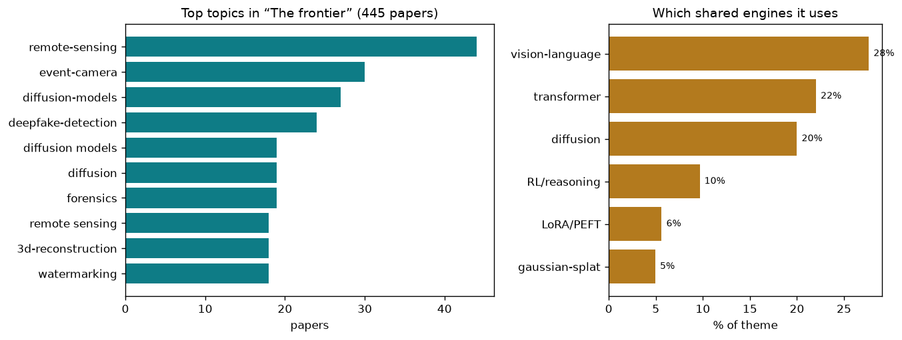

where the field is expanding beyond the ordinary camera and the ordinary task
445 papers · where the field is expanding beyond the ordinary camera and the ordinary task
Computer vision is a bridge from raw measurements to meaning. On one end are the numbers a sensor records; on the other is understanding: this is a ship, that object is accelerating, this cell is alive. For decades the bridge was narrow and fixed. Measurements came from cameras: brightness grids in visible light, sampled steadily, looking perpendicular to the subject. Meaning came from a short list: identify, locate, segment. The whole field rested on a quiet assumption: the world arrives as photographs, and understanding a photograph is understanding the world.
This assumption breaks at the frontier. The ordinary camera is narrow. It fails in darkness and fog, smears with motion, loses three-dimensional structure to projection, and records nothing of how fast things move or what they are made from. Radar ignores fog and night but trades detail for speed and echo. Event cameras ignore steady scenes and fire only when brightness changes, capturing motion at microsecond latency with no blur. Hyperspectral instruments slice light into dozens of fine bands, reading material and chemical composition but sacrificing spatial resolution. Brain signals encode internal visual experience. Each sensor speaks a different language; no existing algorithm tuned for cameras works on events, and naive fusion fails because the signals carry incomparable information.
The task end is just as restrictive. Recognition and localization are only the beginning. The urgent questions now are about trust and control: not just what is in this image but whether it is real, whether a model can be made to forget harmful training data, what three-dimensional part would produce this projection, whether a crop will survive drought. These are duties that ordinary classification never bore. They require guarantees: that a forgetting procedure truly erased knowledge, that a physics-based design works outside the lab, that a deepfake is caught even from a generator unseen. Meeting both challenges—bridging incomparable sensors and meeting new duties—means rebuilding from both ends. It is hard because each new sensor and task demands its own specialized approach, yet the field must also discover what generalizes across all of them.
Event cameras emit spikes asynchronously whenever brightness changes at a pixel, producing sparse, motion-aligned streams with no blur and microsecond latency. The challenge is that this is not a picture and demands new primitives. One-Shot Flow Any-Time Frame estimates bidirectional optical flow once, then interpolates video at any timestamp via linear warping, avoiding the per-frame recomputation that frame-based methods require. Unsupervised 3D Motion Estimation Using Event Camera recovers both ego-motion and depth without labels by deriving a depth prior analytically from optical flow divergence. Moving Border Ownership for Event-based Motion Segmentation is the first to model border ownership (which side of each edge belongs to the moving object) as a signed distance field. SMV-EAR achieves translation-invariant spatiotemporal representation for action recognition by fusing multi-view event encodings dynamically. High-Quality and Efficient Turbulence Mitigation with Events exploits polarity alternation at edges to reduce data overhead by 77–90% when undoing atmospheric shimmer. SpTopoNet adds differentiable persistent homology constraints to small-object detection on events. SpikeTrack applies neuromorphic spike-based vision to real-time tracking. Together these show that event streams encode motion so precisely that you can solve tasks—flow, depth, segmentation, action recognition, dehazing—that frame-based methods either struggle with or cannot solve at all.
Radar ignores weather and darkness but measures velocity directly and is sparse and noisy. Fusing it with cameras or using it alone demands new representations and learning to think in range-Doppler space. RAVEN preserves the explicit MIMO antenna structure through per-RX fast-time processing and learned cross-antenna attention, enabling efficient chirp-wise detection before full frame assembly. RaGS uses 3D Gaussian Splatting as a shared differentiable intermediate for radar-camera fusion, making spatial alignment explicit in 3D before projection. RF4D is the first neural field method for novel-view synthesis using radar alone. FUSAR-GPT embeds spatiotemporal features into a visual-language model tuned for SAR (synthetic-aperture radar) imagery, enabling natural-language description of radar-imaged terrain. MOS aligns optical and SAR ship re-identification by learning modality-specific processing and domain-invariant features. Hybrid Robust Collaborative Perception with LiDAR-4D Radar Fusion is the first to systematically integrate 4D radar (with per-point velocity) and LiDAR for collaborative autonomous driving robust to weather. x2-Fusion reframes multimodal optical flow estimation as representation unification in event-derived edge space. These methods recognize that radar is not a noisy camera; it is a velocity and range sensor that requires new reasoning in its native space.
Hyperspectral and remote-sensing instruments split light into dozens of bands, encoding material and chemical composition. Microscopes resolve sub-micron features. Both gain detail at the cost of measurement burden—noisy, slow, or severely compressed. The core challenge is unmixing spatial and spectral information and undoing anisotropic resolution. Joint Spectral Image Reconstruction and Semantic Segmentation bridges HSI reconstruction and segmentation via segmentation-derived super-tokens as structured context. Enhancing Unregistered Hyperspectral Image Super-Resolution decouples spatial-spectral fusion via unmixing-based abundance learning and coarse-to-fine deformable aggregation. EMR-Diff applies edge-aware multimodal residual diffusion to hyperspectral super-resolution. SGDE jointly estimates coded aperture misalignment and reconstructs hyperspectral images through self-supervision. VEMamba tackles volume electron microscopy anisotropy via axial-lateral cross-SSM scanning with eight directional trajectories and degradation-aware self-supervision. EMGauss reframes vEM axial super-resolution as dynamic Gaussian scene rendering. MicroFM is the first physics-guided flow matching for microscopy super-resolution. Exploring Spatiotemporal Feature Propagation for Video-Level Compressive Spectral Reconstruction is the first video-level hyperspectral dataset and method. Optical Diffraction-based Convolution for Semiconductor Lithography bakes diffraction physics into CNNs so designs generalize across masks. These show that spectral and microscopic imaging is not just enhancement; the measurements encode ground truth (material, molecular identity) that no RGB image contains.
A frontier flips the direction: instead of reading meaning from pixels, output editable, buildable geometry. The difficulty is that manufactured objects are not pictures; they are topologically structured, constrained, and must be parametrically consistent. CME-CAD generates working CAD code from orthographic sketches using heterogeneous prompt-defined experts sharing one policy. Bidirectional Query-Driven Generation of Parametric CAD Sketch completes half-finished parametric sketches from arbitrary spans, supporting how designers work iteratively. AutoRegressive Generation with B-rep Holistic Token Sequence is the first to encode B-rep geometry and topology holistically as token sequences for transformer generation. PP-Brep classifies B-rep from few examples via hybrid three-graph representation (local MST, global parallel, regional hypergraph) with RL-adaptive contrastive pre-training. HiFi-BRep applies topology-guided attention masking enforcing edge-face adjacency for robust B-rep generation. FoV-Net achieves rotation-invariant B-rep learning via field-of-view ray casting. DuetSVG generates scalable vector graphics with internal visual guidance for semantic-visual alignment. Paper2Figure uses FigScript, a structured intermediate representation, with dual multi-agent generation-refinement. VectorArk uses rounded polygon representation, 27–47% more compact than prior methods. SketchRevive fine-grained pixel-to-vector sketch completion via diffusion-prior-guided multimodal LLMs. These show that structured output requires respecting topology and geometry, not just learning a pixel-to-pixel mapping.
As generators improve, detection must generalize to unseen generators while uncovering evidence invisible to humans. The core challenge is that detectors tend to memorize generator artifacts rather than learning what distinguishes real from false. Training-free Detection of Generated Videos via Spatial-Temporal Likelihoods models genuine video likelihood in Gaussian form without training on fakes. Diversity over Uniformity reveals that detectors overfit by collapsing evidence into few cues, and forces diverse complementary features. Enabling Supervised Learning of Generative Signatures manufactures ground-truth comparisons via a stochastically-varied reconstructor. Skyra adds explainability via grounded artifact reasoning and localization. UniGenDet is the first unified generative-discriminative co-evolutionary framework for image generation and detection. Cross-modal Representation Learning for Diffusion-generated Image Detection (SDID) uses cross-modal mutual distillation aligning RGB features with NPR artifacts. Beyond [CLS] Token addresses ViT bias by introducing learnable query tokens with fake-likelihood matching. Benchmarks shift the targets: CoCoVideo uses only commercial-model fakes, FVBench evaluates multimodal LLMs, VMD-FACT targets semantically-consistent misinformation, DeepfakeImpact weights scoring by social deception rate and content virality. SAIDO applies scene-aware LoRA expert selection for per-scene detection. Investigating Self-Supervised Representations for Audio-Visual Deepfake Detection evaluates SSL representations with temporal explanations and unsupervised anomaly scoring.
New duties demand models that forget: private individuals, copyrighted data, harmful knowledge. The difficulty is that knowledge tangles through shared weights, so surgical removal without destroying utility is delicate. Machine Unlearning via Adaptive Gradient Reweighting and Multi-stage Objective Optimization combines adaptive gradient reweighting with multi-stage optimization for efficient unlearning. POUR offers the first provably optimal method for unlearning representations with theoretical information-removal guarantees. Designing to Forget is the first semi-parametric approach, decomposing models into parametric and non-parametric parts for selective removal. In multimodal settings, severing one modality without breaking alignment is harder. VL-Eraser isolates unwanted knowledge into low-rank, modality-orthogonal directions. SineProject bounds weight perturbations via sine transform, provably improving Jacobian stability for vision-language alignment. For concept erasure (stopping generation of certain ideas), Prototype-Guided Concept Erasure models broad concepts as clustered CLIP embedding prototypes. Erasing Thousands of Concepts scales to 2,000+ targets via anchor-free, distribution-based modeling with robust NIR training. GrOCE is the first training-free online method using dynamic semantic graphs with multi-hop diffusion scoring. GenErase preserves semantically-related content while erasing targets. Stake the Points uses CLIP-encoded LLM attributes as semantic anchors during unlearning. Closed-Form Concept Erasure via Double Projections offers theoretical guarantees and computational efficiency. These show that forgetting is an active, controllable operation, not just regularization.
Satellites acquire the Earth in optical, radar, infrared, and hyperspectral bands. Each modality survives different weather, reveals different properties (reflectance, roughness, moisture, temperature). Alignment is not visual; it is geometric and physical. MOS aligns optical and SAR ship re-identification. Fourier Angle Alignment for Oriented Object Detection uses Fourier spectral analysis to align feature maps for remote sensing. FUSAR-GPT embeds spatiotemporal features for SAR visual-language understanding. OlmoEarth stabilizes multimodal EO with frozen random projection targets and bandset-contrastive loss. SkySense-VITA enables universal in-context segmentation across modalities and geography. RAMEN uses wavelength-based channel-conditioned projectors for sensor-agnostic spectral encoding. ChangeBridge performs spatiotemporal generation with multimodal controls. UniChange unifies change detection via multimodal language models. Orthogonal Spatial-Aware Multi-View Anchor Graph Clustering handles incomplete multi-view remote sensing data. Rotation Invariant and Symmetry Aware Pixel Difference Network adds rotation invariance for change detection. GeoSANE learns geospatial representations from weight-space foundation models, not data. OpenDPR achieves open-vocabulary change detection via diffusion-guided prototype retrieval. Prompt-Free Unknown Label Generation for Open World Detection extends detection beyond seen classes. AVION transfers aerial vision-language instruction from domain-specific teachers to prompt-tuned networks. Cross-Scale Pansharpening via ScaleFormer reformulates cross-scale generalization as sequence-length generalization. These show that remote sensing is inherently multimodal, and fusion demands respecting each sensor's physics.
Brain activity encodes internal visual experience. Decoding it yields new sensors for action and new supervision for learning. Cross-Subject EEG-to-Video Reconstruction is the first cross-subject framework using centered subject alignment for universal latent. CineBrain combines synchronized fMRI+EEG with audiovisual content for brain-conditioned video generation. EEGiT adapts Vision Transformers to EEG via spatiotemporal tokenization and domain-specific architectural mods. Modeling the Brain's Grammar: ROI-Guided fMRI Pretraining incorporates neurobiological hierarchy for interpretable visual representations. SATTC solves label-free, test-time calibration for EEG-to-image retrieval across subjects via structure-aware alignment. Reconstructing Spiking Neural Networks Using a Single Neuron with Autapses proves that a single TDA-LIF neuron with time-delayed autapses realizes reservoir computing, MLPs, and convolution. IEBGL integrates LLMs and biomedical literature for interpretability-enhanced brain graph learning. Can Natural Image Autoencoders Compactly Tokenize fMRI Volumes applies natural image encoder representations to fMRI tokenization. These show that brain signals carry visual ground truth and can guide learning without conventional labels.
Several challenges have reached proof of concept. Event streams become motion, depth, video. Radar alone reconstructs scenes for autonomous driving in weather. Satellite radar imagery is described in words. Microscopic and hyperspectral images are restored. CAD parts and vector art are generated as editable structure. Models forget specific knowledge and refuse specific outputs. The field has broken the ordinary-camera, ordinary-task cage.
What remains hard is generalization across sensors and settings. Event-based detection does not transfer to event + radar. A deepfake detector trained on one generator fails on another. Hyperspectral unmixing breaks when the library of materials changes. Unlearning lacks proof that forgotten knowledge cannot be recovered by adversarial prompting. Physics-informed methods generalize poorly outside their training domain. Most importantly, the field still lacks a unified explanation for when and why exotic sensors help, and how to design fusion that is robust rather than brittle. The unifying open question is whether the scattered sensor-specific breakthroughs—event cameras, multimodal radar, spectral imaging, brain decoding—can consolidate into general principles that transfer and hold under distribution shift, rather than requiring one bespoke bridge per problem.
The theme above is broad. Here are the distinct sub-problems inside it — each in plain terms: the big-picture problem, then how the field tackles it, then representative papers.
The problem. An ordinary camera takes a full picture on a fixed clock, so it wastes effort on parts of the scene that never change and it blurs or misses anything that moves too fast between frames. A new class of sensors — event and spike cameras — instead reports only the instant each pixel's brightness changes, giving microsecond timing and huge dynamic range. The hard part is that these sensors produce a sparse, asynchronous stream of dots rather than an image, so almost none of the toolbox built for normal pictures applies, and turning that stream back into something usable is a research problem of its own.
The approaches. One family rebuilds conventional outputs from the stream — reconstructing sharp video, depth, or 3D scenes from events, often by fusing them with a blurry or low-light frame so each sensor covers the other's blind spot. A second family redesigns the recognition machinery itself around timing, using spiking neural networks whose neurons fire in time like the sensor does, chasing the sensor's speed and low power. A third pushes events into hard regimes — tracking through occlusion, fast motion, or darkness — where the timing advantage matters most, and a fourth simply builds the missing infrastructure of calibration, simulation, and large-scale pretraining so the rest can scale.
▸ Turning a spark stream back into ordinary pictures
Problem. Event and spike sensors report only the instants brightness changes, so their raw output is a stream of dots, not an image; a blurry or dark conventional frame captures color and texture but loses fast motion. Neither alone gives a usable sharp video. Approach. Fuse the timing-rich event stream with a single blurry or low-light frame so each sensor fills the other's blind spot, reconstructing sharp high-frame-rate video, depth, or stereo through learned alignment and physical deblurring priors.
The fundamental point. It establishes that a fast, sparse stream of change-events carries enough hidden structure to reconstruct the continuous image a slow camera missed, if it is anchored to even one conventional frame.
Event-Based Motion Deblurring Using Task-Oriented 3D… · Event-based Motion Deblurring with Unpaired Data · Time-Specialized Event-Image Alignment for Blur-to-V… · Spk2VidNet: A Hierarchical Recurrent Architecture fo… · Depth Hypothesis Guided Iterative Refinement for Eve…
▸ Rebuilding recognition around neurons that fire in time
Problem. Standard networks process fixed images in synchronous layers, wasting the event sensor's microsecond, low-power advantage. To match the sensor you need computation that itself runs on spikes, but spiking networks are notoriously unstable to train. Approach. Redesign the spiking neuron and its training so gradients stay coherent online, then build full spike-driven trackers and detectors that consume events directly without ever forming an image.
The fundamental point. It proves that if the sensor speaks in spikes, the recognizer can too, keeping the entire pipeline asynchronous and low-power rather than translating back into frames.
Rethinking SNN Online Training and Deployment: Gradi… · SpikeTrack: A Spike-driven Framework for Efficient V… · Stable Spike: Dual Consistency Optimization via Bitw… · SDTrack: A Baseline for Event-based Tracking via Spi…
▸ Winning where timing is the only advantage left
Problem. The event camera's edge only matters in regimes that break normal cameras: keeping a point locked through occlusion, blur, and violent motion, or detecting keypoints when frames alone are ambiguous. Approach. Continuously update the scene between frame arrivals using the event stream, treating perception as a temporally continuous signal, and let 3D-guided event agents sharpen 2D features for robust tracking and keypoint detection.
The fundamental point. It reveals that the sensor's real payoff is not a prettier image but unbroken continuity through moments where a framed camera goes blind.
TAPFormer: Robust Arbitrary Point Tracking via Trans… · EV-CGNet: Co-visible Focused 3D-guided 2D Event Keyp… · SpikeTrack: A Spike-driven Framework for Efficient V…
▸ Building the missing scaffolding for events to scale
Problem. Event cameras report changes instead of full images, so they do not fit the tools built for ordinary photos. The field lacks the large labels, pretrained encoders, and simple recipes that made image vision scale. Approach. These papers align sparse event streams with dense image knowledge and create proxy event data when real labels are scarce. They translate the new sensor into structures older vision models can understand.
The fundamental point. The mathematical idea is representation transfer: preserve the motion information unique to events while mapping it into a shared space where existing visual knowledge can help.
Scaling Dense Event-Stream Pretraining from Visual F… · EventHub: Data Factory for Generalizable Event-Based…
The problem. The most exotic 'camera' is a person's own visual system: when someone looks at or imagines a scene, their brain activity contains a trace of what they saw. Recovering that image or video from a brain scan would turn perception itself into a readable signal, but the recordings are noisy, low-resolution, wildly different from person to person, and only loosely tied to the pixels — a smeared, indirect echo of vision. Bridging that gap means learning what in a blurry neural pattern corresponds to real visual structure.
The approaches. The dominant recipe aligns brain signals to a shared image or language space and then lets a generative model paint the picture, so weak neural evidence steers a strong prior toward a plausible reconstruction. Researchers split by signal source — fast but coarse EEG versus slower, richer fMRI — and by output, reconstructing still images versus full watched video. A parallel effort chases generality: foundation models and cross-subject alignment that transfer across people instead of retraining per brain, plus decoding not just what was seen but its 3D shape.
▸ Fast but coarse: decoding from scalp electricity
Problem. EEG records brain activity at millisecond speed but from outside the skull, so the signal is smeared and noisy, and it is only loosely tied to the pixels a person saw. Approach. Encode EEG with frequency-aware or dual-stream methods and lean on linguistic or generative priors, using cycle-consistency and dual diffusion to steer a strong image prior toward a plausible reconstruction from weak evidence.
The fundamental point. It establishes that even a blurry outside-the-skull signal contains enough of what was seen to steer a generative model, if the weak evidence is aligned to a shared semantic space.
Decoding 3D Perception via BrainSSD: Synergistic Fus… · Linguistic Priors for Visual Decoupling: Towards Sym… · D2-FOSA: Dual-Diffusion Guided EEG-to-Image Reconstr…
▸ Slower but richer: decoding from blood-flow scans
Problem. fMRI sees the whole brain in fine spatial detail but slowly, and the recordings are enormous, high-dimensional, and only indirectly linked to the images or videos being watched. Approach. Tokenize fMRI volumes compactly, exploit the brain's anatomical hierarchy for pretraining, and reconstruct watched video by decomposing it into layered semantic descriptions that guide decoding.
The fundamental point. It reveals that the brain's own spatial organization can be used as an inductive prior, turning a giant noisy volume into a compact, decodable representation of perception.
fMRI-LM: Towards a Universal Foundation Model for La… · Bridging Brain and Semantics: A Hierarchical Framewo… · Modeling the Brain's Grammar: ROI-Guided fMRI Pretra… · SemVideo: Reconstructs What You Watch from Brain Act… · Can Natural Image Autoencoders Compactly Tokenize fM…
▸ One decoder for many brains
Problem. Brains differ so much between people that a model trained on one person collapses on another, forcing an expensive retrain per subject and blocking any general brain-reading tool. Approach. Learn a shared latent space across subjects via centered subject alignment and dual-level stimulus-plus-subject alignment, then calibrate to a new person at test time without any of their labeled data.
The fundamental point. It proves that the brain-to-image mapping has a subject-invariant core that can be separated from individual idiosyncrasy, making cross-person transfer possible.
SATTC: Structure-Aware Label-Free Test-Time Calibrat… · Cross-Subject EEG-to-Video Reconstruction and Beyond · Duala: Dual-Level Alignment of Subjects and Stimuli …
▸ Decoding shape, not just the flat picture
Problem. Most brain decoding recovers a 2D image, but perception is of a 3D world, and it is unclear whether neural signals carry recoverable three-dimensional structure at all. Approach. Reconstruct viewpoint-consistent 3D objects from brain signals using Gaussian splatting, and unify encoding and decoding as reversible transforms so predicting brain-from-image and image-from-brain reinforce each other.
The fundamental point. It establishes that neural activity encodes not just a snapshot but recoverable 3D structure, pushing brain reading from pictures toward scenes.
More Natural, More Real: Object-aware Gaussian Splat… · NeuroFlow: Toward Unified Visual Encoding and Decodi… · Decoding 3D Perception via BrainSSD: Synergistic Fus…
The problem. Cameras fail exactly when you most need perception — heavy weather, total darkness, around corners, or where the important information is a wavelength or polarization the eye can't see. Radar, LiDAR, millimeter-wave, and spectral or polarized light carry that information, but each speaks a different physical language: sparse point returns, raw waveforms, hundreds of color bands, or the geometry of reflected light. The challenge is extracting clean scene understanding from signals that are noisy, low-resolution, and nothing like a photograph.
The approaches. One line fuses these sensors with ordinary cameras so radar's all-weather robustness or LiDAR's geometry fills in where vision breaks down, extending detection and 3D reconstruction to adverse conditions. Another bakes the physics of the sensor directly into the model — polarization priors, spectral unmixing, or coded illumination — to reconstruct scenes, remove reflections, or synthesize new views from radio fields. A third stretches these signals to tasks once reserved for cameras, like human pose and mesh recovery from millimeter-wave, non-line-of-sight imaging, or root systems underground.
▸ Letting radar and camera cover each other's failures
Problem. Cameras die in bad weather and darkness while radar is all-weather but sparse and low-resolution; alone, neither gives reliable 3D detection in adverse conditions. Approach. Fuse 4D radar with cameras through BEV-compatible modules or a shared differentiable Gaussian representation, and build multi-sensor benchmarks that capture emerging modalities in identical adverse scenes.
The fundamental point. It shows that robustness comes not from a better single sensor but from binding radar's weather-immunity to the camera's detail in one aligned representation.
RAVEN: Radar Adaptive Vision Encoders for Efficient … · DSERT-RoLL: Robust Multi-Modal Perception for Divers… · R4Det: 4D Radar-Camera Fusion for High-Performance 3… · RaGS: Unleashing 3D Gaussian Splatting from 4D Radar…
▸ Baking the physics of light into the model
Problem. Polarization, spectral bands, and reflection geometry carry scene information the eye and ordinary cameras discard, but exploiting them needs the actual optics modeled, not just more data. Approach. Embed polarization and spectral physics directly into reconstruction, using solar-driven polarization for geolocation, polarization state tracing for reflection removal, and compact metasurface or defocus optics for snapshot hyperspectral imaging.
The fundamental point. It establishes that the physical laws governing how light polarizes, disperses, and reflects are themselves a prior strong enough to reconstruct what a plain photo cannot.
Global Underwater Geolocation from Time-Lapse Polari… · PolarGuide-GSDR: 3D Gaussian Splatting Driven by Pol… · Spectrum from Defocus: Fast Spectral Imaging with Ch… · Polarization State Tracing for Reflection Removal an… · MetaSpectra+: A Compact Broadband Metasurface Camera…
▸ Making radio waves do a camera's job
Problem. Radio and millimeter-wave signals can see through walls, around corners, and in darkness, but they were never meant for imaging, so extracting scenes, human bodies, or novel views from them is largely unsolved. Approach. Build neural radar fields for novel-view synthesis, repurpose existing mmWave communication infrastructure for 3D scene imaging, and reconstruct human meshes and point clouds from radar via flow-matching and large benchmarks.
The fundamental point. It reveals that the same radio signals used to communicate or detect motion carry enough spatial structure to reconstruct scenes and bodies once the right model is imposed.
RF4D:Neural Radar Fields for Novel View Synthesis in… · X-band Radar Non-Line-of-Sight Imaging · Rascene: High-Fidelity 3D Scene Imaging with mmWave … · mmWaveFlow: Unified Enhancement and Generation of mm… · M4Human: A Large-Scale Multimodal mmWave Radar Bench…
The problem. Beyond everyday scenes, biology and medicine generate their own kinds of images — microscopes, electron scans, cryo-EM, tissue slides — and increasingly ask vision models to read out things no eye can see, like which genes are active in a piece of tissue or the 3D shape of a molecule. These modalities are alien: extreme scale differences, severe noise, missing dimensions, and labels that come from a wet-lab assay rather than a human annotator. The payoff is turning a picture into a measurement of biology.
The approaches. One cluster reconstructs and denoises the raw instrument data itself — filling in the missing depth axis of microscopy, sharpening electron images, or recovering structure from sparse cryo-EM — often with physics-guided generative priors. A second cluster performs cross-modal inference, predicting gene expression, cell types, or disease signals directly from cheap images by learning the statistical link between what tissue looks like and what it is doing. A third treats molecules and proteins as new visual objects, learning representations that predict function or chemistry.
▸ Repairing the raw output of the instrument
Problem. Microscopes and electron scanners produce data that is anisotropic, noisy, or missing a whole spatial axis, so the raw image is not directly usable as a measurement. Approach. Recover the missing depth axis and denoise with axial-lateral state-space scanning, physics-guided flow matching, Gaussian slice-to-3D modeling, and compressive sensing with generative priors on the protein image manifold.
The fundamental point. It establishes that the instrument's own degradation physics can be inverted with learned priors, turning a distorted scan into a faithful 3D measurement.
VEMamba: Efficient Isotropic Reconstruction of Volum… · MicroFM: Physics-guided Flow Matching for Isotropic … · cryoSENSE: Compressive Sensing Enables High-throughp… · EMGauss: Continuous Slice-to-3D Reconstruction via D… · MUVIT: Multi-Resolution Vision Transformers for Lear…
▸ Predicting biology you can't see from images you can
Problem. Knowing which genes are active or what cell types are present normally requires expensive wet-lab assays, yet that information is statistically linked to how tissue looks under a microscope. Approach. Learn the image-to-molecule mapping directly, predicting spatial gene expression from histology via high-order cell interactions, cell-type prototypes, and adapted single-cell foundation models guided by bulk RNA-seq.
The fundamental point. It proves that a cheap image of tissue is a readable proxy for the costly molecular assay, because appearance and biological activity are statistically bound.
Bulk RNA-seq Guided Multi-modal Detection of Anomalo… · Predicting Spatial Transcriptomics from Histology Im… · Cell-Type Prototype-Informed Neural Network for Gene… · Adapting a Pre-trained Single-Cell Foundation Model …
▸ Treating molecules and proteins as visual objects
Problem. Molecules and proteins have function and chemistry that no image annotator can label, and their structure lives outside the natural-image world entirely. Approach. Learn representations that predict function or chemistry, combining protein and substrate modalities for enzyme kinetics, denoising non-equilibrium molecular coordinates, and cascading drug-RNA-morphology generation.
The fundamental point. It establishes that molecular structure can be encoded as a learnable object whose representation predicts real chemical behavior, extending vision-style representation learning to matter itself.
Multimodal Protein Language Models for Enzyme Kineti… · TRIDENT: A Trimodal Cascade Generative Framework for… · Coordinate Denoising for Non-Equilibrium Molecular R… · FluoCLIP: Stain-Aware Focus Quality Assessment in Fl… · Building Robust Vision Encoders for Cross-Dataset Ev…
The problem. Satellites and drones now image the planet continuously across optical, radar, and spectral bands, but the pixels arrive faster than anyone can interpret them, and the viewpoints are unlike ground photos — top-down, enormous, spanning many sensors and seasons. Turning this flood into answers about crops, cities, wildfires, or change over time is hard because the data is heterogeneous, the scenes are gigantic, and useful labels are scarce. Getting it right connects vision to real decisions about land, food, and disaster.
The approaches. A foundation-model line pretrains general encoders on huge unlabeled Earth imagery so downstream tasks like segmentation or yield prediction need little labeling, often fusing optical with radar to cover clouds and weather. A language line attaches vision-language models and reasoning to remote sensing, letting people query maps in words, ground answers spatially, or detect what changed between dates. A geometry line solves the cross-view matching problem — locating a ground photo on a satellite map or navigating a drone from aerial and satellite references — plus building specialized detectors for the tiny, rotated objects satellites see.
▸ Pretraining one encoder for all of Earth's sensors
Problem. Satellite imagery arrives faster than anyone can label it, across optical, radar, and spectral bands that look nothing alike, so every downstream task starves for annotations. Approach. Pretrain general encoders on huge unlabeled Earth data with masked modeling that exploits neighboring-tile dependencies, speckle-aware SAR objectives, and stable multimodal latent modeling across heterogeneous sensors.
The fundamental point. It shows that a single self-supervised encoder can absorb the planet's heterogeneous sensor streams into one representation, so labels become a small downstream cost rather than the bottleneck.
NeighborMAE: Exploiting Spatial Dependencies between… · SARMAE: Masked Autoencoder for SAR Representation Le… · OlmoEarth: Stable Latent Image Modeling for Multimod… · TESSERA: Temporal Embeddings of Surface Spectra for …
▸ Querying the map in words
Problem. Turning satellite pixels into answers people actually want, about crops, cities, or what changed between dates, requires connecting vision to language and reasoning over gigantic top-down scenes. Approach. Attach vision-language models and chain-of-thought to remote sensing, using diffusion-based parallel geospatial generation, active zoom-in perception, manifold-routed reasoning, and MLLM-driven change detection.
The fundamental point. It establishes that Earth imagery can be made conversational, letting a person ask in words what changed or what is where, rather than hand-building a detector per question.
GeoDiT: A Diffusion-based Vision-Language Model for … · ZoomEarth: Active Perception for Ultra-High-Resoluti… · UniChange: Unifying Change Detection with Multimodal… · GeoCoT: Towards Reliable Remote Sensing Reasoning wi… · ChangeBridge: Spatiotemporal Image Generation with M…
▸ Matching the ground to the sky
Problem. Locating a ground photo on a satellite map, or a drone against aerial references, is a hard cross-view geometry problem because the same place looks utterly different from above and from the side. Approach. Solve cross-view geolocalization with iterative flow prediction in continuous pose space, exploit OpenStreetMap's metric structure, unify tri-view matching, and detect the tiny rotated objects satellites see via Fourier angle alignment.
The fundamental point. It reveals that ground and overhead views share a recoverable geometric correspondence, making a photo self-locating against a map without brute-force retrieval.
Fourier Angle Alignment for Oriented Object Detectio… · GeoFlow: Real-Time Fine-Grained Cross-View Geolocali… · RHO: Robust Holistic OSM-Based Metric Cross-View Geo… · UniGeoRS: A Unified Benchmark for Tri-view Geo-Local… · SkySense-VITA: Towards Universal In-context Segmenta…
The problem. Generative models can now produce images and videos convincing enough to deceive people, which creates a brand-new duty for computer vision: not to create or recognize content, but to judge whether content is authentic. This is fundamentally an arms race — every detector teaches the next generator what to hide — and the deepest difficulty is generalization, since a detector trained on today's fakes tends to collapse on the next model's output or after ordinary compression and editing.
The approaches. One family hunts for generation fingerprints — statistical traces in frequency, phase, or reconstruction error that betray synthesis regardless of content — and tries to make those cues survive to unseen generators. A second recruits large multimodal models to reason about and localize forgeries, explaining and pointing to the manipulated region rather than emitting a bare yes/no. A third shifts from detection to prevention, proactively immunizing photos so they resist face-swapping or malicious image-to-video generation. Underlying all of it is a heavy investment in benchmarks that test detectors against realistic, commercial-grade fakes.
▸ Hunting the fingerprints generators leave behind
Problem. Every generator leaves subtle statistical traces, but a detector trained on today's traces collapses on the next model's output or after ordinary compression, so the core fight is generalization. Approach. Find cues that survive to unseen generators, using phase-spectrum robustness against compression, RAW-RGB alignment traces, cross-layer feature consistency, reconstruction-error debiasing, and diversity-preserving representations.
The fundamental point. It establishes that synthesis leaves a physical or statistical signature distinct from real capture, and the detector's job is to find the trace that is invariant across generators, not the one specific to one.
Diversity over Uniformity: Rethinking Representation… · Enabling Supervised Learning of Generative Signature… · Detecting Compressed AI-Generated Images via Phase S… · A Debiased Reconstruction-based Framework for Traini… · Layer Consistency Matters: Elegant Latent Transition…
▸ Making the detector explain and point
Problem. A bare yes-or-no verdict is untrustworthy and unactionable; people need to know which region is fake and why, especially as fakes become partial and localized. Approach. Recruit multimodal models to reason about and localize forgeries, coupling global and local analysis with region proposals, grounded artifact reasoning for video, and MLLM-as-judge frameworks with human reasoning labels.
The fundamental point. It reveals that reliable detection and human trust require the model to ground its verdict in visible evidence, turning detection into explainable localization rather than classification.
Skyra: AI-Generated Video Detection via Grounded Art… · Locate-Then-Examine: Grounded Region Reasoning Impro… · Pixels Don't Lie (But Your Detector Might): Bootstra… · Omni-Fake: Benchmarking Unified Multimodal Social Me…
▸ Attribution and the benchmark arms race
Problem. A fake is not only real or fake; people also need to know where it came from and whether detectors still work against current generators. Old tests can make progress look better than it is. Approach. These works search for source signatures in generated media and build tests using many generators, modalities, and realistic forgeries. They measure whether detectors track the actual threat rather than yesterday’s artifacts.
The fundamental point. Attribution is signal extraction under disguise: find the small source pattern that survives after content changes. Honest benchmarks matter because a detector is only as good as the fakes it is compared against.
Scaling Up AI-Generated Image Detection with Generat… · Beyond [CLS] Token: Query-Driven Token-Level Forgery… · Omni-Fake: Benchmarking Unified Multimodal Social Me… · SAGA: Source Attribution of Generative AI Videos · Training-free Detection of Generated Videos via Spat…
The problem. If anyone can generate realistic media, the companion problem to detecting fakes is proving where a piece of content came from — which model made it, or that a genuine image has not been tampered with. A watermark is the tool: a hidden, machine-readable signature embedded in the pixels. The hard part is that a watermark must be invisible to people yet survive compression, editing, cropping, novel-view rendering, and adversaries actively trying to strip it — a robustness fight against both ordinary processing and deliberate attack.
The approaches. One line bakes the mark into the generator itself, so every diffusion or autoregressive output carries a native, high-capacity signature that is hard to remove without wrecking the image. Another designs marks that are invariant to specific transformations — flow consistency across video frames, patch-pair structure that survives AI editing, or embeddings robust to camera capture. A third extends watermarking to newer media like 3D Gaussian scenes, and a fourth reframes the goal as attribution and tracing — recovering which model or concept produced content, sometimes by treating attribution as a retrieval problem — while adversarial work probes how easily current marks break.
▸ Marking content the moment it is generated
Problem. Watermarks added after the fact are easy to strip; a mark baked into the generator itself can carry a native, high-capacity signature on every output, but must not wreck image quality. Approach. Embed the mark inside the generative process, using visual-token clustering for autoregressive models, progressive guidance that avoids costly inversion, and invertible latent embedding for high-capacity diffusion-native marks.
The fundamental point. It establishes that provenance is cheapest and most robust when it is born with the content, woven into generation rather than stamped on afterward.
ClusterMark: Towards Robust Watermarking for Autoreg… · GROW: Watermark Generation with Progressive Guidance… · MaxMark: High-Capacity Diffusion-Native Watermarking…
▸ Marks that survive the transformations they will face
Problem. A watermark is useless unless it endures the specific operations content undergoes, video motion, AI re-editing, camera recapture, or targeted paraphrasing attacks that regenerate the image. Approach. Design marks invariant to those transforms, using optical-flow-guided temporal consistency for video, patch-pair structural invariance against AI editing, face-content-as-payload for manipulated faces, and semantic-stability guidance against paraphrase attacks.
The fundamental point. It reveals that robustness is a matter of anchoring the mark to whatever structure a given attack cannot alter without destroying the content itself.
WaTeRFlow: Watermark Temporal Robustness via Flow Co… · Rel-Zero: Harnessing Patch-Pair Invariance for Robus… · SPDMark: Selective Parameter Displacement for Robust… · RecoverMark: Robust Watermarking for Localization an… · PECCAVI: Overcoming the Brittleness of AI Image Wate…
▸ Provenance for 3D and the attribution frontier
Problem. Newer media like 3D Gaussian scenes have no established watermarking, and often the real goal is not a hidden bit but tracing which model or concept produced content, even without access to the generator. Approach. Extend watermarking to 3D Gaussian splatting with explainable, quantization-robust, and policy-guided embedding, and reframe attribution as retrieval or multi-concept token recovery that works model-agnostically.
The fundamental point. It establishes that ownership tracing generalizes beyond flat pixels to any generated medium, and that attribution can be a retrieval problem solvable without ever opening the generator.
Mark4D: Temporally-Consistent Watermarking for 4D Ga… · Robust3DGSW: Toward Robust Watermarking for Quantiza… · Where, What, Why: Toward Explainable 3D-GS Watermark… · Write Where It Matters: Policy-Guided Watermarks for… · TokenTrace: Multi-Concept Attribution through Waterm…
The problem. Once a model has learned from data, that knowledge is baked in — but law, consent, and safety increasingly demand the ability to remove specific data, faces, or concepts after the fact, without retraining from scratch and without wrecking everything else the model knows. This is genuinely hard because knowledge in a network is entangled: erasing one person or one dangerous concept tends to damage neighbors and leave leakable traces. The broader duty is giving people control over how their likeness and information live inside models.
The approaches. A machine-unlearning line surgically removes the influence of chosen training data, aiming to be verifiable, efficient, and even federated across decentralized owners, while checking that forgetting is real and not just hidden. A concept-erasure line targets generative models, scrubbing specific styles, objects, or unsafe content — sometimes thousands at once — while preserving the rest of the model's ability. A privacy line works at the input and representation level, anonymizing faces and gaze or stripping identity from learned features so shared data and encoders no longer expose the individuals inside them.
▸ Surgically removing training data after the fact
Problem. Law and consent demand erasing specific data's influence from a trained model without retraining from scratch and without damaging everything else it learned, but knowledge is entangled across the network. Approach. Excise chosen data's influence with adaptive gradient reweighting, geometry-driven federated unlearning across decentralized owners, sine-modulated projector perturbations, and provably optimal representation removal with theoretical guarantees.
The fundamental point. It proves that a specific slice of learned knowledge can be isolated and removed with bounded, verifiable collateral damage, rather than requiring a costly full retrain.
Machine Unlearning via Adaptive Gradient Reweighting… · GDFA: Geometry-Driven Federated Unlearning with Dire… · SineProject: Machine Unlearning for Stable Vision-La… · POUR: A Provably Optimal Method for Unlearning Repre… · Selective Amnesia using Contrastive Subnet Erasure f…
▸ Scrubbing concepts out of generators
Problem. Generative models can produce unsafe styles, objects, or copyrighted content, and one needs to erase these, sometimes thousands at once, while preserving the model's remaining ability. Approach. Target concepts in diffusion and detector models via prototype-guided erasure, scalable anchor-free distribution modeling for thousands of concepts, semantic routing with mappers, closed-form double projections, and null-space projection for open-vocabulary detectors.
The fundamental point. It establishes that a generator's concepts occupy separable subspaces that can be projected out, making selective, large-scale forgetting mathematically tractable.
Prototype-Guided Concept Erasure in Diffusion Models · Erasing Thousands of Concepts: Towards Scalable and … · MapRoute: Semantic Routing for Precise Concept Erasu… · Closed-Form Concept Erasure via Double Projections · Unlearning without Forgetting: Securely Removing Tar…
▸ Protecting people at the input and representation level
Problem. Even without unlearning, shared images and learned encoders leak the identities and private attributes of the people inside them, exposing individuals to recognition and re-identification. Approach. Anonymize faces and eyes while preserving utility like gaze, defend against face recognition with pose-invariant protection, and audit and strip identity from encoder features via linear subspace removal and dedicated benchmarks.
The fundamental point. It reveals that identity can be measured and removed from raw data and learned features while keeping the data useful, giving people control over how their likeness lives inside models.
Protego: User-Centric Pose-Invariant Privacy Protect… · PrivateEyes: Gaze-Preserving Anonymization for Data … · From Measurement to Mitigation: Quantifying and Redu… · SALMUBench: A Benchmark for Sensitive Association-Le…
Each cluster connects a family of related papers from first principles, with an animated diagram and the papers grouped by approach.

Left: the theme's most common topics. Right: how much it leans on each shared engine.
| Paper | Code |
|---|---|
| 240FPS Stereo Vision from Monocular Mixed Spikes | yongqiye00/MonoSpikeStereo |
| ARES: Unifying Asymmetric RGB-Event Stereo for Probabilistic Scene Flow Estimation | leejielong/ARES |
| AVION: Aerial Vision-Language Instruction from Offline Teacher to Prompt-Tuned Network | yuhu990424/AVION |
| Adapting a Pre-trained Single-Cell Foundation Model to Spatial Gene Expression Generation | donghaifang/HINGE |
| All in One: Unifying Deepfake Detection, Tampering Localization, and Source Tracing with a | vpsg-research/LIDMark |
| Attribution as Retrieval: Model-Agnostic AI-Generated Image Attribution | hongsong-wang/LIDA |
| AutoRegressive Generation with B-rep Holistic Token Sequence Representation | 123qiang06/BrepARG |
| Balanced Hierarchical Contrastive Learning with Decoupled Queries for Fine-grained Object | chncdx/BHCL |
| Beyond Tie Points: Satellite Image Block Adjustment based on Dense Feature Consistency | YiLiu-AndyLau/BeyondTiePoints |
| Bidirectional Cross-Modal Prompting for Event-Frame Asymmetric Stereo | xnh97/Bi- |
| Breaking Smooth-Motion Assumptions: A UAV Benchmark for Multi-Object Tracking in Complex a | kxzhang-lab/DynUAV |
| CARE: A Molecular-Guided Foundation Model with Adaptive Region Modeling for Whole Slide Im | zdipath/CARE |
| CF-IPT: Cross-Modal Fusion Interactive Prompt Tuning of Vision-Language Pre-Trained Model | Jiahuiqu/CF-IPT |
| ClusterMark: Towards Robust Watermarking for Autoregressive Image Generators with Visual T | lukovnikov/ClusterMark |
| ConeSep: Cone-based Robust Noise-Unlearning Compositional Network for Composed Image Retri | Lee-zixu/ConeSep |
| Cross-Domain Few-Shot Segmentation via Multi-view Progressive Adaptation | niejiahao1998/MPA |
| Cross-Scale Pansharpening via ScaleFormer and the PanScale Benchmark | caoke-963/ScaleFormer |
| Cross-Slice Knowledge Transfer via Masked Multi-Modal Heterogeneous Graph Contrastive Lear | wenwenmin/SpaHGC |
| DPGF-Net: Dual-Prior Guided Fusion Network for Joint Assessment of Perceptual Quality and | leeto221/AGIQA |
| Decoupling Bias, Aligning Distributions: Synergistic Fairness Optimization for Deepfake De | ywh1093/Fairness-Optimization |
| DeepProtect: Proactive Face-Swapping Defense using Identity Blending and Attribute Distort | BACKAI/DeepProtect |
| Detect Any AI-Counterfeited Text Image | qcf-568/DanceText |
| DiffDecompose: Layer-Wise Decomposition of Alpha-Composited Images via Diffusion Transform | Wangzt1121/DiffDecompose |
| Dual-level Adapter Boosting Prompt-free Curvilinear Structure Segmentation | kylechuuuuu/SACM |
| Duala: Dual-Level Alignment of Subjects and Stimuli for Cross-Subject fMRI Decoding | ShumengLI/Duala |
| Dynamic Stream Network for Combinatorial Explosion Problem in Deformable Medical Image Reg | ShaochenBi/DySNet |
| EMMA: Concept Erasure Benchmark with Comprehensive Semantic Metrics and Diverse Categories | lobsterlulu/EMMA |
| EMR-Diff: Edge-aware Multimodal Residual Diffusion Model for Hyperspectral Image Super-res | luocz55/EMR-Diff |
| Editprint: General Digital Image Forensics via Editing Fingerprint with Self-Augmentation | HighwayWu/Editprint |
| Enabling Supervised Learning of Generative Signatures for Generalized AI-Generated Images | jumpycat/GenSign |
| Enhancing Unregistered Hyperspectral Image Super-Resolution via Unmixing-based Abundance F | yingkai-zhang/UAFL |
| Erasing Thousands of Concepts: Towards Scalable and Practical Concept Erasure for Text-to- | GantMan/nsfw_model |
| Event-Illumination Collaborative Low-light Image Enhancement with a High-resolution Real-w | QUEAHREN/EIC-LIE |
| Event-based Motion Deblurring with Unpaired Data | Chohoonhee/EMP |
| EventGait: Towards Robust Gait Recognition with Event Streams | QUEAHREN/EventGait |
| Exploring Spatiotemporal Feature Propagation for Video-Level Compressive Spectral Reconstr | nju-cite/DynaSpec |
| F2Net: A Frequency-Fused Network for Ultra-High Resolution Remote Sensing Segmentation | easm002/F2Net |
| FVBench: Benchmarking Deepfake Video Detection Capability of Large Multimodal Models | IntMeGroup/FVBench |
| FoV-Net: Rotation-Invariant CAD B-rep Learning via Field-of-View Ray Casting | UGent-CVAMO/fovnet |
| Forensic-Friendly Image Manipulation via Controllable Latent Diffusion | chloeadrian12/FFIM |
| Fourier Angle Alignment for Oriented Object Detection in Remote Sensing | gcy0423/Fourier- |
| GenTract: Generative Global Tractography | alecsargood/GenTract |
| GeoBridge: A Semantic-Anchored Multi-View Foundation Model Bridging Images and Text for Ge | MiliLab/GeoBridge |
| GeoFlow: Real-Time Fine-Grained Cross-View Geolocalization via Iterative Flow Prediction | AyeshAbuLehyeh/GeoFlow |
| GeoViS: Geospatially Rewarded Visual Search for Remote Sensing | Zhang-Peirong/GeoVis |
| HiFi-BRep: High-Fidelity Latent Representation for Robust B-Rep Generation | 1nnoh/HiFi-BRep |
| IDperturb: Enhancing Variation in Synthetic Face Generation via Angular Perturbations | fdbtrs/IDiff-Face |
| IEBGL: An Interpretability-Enhanced Brain Graph Learning Framework with LLM-Instructed Top | CxImgLab/IEBGL |
| IncreFA: Breaking the Static Wall of Generative Model Attribution | Ant0ny44/IncreFA |
| Intervention-Aware Multiscale Representation Learning from Imaging Phenomics and Perturbat | The-Real-JerryChen/BioMicroscopyProfiler |
| Investigating Self-Supervised Representations for Audio-Visual Deepfake Detection | JoeLeelyf/OpenAVFF |
| Joint Spectral Image Reconstruction and Semantic Segmentation with Cooperative Unfolding | zjhe02/CRSDUN |
| Layer Consistency Matters: Elegant Latent Transition Discrepancy for Generalizable Synthet | yywencs/LTD |
| Linguistic Priors for Visual Decoupling: Towards Symmetric Vision-Brain Alignment | TKQXX/BVSA |
| MM-OVSeg: Multimodal Optical–SAR Fusion for Open-Vocabulary Segmentation in Remote Sensing | Jimmyxichen/MM-OVSeg |
| MMGait: Towards Multi-Modal Gait Recognition | BNU-IVC/MMGait |
| MOGeo: Beyond One-to-One Cross-View Object Geo-localization | LV-BO001/MOGeo |
| MOS: Mitigating Optical-SAR Modality Gap for Cross-Modal Ship Re-Identification | yjzhao1019/MOS |
| MapRoute: Semantic Routing for Precise Concept Erasure with Mapper | GG-li/MapRoute |
| MaxMark: High-Capacity Diffusion-Native Watermarking via Robust and Invertible Latent Embe | SeRAlab/MaxMark |
| MemFlow: A Lightweight Forward Memorizing Framework for Quick Domain Adaptive Feature Mapp | so-link/MemFlow |
| Meta-learning In-Context Enables Training-Free Cross Subject Brain Decoding | ezacngm/braInCodec |
| Neighbor-Aware Localized Concept Erasure in Text-to-Image Diffusion Models | alirezafarashah/NLCE.git |
| NeighborMAE: Exploiting Spatial Dependencies between Neighboring Earth Observation Images | LeungTsang/NeighborMAE |
| Neural Field-Based 3D Surface Reconstruction of Microstructures from Multi-Detector Signal | zju3dv/NFH-SEM |
| NeuroSeg Meets DINOv3: Transferring 2D Self-Supervised Visual Priors to 3D Neuron Segmenta | yy0007/NeurINO |
| Neurodynamics-Driven Coupled Neural P Systems for Multi-Focus Image Fusion | MorvanLi/ND-CNPFuse |
| ORSATR-X: A Foundation Model based on Differential-and-Excitation Networks for Optical Rem | Ayniiii/ORSATR-X |
| OccuFly: A 3D Vision Benchmark for Semantic Scene Completion from Aerial UAV Views | markus-42/occufly |
| One-Shot Flow Any-Time Frame: A Bidirectional Warping Framework for Event-Based Video Fram | Sudadaaaa/OF-AF |
| OpenDPR: Open-Vocabulary Change Detection via Vision-Centric Diffusion-Guided Prototype Re | guoqi2002/OpenDPR |
| Orthogonal Spatial-Aware Multi-View Anchor Graph Clustering for Incomplete Remote Sensing | ZhangYongshan/OSMAGC |
| PHASE-Net: Physics-Grounded Harmonic Attention System for Efficient Remote Photoplethysmog | Alex036225/PhaseNet |
| Parse, Search, and Confirmation: Training-Free Aerial Vision-and-Dialog Navigation with Ch | QY6616/PSC-AVDN |
| PhenoYieldNet: Learning Crop-Aware Phenological Responses for Multi-Crop Yield Prediction | roroyo/PhenoYieldNet |
| PhyGaP: Physically-Grounded Gaussians with Polarization Cues | Kelvar00/PhyGaP |
| PixDLM: A Dual-Path Multimodal Language Model for UAV Reasoning Segmentation | XIEFOX/PixDLM |
| Pointer-CAD: Unifying B-Rep and Command Sequences via Pointer-based Edges & Faces Selectio | Snitro/Pointer-CAD |
| Prototype-Guided Concept Erasure in Diffusion Models | Cocteau-23/Prototype-Guided-Concept-Erasure |
| RAMEN: Resolution-Adjustable Multimodal Encoder for Earth Observation | nicolashoudre/RAMEN |
| RAVEN: Erasing Invisible Watermarks via Novel View Synthesis | fahadshamshad/raven- |
| RECS4R: Bridging Semantics and Geometry for Referring Remote Sensing Interpretation | IPIU-XDU/RSFM |
| RGB-Event based Pedestrian Attribute Recognition: A Benchmark Dataset and An Asymmetric RW | Event-AHU/OpenPAR |
| RHO: Robust Holistic OSM-Based Metric Cross-View Geo-Localization | InSAI-Lab/RHO |
| RaGS: Unleashing 3D Gaussian Splatting from 4D Radar and Monocular Camera for Autonomous D | shawnnnkb/RaGS |
| ReSAM: Refine, Requery, and Reinforce: Self-Prompting Point-Supervised Segmentation for Re | MNaseerSubhani/ReSAM.git |
| RefTon: Reference person shot assist virtual Try-on | 360CVGroup/RefTon |
| Refacade: Editing Object with Given Reference Texture | fishZe233/Refacade |
| Remote Sensing Image Super-Resolution for Imbalanced Textures: A | ZezFuture/TexAdiff |
| Rethinking Glyph Spatial Information in Font Generation | kaonashi-tyc/Rewrite |
| Rethinking SNN Online Training and Deployment: Gradient-Coherent Learning via Hybrid-Drive | hzc1208/HD_LIF |
| Revisiting Learning with Noisy Labels: Active Forgetting and Noise Suppression (FINE) | NUST-Machine-Intelligence-Laboratory/FINE |
| RoadGIE: Towards A Global-Scale Aerial Benchmark for Generalizable Interactive Road Extrac | chaineypung/RoadGIE |
| Robust Remote Sensing Image-Text Retrieval with Noisy Correspondence | MSFLabX/RRSITR |
| Rotation Invariant and Symmetry Aware Pixel Difference Network for Remote Sensing | yuhua666/RIS-PiDiNet |
| RxnCaption: Reformulating Reaction Diagram Parsing as Visual Prompt Guided Captioning | opendatalab/RxnCaption |
| SAGA: Source Attribution of Generative AI Videos | hotshotco/hotshot-xl |
| SANER: Switchable Adapter with Non-parametric Enhanced Routing for Person De-Reidentificat | Yimin-Liu/SANER |
| SDTrack: A Baseline for Event-based Tracking via Spiking Neural Networks | YmShan/SDTrack |
| SGDE: Self-supervised Geometry Degradation Estimation Framework for Coded Aperture Compres | heyuqiao/SGDE |
| SWIFT: Sliding Window Reconstruction for Few-Shot Training-Free Generated Video Attributio | wangchao0708/SWIFT |
| SafeRoPE: Risk-specific Head-wise Embedding Rotation for Safe Generation in Rectified Flow | deng12yx/SafeRoPE |
| Scaling Dense Event-Stream Pretraining from Visual Foundation Models | zhiwen-xdu/ScaleEvent |
| See What We Cannot See: A Geo-guided Reasoning Benchmark for Object Counting under Adverse | jwang-rs/GROC |
| Seeing through Light and Darkness: Sensor-Physics Grounded Deblurring HDR NeRF from Single | iCVTEAM/See-NeRF |
| SegEarth-R2: Towards Comprehensive Language-guided Segmentation for Remote Sensing Images | earth-insights/SegEarth-R2 |
| Selective Amnesia using Contrastive Subnet Erasure for Class Level Unlearning in Vision Mo | VishalPramanik/CSE.git |
| SimLBR: Learning to Detect Fake Images by Learning to Detect Real Images | mvrl/SimLBR |
| Source Models Leak What They Shouldn't: Unlearning Zero-Shot Transfer in Domain Adaptation | D-Arnav/SCADA |
| Spectral Super-Resolution via Adversarial Unfolding and Data-Driven Spectrum Regularizatio | IHCLab/UALNet |
| TESSERA: Temporal Embeddings of Surface Spectra for Earth Representation and Analysis | ucam-eo/tessera |
| TINA: Text-Free Inversion Attack for Unlearned Text-to-Image Diffusion Models | qianlong0502/TINA |
| Test-Time Multi-Prompt Adaptation for Open-Vocabulary Remote Sensing Image Segmentation | TiY68/TMPA |
| Texvent: Asynchronous Event Data Simulation via Text Prompt | rfww/texvent |
| Time-Specialized Event-Image Alignment for Blur-to-Video Decomposition | ZhijingS/TSANet |
| Toward Low-Cost yet Effective Temporal Learning for UAV Tracking | GXNU-ZhongLab/LETrack |
| Towards Reliable Evaluation of Adversarial Robustness for Spiking Neural Networks | craree/ASSG-SNNs- |
| Tutor-Student Reinforcement Learning: A Dynamic Curriculum for Robust Deepfake Detection | wannac1/TSRL |
| Uni-Encoder Meets Multi-Encoders: Representation Before Fusion for Brain Tumor Segmentatio | Hooorace-S/UniME |
| UniChange: Unifying Change Detection with Multimodal Large Language Model | NKU-HLT/UniChange |
| UniGenDet: A Unified Generative-Discriminative Framework for Co-Evolutionary Image Generat | Zhangyr2022/UniGenDet |
| UniGeoSeg: Towards Unified Open-World Segmentation for Geospatial Scenes | MiliLab/UniGeoSeg |
| Unleashing Vision-Language Semantics for Deepfake Video Detection | mala-lab/VLAForge |
| VLM4RSDet: Collaborative Optimization with Vision-Language Model for Enhancing Remote Sens | cszzshi/VLM4RSDet |
| View-Aware Semantic Alignment for Aerial-Ground Person Re-Identification | Cat-Zero/ViSA |
| Virtual Full-stack Scanning of Brain MRI via Imputing Any Quantised Code | ycwu1997/CodeBrain |
| VisiLock: Authorizing Instruction-based Image Editing with Dual Score Distillation | Luvata/VisiLock |
| WHU-MARS: A Multispectral Aerial-Ground Benchmark Towards | msm8976/WHU-MARS |
| mmWaveFlow: Unified Enhancement and Generation of mmWave Human Point Clouds | suchang-99/mmWaveFlow |
| wrivinder: Towards Spatial Intelligence for Geo-locating Ground Images onto Satellite Imag | Mayachitra-Inc/wrivinder |
Capture high-speed stereo video at 240 frames per second using a single compact camera by mixing two views with a light modulator.
Problem Stereo vision systems face a trilemma: monocular methods offer compactness but poor generalization, binocular/multi-view systems improve accuracy but require complex hardware and inefficient data collection. High-frame-rate stereo is particularly challenging with conventional cameras.
Approach The system uses temporal optical modulation mixing light from two views onto a single spike camera sensor. One view remains unmodulated while the other passes through an LCD modulator varying periodically at 60 Hz. A two-stage decoding methodology reconstructs stereo: an efficient least-squares-based baseline reconstruction exploiting the linear nature of motion within modulation periods, followed by SMS-Net (Stereo from Mixed Spikes), a deep learning refinement module using multi-scale feature fusion, temporal integration, and cross-view attention mechanisms. This enables 240FPS binocular video reconstruction with superior accuracy compared to monocular approaches.
Contribution The application of temporal optical modulation to spike cameras enabling efficient linear system formulation for high-frame-rate binocular decoupling from mixed sensor data.
Spot fake AI images correctly even when simple backgrounds fool normal detection methods.
Problem Training-free AI-generated image detection methods using reconstruction error from latent diffusion models suffer from background bias, where images with simple backgrounds yield low reconstruction error regardless of whether they are real or AI-generated, leading to high false positive rates.
Approach RDD (Reconstruction Debiasing Detection) combines image-level and latent-level reconstruction errors with debiasing via data augmentation. For image-level: normalizes reconstruction error on augmented images (rotation, low-pass filtering) that retain background info. For latent-level: proposes rotation-based debiasing on latent reconstructions. Both scores are unified into a single detection metric.
Contribution First to utilize both image-level and latent-level reconstruction error with targeted augmentation-based debiasing to eliminate background-related biases for training-free AIGI detection.
Detect AI-generated images by comparing reconstruction errors at two different levels for amplified signals.
Problem Existing reconstruction-error-based detectors struggle to distinguish AI-generated images from real ones as diffusion models improve, particularly under post-processing and adversarial scenarios where reconstruction errors become similar for both real and synthetic images.
Approach Proposes difference-in-differences (DID) detection by computing second-order differences: the difference between reconstruction error of input and reconstruction error of its reconstructed version. Employs both first-order and second-order differences as basis for detection.
Contribution Uses second-order differencing to remove fluctuations introduced during synthetic image generation, effectively amplifying detection signal particularly when it is weak.
Problem Existing deepfake detectors aim for generalization across limited training domains, but this is unrealistic given real-world diversity. Training on multi-domain data alone is insufficient because domain differences dominate feature space, causing high in-domain AUC but poor accuracy on domain-unspecified single-image judgments needed in practice.
Approach DevDet is a model-agnostic two-stage framework: (1) Face Forgery Developer (FFDev) preprocessing step trained on easy-real and hard-fake samples to expose forgery traces via gradient-based optimization, enhancing detection confidence on difficult samples, (2) Dose-Adaptive Fine-Tuning (DAFT) strategy with learned Dose Dictionary that adaptively adjusts developer application per-image based on reconstruction error to balance upper-bound performance and lower-bound reliability.
Contribution First to formalize multi-in-domain face forgery detection (MID-FFD) distinguishing it from single-domain and incremental learning, using preprocessing augmentation to amplify real-fake differences over domain discrepancies.
Convert aerial photos into clean vector maps that show roads and buildings in one pass.
Problem Existing single-class polygonization methods require per-class inference followed by stitching, which produces topologically inconsistent vector maps with gaps, overlaps, and duplicated boundaries. Generating a seamless multi-class vector basemap from aerial imagery in a single run remains unsolved.
Approach ACPV-Net unifies two tightly coupled components: (1) Semantically Supervised Conditioning (SSC) that encodes vertices as Gaussian-mixture heatmaps and uses a diffusion model with explicit semantic segmentation supervision to learn cartographic conventions and maintain semantic-geometric alignment, and (2) Proposition-driven Planar Straight-Line Graph (PSLG) reconstruction that deterministically reconstructs a globally topology-consistent vector basemap from the coherent semantic and vertex evidence.
Contribution First fully automatic framework to produce topologically consistent all-class vector basemaps in a single run by coupling semantic-geometric generation via diffusion with deterministic topology-aware reconstruction.
Event cameras with aperture shutters capture dense intensity cues, enabling smooth video from sparse motion events.
Problem Motion-triggered events are spatially sparse, primarily capturing edges of dynamic regions. Static backgrounds generate few events, leading to error accumulation and poor reconstruction fidelity in those regions. Existing methods lack dense scene information.
Approach {'overview': 'Periodic aperture opening generates dense intensity-encoding events that complement sparse motion events. AENet processes aperture events to dense references; MENet fuses both event types bidirectionally for video reconstruction.', 'aperture_modulation': {'mechanism': 'Aperture opens from zero transmittance TR(0)=0. The first positive event (FPE) at each pixel occurs at time t*(r) where log((I_max(r)*TR(t*) + I_dark)/I_dark) = C. This gives I_max(r) proportional to 1/TR(t*(r)), enabling dense intensity map reconstruction.', 'interval': 'Aperture opens at intervals tau (empirically: tau - 2*delta_t = 5 seconds, delta_t ~ 0.13 seconds). Periodic reset mitigates error accumulation.', 'events_split': 'EA_i: aperture-modulation-triggered events [t_i, t_i+delta_t]. EM_i: motion-triggered events [t_i+delta_t, t_{i+1}-delta_t]. EC_i (closing events): discarded as noisy.'}, 'aenet': {'fir': 'FPE-based intensity reconstruction: build temporal matrix from FPE timestamps, reconstruct initial intensity via I_max(r) ∝ 1/TR(t*(r)).', 'idn': 'Image denoising using pretrained SwinIR checkpoint. Includes a super-resolution effect compensated by downsampling.', 'hsg': "Hidden state generation: replicates denoised frame in channel axis b times (b=5 bins) → frame voxel V^A_i. Forward LSTM produces hidden state s^A_i and auxiliary pseudo-frame I'^A_i."}, 'menet': {'backbone': 'E2VID-based with convolutional LSTM recurrent blocks.', 'bidirectional': 'Forward run from s^A_i; backward run from s^A_{i+1} (reversed events). Both runs produce frame sequences.', 'mixer': 'Pixel-wise softmax mixer M predicts 4-channel weight alpha_{i,k} from forward, backward, and two reference frames. Final: I^M_{i,k} = alpha^(0) * I^fwd + alpha^(1) * I^bwd + alpha^(2) * I^A_i + alpha^(3) * I^A_{i+1}.'}, 'loss': 'L1 + LPIPS (perceptual) for all K=20 frames per window. Temporal consistency loss applied to latter half (k=10..20). HSG supervised by L1 between pseudo-frame and AENet output.', 'training': 'Two-stage: (1) freeze MENet, finetune HSG for 10 epochs (lr=1e-5); (2) finetune entire framework for 10 epochs. AdamW optimizer. Augmentation: rotation ±20°, flips, 128×128 crop. Synthetic data: ESIM (1,000 sequences) + custom Blender (500 sequences).'}
Fuses image and event data for monocular depth estimation via asymmetric Mamba architecture.
Problem Monocular depth estimation requires robust fusion of image and event camera data. Existing fusion methods struggle with domain gap between sparse events and dense images, relying on CNNs or Transformers with limited long-range modeling or high computational cost.
Approach Proposes AIMDepth built on state-space models for linear complexity. Introduces Spectral Cross-modal Prior Guidance (SCPG) for input-level alignment in frequency domain. Designs Asymmetric Modal-aware Encoder (AME) with separate encoding paths for feature-level alignment. Develops Modality-interactive Local Refinement (ModiLocal) for hierarchical cross-modal interaction.
Contribution First Mamba-based framework for image-event fusion in monocular depth estimation, combining input-level and feature-level alignment with explicitly modeled modality gaps.
Aerial robots coordinate exploration using decoupled memory that lets each agent explore independently while sharing discoveries.
Problem Aerial object goal navigation with asynchronous multi-agent exploration creates challenges in memory consistency and coordination.
Approach Proposes decoupled memory framework. Exploration: agents build spatial memory maps. Exploitation: A* planner on shared memory. Handles asynchrony via timestamp-tagged observations, conservative updates, lock-free access. Trains via RL.
Contribution First decoupled memory approach for asynchronous multi-agent aerial navigation.
Combine camera and event sensor for 3D motion estimation in low light and blur.
Problem Scene flow estimation from stereo requires dense correspondence matching. RGB cameras excel at texture-rich regions but fail under motion blur and illumination changes. Event cameras capture dynamic changes at high temporal resolution but provide sparse, low-resolution output. Fusing these asymmetric modalities effectively for robust scene flow is challenging.
Approach ARES formulates RGB-Event stereo scene flow as a probabilistic inference problem. Integrates asymmetric feature representations from RGB (dense, texture-rich) and event (sparse, temporal) streams. Likely uses: (1) separate encoders for each modality; (2) probabilistic fusion combining both predictions; (3) uncertainty estimation over scene flow to handle asymmetric information. May use Kalman filtering or variational inference for probabilistic integration.
Contribution First unified probabilistic framework for RGB-Event stereo scene flow estimation handling asymmetric information modalities.
Provides 12K multimodal questions testing detection of seven forgery types, not just deepfakes, with fine-grained annotation levels.
First-principles read. AVFakeBench is about detecting forged audio-video clips beyond simple face swaps. The everyday problem is judging whether a clip has fake speech, altered sound, manipulated visuals, or a mismatch between what is seen and heard.
Paper focus. Existing audio-video forgery benchmarks focus on human-centric deepfakes with single-type manipulations and binary labels, failing to capture diversity and complexity of real-world forgery scenarios involving hybrid manipulations across multiple modalities and subject types.
Hidden idea. The hidden mathematical idea is multi-level forgery measurement: score binary real-versus-fake judgment, forgery type, manipulated detail, and explanation separately.
Why it matters. This matters because modern forgeries can alter many parts of a clip at once. A detector that only gives a yes/no answer cannot reveal what failed or why.
Problem Existing audio-video forgery benchmarks focus on human-centric deepfakes with single-type manipulations and binary labels, failing to capture diversity and complexity of real-world forgery scenarios involving hybrid manipulations across multiple modalities and subject types.
Approach AVFakeBench comprises 12K curated audio-video questions covering 3,000 clips across 11 real-world scenarios with human and general subjects. A multi-stage hybrid forgery framework integrates task planning with specialized generative models for precise manipulation. Multi-level annotations include binary judgment, forgery type classification, forgery detail selection, and explanatory reasoning.
Contribution First comprehensive audio-video forgery benchmark extending beyond deepfakes to seven multimodal forgery types with multi-level annotations supporting fine-grained evaluation.
Distills remote sensing knowledge from LLM-enriched teacher to lightweight student via tri-aspect alignment.
First-principles read. The paper works where ordinary photos are not enough: unusual sensors, extreme lighting, medical slides, aerial views, or scientific images. The everyday problem is extracting a reliable signal from measurements that look different from normal camera data.
Paper focus. Adapting large Vision-Language Models (VLMs) to the remote sensing domain under low-data regimes, specifically for few-shot remote sensing image classification and cross-modal retrieval tasks.
Hidden idea. The hidden mathematical idea is signal separation: preserve the part of the measurement tied to the real scene or diagnosis, and suppress sensor noise, scale changes, or domain-specific clutter.
Why it matters. This matters because these domains use vision as measurement, not decoration. The result must track the underlying thing being measured, not just resemble familiar internet images.
Problem Adapting large Vision-Language Models (VLMs) to the remote sensing domain under low-data regimes, specifically for few-shot remote sensing image classification and cross-modal retrieval tasks.
Approach AVION employs a teacher-student knowledge distillation framework. The teacher is a frozen large GeoRSCLIP ViT-H/14 model pre-trained on remote sensing data. It is enriched by querying an LLM to generate textual prototypes that aggregate class-level semantic descriptions (selective prototype aggregation). The student is a GeoRSCLIP ViT-B/32 model augmented with deep learnable prompts inserted into both the vision and text encoder branches. Training uses a tri-aspect alignment loss: a visual alignment loss (Limg) that distills per-image visual features from teacher to student, a textual alignment loss (Ltext) that aligns LLM-enriched prototypes in text embedding space, and a logit-level alignment loss (Llogit) that matches classification scores. The deep prompts are the only learnable parameters during training, keeping the backbone frozen and making the approach parameter-efficient. At inference, the prompted student operates independently without needing the teacher.
Contribution Tri-aspect knowledge distillation (visual, textual, logit) from a domain-specific teacher with LLM-enriched textual prototypes to a prompt-tuned lightweight student for efficient remote sensing VLM adaptation.
Recover feeling and meaning from videos with missing frames by iteratively patching gaps like your brain does.
Problem Random frame-level data missing in multimodal sentiment analysis is challenging. Existing passive feedforward methods lack self-adaptive correction and struggle to recover fine-grained intra-modality semantics.
Approach Proposes Dynamic Nested Recurrent Network (DNRNet) with local and global recurrent loops. Local loop simulates intra-cortical recurrent completion for fine-grained intra-modality semantics. Global loop simulates corticothalamic circuits for dynamic cross-modal fusion. Combines local and global correction features iteratively.
Contribution First to introduce recurrent perceptual inference into multimodal missing data completion, shifting from passive to active paradigm inspired by brain mechanisms.
Detects temporally localized video forgeries by applying DDIM denoising to expose generation artifacts in action sequences.
First-principles read. ActivityForensics is about finding which segment of a long video contains a manipulated action. The everyday problem is spotting the exact moment a generated action was spliced into otherwise real footage.
Paper focus. Video deepfake detection has focused primarily on face manipulation at the frame level, neglecting activity-level video forgeries where entire action segments are generated or replaced. No large-scale benchmark exists for localizing temporally manipulated activities within long.
Hidden idea. The hidden mathematical idea is temporal forensic localization: search over time for generation artifacts and mark the forged activity interval, not just the whole video label.
Why it matters. This matters because media verification needs evidence. Knowing where the manipulation occurs is more useful than simply flagging the entire video.
Problem Video deepfake detection has focused primarily on face manipulation at the frame level, neglecting activity-level video forgeries where entire action segments are generated or replaced. No large-scale benchmark exists for localizing temporally manipulated activities within long videos.
Approach ActivityForensics constructs a benchmark of 6,000+ forged video segments created using six state-of-the-art video generation methods: Wan, Scifi, FCVG, VACE, LTX, and Vidu. Forged segments are spliced into original videos to produce manipulated long-form videos requiring temporal localization. The authors also propose TADiff (Temporal Artifact Diffuser), a detection model built on top of the ActionFormer temporal action localization backbone. TADiff incorporates FiLM (Feature-wise Linear Modulation) conditioning layers that inject diffusion-step embeddings into the feature stream, and a DDIM denoising feature regularizer that iteratively denoises temporal features to expose generation artifacts. The model takes video temporal features as input and outputs temporal proposals with manipulation scores, following the standard TAL pipeline with the artifact-aware regularization added as an auxiliary objective.
Contribution TADiff introduces a DDIM-based denoising feature regularizer on top of temporal action detection to expose generation artifacts in forged video segments, enabling fine-grained temporal localization of activity-level video manipulations.
AdaRadar dynamically compresses radar spectral data using zeroth-order gradients for efficient autonomous driving perception.
Problem High-dimensional raw radar data from MIMO systems creates severe communication bottleneck to low-bandwidth compute links (e.g., CAN bus). Existing radar compression relies on non-differentiable CFAR algorithms or fixed compression ratios, neither providing adaptive control for varying conditions.
Approach AdaRadar uses task-aware gradient feedback without full backpropagation to dynamically adjust compression ratio. Applies discrete cosine transform to radar data and adaptively prunes frequency coefficients using rank-based selection. Scaled quantization preserves dynamic range per radar patch. Zeroth-order gradient approximation enables gradient computation despite non-differentiable pruning and quantization.
Contribution First adaptive radar compression framework with task-guided feedback control via zeroth-order gradients, enabling dynamic compression ratio adjustment without transmitting full gradient tensors or network modification.
Protect faces from AI-generated deepfakes by encrypting image embeddings while keeping editing possible.
First-principles read. The paper works where ordinary photos are not enough: unusual sensors, extreme lighting, medical slides, aerial views, or scientific images. The everyday problem is extracting a reliable signal from measurements that look different from normal camera data.
Paper focus. Zero-shot image-to-image generation methods using diffusion models enable high-fidelity facial identity cloning and artistic style imitation from single images, posing serious risks of unauthorized identity forgery and intellectual property violations without any universal.
Hidden idea. The hidden mathematical idea is signal separation: preserve the part of the measurement tied to the real scene or diagnosis, and suppress sensor noise, scale changes, or domain-specific clutter.
Why it matters. This matters because these domains use vision as measurement, not decoration. The result must track the underlying thing being measured, not just resemble familiar internet images.
Problem Zero-shot image-to-image generation methods using diffusion models enable high-fidelity facial identity cloning and artistic style imitation from single images, posing serious risks of unauthorized identity forgery and intellectual property violations without any universal protection mechanism.
Approach Constructs a reversible encryption system that maps original image embeddings into encrypted representations based on secret keys. Applies multi-target adversarial perturbations to shift embeddings toward encrypted patterns. Authorized users with the correct key can decrypt via a decryption module to restore authentic embeddings. Unauthorized users only receive distorted outputs, while authorized users achieve normal generation quality.
Contribution First authentication-integrated and universally applicable protection framework combining reversible embedding encryption with protective adversarial coating, enabling password-based access control for zero-shot image-to-image generation.
Predict which genes are active where in tissue samples by learning from histology images instead of expensive sequencing.
First-principles read. The paper treats visual data as evidence about an underlying condition, not just as a picture to label. The hard part is separating the clue that really tracks the disease or biological state from shortcuts such as scanner style, stain, hospital, or frequent co-occurring labels.
Paper focus. Predicting spatial transcriptomics (ST) from H&E histology is expensive and limited in throughput. Existing generative models overlook gene-gene dependencies that are critical for biological coherence. Single-cell foundation models capture these dependencies but cannot directly.
Hidden idea. The hidden mathematical idea is stable cause versus accidental correlation: keep the signal that should remain useful when the setting changes, and downweight patterns that only worked in the old setting.
Why it matters. This matters because biomedical vision is used for judgment under distribution shift. A model that follows the wrong cue can look accurate in a dataset and still fail when the patient, scanner, or lab changes.
Problem Predicting spatial transcriptomics (ST) from H&E histology is expensive and limited in throughput. Existing generative models overlook gene-gene dependencies that are critical for biological coherence. Single-cell foundation models capture these dependencies but cannot directly apply to histology-conditioned expression because they lack visual pathways and have objective mismatches with ST problems.
Approach HINGE retrofits pre-trained expression-only sc-FM for histology-conditioned generation. Introduces SoftAdaLN (identity-initialized layer-wise modulation) to inject histology context without catastrophic forgetting. Uses expression-space masked diffusion objective aligned with pre-training regime. Implements warm-start curriculum sampling low-mask timesteps initially to stabilize training under limited ST supervision.
Contribution First framework to effectively adapt pre-trained expression-only single-cell foundation models for histology-conditioned spatial gene expression generation through lightweight modulation and curriculum learning.
Detect small aircraft in sparse 3D sensor data by adapting detection parameters.
Problem Detecting small aerial targets (SATs) in long-range LiDAR is challenging because motion causes extreme variations in point density, breaking fixed-voxel and static-threshold assumptions in standard 3D detection and tracking pipelines designed for autonomous driving.
Approach A3PRL is an RL-driven adaptive perception framework using Temporal Dispersion Signatures (TDS) to encode spatiotemporal distribution of points. A lightweight 5D RL policy jointly adjusts voxel resolution, detection sensitivity, and association gating using label-free statistics of sparsity, foreground acceptance, and track stability. Policy trained with privileged GT-shaped rewards but runs label-free at test time.
Contribution First closed-loop adaptive perception-control system for long-range sparse LiDAR SATs detection that combines sparsity-aware proposal stage with RL-based joint hyperparameter adaptation without test-time labels.
Detect fast and slow objects simultaneously using neuromorphic cameras by adapting temporal windows to local motion speed.
Problem Existing event-based partitioning strategies use fixed time/count windows lacking adaptivity to scene dynamics, and struggle in heterogeneous velocity scenarios (HVS) with both fast- and slow-moving objects due to lack of spatial locality.
Approach ASTW strategy based on maximum entropy principle derives patch-level time windows from event density, applies spatial smoothing and exponential moving average for robustness, and implements vectorized computation achieving O(N) complexity with progressive updates via minimum time-step strategy.
Contribution First event partitioning strategy simultaneously achieving both spatial locality and temporal adaptivity via entropy-based patch-level time window determination.
Physics constraints resolve monocular depth ambiguity for aerial 4D scene reconstruction.
Problem Monocular aerial 4D reconstruction is ill-posed due to single-view capture, wide spatial range, small fast-moving objects with limited spatial footprint, and large motion disparity causing severe depth ambiguity and unstable motion estimation. Existing methods fail to generalize from ground-level to aerial settings.
Approach Proposes AeroDGS, physics-guided 4D Gaussian Splatting framework with two key modules: (1) Monocular Geometry Lifting reconstructing reliable static and dynamic geometry from single aerial sequence, (2) Physics-Guided Optimization module incorporating differentiable ground-support, upright-stability, and trajectory-smoothness priors. Jointly refines static backgrounds and dynamic entities with stable geometry and coherent temporal evolution. Constructs Aero4D real-world UAV dataset spanning various altitudes and motion conditions.
Contribution Physics-guided optimization with differentiable constraints resolving monocular ambiguity for aerial 4D reconstruction, combined with Gaussian splatting for efficient rendering and temporal modeling.
Generate realistic fake face videos to train detectors that work on real social media deepfakes.
Problem Face forgery detection suffers from gap between offline benchmarks and real-world performance due to ecologically invalid training data lacking human intent diversity, iterative creation processes, and social context.
Approach Multi-agent LLM framework simulating forgery lifecycle: agents with profiles and memory modules create forgeries iteratively; Adaptive Rejection Sampling ensures quality; social simulation generates context-aware training data.
Contribution First LLM-powered multi-agent framework that simulates forgery creation process and social context for generating ecologically valid training data.
Simulates drone panoramic vision by stitching six cameras in real time with realistic pedestrian crowds and ground truth.
First-principles read. The paper works where ordinary photos are not enough: unusual sensors, extreme lighting, medical slides, aerial views, or scientific images. The everyday problem is extracting a reliable signal from measurements that look different from normal camera data.
Paper focus. UAV (drone) perception research lacks a simulation platform that captures full 360-degree panoramic imagery with physically accurate rendering, realistic pedestrian behavior, and ground-truth annotations for multiple vision tasks simultaneously.
Hidden idea. The hidden mathematical idea is signal separation: preserve the part of the measurement tied to the real scene or diagnosis, and suppress sensor noise, scale changes, or domain-specific clutter.
Why it matters. This matters because these domains use vision as measurement, not decoration. The result must track the underlying thing being measured, not just resemble familiar internet images.
Problem UAV (drone) perception research lacks a simulation platform that captures full 360-degree panoramic imagery with physically accurate rendering, realistic pedestrian behavior, and ground-truth annotations for multiple vision tasks simultaneously.
Approach AirSim360 extends AirSim on Unreal Engine versions 4.27 to 5.6 with a GPU-side RHI texture copying mechanism that enables simultaneous capture from 6 virtual cameras arranged in a cube-map configuration, stitched in real time into equirectangular projection (ERP) panoramas without CPU bottlenecks. Depth in the panoramic frame is redefined as slant range (distance along the viewing ray from the drone) rather than planar depth, making it geometrically consistent with the omnidirectional sensor model. Entity segmentation is implemented by covering all scene meshes with unique material IDs, enabling instance-level semantic labels. The Intelligent Pedestrian Autonomous Simulation (IPAS) module adds autonomous pedestrian behavior using finite state machines and behavior trees parameterized with realistic crowd densities and movement patterns. Trajectory planning uses Minimum Snap optimization to generate smooth, dynamically feasible drone paths. The Omni360-X dataset collected on the platform includes 60K+ non-duplicate panoramic frames organized into Scene, Human, and WayPoint subsets supporting five downstream tasks: depth estimation, semantic segmentation, human detection, pose estimation, and view synthesis.
Contribution A complete panoramic UAV simulation stack from GPU-level simultaneous multi-camera ERP stitching to autonomous pedestrian agents and physically consistent slant-range depth, enabling multi-task aerial perception research not possible with prior simulators.
Unified watermark method answers three forensic questions: is it fake, where, and source origin.
Problem Existing proactive forensics methods treat deepfake detection, tampering localization, and source tracing as independent tasks, lacking a unified framework. Current bifunctional approaches employ complex dual-decoder architectures and fail to address the third critical question: where is the image fake? High payload capacity requirements for diverse forensic information conflict with traditional low-bitrate designs.
Approach LIDMark is a 152-dimensional landmark-identity watermark structurally interweaving 136-D facial landmarks (tamper-sensitive) with 16-D source identifier (robust). A novel Factorized-Head Decoder (FHD) factorizes backbone features into regression and classification heads, robustly extracting landmarks and identifiers. Intrinsic-extrinsic consistency checks enable detection and localization.
Contribution First unified trifunctional proactive forensics framework combining deepfake detection, tampering localization, and source tracing via structured landmark-identity watermark and factorized-head decoder architecture.
Protect personal photos from being turned into deepfake videos by scrambling image data in ways AI cannot reverse.
First-principles read. The paper works where ordinary photos are not enough: unusual sensors, extreme lighting, medical slides, aerial views, or scientific images. The everyday problem is extracting a reliable signal from measurements that look different from normal camera data.
Paper focus. Image-to-video diffusion models pose significant misuse risks by enabling generation of unauthorized deepfakes from personal photos. Existing adversarial defenses target mostly image generation or UNet-based architectures, leaving newer Diffusion Transformer (DiT) models with.
Hidden idea. The hidden mathematical idea is signal separation: preserve the part of the measurement tied to the real scene or diagnosis, and suppress sensor noise, scale changes, or domain-specific clutter.
Why it matters. This matters because these domains use vision as measurement, not decoration. The result must track the underlying thing being measured, not just resemble familiar internet images.
Problem Image-to-video diffusion models pose significant misuse risks by enabling generation of unauthorized deepfakes from personal photos. Existing adversarial defenses target mostly image generation or UNet-based architectures, leaving newer Diffusion Transformer (DiT) models with improved feature retention and temporal consistency largely underexplored and vulnerable.
Approach Introduce Anti-I2V defense operating in L*a*b* color space and frequency domain simultaneously to improve robustness and focus on salient pixels. Identify network layers capturing distinct semantic features during denoising and design two tailored objectives: Inter Representation Collapse (IRC) to disrupt internal feature representations and Inter Representation Anchor (IRA) to degrade temporal coherence and generation fidelity. Layer-wise semantic disruption targets both VAE and denoising modules.
Contribution First to apply perturbations in both L*a*b* and frequency domains for image-to-video defense, with layer-wise semantic disruption against DiT-based models.
Train robots to explore environments, build 3D maps, learn manipulation skills, and transfer from simulation to real.
First-principles read. Arcadia is about an embodied agent learning across its whole lifecycle: explore, build a scene model, learn skills, and transfer to the real world. The everyday problem is a robot that keeps improving from experience instead of starting over for each task.
Paper focus. Embodied agents must continuously acquire new skills in open-ended environments, but current methods either require environment resets, fail to transfer from simulation to the real world, or lack a systematic closed loop between exploration, knowledge accumulation, and policy.
Hidden idea. The hidden mathematical idea is closed-loop lifelong learning: exploration produces data, reconstruction turns data into a world model, and policies use that model to acquire new skills.
Why it matters. This matters because embodied intelligence is not one isolated benchmark. Real agents need a loop that connects discovery, memory, skill learning, and deployment.
Problem Embodied agents must continuously acquire new skills in open-ended environments, but current methods either require environment resets, fail to transfer from simulation to the real world, or lack a systematic closed loop between exploration, knowledge accumulation, and policy learning. Lifelong learning in embodied AI remains fragmented across disconnected subsystems.
Approach Arcadia is a four-stage closed-loop framework for embodied lifelong learning. In stage 1, frontier-based exploration drives the agent to actively navigate and discover novel regions of the environment using a spatial occupancy map to identify unexplored frontiers. In stage 2, a generative scene reconstruction module creates 3D scene representations from multi-view observations collected during exploration, using a VLM-guided object detection pipeline to annotate objects and spatial relationships. In stage 3, a shared VLM backbone processes both language instructions and visual observations to generate manipulation and navigation policies; the backbone is shared across tasks to enable knowledge transfer and continual learning via adapter modules that prevent catastrophic forgetting. In stage 4, a sim-to-real transfer mechanism adapts policies trained in simulation to physical robots using domain randomization and feedback from real-world interaction, with a feedback loop that updates the simulation model when real performance degrades.
Contribution The first full-lifecycle embodied lifelong learning framework that seamlessly integrates autonomous exploration, generative scene reconstruction, shared VLM-based policy learning, and sim-to-real transfer in a single closed loop.
Help AI systems reason through satellite images step-by-step instead of jumping to wrong conclusions.
Problem Multimodal reasoning models exhibit pseudo reasoning in remote sensing tasks: they narrate reasoning processes rather than genuinely reason based on visual evidence. The Glance Effect causes single coarse perception passes leading to incomplete understanding and reasoning built on linguistic self-consistency rather than visual grounding, even degrading performance.
Approach RS-EoT (Remote Sensing Evidence-of-Thought) implements language-driven iterative visual evidence-seeking reasoning paradigm framing reasoning as a reasoning-perception loop. SocraticAgent is a self-play multi-agent system synthesizing RS-EoT reasoning traces: Reasoner performs language reasoning and poses perceptual questions; Perceiver answers questions about the image. They engage in multi-turn dialogue simulating iterative loops. Two-stage progressive RL: first on fine-grained grounding to enhance RS-EoT capability, then on RS VQA with novel multiple-choice reconstruction strategy and tailored reward function for stable training.
Contribution First to address pseudo reasoning in remote sensing by introducing iterative evidence-seeking reasoning paradigm via Socratic self-play methodology, enabling VLMs to refine perceptual grounding dynamically during reasoning rather than relying on single coarse perception.
Bit-plane fingerprints enable model-agnostic attribution via instance retrieval, supporting zero-shot and few-shot detection without generator access.
First-principles read. This paper is about tracing an AI-generated image back to the likely generator without needing access to that generator. The everyday problem is identifying a printer from tiny artifacts in a printed page, except the artifacts live in image bit planes.
Paper focus. Existing AI-generated image attribution methods are model-dependent requiring access to generative models and lack generality to new/unseen generators. Traditional classification-based approaches require labeled images from different generators during training, limiting.
Hidden idea. The hidden mathematical idea is forensic retrieval: extract low-bit fingerprints and compare them against a reference database instead of training a fixed classifier for known generators.
Why it matters. This matters because new image generators appear constantly and may not expose internals. Retrieval-based attribution can adapt with a few registered examples.
Problem Existing AI-generated image attribution methods are model-dependent requiring access to generative models and lack generality to new/unseen generators. Traditional classification-based approaches require labeled images from different generators during training, limiting flexibility and scalability. Watermarking methods require modifying generative models, restricting applicability.
Approach Proposes LIDA (Low-bIt-plane-based Deepfake Attribution), formulating attribution as instance retrieval rather than classification. Low-bit fingerprints compose RGB channel low bit-planes. Uses three-module pipeline: (1) Low-bit fingerprint generation extracting forensic signatures; (2) Unsupervised pre-training on large-scale real images with pretext task to enhance generalization; (3) Few-shot attribution adaptation using limited AI-generated images from registered database plus equal real images, supervised by attribution and deepfake detection losses.
Contribution Bit-plane-based retrieval paradigm for model-agnostic attribution enabling zero-shot and few-shot forensics without generator access.
Generate 3D shapes token-by-token using a sequence, like language models do for text.
First-principles read. The paper treats visual data as evidence about an underlying condition, not just as a picture to label. The hard part is separating the clue that really tracks the disease or biological state from shortcuts such as scanner style, stain, hospital, or frequent co-occurring labels.
Paper focus. B-rep (Boundary Representation) generation requires encoding complex heterogeneous geometric primitives (parametric faces, edges, vertices) within hierarchical topological dependencies. Existing methods rely on graph-based or multi-stage representations that decouple geometry.
Hidden idea. The hidden mathematical idea is stable cause versus accidental correlation: keep the signal that should remain useful when the setting changes, and downweight patterns that only worked in the old setting.
Why it matters. This matters because biomedical vision is used for judgment under distribution shift. A model that follows the wrong cue can look accurate in a dataset and still fail when the patient, scanner, or lab changes.
Problem B-rep (Boundary Representation) generation requires encoding complex heterogeneous geometric primitives (parametric faces, edges, vertices) within hierarchical topological dependencies. Existing methods rely on graph-based or multi-stage representations that decouple geometry and topology, precluding use of efficient transformer architectures.
Approach BrepARG: First holistic token sequence representation for B-rep, enabling autoregressive generation. Holistic Tokenization: (1) Geometry Tokens: UV-sampled faces (32×32) and edges (32 points) encoded via VQ-VAE with 2D convolutional U-Net encoder (downsampling by 16× to 2×2 latent map), 4 indices per face/edge via codebook nearest-neighbor. (2) Position Tokens: Bounding boxes tokenized via uniform scalar quantization mapping 6 coordinates to L-level grid. (3) Face Index Tokens: Explicit topology via face indices on edges representing face-edge adjacency. Sequence Construction: Geometry blocks assembled (face blocks: 6 position + 4 geometry + face index tokens; edge blocks: 2 face indices + 6 position + 4 geometry tokens), then sequentialized using DFS for faces (prioritizing lower-degree neighbors) and MAX-IDX-A for edges. Face Index re-indexing adds randomness for generalization. Final assembly: [START, face_sequence, SEP, edge_sequence, END]. Generation: Decoder-only transformer with causal masking learns next-token prediction on holistic sequences via teacher forcing, sampling autoregressively at inference from START to END. Detokenization applies VQ-VAE decoder and scalar dequantization.
Contribution First method encoding B-rep geometry and topology holistically into token sequences, enabling efficient transformer-based autoregressive generation instead of fragmented multi-stage pipelines.
Find tiny objects in aerial photos by mimicking brain color and edge processing pathways.
Problem Small objects in remote sensing images suffer from low color contrast and blurred edges, and their features are further degraded by downsampling in deep networks. Existing single-branch detectors fail to simultaneously and adequately enhance both color and edge cues, leading to suboptimal detection accuracy for these challenging targets.
Approach BDNet implements a parallel dual-backbone architecture. The Color Information Path (CIP) simulates the LGN/V1-V2-V4 chromatic pathway with two modules: the Color Antagonism Module (CAM) maps RGB channels to L/M/S cone-cell analogs and generates six excitation-inhibition antagonistic channel pairs via an Adaptive Selection Enhancement (ASE) mechanism with learnable weights; the Visual Cortex Hue Enhancement Module (VCHM) performs grouped convolution followed by pairwise channel coupling and feature embedding via a Jordan-matrix-weighted 1x1 convolution to enrich hue representation. The Edge Information Path (EIP) simulates the V1-V4 edge pathway: the Enhanced Learnable Laplacian Operator Module (ELLOM) uses learnable weights to generate adaptive edge images; the Orientation Selective Module (OrSM) implements eight direction-specific Enhancement-Suppression Convolution Kernels (ESCK) and selects the most salient direction per pixel via a soft spatial index map, avoiding interference from non-salient directions. Features from CIP and EIP are fused via the Feature Fusion Module (FFM), which computes a rank-1 outer-product information-injection matrix from channel importance scores to hierarchically integrate dual-path features. The entire system is built on YOLO12 without pretrained weights and evaluated with multi-scale metrics including mAP50, mAP50-95, APvt, APt, APs, and APm.
Contribution BDNet systematically simulates two distinct biological visual pathways (chromatic LGN/V1-V2-V4 and orientation-selective V1-V4) in a dual-backbone detection architecture, with complementary modules for each biological processing stage.
Spot tiny objects in satellite images better by learning their category hierarchy while balancing rare and common classes.
Problem Fine-grained remote sensing datasets use hierarchical label structures, but embedding this semantic hierarchy into representation learning is challenging due to imbalanced data distribution across levels and conflict between semantic grouping and class-agnostic localization.
Approach Proposes balanced hierarchical contrastive loss (BHCL) with learnable class prototypes ensuring each hierarchical class contributes equally to loss computation via gradient equilibration. A decoupled learning strategy separates DETR object queries into classification and localization sets for task-specific optimization.
Contribution First method combining balanced hierarchical contrastive learning with decoupled DETR queries to address both data imbalance and task-interference in fine-grained hierarchical detection.
Extract dirt roads and paths from satellite images by predicting entire routes, not just connection points.
Problem Vectorized road network extraction from satellite imagery is well-studied for urban environments but fails in off-road terrains. Node-centric methods like SAM-Road reason only about endpoint features to determine graph connectivity, which is insufficient for off-road scenes where roads are occluded, irregular, or indistinct, leading to fragmented and topologically incorrect graphs.
Approach MaGRoad (Mask-aware Geodesic Road network extractor) combines a ViT-B backbone (pretrained on SAM) with a novel path-centric topology module, MaGTopoNet. The backbone produces keypoint and road probability maps from input satellite patches. Vertices are extracted via unified NMS (concatenating keypoint and road mask candidates with a score offset to prioritize keypoints, requiring a single NMS pass instead of three). For each candidate edge (s,t), MaGTopoNet computes two feature types: path features sampling multi-scale (3 scales via average pooling with kernels {3,9,15}) road probability values at 32 uniformly spaced points along the geodesic path, computing mean, standard deviation, and softmin statistics at each scale to capture average traversability, consistency, and bottlenecks; and geometric features encoding endpoint offset, Euclidean distance, and bearing angle via Fourier encoding. Both features are concatenated and processed by edge-biased self-attention that adds a competition bias (-lambda_comp) to off-diagonal pairs, encouraging sparse edge selection. An MLP head predicts connectivity logits. The efficient vertex extraction (single NMS pass) achieves 2.5x speedup. WildRoad, a new dataset of 221 8K×4K satellite images covering 2,100 km² across six continents, is constructed using an interactive bootstrapped annotation pipeline.
Contribution MaGRoad introduces path-centric connectivity reasoning via geodesic path feature pooling (MaGTopoNet), replacing the node-centric paradigm and resolving topological ambiguities from occlusions and irregular junctions.
Enables drones to navigate GPS-denied environments using only camera and satellite imagery.
Problem Cross-view geo-localization for UAV navigation in GNSS-denied environments requires accurate localization and heading estimation. Existing methods rely on matching UAV views to satellite tiles, creating a trade-off between accuracy and storage, and neglecting heading information needed for autonomous navigation.
Approach Bearing-UAV jointly regresses absolute position and heading angle by leveraging features from four adjacent remote-sensing tiles and one UAV-view patch. It uses global and local structural features with cross-attention mechanisms to focus on overlapping regions, encoding relative spatial relationships to handle cross-view variations and misalignment.
Contribution Novel regression paradigm beyond matching-to-tile that jointly predicts position and heading, enabling sub-grid localization accuracy while remaining robust to aerial-satellite view misalignment.
Combines text and image signals to precisely remove harmful concepts from image generation models.
Problem Text-to-image models can inadvertently generate unsafe content; existing concept erasure methods trade off between incomplete suppression (text-only) and over-erasure of unrelated content (image-assisted).
Approach TICoE framework constructs continuous convex textual concept manifold from multiple semantically related prompts, paired with hierarchical visual representation learning. This joint optimization aligns semantic and visual spaces to isolate causal concept features from merely correlated ones.
Contribution Text-image collaborative concept erasure via continuous convex concept manifold and hierarchical visual representation learning prevents both incomplete erasure and over-suppression.
Correct geometric distortions in satellite imagery by matching dense local features instead of sparse landmark points, improving accuracy in cities.
Problem Existing planar block adjustment (PBA) methods for satellite image geometric correction rely on sparse tie points, suffering from parallax errors caused by inaccurate elevation models (especially near tall buildings) and irreversible error accumulation through cascaded processing stages. This severely limits adjustment accuracy in complex urban environments.
Approach The method consists of two stages: First, a DINOv3-based ViT-L/16 backbone (frozen weights) is augmented with a lightweight trainable adapter to extract dense feature maps and parallax-aware confidence maps via geographic coordinate regression as a proxy task. The adapter performs feature fusion from multiple backbone layers, self-attention processing, and confidence prediction. Second, adjustment parameters are refined through gridded coarse-to-fine optimization: the overlap regions are divided into grid cells, with top-K cells selected by confidence. Features and confidences are extracted for each grid cell (resampled to 1024x1024), and a non-linear least-squares optimization minimizes the L2 distance between features of homologous points across image pairs, weighted by confidence products. The optimization uses Adam with adaptive learning rates, starting from coarse grids (1-2km) and progressively refining through multiple pyramid levels (2-3 levels), where each level solves for incremental affine corrections.
Contribution Replaces the traditional tie-point-centric PBA paradigm with direct optimization of dense feature consistency, enabling soft confidence-weighted outlier handling rather than hard rejection and eliminating cascaded error propagation.
QTFP detects deepfakes by learning query tokens that aggregate multi-patch forgery evidence beyond the standard transformer readout.
Problem ViT-based deepfake detectors suffer from Pre-trained Information Bias (PIB), where the [CLS] token predominantly focuses on global semantics due to pre-trained knowledge, while failing to capture localized forgery cues. This limits generalization to unseen forgery sources.
Approach QTFP introduces learnable query tokens independent of the backbone that aggregate multi-patch evidence. A fake-likelihood contrastive learning loss uses SNR-weighted strategy to highlight significant fake regions while diminishing real-like patch impact. Real-attention alignment constraint aligns query token attention with [CLS] token on real images only. The framework reorganizes real and fake information across all tokens through multi-head attention.
Contribution First to explicitly address pre-trained information bias in ViT-based deepfake detectors by introducing learnable query tokens with fake-likelihood contrastive learning and theoretical SNR analysis.
Brighten dark nighttime images by combining normal camera data with event camera's high dynamic range sensitivity.
Problem Event cameras provide high dynamic range for low-light imaging, but their use is hindered by dual degradation: intrinsic background activity noise in events and low signal-to-noise ratio in images, causing severe noise coupling during modal fusion.
Approach Proposes BiEvLight, a bilevel optimization framework where enhancement constrains denoising. Uses gradient-guided event denoising prior exploiting strong correlation between image and event gradients. Reformulates denoising as upper-level optimization constrained by lower-level enhancement task, enabling task-aware event representations.
Contribution Recasts event denoising as bilevel optimization constrained by enhancement task, enabling cross-task interaction for adaptive noise-detail balance rather than treating denoising as static preprocessing.
Combine fast event cameras with regular cameras to estimate depth in low light where standard cameras fail.
Problem Event cameras and traditional frame cameras capture complementary information, but exploiting their asymmetric modalities for stereo depth estimation is challenging.
Approach Proposes bidirectional cross-modal prompting where frames prompt events and vice versa, bridging the asymmetric modality gap for joint stereo matching.
Contribution Bidirectional modal prompting mechanism for asymmetric event-frame stereo matching.
Bidirectional queries enable partial CAD sketches to expand left or right with geometric consistency.
First-principles read. The paper is about finding the shape of the data itself. Many images or shapes look high-dimensional on the surface, but the meaningful variation often lies on a smaller hidden structure, like a road through a huge landscape.
Paper focus. Existing parametric sketch generation methods overlook the incremental and state-dependent nature of real CAD workflows, assuming fixed unidirectional construction orders via autoregressive generation. In practice, partial sketches correspond to arbitrary intermediate states.
Hidden idea. The hidden mathematical idea is geometry of variation: measure which points are genuinely near each other, which directions preserve meaning, and which splits reveal stable groups or coordinates.
Why it matters. This matters because models fail when they measure closeness in the wrong space. Better geometry makes clustering, matching, transfer, and generalization depend on real structure instead of surface coincidence.
Problem Existing parametric sketch generation methods overlook the incremental and state-dependent nature of real CAD workflows, assuming fixed unidirectional construction orders via autoregressive generation. In practice, partial sketches correspond to arbitrary intermediate states that can evolve along multiple trajectories, and each new primitive must maintain geometric and topological consistency with existing geometry.
Approach CADSketcher uses bidirectional query mechanism to handle arbitrary-span sketch completion. First, partial sketch is tokenized and augmented with hybrid positional encoding combining: (1) global embedding with directional encoding (prior/posterior) and relative-position offset from center-referenced boundary, and (2) local embedding with slot-ordering and type encoding for intra-primitive semantics. Weights (wdir, wpos, word, wtype) balance contributions. Partial context is processed by sketch encoder E to extract features fpar as semantic anchor. Learnable query embeddings (left/right) are concatenated with tokenized sketch, forming direction-specific sequences fed to parameter decoder D. Parallel context learning restructures sequences into independent branches: posterior branch maintains original order, prior branch reverses at primitive level, with attention/padding masks enabling parallel inference. At inference, confidence-guided completion performs iterative selection-prediction-update: (1) Confidence gate evaluates type-token probabilities for both directions using temperature control, selecting expansion side by prediction certainty; (2) Validity compiler ensures each generated primitive satisfies construction rules by activating only compatible parameter slots; (3) Iterative partial context updating inserts generated primitive into appropriate side, re-encodes with hybrid positional embeddings to derive refreshed features, realigning query boundary. Loss function: L_seq = sum over positives of cross-entropy over discretized instruction tokens, masking primitives in partial context.
Contribution First bidirectional query-driven framework for parametric sketch completion that handles arbitrary-span partial contexts and models both preceding and subsequent design trajectories, aligning with real interactive CAD workflows.
DynUAV benchmark tests multi-object tracking under agile UAV flight with scale changes, viewpoint shifts, and motion blur.
Problem Existing UAV-perspective MOT benchmarks feature smooth, predictable camera dynamics and linear motion patterns, failing to capture real-world challenges from agile UAV maneuvers causing drastic scale changes, viewpoint shifts, motion blur, and complex object trajectories.
Approach Introduces DynUAV benchmark with 42 sequences, 1.7M+ bounding boxes covering vehicles, pedestrians, and industrial categories (excavators, bulldozers, cranes). Deliberately incorporates intense ego-motion from agile UAV maneuvers, long sequence durations, diverse environments (urban, campus, industrial), and challenging lighting conditions.
Contribution First large-scale UAV MOT benchmark systematically capturing severe ego-motion from agile UAV flights, breaking smooth-motion assumption inherent to prior benchmarks.
Reconstructs parametric CAD models from images using Gaussian Splatting with edge and patch features.
Problem Recovering boundary representation (B-Rep) CAD models from images is challenging. Existing methods depend on dense point clouds and heavy manual annotation. Recent image-based 3D reconstruction methods lack connection to parametric CAD modeling.
Approach Uses 2D Gaussian Splatting with learnable edge and patch features. Two-stage learning: first stage learns geometry and edges; second stage uses contrastive learning for patch segmentation. Samples point clouds from Gaussian primitives and applies constraint-guided primitive fitting to extract edges, corners, and topological structure.
Contribution First framework to reconstruct complete B-Rep CAD models directly from multi-view images without point cloud supervision using feature-aware Gaussian Splatting and parametric fitting.
Generate valid 3D CAD parts by encoding their shapes and connections as one unified graph representation.
Problem Boundary representation (B-rep) generative models face three core challenges: (1) the strong coupling between geometry and topology frequently leads to invalid generations; (2) B-rep graphs are extremely sparse, making adaptation of standard graph generative models difficult; and (3) existing methods lack robust mechanisms for reconstructing continuous per-node geometric features, producing inaccurate face/edge geometry. The heterogeneity of faces and edges has prevented a unified formulation.
Approach BrepVGAE encodes both geometry faces and curve edges as nodes in a sparse homogeneous graph, with face-edge and edge-edge adjacency retained (face-face adjacency omitted for sparsity). The pipeline has four modules. First, two specialized point cloud autoencoders handle geometry encoding: the face autoencoder uses a convolutional down-sampling encoder on UV-grid-sampled point clouds from faces (32-dim features, bounded to [-1,1] via tanh), and the edge autoencoder uses 1D residual blocks with dilated convolutions for curve-sampled point clouds. A type vector is appended to distinguish faces from edges. Second, a two-layer sparse GNN (graph neural network) performs message passing over the unified sparse graph, followed by multi-head attention pooling that compresses B-rep models of arbitrary scale into a fixed-size global latent vector via a variational bottleneck. Third, the set decoder receives this single latent vector and uses multi-slot learnable query vectors with cross-attention to concurrently generate continuous feature representations for all face and edge nodes simultaneously; a dedicated classification head infers node types; a symmetric bilinear layer reconstructs the full sparse adjacency matrix in one shot. Fourth, a B-rep reconstruction module converts the generated graph and features back to a valid 3D B-rep. A two-stage training strategy is used: stage 1 freezes the geometric autoencoders and trains the VGAE for topological learning; stage 2 introduces geometric reconstruction loss via linear warm-up, aligning latent vectors to the geometric decoder.
Contribution BrepVGAE is the first variational graph autoencoder that holistically encodes both faces and edges as nodes in a unified sparse isomorphic graph, enabling single-latent-vector decoding of complete B-rep geometry and topology simultaneously via a parallel multi-slot set decoder.
Transfer knowledge from optical images to satellite images efficiently for land understanding.
First-principles read. This paper is about teaching a multispectral Earth-observation model from two kinds of teachers. The everyday problem is learning from satellite bands that do not look like normal photos while still borrowing the scene understanding that photo models already learned.
Paper focus. Developing a single universal EO foundation model is challenging due to wide variation in spatial resolution, spectral characteristics, and acquisition conditions across EO sensors. Most EO pretraining relies on masked image modeling which emphasizes local reconstruction but.
Hidden idea. The hidden mathematical idea is dual-teacher distillation: one teacher preserves sensor-specific spectral structure, while another supplies broad semantic structure, and the student is trained to agree with both.
Why it matters. This matters because Earth sensors vary in wavelength, resolution, and conditions. A single student can become stronger when it learns both physical sensing cues and high-level visual meaning.
Problem Developing a single universal EO foundation model is challenging due to wide variation in spatial resolution, spectral characteristics, and acquisition conditions across EO sensors. Most EO pretraining relies on masked image modeling which emphasizes local reconstruction but provides limited control over global semantic structure.
Approach DEO (Distillation for Earth Observation) proposes a dual-teacher contrastive distillation framework combining: (1) a multispectral teacher using contrastive self-distillation, and (2) an optical VFM teacher (DINOv3) providing high-level semantic priors. The student's pretraining objective is aligned with the VFM teacher for coherent cross-modal transfer.
Contribution Dual-teacher contrastive distillation for multispectral EO that unifies contrastive self-distillation with optical VFM knowledge transfer, ensuring objective-level consistency for improved semantic structure.
Applies causal inference to remove spurious correlations enabling frozen foundation models to generalize across domains.
First-principles read. The paper treats visual data as evidence about an underlying condition, not just as a picture to label. The hard part is separating the clue that really tracks the disease or biological state from shortcuts such as scanner style, stain, hospital, or frequent co-occurring labels.
Paper focus. Object detectors suffer degraded performance due to distributional gaps between source and target domains. In single-source limited-data settings, models rely on confounders (illumination, co-occurrence, style) creating spurious correlations that prevent generalization to.
Hidden idea. The hidden mathematical idea is stable cause versus accidental correlation: keep the signal that should remain useful when the setting changes, and downweight patterns that only worked in the old setting.
Why it matters. This matters because biomedical vision is used for judgment under distribution shift. A model that follows the wrong cue can look accurate in a dataset and still fail when the patient, scanner, or lab changes.
Problem Object detectors suffer degraded performance due to distributional gaps between source and target domains. In single-source limited-data settings, models rely on confounders (illumination, co-occurrence, style) creating spurious correlations that prevent generalization to out-of-distribution targets.
Approach Bridge introduces a Causal Basis Block (CBB) that implements front-door adjustment from a basis-learning perspective. The CBB learns low-rank bases to block confounder effects and filter redundant task-irrelevant components. The module is designed as an end-to-end, plug-and-play component that integrates seamlessly with frozen Vision Foundation Models (VFMs) including DINOv2/v3 and Stable Diffusion without fine-tuning the backbone.
Contribution The key innovation is formulating front-door causal adjustment as a basis-learning problem that can be integrated as a modular layer on top of frozen foundation models, enabling both discriminative and generative VFMs to perform domain generalization object detection without costly fine-tuning.
Reconstruct videos from brain scans by connecting brain signals to semantic visual concepts.
Problem fMRI-to-video reconstruction is hindered by semantic gaps between noisy fMRI signals and rich video content. Prior methods rely on incomplete semantic embeddings that ignore video-specific cues (actions, objects) and fail to integrate prior knowledge from previously seen data.
Approach CINENEURON uses hierarchical dual-pathway design: (1) bottom-up semantic enrichment maps fMRI to rich embeddings capturing text, image, action, and object semantics via heterogeneous encoders; (2) top-down memory integration uses Mixture-of-Memories to dynamically retrieve and fuse relevant multimodal embeddings from previously seen data via modality-aware routing.
Contribution Hierarchical brain-inspired framework bridging semantic gaps by combining comprehensive video-semantic enrichment with dynamic memory integration inspired by hippocampal processing.
Create diverse anonymous faces that stay consistent while hiding your identity but remain traceable if misused.
First-principles read. The paper works where ordinary photos are not enough: unusual sensors, extreme lighting, medical slides, aerial views, or scientific images. The everyday problem is extracting a reliable signal from measurements that look different from normal camera data.
Paper focus. Virtual identity generation methods either lack consistency across instances (unsuitable for identity applications) or use reversible transforms (exposing original identity) or one-way mappings (untraceable upon misuse). No existing method balances privacy, consistency, and.
Hidden idea. The hidden mathematical idea is signal separation: preserve the part of the measurement tied to the real scene or diagnosis, and suppress sensor noise, scale changes, or domain-specific clutter.
Why it matters. This matters because these domains use vision as measurement, not decoration. The result must track the underlying thing being measured, not just resemble familiar internet images.
Problem Virtual identity generation methods either lack consistency across instances (unsuitable for identity applications) or use reversible transforms (exposing original identity) or one-way mappings (untraceable upon misuse). No existing method balances privacy, consistency, and traceability.
Approach Diffusion-based framework with three components: (1) virtual identity sampler generating diverse yet consistent identity embeddings distinct from original, (2) 3D geometric and expression conditioning module preserving pose and non-identity characteristics, and (3) lightweight latent watermarking embedding user-specific biometric-driven signature imperceptibly during generation for ownership verification without revealing real appearance.
Contribution First traceable virtual identity generation paradigm that bridges privacy protection with provenance tracing through imperceptible biometric-driven watermarking in diffusion decoding.
Train microscope image models that work across hospitals and equipment, even when staining and hardware differ completely.
Problem Vision encoders trained on immunofluorescent microscopy datasets suffer from poor cross-dataset generalization due to domain shift from different imaging protocols, staining variations, and microscope hardware differences.
Approach The approach combines multi-domain training with domain-invariant feature learning. Training uses diverse microscopy datasets with domain-specific normalization and augmentation strategies, followed by adversarial domain adaptation to learn features invariant to domain shifts.
Contribution Systematic approach to building domain-robust vision encoders for microscopy through multi-domain pretraining and adaptive normalization.
Reconstruct building layouts from 3D scans by predicting walls and corners sequentially.
Problem Building wireframe reconstruction from point clouds via detection methods (vertex/edge detection) miss structural details on noisy/incomplete data, while diffusion-based methods require post-processing. Gap exists in capturing global structural dependencies and ensuring topological correctness.
Approach Two-stage training: **Stage 1 - Hierarchical Tokenization:** Building wireframe organized hierarchically: components (footprint/walls/roofs by height), edges within components, vertices (z-y-x order). Sequence: B = (F,W,R) = (f_1,...,f_n_f, w_1,...,w_n_w, r_1,...,r_n_r) where each edge e_i has 6 coordinates (z1,y1,x1,z2,y2,x2). Vertices normalized to unit cube, 8-bit quantization to discrete tokens. BOS/EOS tokens mark sequence boundaries. **Stage 2 - Auto-regressive Model:** Point cloud encoder (Point Transformer-inspired) extracts latent code via FPS-selected query points with self/cross-attention, producing fixed-length code prepended before BOS. Decoder-only OPT Transformer (24 layers, 16 heads, 1536 hidden dim) performs next-token prediction: P(S|P) = ∏_i P(T_i|S_{1:i-1}, P). Cross-entropy loss: L_pre = CE(S, S_gt). Top-k sampling (k=10) during inference; EOS only after token length multiple of 6 to ensure complete edges. **Stage 3 - DPO Post-training:** Constructs preference pairs using Preference Score Function (PSF) = (F_c + F_e) / F_wed combining Corner F1 (F_c), Edge F1 (F_e), Wireframe Edit Distance (F_wed). Pre-trained model generates two wireframes per point cloud; higher PSF = positive, lower = negative sample. DPO training with frozen reference model, policy model optimized with L_pos = E[(L_DPO + L_NLL)] where L_DPO = -log σ(β log[π_p(y+|p)/π_r(y+|p)] - β log[π_p(y-|p)/π_r(y-|p)]), β=0.1.
Contribution First auto-regressive framework for end-to-end building wireframe reconstruction reformulating task as sequence generation, combined with DPO-based preference alignment for topological and geometric accuracy.
Spot cancer regions in tissue images by combining genetic data with spatial microscopy and pathology.
Problem Detecting anomalous regions in human tissues requires combining multiple data modalities, but existing spatial transcriptomics (ST) methods focus only on local spot-level molecular features, overlooking patient-level bulk RNA-seq diagnostic information and morphological features from pathological images. Graph-based models assume only adjacent spots share similar profiles, missing non-local biological relationships.
Approach BRGMAR combines ST, pathological images, and bulk RNA-seq data. A Dynamic Multi-Relational Graph Learning (DMRGL) module adaptively captures complex ST relationships including spatial proximity and gene expression similarity. An Optimal Transportation-based Gene Module Alignment (OTGMA) approach aligns ST with bulk RNA-seq by matching compositional and functional similarities of gene modules. Genomic features are combined with pathological image representations for anomalous region detection.
Contribution BRGMAR leverages bulk RNA-seq with diagnostic information to guide multi-modal detection by aligning gene modules across modalities rather than individual genes, while modeling both spatial and expression-based relationships in ST.
Convert text, images, and sketches to topological graphs and refine CAD geometry using error-aware feedback.
Problem Most existing CAD generation and editing methods treat these as separate tasks and operate in latent space lacking user intent awareness. Real-world design workflows require unified frameworks supporting both initial generation and iterative refinement with explicit topological constraints.
Approach CAD-Refiner introduces CAD Insighter that interprets multimodal inputs (text, images, sketches) into topological structure graphs using vision-language models. Decoder architecture with Sequence Injection Strategy (SIS) enables multiple applications in unified framework. CAD Checker performs geometry-based reward shaping using Open CASCADE Technology (OCCT) to detect errors and improve geometric validity during optimization.
Contribution First unified framework combining CAD generation and iterative editing with explicit topological structure graphs and error-aware feedback that bridges semantic instructions with geometric operations across multimodal inputs.
Content-aware diffusion compression adapts quantization and textual guidance based on image complexity for efficient compression.
Problem Diffusion-based image codecs suffer from three limitations preventing effective content adaptation: isotropic quantization ignores spatial complexity, information concentration bottleneck prevents adaptive semantic preservation, and textual conditioning requires bitrate overhead or lacks semantic relevance.
Approach CADC introduces three technical innovations: (1) Uncertainty-Guided Adaptive Quantization learning spatial uncertainty maps to align quantization with content characteristics, (2) Auxiliary Decoder-Guided Information Concentration using lightweight auxiliary decoder to enforce content-aware information preservation, (3) Bitrate-Free Adaptive Textual Conditioning generating content-aware captions from auxiliary reconstruction without bitrate cost.
Contribution Content-adaptive diffusion-based compression combining uncertainty-guided quantization, auxiliary decoder guidance, and bitrate-free textual conditioning.
Generate complex 3D designs with fillets, chamfers, and advanced modeling operations by training on real engineering CAD code.
First-principles read. The paper is about giving CAD generation models real program histories, not just simple sketch-extrude toys. The everyday problem is designing parts with fillets, chamfers, revolves, lofts, and editable construction steps.
Paper focus. Existing generative CAD systems are limited to sketch-extrude operations due to simplified representations and limited datasets. Most large-scale design history datasets contain only two basic operations, failing to capture the complexity of real engineering designs that require.
Hidden idea. The hidden mathematical idea is program-structured CAD supervision: represent design as an executable sequence of operations whose constraints can be edited and checked.
Why it matters. This matters because engineering CAD is about editable procedures, not approximate shapes. CADFS gives LLMs richer design programs to learn from.
Problem Existing generative CAD systems are limited to sketch-extrude operations due to simplified representations and limited datasets. Most large-scale design history datasets contain only two basic operations, failing to capture the complexity of real engineering designs that require richer operations like chamfers, fillets, revolves, and lofts.
Approach CADFS introduces FeatureScript-based representation (Onshape's native CAD language), syntactically structured and directly aligned with real engineering workflows. A data acquisition pipeline reconstructs clean, executable FeatureScript programs from Onshape's internal representation, handling parameter unification, expression simplification, reference resolution, and consistency checks. Collected 450k real-world CAD designs spanning 15 modeling operations with multimodal annotations (natural language, rendered images, point clouds). Fine-tunes VLMs on this native representation for text-conditioned CAD generation and image-based reconstruction.
Contribution First use of FeatureScript (native CAD language) as training representation enabling generation of complex, feature-rich designs beyond sketch-extrude with real engineering operand references and parametric fidelity.
Molecular guidance and adaptive region modeling improve pathology analysis on whole slide images.
First-principles read. The paper treats visual data as evidence about an underlying condition, not just as a picture to label. The hard part is separating the clue that really tracks the disease or biological state from shortcuts such as scanner style, stain, hospital, or frequent co-occurring labels.
Paper focus. Problem description
Hidden idea. The hidden mathematical idea is stable cause versus accidental correlation: keep the signal that should remain useful when the setting changes, and downweight patterns that only worked in the old setting.
Why it matters. This matters because biomedical vision is used for judgment under distribution shift. A model that follows the wrong cue can look accurate in a dataset and still fail when the patient, scanner, or lab changes.
Problem Problem description
Approach Method description
Contribution Key novelty
Adapt vision-language models to remote sensing data through cross-modal fusion with minimal parameters.
First-principles read. The paper is about finding the shape of the data itself. Many images or shapes look high-dimensional on the surface, but the meaningful variation often lies on a smaller hidden structure, like a road through a huge landscape.
Paper focus. VLMs pre-trained on natural images struggle with remote sensing data due to dual barriers: fundamental modality gap between natural and RS imagery, and need for multi-source interaction modeling (HSI, LiDAR, SAR).
Hidden idea. The hidden mathematical idea is geometry of variation: measure which points are genuinely near each other, which directions preserve meaning, and which splits reveal stable groups or coordinates.
Why it matters. This matters because models fail when they measure closeness in the wrong space. Better geometry makes clustering, matching, transfer, and generalization depend on real structure instead of surface coincidence.
Problem VLMs pre-trained on natural images struggle with remote sensing data due to dual barriers: fundamental modality gap between natural and RS imagery, and need for multi-source interaction modeling (HSI, LiDAR, SAR).
Approach CF-IPT designs Multi-source Interactive Fusion-guided Spectral-Spatial Prompt Generation (MFPG) for cross-modal feature interaction with multi-scale fusion. Spectral-Spatial Prompt-guided Visual-Text Prompt Interaction (V-TPI) injects RS-specific information into both CLIP branches.
Contribution Cross-modal fusion strategy within prompt learning that directly addresses the spectral and spatial specificity of multi-source RS data while maintaining parameter efficiency.
Generate precise, editable 3D CAD models from engineering drawings using multiple AI experts that learn from each other's strengths.
First-principles read. The paper is about generating editable CAD code for precise 3D models. The everyday problem is turning a drawing or instruction into construction steps that obey constraints, instead of producing an approximate mesh.
Paper focus. Automating generation of precise, constraint-compatible, fully editable CAD models is hard: sketch-to-3D reconstruction produces non-editable, approximate models, and text/image-conditioned CAD generation needs costly manual annotation. Methodologically, reinforcement learning.
Hidden idea. The hidden mathematical idea is multi-expert reward-guided code search: different experts explore CAD reasoning paths, and verifiable rewards select programs that make valid editable geometry.
Why it matters. This matters because CAD needs exact, editable structure. CME-CAD uses collaborative RL to search beyond the first policy's narrow habits.
Problem Automating generation of precise, constraint-compatible, fully editable CAD models is hard: sketch-to-3D reconstruction produces non-editable, approximate models, and text/image-conditioned CAD generation needs costly manual annotation. Methodologically, reinforcement learning with verifiable rewards (RLVR) is on-policy and only refines the model along pre-existing reward-rich reasoning paths within its current knowledge, so biased or missing reasoning paths cap performance, especially in complex CAD reasoning where the initial policy rarely produces correct outputs.
Approach CME-CAD generates executable CADQuery code from orthographic projections using a base model (Qwen3-VL-4B-Instruct) and a two-stage pipeline. Stage 1, Multi-Expert Fine-Tuning (MEFT): N heterogeneous experts, each with a unique system prompt P_n, produce expert-specific samples (prompt, input, CoT, answer). Because leading models struggle to generate CADQuery code directly, a reverse-task approach feeds each expert the orthographic projections AND the ground-truth CADQuery code and asks it to reason how to derive that code, yielding reliable reasoning paths; the model is trained by negative-log-likelihood to jointly produce CoT and final answer conditioned on input and system prompt. Stage 2, Multi-Expert Reinforcement Learning (MERL). A gated composite reward requires Format (regex structure) and Executability (Python/CADQuery runs) as prerequisites, then adds Geometric Accuracy (3D IoU / Jaccard vs ground truth) and a Work-Plane reward penalizing origin deviation (Euclidean) and normal-vector/axis misalignment (cosine-based). Expert-Internal Advantage Estimation: for each input, each expert (via its fixed prompt, same policy weights) samples G responses; the relative advantage subtracts the group mean reward, and a GRPO loss uses a non-negative truncation max(A,0) so minor negative advantages do not suppress exploration. Multi-Expert Collaborative Learning: identify the best expert E+ and worst expert E- per input; a KL-divergence penalty forces E- to imitate E+'s high-quality solutions ('given your prompt style, how would you produce this correct answer?'), transferring knowledge without collapsing diversity (fixed unique prompts keep styles distinct). Hard Negative Sample Buffering: split RL data into M parts, test on held-out parts, and when experts repeatedly fail a query (>K wrong of G, added with probability K/G), buffer it and do targeted supervised fine-tuning on those hard cases to combat reward sparsity. vLLM parallel rollouts keep training cost to only 20-30% over single-expert; at inference the single best expert is used, avoiding running all experts.
Contribution A collaborative multi-expert RL paradigm that uses heterogeneous prompt-defined experts sharing one policy to inject diverse reasoning paths, transfers knowledge from the best to the worst expert via a KL penalty, and buffers hard negatives, producing accurate, executable, editable CAD code from orthographic drawings.
Image autoencoder representations tokenize fMRI volumes for efficient long-range brain imaging analysis.
First-principles read. The paper asks whether tools built for natural images can compactly tokenize fMRI brain volumes. The everyday problem is turning a huge 3D brain measurement into fewer meaningful pieces so long-range relationships can be modeled.
Paper focus. Brain imaging (fMRI) produces high-dimensional volumetric data that is difficult to process with standard deep learning models. Tokenization of fMRI volumes into compact representations would enable long-range dependency modeling, but existing approaches don't effectively.
Hidden idea. The hidden mathematical idea is cross-domain token compression: reuse image autoencoder structure to map volumetric brain signals into compact tokens while preserving useful spatial information.
Why it matters. This matters because fMRI volumes are too large for many sequence models in raw form. Compact tokenization makes long-range brain-pattern modeling more tractable.
Problem Brain imaging (fMRI) produces high-dimensional volumetric data that is difficult to process with standard deep learning models. Tokenization of fMRI volumes into compact representations would enable long-range dependency modeling, but existing approaches don't effectively leverage natural image autoencoders.
Approach Investigates using natural image autoencoders to tokenize fMRI volumes, exploring transfer learning from vision domain to neuroscience applications and enabling long-range modeling in volumetric brain data.
Contribution Applies natural image autoencoder representations to fMRI tokenization for efficient long-range modeling.
Problem Existing gene expression estimation from pathology images treats expression as slide- or spot-level signals without modeling the underlying cell-level expression aggregation, missing critical cell-resolved biological structure.
Approach Propose Cell-type Prototype-informed Neural Network (CPNN) leveraging publicly available single-cell RNA-sequencing datasets. Estimate cell-type prototypes (mean expression profiles capturing stable gene-gene co-variation) from noisy scRNA-seq data. CPNN learns cell-type compositional weights directly from images and models relationship between prototypes and observed bulk/spatial expression, providing biologically grounded prediction with interpretability.
Contribution First approach leveraging cell-type prototypes derived from single-cell datasets to explicitly model cell-level composition in gene expression estimation from histopathology images.
Multimodal-controlled diffusion generates temporal satellite imagery sequences for climate and disaster monitoring.
Problem Remote sensing change detection and image synthesis require high-fidelity spatiotemporal generation with precise multimodal control over scene properties like land cover, elevation, and temporal dynamics.
Approach Proposes spatiotemporal diffusion framework with multimodal control injection for remote sensing. Integrates map-based controls (land cover masks, elevation), temporal constraints, and text guidance through specialized conditioning modules.
Contribution Multimodal control architecture for spatiotemporal generation in remote sensing domain.
fMRI plus EEG recordings reconstruct video from brain activity using dual-transformer fusion and diffusion models.
First-principles read. The paper is mainly about making the test itself sharper. A vision system can look strong on one overall score while still failing at the specific skill people actually need, so the everyday problem is how to separate real ability from lucky shortcuts.
Paper focus. Decoding visual experience from brain signals and reconstructing coherent video from neural recordings remains an open challenge. Existing neural decoding datasets lack synchronized multi-modal brain recordings (fMRI + EEG) during naturalistic video viewing with sufficient scale.
Hidden idea. The hidden mathematical idea is controlled comparison: hold the distracting parts steady, vary the ability being tested, and measure whether the answer changes for the right reason.
Why it matters. This matters because bad measurement sends the whole field in the wrong direction. A better benchmark is not just a leaderboard; it is a ruler for one hidden capability.
Problem Decoding visual experience from brain signals and reconstructing coherent video from neural recordings remains an open challenge. Existing neural decoding datasets lack synchronized multi-modal brain recordings (fMRI + EEG) during naturalistic video viewing with sufficient scale and quality for video reconstruction.
Approach The paper introduces CineBrain, a large-scale dataset recording 6 hours of synchronized fMRI and EEG from 6 participants watching 30-second TV show clips, totaling over 700 stimuli with audio and visual modalities. Alongside the dataset, the paper proposes CineSync, a brain-conditioned video generation model. CineSync uses a Dual-Transformer Multi-modal Feature Extractor (MFE) that separately processes fMRI volumes and EEG time series through dedicated transformer encoders before fusing them via cross-attention into a joint brain representation. This joint representation conditions a CogVideoX-5B video diffusion model via LoRA adaptation, which generates video frames corresponding to the neural activity. Training uses a contrastive alignment loss between brain embeddings and video-text CLIP features, plus a standard video diffusion denoising loss. Ablations explore the contribution of auditory ROIs (A1, STS) to video generation quality.
Contribution The first large-scale synchronized fMRI+EEG dataset for audiovisual brain decoding combined with a Dual-Transformer brain-conditioned video generation model built on CogVideoX-5B.
Decompose images into albedo and illumination layers within editable SVG format using intrinsic decomposition and differentiable rendering.
Problem Existing image vectorization methods struggle with real-world photographs, producing fragmented vector shapes that compromise semantic conciseness and editability due to complex tonal variations from lighting and shadows.
Approach COVec decomposes images into albedo, shade, and light layers within unified SVG using region-wise semantic binarization for initialization and two-stage optimization via differentiable rendering. Illumination layer is refined to separate shade and light components by highlight localization.
Contribution First to introduce intrinsic image decomposition into vectorization domain, enabling semantic separation of albedo and illumination within editable SVG format using SVG blending modes.
Remove unwanted ideas from AI models' memory safely and fairly without breaking what they do well.
Problem Concept erasure—removing specific undesired concepts from model representations—is important for fairness and privacy, but existing methods are complex and lack theoretical grounding.
Approach Proposes closed-form method using double orthogonal projections to erase concept subspace from model representations. First projects concept information out of embeddings, then re-normalizes to maintain representation norm and distributional properties.
Contribution Closed-form double projection method for concept erasure with theoretical guarantees and computational efficiency compared to iterative approaches.
Simultaneously transfers clothing and poses in images while preserving identity and garment fidelity.
Problem Existing virtual try-on technology is limited to single static perspective. Combining separate try-on and reposing pipelines leads to cumulative error propagation, failing to preserve garment and human identity. Current evaluation overlooks influence of original garment on output and practical unpaired scenarios.
Approach Introduces unified Clothe and Pose task and method handling simultaneous garment try-on and pose transfer. Takes user image, garment images (front and back), and reference pose as input. Novel evaluation framework with triplets (PAGA, GB, PAGB) instead of pairs, covering diverse garments (tops, bottoms, dresses, innerwear, athletic wear, swimwear).
Contribution Unified joint framework for simultaneous clothing and posing demonstrating interdependence between clothing and pose, with comprehensive evaluation setup for unpaired practical scenarios.
Visual token clustering improves watermark robustness in autoregressive image generators against common perturbations and regeneration attacks.
Problem Token-level watermarking for autoregressive image models lacks robustness against image perturbations. Direct transfer of LLM watermarking to AR image generation fails because tokens cannot be perfectly reconstructed from perturbed images.
Approach Proposes watermarking based on visual token clustering: similar tokens are assigned to the same set (red or green), improving robustness to perturbations. Implemented in training-free and fine-tuned variants using KGW-style token partitioning with cluster-level granularity.
Contribution First systematic token-level watermarking for autoregressive image models using visual token clustering instead of token-level partitioning to improve robustness against common perturbations.
Detect AI videos using a benchmark from commercial generators with confidence-gated detector fusion.
First-principles read. The paper is about detecting AI-generated videos made by strong commercial generators. The everyday problem is telling apart real and fake clips when the fake is polished enough to beat older detection datasets.
Paper focus. Detecting AI-generated videos in the wild is challenging because existing benchmarks rely on a small number of open-source generators, leaving a large gap with real-world commercial tools whose outputs are far more convincing.
Hidden idea. The hidden mathematical idea is contrastive forensic evaluation: compare realistic commercial-model outputs against matched real videos so detectors must find subtle generation artifacts.
Why it matters. This matters because detectors trained on weak generators overstate real-world readiness. CoCoVideo moves video forensics closer to current synthetic media.
Problem Detecting AI-generated videos in the wild is challenging because existing benchmarks rely on a small number of open-source generators, leaving a large gap with real-world commercial tools whose outputs are far more convincing.
Approach CoCoVideo-26K is built from 13 commercial video generators, pairing real source clips with AI-generated counterparts for a contrastive structure. A dual-head R3D-18 backbone produces a confidence score and a projection embedding. Training uses a paired contrastive loss with a hinge penalty that pushes generated embeddings away from real ones. At inference, a confidence-gated MLLM (LLaVA-NeXT-Video-7B) is invoked only when confidence is uncertain; final probability is p_final = u * p_tilde + (1-u) * p where u = sqrt(2 * |p_tilde - 0.5|) is the gate weight derived from the detector confidence.
Contribution First contrastive AIGC video detection benchmark drawn exclusively from high-quality commercial generators, combined with a confidence-gated fusion of a lightweight detector and a large multimodal LLM.
Event-only camera with coded aperture patterns reconstructs 4D light fields without intensity images.
Problem Previous coded aperture light field imaging requires hybrid cameras capturing both intensity images and events, limiting hardware options. Purely event-based reconstruction for high-quality 4D light fields has not been demonstrated.
Approach Coded-E2LF uses a stationary event-only camera with coded aperture patterns sequentially applied to capture events triggered by intensity changes. The method establishes theoretical equivalence between event-based and intensity-based coded aperture imaging. Key innovations: (1) Theoretical analysis proving approximate equivalence when a black pattern exists. Given event images E^(n-1,n) from consecutive pattern transitions, intensity images can be recovered approximately as I^(n) ≈ ω(exp(ε ∑ E^(k-1,k)) - 1) for n > n_B, exploiting the relation ε·E^(n-1,n)_xy ≈ ln(I^(n)_xy + ω) - ln(I^(n-1)_xy + ω). (2) Black-first coding sequence (BF) implementation ensuring presence of black pattern. (3) Reference-aware event generation (RA) refining event processing. (4) Deep learning based reconstruction network (RecNet) jointly optimized with aperture coding patterns. Coding patterns a^(n) ∈ [0,1]^(8×8) are learned to maximize reconstruction quality of 4D light field L ∈ R^(W×H×8×8) from N-1 event images.
Contribution First method to demonstrate 4D light field reconstruction with pixel-level accuracy from events alone using coded aperture, enabling purely event-based imaging without hybrid cameras.
Dataset of inpainted objects showing how visual models handle out-of-context examples.
Problem Existing vision datasets lack sufficient out-of-context examples, making it difficult to train models that recognize contextual inconsistencies and detect manipulated content where objects appear in implausible settings.
Approach COinCO systematically replaces single objects in COCO images using diffusion-based inpainting to create 97,722 inpainted images. Each inpainted object is verified and classified as in- or out-of-context using LVLMs based on three criteria: location, size, and co-occurrence. The dataset enables three tasks: fine-grained context classification, object-from-context prediction, and context-enhanced fake detection.
Contribution First dataset with large-scale inpainted objects featuring diverse context annotations and controlled contextual variations for systematic study of context reasoning.
Remove individuals' data from trained federated models efficiently without touching client datasets or retraining models.
Problem Federated unlearning (FUL) must remove specific participants' data contributions from trained federated models to comply with privacy regulations like GDPR. Existing methods face high computational and communication costs and struggle with cross-client knowledge inaccessibility in client-wise unlearning settings where forget clients lack access to retain datasets.
Approach Proposes FOUL (Federated On-server UnLearning) with two stages: (1) Learning-to-Unlearn (L2U) that disentangles the feature extractor into causal (domain-invariant) and non-causal (domain-specific) sub-networks, identifying features associated with forget clients during learning. (2) On-server unlearning that uses gradient conflict matching to enforce retained gradients align with retain clients while conflicting with forget clients, all performed at the server without accessing client data.
Contribution Introduces model disentanglement principle during learning phase to encode forget-set-related knowledge separately, enabling efficient unlearning through on-server gradient manipulation without requiring full dataset access or retraining.
ConeSep handles noisy triplet annotations in composed image retrieval by learning geometric noise boundaries with optimal transport.
Problem Composed Image Retrieval relies on expensive triplet annotations which introduce noise. Hard noisy samples (high ref/tar similarity but incorrect modification text) break the small-loss hypothesis, causing traditional methods to misclassify them as clean. Three key challenges: modality suppression, negative anchor deficiency, and unlearning backlash.
Approach ConeSep proposes Geometric Fidelity Quantization to theoretically establish and estimate noise boundaries. Negative Boundary Learning learns diagonal negative combinations as explicit semantic opposite-anchors. Boundary-based Targeted Unlearning models noisy correction as optimal transport problem, avoiding unlearning backlash.
Contribution The framework addresses composite noisy triplet structure through geometric fidelity quantization, semantic opposite-anchors, and optimal transport unlearning, tackling challenges unique to CIR noise compared to simpler dual correspondence.
Applies continual learning to cross-site brain disorder diagnosis using privacy-aware feature synthesis.
Problem Existing fMRI-based diagnostic models are trained on single sites or with full multi-site access, causing severe catastrophic forgetting and limited generalization when data arrives sequentially from different institutions.
Approach Proposes FORGE framework with structure-aware VAE (FCM-VAE) that synthesizes realistic FC matrices for privacy-preserving replay. Combines multi-level knowledge distillation aligning predictions and graph representations with hierarchical contextual bandit sampling.
Contribution First continual learning framework for cross-site fMRI diagnosis with structure-aware generative replay addressing both privacy and catastrophic forgetting.
Learn better molecule representations from realistic dynamics simulations where atoms aren't at rest, not just equilibrium states.
Problem Existing molecular representation learning methods assume molecules are at equilibrium states, but standard coordinate denoising techniques fail for non-equilibrium structures ubiquitous in molecular dynamics trajectories where the equivalence between denoising scores and atomic forces breaks down.
Approach Proposes Node Denoising on non-Equilibrium Molecules (NDeM), a lightweight auxiliary task grounded in second-order finite difference approximation of the potential energy surface that explicitly accounts for non-zero inherent forces in non-equilibrium states without requiring pre-training or architectural modifications.
Contribution First physically-motivated denoising objective that generalizes beyond equilibrium molecules using a rigorous finite-difference approximation that decouples inherent molecular forces from artificially injected noise.
Draw text-heavy images by mimicking how your brain processes details and meaning separately.
Problem Text-to-image generation struggles with fine-grained text rendering and maintaining semantic consistency with textual descriptions.
Approach Adaptive text dreaming model with dual pathways inspired by brain lateralization: sequential/detail pathway for accurate text synthesis, holistic/spatial pathway for contextual layout. Dynamic routing between pathways based on input complexity.
Contribution Brain-inspired dual-pathway architecture for adaptive text-to-image generation with improved text rendering and semantic consistency.
Segment new object categories in different image domains using only a few labeled examples by gradually increasing task difficulty.
Problem Cross-domain few-shot segmentation suffers from weak few-shot capability in target domains and substantial domain gaps that limit effective utilization of target samples for adaptation.
Approach Propose Multi-view Progressive Adaptation (MPA) that progressively increases task complexity from both data and strategy perspectives. Hybrid Progressive Augmentation (HPA) generates increasingly complex and diverse augmented views through cumulative strong augmentations. Dual-chain Multi-view Prediction (DMP) exploits these views via sequential and parallel prediction chains with extensive supervision to regularize errors.
Contribution Progressive adaptation strategy that gradually increases augmentation complexity and leverages both sequential and parallel prediction chains for robust cross-domain few-shot segmentation.
Combine high-resolution shape and low-resolution color data into clear satellite images across different scales.
Problem Pansharpening methods that fuse panchromatic (PAN) high-resolution images with lower-resolution multispectral (MS) images are trained at fixed resolution ratios and fail to generalize when deployed at different scale factors.
Approach ScaleFormer reframes resolution generalization as a sequence-length generalization problem. Scale-Aware Patchify (SAP) converts images at different spatial scales into patch sequences of varying lengths—lower resolution MS images produce shorter sequences, higher resolution PAN produces longer sequences—using bucketed training to handle variable lengths. Decoupled Spatial Transformers and Sequence Transformers process spatial and sequence information separately, while Cross Transformers fuse PAN and MS modalities. Rotary Positional Encoding (RoPE) enables sequence length extrapolation to unseen scales at inference time. The PanScale benchmark is introduced with satellite imagery ranging from 0.5m to 15m spatial resolution from multiple sensors.
Contribution Reframing pansharpening cross-scale generalization as sequence-length generalization and using RoPE with SAP bucketed training to achieve zero-shot performance at unseen resolution ratios.
Predicts spatial gene expression by connecting histology slides through multi-modal graphs that share information across tissue samples.
Problem Predicting spatial transcriptomics (ST) from histology images is cost-effective but existing methods struggle to capture complex cross-slide spatial relationships. Current approaches focus only on modeling spatial structures within single slides, overlooking potentially shared expression patterns and generalizable information across different tissue slides.
Approach SpaHGC constructs a multi-modal heterogeneous graph with three subgraphs: Target-slice spot-spot graph capturing local spatial semantics, Cross-slice spot-spot graph connecting target to reference spots using image and gene features for knowledge transfer, and Reference-slice spot-spot graph capturing global relationships. Cross Node Dual Attention (CNDA) and Cross Node Attention Pooling (CNAP) modules enable cross-slide knowledge transfer. Node-type-specific feature masking enhances robustness against sequencing noise.
Contribution SpaHGC models intra- and inter-slice spot relationships through multi-modal heterogeneous graphs with masked contrastive learning, enabling effective cross-slide knowledge transfer for improved spatial gene expression prediction.
Reconstruct video from brain waves of new subjects without retraining by learning a universal EEG space across people.
Problem EEG-to-video reconstruction aims to decode neural signals into visual content, but EEG signals exhibit substantial variability across subjects due to electrode placement differences, brain anatomy, and individual neural response patterns. Existing methods train and evaluate within the same subject, making them impractical for real-world BCI deployment where new subjects arrive without access to large amounts of their own training data.
Approach SAM-Net (Subject-Adaptive Mapping Network) has four main components. First, the HRT Encoder (Hierarchical Region-Temporal Encoder) processes EEG signals with brain-region-guided inter-channel attention (grouping electrodes by anatomical region: frontal, temporal, occipital, parietal) and multi-timescale temporal aggregation at three scales, producing rich spatiotemporal EEG features. Second, a Centered Subject Alignment (C-SA) mechanism finds a central subject among known training subjects by minimizing the maximum distribution distance to all other subjects, then uses adversarial training to drive each subject's encoded EEG features toward the central subject's distribution, establishing a stable common latent space. Third, a New2Source Mapper handles new unseen subjects at test time: it aligns the new subject's EEG encoding to the established central subject distribution at the encoding stage only, without requiring any retraining. Fourth, reconstructed keyframes are extracted from the decoded EEG features and fed into a SparseCtrl-adapted video generation pipeline to produce temporally coherent video sequences. Training alternates between EEG encoding with C-SA and keyframe-guided video generation losses.
Contribution The first cross-subject EEG-to-video reconstruction framework, using centered subject alignment (C-SA) to establish a universal EEG latent space across training subjects, enabling test-time adaptation of new subjects via a New2Source Mapper without retraining.
Synthesize aerial images from new viewpoints using feed-forward Gaussian splatting with geographic coordinates.
First-principles read. The paper is about synthesizing new views from georeferenced aerial images. The everyday problem is using sparse satellite or aerial photos with known map positions to imagine a viewpoint the camera did not capture.
Paper focus. Novel view synthesis from georeferenced aerial/satellite images requires handling large geometric transforms and sparse views.
Hidden idea. The hidden mathematical idea is georeferenced splatting: use map-aligned camera information to place visual evidence into a shared 3D frame, then render a new view.
Why it matters. This matters because aerial view synthesis has large viewpoint changes and few views. Cross-View Splatter uses georeferencing as the geometric anchor.
Problem Novel view synthesis from georeferenced aerial/satellite images requires handling large geometric transforms and sparse views.
Approach Gaussian splatting adapted for georeferenced image warping. Learns cross-view transformations through feed-forward network. Efficient geometry-aware splatting in geographic coordinates.
Contribution Feed-forward Gaussian splatting for cross-view synthesis with georeferenced images.
Separating region-specific brain features preserves disease-relevant signals during cross-modal MRI-to-PET transfer.
Problem Cross-modal PET-MRI brain disorder classification struggles to balance domain adaptation and discriminative feature preservation. Global alignment undermines modality-specific pathological signals: MRI captures structural pathology while PET reflects functional abnormalities.
Approach Propose DSDA framework that dynamically decouples critical (classification-relevant) and non-critical brain regions. Apply topology-weighted feature alignment for non-critical regions to extract domain-invariant features while preserving structural consistency. Use high-confidence feature fusion for critical regions to accurately transfer modality-specific discriminative features.
Contribution First to explicitly distinguish between classification-relevant and classification-irrelevant features in cross-modal adaptation, preserving modality-specific pathological semantics while aligning domain-invariant features.
Fuzzy logic models token reliability for matching text queries to drone-captured person images.
Problem Text-to-aerial person retrieval from UAV images is extremely challenging due to drastic viewpoint and altitude variations causing nonlinear distortions in appearance and geometry. Aerial views have sparse and partially missing visual cues compared to textual descriptions, leading to unreliable token-level alignments. Existing ground-based person retrieval methods don't generalize to aerial scenarios.
Approach Proposes Cross-modal Fuzzy Alignment Network (CFAN) with two core modules: Fuzzy Token Alignment (FTA) using fuzzy membership functions to dynamically model token-level association strength while suppressing unobservable/noisy tokens, and Context-Aware Dynamic Alignment (CDA) incorporating ground-view images as bridge agents to quantify alignment difficulty and adaptively combine direct and bridged alignment. Constructs AERI-PEDES benchmark (112,672 images) using Chain-of-Thought generation for fine-grained captions.
Contribution First work to apply fuzzy logic for quantifying token-level reliability in cross-modal person retrieval and use ground-view images as bridge agents to handle aerial-text semantic gap.
Combine semantic RGB and low-level noise-pattern features with cross-modal contrastive learning to detect diffusion-generated images.
Problem Detecting images generated by modern diffusion models is increasingly difficult because diffusion outputs closely mimic real photographs in texture and semantics. Prior detection methods trained on GAN artifacts generalize poorly to diffusion-generated images, and single-modality approaches miss complementary artifact signals present in different feature spaces.
Approach SDID uses dual encoders: an RGB encoder (DINOv2-ViT-L-14 with LoRA adapters) and an NPR encoder (ResNet-101 pretrained on ImageNet). NPR is computed as pixel differences within 2x2 patches following the method of prior work. Two cross-modal training objectives are applied: Cross-Modal Contrastive Learning (CMCL) uses an InfoNCE loss where the RGB and NPR encodings of the same real image form a positive pair, with NPR encodings of fake images from a queue of size NQ=2048 as negatives, and vice versa, and symmetrically for fake images. Cross-Modal Mutual Distillation (CMMD) extracts the top-K (K=128) nearest-neighbor cosine similarity distribution in each modality's queue and computes a bidirectional KL divergence between the RGB and NPR distributions within the same class (real or fake). The total loss is Lcls + 0.1*LCMCL + 0.1*LCMMD. At test time, RGB and NPR features are concatenated for the final classification head.
Contribution Cross-Modal Mutual Distillation (CMMD) aligns the nearest-neighbor distribution of RGB semantic features with NPR low-level artifact features within the same authenticity class, creating a representation that generalizes across diverse diffusion model generators.
Adapt satellite imagery models to new regions by automatically selecting which tuning strategies work best.
Problem Parameter-efficient fine-tuning (PEFT) methods for geospatial foundation models (GFMs) fail on cross-domain remote sensing segmentation because they specialize in only one type of domain gap (spatial, semantic, or frequency) while real RS domain shifts are multifaceted and unpredictable.
Approach CrossEarth-Gate combines two components: (1) an RS Module Toolbox with three module types—Spatial Module (LoRA on MSA layers for spatial dependencies), Semantic Module (Adapter parallel to MLP for semantic knowledge), and Frequency Module (Earth-Adapter for frequency-domain artifacts); (2) Fisher-guided adaptive selection that periodically computes diagonal Fisher Information Matrix (FIM) approximations to identify which modules at which transformer layers have highest gradient flow impact, then activates only those Top-k modules for the next N training iterations. The selection is category-normalized to prevent any single module type from dominating. Trained on DINOv2-L backbone with Mask2Former decoder using DACS self-training for DA and supervised learning for DG tasks.
Contribution Fisher Information-based dynamic module selection from a multi-type toolbox that adapts the PEFT strategy per-task and per-iteration, rather than fixing a single PEFT pathway for all domain shifts.
Decoder-only method reconstructs multiple molecular conformations from cryo-EM images using quantized Fourier codebooks.
Problem Heterogeneous reconstruction in cryo-electron microscopy (Cryo-EM) must infer diverse 3D molecular conformations from tens of thousands of noisy 2D particle images, but the mapping from image to conformation is inherently ambiguous. Existing encoder-decoder neural approaches suffer from mode collapse or blurred reconstructions, while decoder-only methods with fixed codebooks are sensitive to initialization and fail under strong compositional heterogeneity.
Approach CryoKRAQEN is a lightweight decoder-only framework using triplane-parameterized implicit 3D representations in Fourier space. Each molecular density is represented by three orthogonal feature planes (Pxy, Pyz, Pzx); for each particle with known pose, a central Fourier slice is extracted and particle features are retrieved via triplane interpolation and an MLP. A learnable Fourier-domain codebook C = {c1,...,cK} serves as structural prototypes. For each particle image, cosine similarity between the observed Fourier slice and each codebook slice is computed and passed through an Epanechnikov kernel K(d) = max(0, 1-d²), which emphasizes local matches and suppresses noise. A temperature-controlled softmax converts kernel responses into soft assignment probabilities using a cosine annealing schedule T(t) that decays from T_max to T_min over training, progressively sharpening assignments from soft to near-hard clustering. A bidirectional triplet-margin loss on the quantized codebook enforces inter-state separation (positive loss) and intra-state compactness (negative loss) simultaneously. The total loss combines L1 Fourier reconstruction loss and the triplet regularization loss weighted by β.
Contribution A decoder-only Cryo-EM reconstruction framework combining triplane Fourier representations, Epanechnikov kernel-guided similarity, cosine temperature annealing, and bidirectional triplet regularization to achieve stable, collapse-free heterogeneous structural modeling.
Frequency-aware EEG encoding with bidirectional cycle-consistency reconstructs visual images from brain signals with generative alignment.
Problem Reconstructing visual semantics from EEG signals is challenged by noisy low-SNR signals and overlooked frequency-specific neural dynamics. Cross-modal alignment between EEG and visual content remains insufficiently addressed, limiting semantic consistency and visual fidelity.
Approach Proposes dual-diffusion framework D2-FOSA with Frequency-Spatio-Temporal Dynamics Encoder (FSTDE) using Frequency-Oriented Mamba to capture oscillatory patterns and long-range dependencies. Dual Diffusion Latent Generator (DDLG) enforces bidirectional EEG-image conditioning via cycle-consistency. Contrastive learning aligns features in CLIP space.
Contribution Frequency-aware EEG encoding combined with generative cycle-consistency constraint for robust cross-modal alignment stronger than discriminative approaches alone.
Combines layer-level pruning and token-level filtering in a routing network for detecting deepfakes across different forgery methods.
Problem Existing PEFT-based deepfake detectors using vision foundation models may not exploit the most informative parameters while eliminating redundant ones, hindering generalization across different forgery methods.
Approach DFD-HR proposes hierarchical routing with Early Layer Pruning enabling adaptive forward depth for different instances, Token Selection guided by Spearman rank loss to filter irrelevant tokens, and unified MoE architecture for expert diversity. Integrated with VFMs like CLIP, BEITv2, and SigLIP.
Contribution First hierarchical routing network combining layer-level and token-level parameter optimization with MoE for generalizable deepfake detection.
Segment moving people in low-light by fusing RGB appearance with event camera motion data through disentangled learning.
Problem Moving instance segmentation in low-light or high-speed scenarios is challenging for RGB cameras due to motion blur and low dynamic range. Event cameras capture per-pixel brightness changes asynchronously with microsecond latency, but fusing their motion-rich signals with RGB appearance information without cross-modal interference is difficult.
Approach DIMOS uses dual-branch encoders for each input modality (RGB image and event stream), one branch capturing appearance features and one capturing motion features. Intra-modal contrastive learning (InfoNCE with temperature τ) disentangles appearance from motion within each modality: positive pairs are formed by same-type features from consecutive frames, negative pairs from different-type or non-consecutive frames. Cross-modal alignment operates at two levels: (1) distributional-level via adversarial domain adaptation with a gradient reversal layer, using the image modality as the reference domain for appearance and the event modality as reference for motion; (2) semantic-level via modality translation modules (Ta1, Ta2, Tm1, Tm2) that minimize L2 reconstruction loss when translating features across modalities. A cross-type interaction module with cross-attention enables information exchange between appearance and motion branches. Task-specific decoders produce bounding boxes and instance masks (from appearance features) and motion classification and optical flow (from motion features). The model is evaluated on MouseSIS, SEVD-Fixed, and EVIMO datasets.
Contribution Intra-modal contrastive disentanglement of appearance and motion combined with adversarial cross-modal domain alignment and semantic translation for event-RGB moving instance segmentation.
Rate AI-generated images by separating visual quality from whether the image matches what you asked for.
Problem AI-generated image quality assessment must jointly evaluate both visual quality and text-content alignment, but visual degradation and text-content misalignment often coincide, making it difficult to disentangle image content from rendering distortions.
Approach DPGF-Net leverages image-side priors to disentangle distortions from content and combines them with text-side prompt templates to simulate their interactions. A local text-conditioned aggregation branch highlights semantically relevant and quality-sensitive regions, while a global modulation branch captures holistic perceptual characteristics. Adaptive fusion produces a single score.
Contribution Dual-prior approach leveraging both image and text priors to disentangle distortions from content in AI-generated images.
Test self-driving perception with six sensor types across rain, snow, fog, and darkness to find the best combination.
First-principles read. The paper works where ordinary photos are not enough: unusual sensors, extreme lighting, medical slides, aerial views, or scientific images. The everyday problem is extracting a reliable signal from measurements that look different from normal camera data.
Paper focus. Autonomous driving perception systems lack comprehensive benchmarks for emerging sensors (event cameras, thermal cameras, 4D radar) under diverse adverse conditions, and existing datasets do not enable fair cross-sensor comparisons in the same environment.
Hidden idea. The hidden mathematical idea is signal separation: preserve the part of the measurement tied to the real scene or diagnosis, and suppress sensor noise, scale changes, or domain-specific clutter.
Why it matters. This matters because these domains use vision as measurement, not decoration. The result must track the underlying thing being measured, not just resemble familiar internet images.
Problem Autonomous driving perception systems lack comprehensive benchmarks for emerging sensors (event cameras, thermal cameras, 4D radar) under diverse adverse conditions, and existing datasets do not enable fair cross-sensor comparisons in the same environment.
Approach DSERT-RoLL dataset collected from on-road driving with stereo event, RGB, and thermal cameras plus 4D radar and dual-LiDAR across clear, rain, snow, fog, low-light, and HDR conditions. Each scene includes precise 2D/3D bounding boxes with track IDs and ego odometry. A multimodal fusion framework integrates sensor-specific cues into a unified feature space for robust 3D detection.
Contribution Comprehensive multi-sensor benchmark covering emerging modalities (event cameras, thermal, 4D radar) collected simultaneously in identical adverse weather and lighting scenarios, enabling fair cross-sensor analysis.
Recognize actions in dark shaky video using event cameras.
First-principles read. The paper works where ordinary photos are not enough: unusual sensors, extreme lighting, medical slides, aerial views, or scientific images. The everyday problem is extracting a reliable signal from measurements that look different from normal camera data.
Paper focus. Human action recognition in low-light and 6-DoF camera motion degrades RGB camera performance; existing event-based methods lack benchmarks combining these conditions with synchronized IMU data and effective motion compensation.
Hidden idea. The hidden mathematical idea is signal separation: preserve the part of the measurement tied to the real scene or diagnosis, and suppress sensor noise, scale changes, or domain-specific clutter.
Why it matters. This matters because these domains use vision as measurement, not decoration. The result must track the underlying thing being measured, not just resemble familiar internet images.
Problem Human action recognition in low-light and 6-DoF camera motion degrades RGB camera performance; existing event-based methods lack benchmarks combining these conditions with synchronized IMU data and effective motion compensation.
Approach Proposes EIS-HAR with Event-IMU Stabilization module using non-linear warping for motion compensation based on IMU data, and four-stage Hybrid Spatio-Temporal Swin Transformer (HSTS) for spatiotemporal feature extraction. Introduces DarkShake-DVS benchmark with 18K clips.
Contribution First event-camera HAR framework combining low-light sensitivity with adaptive IMU-based motion compensation and specialized benchmark.
Detects duplicate and leaked training examples in geospatial datasets using perceptual hashing at large scale.
First-principles read. The paper works where ordinary photos are not enough: unusual sensors, extreme lighting, medical slides, aerial views, or scientific images. The everyday problem is extracting a reliable signal from measurements that look different from normal camera data.
Paper focus. Large-scale geospatial datasets like AICrowd Mapping Challenge suffer from critical quality issues: approximately 89% of training images are duplicates (exact or augmented), and 93% of validation images leak from training split. These contaminations cause overfitting, poor.
Hidden idea. The hidden mathematical idea is signal separation: preserve the part of the measurement tied to the real scene or diagnosis, and suppress sensor noise, scale changes, or domain-specific clutter.
Why it matters. This matters because these domains use vision as measurement, not decoration. The result must track the underlying thing being measured, not just resemble familiar internet images.
Problem Large-scale geospatial datasets like AICrowd Mapping Challenge suffer from critical quality issues: approximately 89% of training images are duplicates (exact or augmented), and 93% of validation images leak from training split. These contaminations cause overfitting, poor generalization, and undermine fair benchmarking. Existing methods lack efficient de-duplication pipelines for large-scale datasets.
Approach Authors present a data validation pipeline using perceptual hashing techniques for efficient de-duplication and data-leakage identification. The pipeline detects exact and augmented duplicates (90-degree rotations, flips) via hash collisions. Analysis covers three datasets: INRIA Aerial Image Labelling, SpaceNet 2: Building Detection v2, and AICrowd Mapping Challenge.
Contribution Comprehensive analysis exposing severe contamination in widely-used AICrowd dataset and efficient perceptual hashing-based pipeline for detecting data duplication and leakage at scale.
Uses edge-centric graphs to integrate cellular imaging with biological knowledge for gene network inference.
First-principles read. The paper treats visual data as evidence about an underlying condition, not just as a picture to label. The hard part is separating the clue that really tracks the disease or biological state from shortcuts such as scanner style, stain, hospital, or frequent co-occurring labels.
Paper focus. Understanding genotype-phenotype relationships is crucial for biomedical research and precision medicine. However, integrating high-dimensional, heterogeneous, and noisy cellular imaging phenotypes with structured biological knowledge remains challenging. Existing node-centric.
Hidden idea. The hidden mathematical idea is stable cause versus accidental correlation: keep the signal that should remain useful when the setting changes, and downweight patterns that only worked in the old setting.
Why it matters. This matters because biomedical vision is used for judgment under distribution shift. A model that follows the wrong cue can look accurate in a dataset and still fail when the patient, scanner, or lab changes.
Problem Understanding genotype-phenotype relationships is crucial for biomedical research and precision medicine. However, integrating high-dimensional, heterogeneous, and noisy cellular imaging phenotypes with structured biological knowledge remains challenging. Existing node-centric approaches treat phenotypes merely as node features, overlooking that phenotypes convey cellular-scale relational information about how perturbations reshape interactions.
Approach KERNEL is a knowledge-guided multimodal framework with two main components: (1) Edge-centric phenotypic knowledge augmentation: For each molecular entity, cosine similarity between morphological embeddings is computed across molecular types. The top-K% most similar nodes are selected to form new phenotype-driven edges. Phenotypic interaction contrastive learning optimizes morphological embeddings using positive pairs (known links) and negative pairs (unconnected nodes). (2) Knowledge-guided graph learning: An augmented heterogeneous graph is processed using relation-specific message passing with GAT and GIN networks. Neighborhood overlap-based alignment loss encourages structurally similar nodes to be embedded closer together using Jaccard index similarity. The overall loss combines phenotypic contrastive loss, structure-aware similarity loss, and supervised link prediction cross-entropy loss.
Contribution An edge-centric framework that systematically distills informative signals from high-dimensional noisy phenotypic data into confidence-weighted edges within a unified knowledge graph, enabling robust genotype-phenotype relationship prediction across multiple tasks.
Brain activity from static and dynamic viewing streams reveals how humans construct 3D visual percepts.
First-principles read. The paper is trying to recover physical structure from incomplete views. A camera, radar, or scan only shows a projection or fragment of the world, so the everyday problem is filling in the missing shape without inventing an impossible scene.
Paper focus. Understanding how the brain constructs coherent 3D visual percepts is underexplored; existing EEG decoding focuses on static 2D images and lacks mechanisms to integrate heterogeneous neural signals from multiple viewing conditions.
Hidden idea. The hidden mathematical idea is consistency: distances, surfaces, camera views, and motion must all agree with one shared 3D world that could have produced the observations.
Why it matters. This matters because action depends on geometry. Driving, robotics, editing, and scene understanding all fail if the model has a plausible picture but the wrong physical layout.
Problem Understanding how the brain constructs coherent 3D visual percepts is underexplored; existing EEG decoding focuses on static 2D images and lacks mechanisms to integrate heterogeneous neural signals from multiple viewing conditions.
Approach Proposes BrainSSD with Hierarchical Phase-Amplitude Coupling-guided Fusion (HPACF) integrating EEG from static object views and sustained rotational observation. Uses multi-level cross-attention and differentiable PAC estimator for neural synchrony-aware fusion, followed by multi-level alignment loss to visual domain embeddings.
Contribution First framework to decode 3D representations from dual EEG streams using hierarchical PAC-guided fusion and reveals functional specialization where static streams encode holistic structure while dynamic streams resolve fine-grained geometry.
Reuse fine-tuned models across different sensor types and tasks without retraining from scratch.
Problem Existing cross-modal transfer methods couple modality and task gaps, requiring complete retraining when switching tasks or modalities. This leads to substantial redundancy in data, computation, and storage as shared modality knowledge is not reused across tasks.
Approach Stage 1: Progressive Self-Supervised Tuning (PSST) learns task-agnostic modality knowledge from unlabeled target-modality data using MAE-based structural reconstruction and DINOv2 semantic learning. Stage 2: Task-Prompted Mixture-of-Modality Experts module leverages learned modality LoRAs for lightweight task-specific tuning across diverse downstream tasks.
Contribution Decoupled cross-modal transfer paradigm that separates one-time modality knowledge learning from flexible task adaptation, eliminating redundant retraining via reusable modality LoRAs.
Build deepfake detectors that work equally well across gender and race by aligning feature distributions and decoupling bias sources.
Problem Deepfake detection models suffer from demographic bias and distribution shift, performing poorly on underrepresented groups and out-of-distribution data.
Approach Decomposes bias sources; aligns feature distributions across demographic groups and source datasets via adversarial learning and distribution matching.
Contribution Joint optimization of bias decoupling and distribution alignment for fairness in deepfake detection.
Two-stage defense strategy separates adversarial attacks from distortion-attack defense to improve watermark accuracy and resilience.
Problem Joint adversarial training of encoder and decoder decreases clean accuracy while limiting robustness against advanced attacks like diffusion-based regeneration and adversarial evasion.
Approach Proposes AdvMark two-stage fine-tuning framework. Stage 1: tailored adversarial training primarily fine-tunes encoder for robustness while preserving clean accuracy. Stage 2: direct image optimization handles distortion and regeneration attacks with constrained image loss balancing deviation and quality.
Contribution Decoupled defense strategy separating adversarial robustness from distortion/regeneration defense.
Protect your face in photos before sharing by blending identity features and adding imperceptible watermarks.
Problem Face-swapping deepfakes enable realistic unauthorized identity transfer with serious risks of impersonation and misinformation. Existing proactive defenses introduce visible artifacts and fail to adequately degrade deepfake visual quality while preserving source image quality.
Approach Proposes two-stage defense framework: (1) Identity blending via channel-wise style vector fusion in W+ space to dilute distinct identity representations while maintaining visual consistency through identity-lock loss, (2) Adversarial watermarking with semantic directions derived from user-provided text prompts to embed imperceptible watermarks distorting identity-critical facial components in deepfakes.
Contribution First unified framework combining global identity dilution and localized attribute distortion; reverses conventional GAN paradigm to alter identity in latent space without visual fidelity loss; uses efficient partial fine-tuning via LoRA instead of exhaustive full-StyleGAN optimization.
Evaluate deepfake detectors on what matters: which misdetections would most deceptively spread on social media.
First-principles read. The paper is mainly about making the test itself sharper. A vision system can look strong on one overall score while still failing at the specific skill people actually need, so the everyday problem is how to separate real ability from lucky shortcuts.
Paper focus. Existing deepfake detection benchmarks measure accuracy uniformly across all samples, ignoring whether a misclassification would have real-world societal harm. High-AUC models may still fail systematically on the most deceptive deepfakes that reach real users, and there is no.
Hidden idea. The hidden mathematical idea is controlled comparison: hold the distracting parts steady, vary the ability being tested, and measure whether the answer changes for the right reason.
Why it matters. This matters because bad measurement sends the whole field in the wrong direction. A better benchmark is not just a leaderboard; it is a ruler for one hidden capability.
Problem Existing deepfake detection benchmarks measure accuracy uniformly across all samples, ignoring whether a misclassification would have real-world societal harm. High-AUC models may still fail systematically on the most deceptive deepfakes that reach real users, and there is no framework to quantify this gap.
Approach The benchmark has two stages. Stage I establishes a unified evaluation of 33 SOTA deepfake detection methods across 12 datasets (5 face forgery datasets: FF++, Celeb-DF, Wild-DF, DFDC, UADFV; 7 AI-generated video datasets: SEINE, SVD, Pika, OpenSora, Youku-mPLUG, Kinetics-400, ZeroScope) with standardized preprocessing (dlib face detection, 256x256 crops, 32 frames/video, Adam optimizer lr=2e-4). Stage II introduces the Social Media Impact (SMI) score: SMI = (1/3)(SMI_model + SMI_human + SMI_content). SMI_model is the average predicted P(real) by all detection models on false negatives. SMI_human is the average human confidence from 10 annotators. SMI_content is the normalized average of (video length + resolution)/2. SMI-weighted cross-entropy re-trains models by upweighting high-impact false negatives, and SMI-accuracy reports sum(SMI_i * I(correct)) / sum(SMI_i) rather than uniform accuracy.
Contribution The Social Media Impact (SMI) score jointly weights detection failures by model deception rate, human believability, and content virality, reframing deepfake evaluation around real-world harm rather than uniform accuracy.
Iterative depth search via hypothesis volumes replaces ill-posed full-depth regression.
Problem Event-image monocular depth estimation is fundamentally ill-posed and nonlinear when directly regressing full depth. While existing methods improve contextual features, they struggle with the inherent ill-posedness of full-depth regression and error accumulation.
Approach HypoDepth introduces a Depth Hypothesis Volume (DHV) that discretizes depth into candidate values from adaptive bounds. A 3D cost volume encodes matching confidence between DHV features and contextual features across multiple scales, enabling iterative residual refinement via GRU-based units.
Contribution First event-image iterative refinement framework reformulating ill-posed depth regression into constrained depth search via discrete Depth Hypothesis Volume with multi-scale cost volume guidance.
Problem Machine learning models may need to forget sensitive training data (unlearning) for privacy compliance. Existing unlearning methods are either slow or require retraining. Need efficient methods to remove influence of specific data without full retraining.
Approach Uses semi-parametric neural networks combining parametric (neural) and non-parametric (kernel-based) components. Key insight: separate removable data influence in non-parametric part from persistent patterns in parametric part. During unlearning, selectively remove influence of specific samples from kernel part while preserving parametric model weights, enabling efficient forgetting with minimal performance degradation.
Contribution First semi-parametric approach to machine unlearning, enabling selective removal of sample influence through decomposition into parametric and non-parametric components.
A forensic decoding model trained on 793k diverse synthetic text images detects AI-generated counterfeits while generalizing across unseen generators.
Problem Existing AI-counterfeited text image detection datasets lack scale, diversity, and updated counterfeit techniques, while models fail to generalize across unseen generators and image types.
Approach Introduces Creative Proposer pipeline that automatically generates diverse, high-quality instructions for image generators using multimodal LLMs. Proposes DS-Net with Forensic Decoupling Encoder to extract generator-agnostic artifacts and Synergy Denoising Decoder synergizing image-level classification with instance-level localization.
Contribution Large-scale comprehensive dataset surpassing prior works 100-fold in scale/diversity and unified detection model with artifact-content decoupling.
Spot AI-generated fakes by iteratively amplifying how differently they reconstruct compared to real images.
Problem Detection of AI-generated forgeries and manipulated regions requires pixel-level localization. Existing methods learn discriminative forgery patterns specific to training distributions and fail on novel manipulations and unseen generators.
Approach IFA-Net uses two-stage closed-loop architecture with shared Dual-Stream Segmentation Network (DSSN). Stage 1: Frozen MAE unconditionally reconstructs input, DSSN fuses image with residual for coarse forgery mask. Stage 2: Task-Adaptive Prior Injection (TAPI) converts coarse mask into structural prompts using prompt encoder (Conv layers + projection). Prompts modulate frozen MAE encoder via FiLM (Feature-wise Linear Modulation) to scale and shift encoder features. Trainable MAE decoder processes modulated features to amplify reconstruction failures in suspicious regions. Shared DSSN then refines mask from amplified residuals. DSSN uses dual-stream encoders with cross-attention fusion between content and artifact streams at each stage.
Contribution Closed-loop two-stage framework that converts initial coarse predictions into adaptive prompts guiding reconstruction to iteratively amplify forgery signals through realness prior.
Detect fake images even after they've been compressed for storage.
Problem Existing AI-generated image detection methods suffer severe performance degradation when images are compressed by online social networks. Compression destroys fragile forgery artifacts while introducing new compression artifacts that interfere with detection.
Approach Proposes a Compression-Robust Phase-Harmonized Transformer (CPTFormer) that exploits the observation that phase spectrum remains stable under compression. The framework uses phase-harmonized cross-modal interaction for feature fusion and a multi-domain modulation adapter for parameter-efficient fine-tuning, operating without requiring paired compression data.
Contribution First to systematically exploit the inherent robustness of phase spectrum for compression-resistant AI-generated image detection.
Diffusion Transformers with in-context decomposition separate transparent layers without mask supervision for flare and watermark removal.
Problem Existing image decomposition methods struggle to disentangle semi-transparent or transparent layer occlusions due to mask prior dependencies, static object assumptions, and lack of datasets. Previous approaches fail when dealing with non-linear layer mixing, complex structures, and full-image level occlusions such as transparent glassware, semi-transparent cells, or X-ray images.
Approach DiffDecompose is a diffusion Transformer-based framework that reformulates layer decomposition as learning the joint posterior distribution p(x,y|z,τ) over foreground (x) and background (y) given composed image (z) and blending type (τ). The framework uses a finetuned AlphaVAE to encode RGBA features, encodes all components to latent space via LoRA-tuned Flux architecture, and employs two key technical components: (1) In-Context Decomposition (ICD) that concatenates clean condition tokens of z with noise tokens of x and y using bidirectional attention to enable single-layer or multi-layer prediction without per-layer supervision, and (2) Layer Position Encoding Cloning (LPEC) that maintains separate positional encodings (PE and PE') for foreground and background to preserve spatial correspondence and prevent inter-layer entanglement. Multi-Modality Attention combines visual and textual latent representations to guide semantic consistency.
Contribution First generative approach reformulating layer-wise decomposition as a probabilistic generation problem with novel In-Context Decomposition and Layer Position Encoding Cloning mechanisms to handle non-linear alpha compositing without explicit mask supervision.
Reconstruct high-resolution MRI images from incomplete brain scans using a diffusion model tuned for 3D medical data.
Problem Existing deep learning approaches fail to capture unique properties of diffusion MRI: spatial, diffusion-weighting, and directional dependencies simultaneously; varying acquisition protocols further limit model transferability.
Approach Transformer with D-RoPE: generalization of RoPE to spherical coordinates encoding diffusion directions; masked autoencoding pretraining on arbitrary dMRI acquisitions; handles variable numbers of directions and b-values.
Contribution D-RoPE positional embedding tailored to spherical diffusion space, enabling robust transfer across varying acquisition protocols.
Joint optimization detects forged faces while restoring them through shared diffusion model reasoning.
Problem Face forgery detection (distinguishing genuine from manipulated faces) and face restoration (cleaning corrupted faces) are typically treated as separate tasks, missing opportunities for joint optimization where detection hints guide restoration and vice versa.
Approach DiffusionFF uses diffusion models to jointly optimize face forgery detection and restoration through shared latent representations, where detection guidance informs restoration of suspicious regions.
Contribution Joint face forgery detection and restoration framework using diffusion models with cross-task guidance.
Prevents feature collapse in deepfake detectors by maintaining diverse, complementary forgery-cue representations across multiple feature dimensions.
Problem Generated image detectors trained on specific generator types tend to overfit to the most salient forgery cues, compressing multi-source forgery evidence into a few dominant feature directions (feature collapse/homogenization). This leaves the model brittle when faced with unseen generators, image content shifts, or perturbation types.
Approach DoU (Diversity over Uniformity) introduces an Anti-Feature-Collapse Learning (AFCL) framework. The key component is an objective that penalizes excessive overlap (correlation) among different forgery cue directions in the representation space, while simultaneously filtering task-irrelevant feature dimensions. AFCL encourages representational heterogeneity and complementarity during training by suppressing the collapse of discriminative information into a few dominant feature directions; this is measured and controlled via effective rank of the learned feature matrix. A theoretical constraint mechanism is introduced to ensure the model captures sufficient forgery-related cues while removing redundant/irrelevant features, strengthening task-specific discriminability without increasing information quantity. The method is implemented as an additional training objective alongside standard binary classification loss and is compatible with various backbone architectures.
Contribution Reframes generated image detection generalization as a representation diversity problem and introduces anti-feature-collapse learning that explicitly prevents homogenization of forgery cues into a low-rank subspace.
Train object detectors 1.5x faster by skipping easy images while revisiting hard ones.
Problem YOLO detectors suffer from unexpectedly time-consuming training despite fast inference, as they process every training image in every epoch, including well-learned images that contribute diminishing returns. This inefficiency contradicts the 'You Only Look Once' philosophy.
Approach Anti-Forgetting Sampling Strategy (AFSS) dynamically selects which images to use per epoch based on learning sufficiency. Learning sufficiency is measured as min(precision, recall) for each training image. Images are categorized as easy (min > 0.85), moderate (0.55-0.85), or hard (< 0.55). Easy images are sparsely resampled with periodic forced-review of long-unseen images (E1, E2 constraints). Moderate images maintain short-term full coverage (within 3 epochs) with forced inclusion of unused images. Hard images are fully sampled every epoch. Precision/recall are updated every 5 epochs. The strategy maintains state dictionary tracking image usage and learning progress, enabling co-evolution of data distribution with model representation.
Contribution First to propose anti-forgetting sampling for object detection, balancing training speedup through selective image sampling while preventing catastrophic forgetting through periodic revisiting and hard image inclusion.
Segment thin branching structures like roads and vessels by combining local detail and global topology without prompts.
First-principles read. The paper treats visual data as evidence about an underlying condition, not just as a picture to label. The hard part is separating the clue that really tracks the disease or biological state from shortcuts such as scanner style, stain, hospital, or frequent co-occurring labels.
Paper focus. Curvilinear structure segmentation (CSS) in medical imaging, remote sensing, and materials science faces two fundamental challenges: reconciling local fine-grained feature fidelity with global topological coherence, and generalizing across diverse domains without extensive.
Hidden idea. The hidden mathematical idea is stable cause versus accidental correlation: keep the signal that should remain useful when the setting changes, and downweight patterns that only worked in the old setting.
Why it matters. This matters because biomedical vision is used for judgment under distribution shift. A model that follows the wrong cue can look accurate in a dataset and still fail when the patient, scanner, or lab changes.
Problem Curvilinear structure segmentation (CSS) in medical imaging, remote sensing, and materials science faces two fundamental challenges: reconciling local fine-grained feature fidelity with global topological coherence, and generalizing across diverse domains without extensive domain-specific training. Existing methods excel at one aspect while losing details or topology, severely limiting cross-domain utility.
Approach SACM (Segment Anything Curve Model) comprises two main components: (1) Dual-Level Adapter (DLAda): Block-internal adapters (Adapter-I) embedded within Transformer MLP paths perform token-wise feature refinement via bottleneck modules (down-projection, GELU activation, up-projection), preserving local edge details. Block-external adapters (Adapter-E) positioned around entire Transformer blocks enable cross-layer feature fusion and hierarchical learning, injecting global context that propagates through subsequent attention layers to capture long-range dependencies; (2) Prompt-Free Adapter-Fusion Decoder (PFAF-D): Aggregates multi-layer outputs from external adapters via average pooling per layer, learns adaptive weights for each layer using FFN-based softmax, and applies weighted fusion via MLP upsampling. A dual-stage refinement module uses two MLPs where stage-1 generates coarse masks to assess topological coherence and rank heads by confidence, stage-2 refines masks using reordered descriptors to balance boundary precision with topological consistency. Loss combines Binary Cross-Entropy and Dice loss.
Contribution Dual-level adapter architecture combining block-internal local refinement with block-external global context propagation, paired with prompt-free mask generation via adaptive multi-layer fusion and topology-aware dual-stage refinement.
Decode what someone is looking at from their brain scan using just an hour of personal data instead of 40+ hours.
First-principles read. The paper is trying to recover physical structure from incomplete views. A camera, radar, or scan only shows a projection or fragment of the world, so the everyday problem is filling in the missing shape without inventing an impossible scene.
Paper focus. Cross-subject visual decoding with limited data suffers performance degradation due to inter-individual differences in brain activity and stimulus-level inconsistency when adapting pre-trained models to new subjects.
Hidden idea. The hidden mathematical idea is consistency: distances, surfaces, camera views, and motion must all agree with one shared 3D world that could have produced the observations.
Why it matters. This matters because action depends on geometry. Driving, robotics, editing, and scene understanding all fail if the model has a plausible picture but the wrong physical layout.
Problem Cross-subject visual decoding with limited data suffers performance degradation due to inter-individual differences in brain activity and stimulus-level inconsistency when adapting pre-trained models to new subjects.
Approach Proposes Duala, dual-level alignment framework with stimulus-level semantic preservation maintaining semantic structure via alignment loss and relational consistency loss, and subject-level distribution perturbation capturing global and subject-specific variations through covariance-driven perturbations during fine-tuning.
Contribution First to address both stimulus-level consistency and subject-level alignment simultaneously for cross-subject visual decoding.
Generates vector graphics from text or images with visual alignment between input modalities.
Problem SVG (Scalable Vector Graphics) generation from multimodal input (text+image or image alone) lacks unified framework. Previous methods struggle with semantic fidelity and visual coherence between modalities.
Approach Unified architecture accepting text/image conditioning. Uses internal visual guidance from source image as supervision signal during generation. Learns to decompose input into vector primitives (paths, shapes, colors) with semantic grounding.
Contribution Unified multimodal SVG generation framework with internal visual guidance for semantic-visual alignment.
Align medical images by letting attention flex its focus point per pixel instead of searching everywhere at once.
Problem Deformable medical image registration suffers from a combinatorial explosion when attempting to learn optimal combinations of fixed and moving image features across all possible spatial configurations using static receptive fields and uniform attention weights.
Approach DySNet introduces two key modules: (1) Adaptive Spatial Block (AdSB): concatenates fixed and moving features, predicts spatial offsets Δi for each pixel within a static receptive field, and uses bilinear interpolation to produce deformed keys and values (K, V) for attention. (2) Dynamic Spatial Attention (DySA): dot-product attention over the deformed K with softmax normalization to produce dynamic attention weights ρ. Together these form the Dynamic Stream Block (DSB) where dynamic kernel = deformed receptive field + dynamic attention weights. DySNet is built on ModeT and uses bidirectional symmetric registration. Evaluated on 2D/3D brain MRI and cardiac CT datasets.
Contribution Content-adaptive dynamic receptive fields (AdSB) combined with dynamic attention weights (DySA) to overcome the combinatorial explosion of static feature matching in deformable medical image registration.
Spiking neurons model discrete object boundaries in dynamic scenes, enabling real-time photo-realistic view synthesis.
Problem Dynamic scene NVS with dynamic-static Gaussian decomposition suffers from two key issues: inaccurate mask priors (multi-view inconsistency, temporal invariance) and improper tag representations (probabilistic tags prone to boundary misclassification), causing boundary artifacts, loss of fine-grained motion details, and poor side-view synthesis.
Approach Proposes dynamic-static decomposition framework with two modules: (1) Spatio-temporally fine-grained mask field generating 4D dynamic-static masks guiding decomposition (vs discrete 2D sets), capturing fine-grained spatial and temporal distributions; (2) Discontinuous dynamic-static tagging field implemented with spiking neurons to directly optimize discrete tags avoiding threshold-based uncertainty. Includes side-view evaluation setup placing test view at training-view periphery.
Contribution Spiking neuron-based discontinuous tagging field that naturally models discrete dynamic-static tags without post-processing uncertainty, combined with 4D spatio-temporal mask fields for accurate region decomposition.
State-machine fusion of delta and direct pose predictions from event streams maintains smooth egocentric human pose tracking.
Problem Event-based egocentric 3D human pose estimation from head-mounted devices suffers from low 3D estimation accuracy due to designs not fully tailored to event streams' asynchronous and continuous nature, leading to high sensitivity to self-occlusions and temporal jitter in estimates, making them insufficient for applications like immersive VR/AR.
Approach E-3DPSM reformulates egocentric event-based 3D human pose estimation as a continuous temporal process using a state machine that maintains a latent pose state evolving with observed motion. It fuses delta pose predictions (encoding event-level variations) with direct 3D predictions through a learnable Kalman-filter-inspired fusion module, and uses state-space modeling for continuous prediction from asynchronous event streams.
Contribution The key novelty is recognizing that events encode changes in 2D observation space which should correspond to changes in 3D space, and formulating pose estimation as a continuous state evolution process aligned with event-stream dynamics, treating it as temporally continuous prediction rather than frame-based.
Reconstruct 3D scenes from fast event camera data without knowing the camera's exact position or needing external depth sensors.
Problem Existing event-based 3D reconstruction methods either assume known camera poses or rely on depth estimation models that fail to generalize beyond initial observations. Sparse event noise in non-edge regions equally influences optimization, degrading pose accuracy. Depth-based initialization becomes unreliable when cameras explore unseen regions.
Approach Propose E2EGS, a fully pose-free event-based 3D Gaussian splatting framework. Extract edges from event streams via patch-based temporal coherence analysis that measures local variance, exploiting distinct patterns where edges show consistent events while non-edge regions produce sparse noise. Use extracted edges to guide structure-aware Gaussian initialization. Apply edge-weighted losses throughout initialization, tracking, and bundle adjustment stages to prioritize geometric constraints over texture matching.
Contribution First pose-free event-based 3D Gaussian splatting framework that leverages edge information derived directly from event streams for both Gaussian optimization and trajectory estimation, without requiring depth models or auxiliary sensors.
Problem EEG signal analysis is challenging due to high dimensionality, noise, and inter-subject variability. Vision Transformers show strong performance on visual tasks but have not been effectively adapted for brain signal analysis.
Approach EEGiT adapts Vision Transformers for EEG signal understanding. It treats EEG data as spatiotemporal patterns (similar to video), extracting patches and using transformer attention to model relationships between EEG channels and temporal dynamics. The approach includes domain-specific adaptations such as channel-aware tokenization and temporal positional encodings.
Contribution Adaptation of Vision Transformers to EEG domain through spatiotemporal tokenization and domain-specific architectural modifications.
Reconstructs anisotropic biomedical structures by treating 2D electron microscopy slices as evolving Gaussian point clouds.
Problem Volume electron microscopy (vEM) produces anisotropic volumes with much lower axial (z) resolution than lateral (xy) resolution due to acquisition trade-offs. Existing deep learning approaches for axial super-resolution assume that biological structures are approximately isotropic, but morphologically anisotropic structures (e.g., elongated neuronal fibers, dendritic spines) violate this assumption, causing reconstruction artifacts.
Approach EMGauss reframes axial resolution enhancement of vEM volumes as a 3D dynamic scene rendering problem. The progression of 2D electron microscopy slices along the z-axis is modeled as the temporal evolution of a 2D Gaussian point cloud. Each observed xy-plane slice is represented as a set of 2D Gaussian primitives (with position, covariance, opacity, and color parameters). As z progresses, the Gaussian parameters evolve, enabling rendering of intermediate (unobserved) slices by interpolating Gaussian trajectories in 3D space. A Teacher-Student bootstrapping mechanism is introduced to handle data-sparse regimes: the teacher model generates high-confidence predictions on unobserved slices, which are then used as pseudo-supervisory signals to train the student model. This allows the model to leverage its own intermediate predictions for self-improvement without requiring large external datasets. The framework does not assume local isotropy and instead lets the Gaussian dynamics capture the true 3D morphology of structures. Compared to video interpolation and image super-resolution baselines, EMGauss directly reasons in 3D space using continuous Gaussian fields, enabling arbitrary-position slice synthesis rather than fixed-grid interpolation.
Contribution Reframes vEM axial super-resolution as a 3D dynamic scene rendering problem using 2D Gaussian splatting with temporal evolution, eliminating the isotropy assumption and enabling continuous slice synthesis via Gaussian trajectory interpolation.
Evaluation suite for concept erasure with implicit prompts and fairness metrics across multiple semantic dimensions.
First-principles read. The paper is mainly about making the test itself sharper. A vision system can look strong on one overall score while still failing at the specific skill people actually need, so the everyday problem is how to separate real ability from lucky shortcuts.
Paper focus. Existing concept erasure evaluation uses overly simplistic and direct prompts, leading to fragmented evaluation protocols across methods. Current benchmarks lack comprehensive metrics for assessing true concept removal from model representations versus merely hiding concepts at.
Hidden idea. The hidden mathematical idea is controlled comparison: hold the distracting parts steady, vary the ability being tested, and measure whether the answer changes for the right reason.
Why it matters. This matters because bad measurement sends the whole field in the wrong direction. A better benchmark is not just a leaderboard; it is a ruler for one hidden capability.
Problem Existing concept erasure evaluation uses overly simplistic and direct prompts, leading to fragmented evaluation protocols across methods. Current benchmarks lack comprehensive metrics for assessing true concept removal from model representations versus merely hiding concepts at surface level.
Approach EMMA benchmark evaluates concept erasure across five dimensions (erasing ability, retaining ability, efficiency, image quality, bias) using 13 metrics over 200 concept categories across five domains (objects, celebrities, art styles, NSFW, copyright). Introduces implicit prompt variations and assessment of visually similar non-target concepts and gender/ethnicity bias.
Contribution Comprehensive multi-dimensional benchmark with implicit prompt variations and fairness analysis for evaluating concept erasure robustness beyond explicit prompts.
EMR-Diff fuses multimodal guidance with edge-aware conditioning in residual diffusion to enhance hyperspectral image resolution without boundary artifacts.
Problem Hyperspectral image super-resolution must preserve spectral fidelity while enhancing spatial resolution. Multimodal fusion with RGB/panchromatic guidance introduces edge artifacts.
Approach Multimodal diffusion model with edge-aware conditioning. Uses residual prediction (difference from upsampled low-resolution) to focus on fine details. Condition on panchromatic and RGB guidance with edge-aware fusion to prevent boundary artifacts.
Contribution Edge-aware multimodal residual diffusion for hyperspectral super-resolution.
Organize expert neural networks by their capabilities so they reliably handle different types of input without overlap.
Problem Mixture-of-Experts models suffer from unstable routing due to misalignment between routing logits and expert structure, underutilization, and load imbalance creating stragglers. Auxiliary load-balancing losses reduce disparity but weaken specialization and downstream accuracy, while test-time re-routing shows routers frequently select suboptimal experts.
Approach ERMoE reparameterizes each expert in a learned orthonormal eigenbasis and routes using Eigenbasis Score (cosine similarity between token features and expert basis) instead of learned gating logits. This ties routing assignments to each expert's intrinsic representational subspace, eliminating auxiliary balancing losses. For medical imaging, ERMoE-ba extends to 3D ViT for brain-age prediction from T1 MRI using region and free experts.
Contribution First to reparameterize MoE experts in orthonormal eigenbasis space, using content-aware alignment-based routing that inherently stabilizes utilization and reduces representation collapse without auxiliary losses.
Match keypoints between fast camera footage by extracting spatial-temporal information event cameras miss in normal frames.
Problem Event camera keypoint detection struggles on two fronts: (1) frame-based methods discard fine-grained spatiotemporal cues due to event loss in frame construction, limiting robustness to motion changes; (2) all existing methods detect keypoints independently per frame, ignoring co-visible region information, which leads to many keypoints in non-overlapping areas and incorrect matches.
Approach EV-CGNet consists of two modules applied to a pair of event streams. The 3D-guided 2D Feature Prototype Learning (G2PL) module: event streams are encoded into both event frames IE and event points PE per time window. Using 1×1 convolutions, raw event point features FP and frame features FE are extracted. N=16 learnable event point prototypes P interact with FP via cross-attention (prototypes as queries, FP as keys and values) to produce event point agents A that capture fine-grained spatiotemporal cues. These agents A then interact with FE via cross-attention to produce 3D-guided 2D feature prototypes PD. The Co-visible Region-focused Detector and Descriptor Learning (CDDL) module: prototype pairs PD and PD' from the two input streams are concatenated into D2 agents AD of size 2N. Self-attention among AD models inter-frame interactions, producing co-visible region-focused detectors D that encode which regions appear in both frames. Original frame features are updated as F = FE + D(D⊤FE). Score maps from detectors and descriptors yield heatmaps H. Training uses cosine similarity loss, peaky loss, and diversity loss on heatmap pairs with homography-generated ground truth.
Contribution A 3D-guided 2D paradigm that uses event point spatiotemporal agents to enhance 2D frame feature prototypes, combined with joint inter-frame co-visibility reasoning via self-attention on concatenated prototype pairs.
Detect edited or synthetic images from any camera or AI generator using only ten training examples.
Problem Existing digital forensics methods focus solely on camera-specific traces (e.g., PRNU) and require substantial amounts of annotated training data. They are limited to camera-related tasks and cannot generalize to synthetic image detection or social network provenance where different traces matter.
Approach Editprint uses raw images and image signal processors to simulate massive in-camera traces, and an online editing pool to sample diverse out-camera processing chains from minimal inputs. Self-Augmentation Training (SAT) extracts discriminative features through: (1) self-constructed branch with text-guided contrastive learning for global discriminability, and (2) adaptive transfer branch using domain-adaptive classifier for fine-grained chain separation. Requires only 10 training images to simulate 10^7 editing chains.
Contribution Self-supervised forensic feature learning via online editing pool simulation and language-guided contrastive training requiring only 10 images to achieve comprehensive coverage of imaging and editing processes.
Detect AI-made images across different generators by learning their unique fingerprints without labeled fakes.
Problem Detecting AI-generated images (AIGIs) across diverse, unseen generative models requires extracting generalizable generative traces (fingerprints). However, for AIGIs there is no trace-free ground-truth counterpart available—making supervised learning of these traces infeasible. Existing methods rely on hand-crafted filters or generic CNN denoisers not optimized to isolate model-specific artifacts, yielding residuals that cannot reliably capture generative signals.
Approach The framework has three stages. Stage 1 trains the Dynamic-Architecture Image Reconstructor (DAIR): an encoder-decoder network where the decoder's architecture and parameters are randomized at every forward pass. The encoder is a hierarchical CNN; the decoder samples a random starting feature map (from L=3 scales), then applies stochastic upsampling cells (bilinear/nearest/bicubic/pixel shuffle chosen randomly) and decoder cells with randomized normalization (BN/IN/GN), activation (GELU/SiLU/LeakyReLU), and the proposed Context-Conditioned Dynamic Convolution (CCDC). CCDC maintains K=4 learnable base kernels; a router network (GAP + MLP) generates filter-wise combination weights to produce a dynamic kernel that varies per input, simulating parameter-level diversity. DAIR is trained with MSE + LPIPS loss to reconstruct real images; the residual I - R(I) is the surrogate ground-truth generative signature. Stage 2 trains a Generative Signature Extractor (Esig), a fully convolutional network, to predict this residual from reconstructed images under MSE supervision. Stage 3 trains a dual-stream AIGI detector: an RGB stream (CLIP ViT-L/14 with LoRA rank-4 attention fine-tuning) and a GenSign stream (EfficientNet-B0) whose features are concatenated and classified by an MLP. The frozen DAIR is re-purposed as a self-augmentation module: reconstructed real images get fake labels, enriching the training distribution and preventing content-bias overfitting.
Contribution A surrogate supervision strategy using a stochastically-varied Dynamic-Architecture Image Reconstructor (DAIR) to simulate diverse generative signatures on real images, enabling supervised training of a forensic feature extractor without access to ground-truth generative traces.
Sharpen multispectral images using unaligned reference photos by decomposing into materials and abundance maps.
Problem Unregistered hyperspectral image super-resolution aims to enhance low-resolution HSI using unregistered high-resolution reference images. The challenge is that misalignments from platform vibrations, perspective shifts, or sensor acquisition time differences make perfect alignment impractical.
Approach Proposes unmixing-based fusion framework that decouples spatial-spectral information. Uses singular value decomposition for initial spectral unmixing, preserving original endmembers. Features coarse-to-fine deformable aggregation module estimating pixel-level flow and similarity map via coarse pyramid predictor, then performing fine sub-pixel refinement with deformable convolution. Applies spatial-channel abundance cross-attention blocks for feature refinement. Employs spatial-channel modulated fusion module with dynamic gating weights to merge encoder-decoder features.
Contribution Unmixing-based decoupling of spatial-spectral fusion combined with coarse-to-fine deformable aggregation and spatial-channel cross-attention for robust unregistered HSI super-resolution.
Visual speaker authentication using dynamic lip-prints from consecutive viseme pairs, enabling unlimited prompt expansion without user re-enrollment.
Problem Face-based authentication systems are threatened by DeepFake attacks. Existing visual speaker authentication (VSA) methods using fixed prompt sets are vulnerable to replay attacks, and expanding the prompt set requires retraining with additional user recordings. Word-level methods miss fine-grained inter-word transition speaking habits, while sentence-level methods miss subtle identity-specific phonemic patterns.
Approach The proposed VSA framework uses viseme-level analysis as the fundamental unit for authentication. The input lip video is segmented into viseme segments by a Viseme Segmentation Module based on the text prompt. Two consecutive visemes are combined to form a dynamic lip-print, which captures the speaker's unique articulatory habits at transition boundaries. A Multi-Layer Dynamic-Enhanced Encoder (MD-Encoder) extracts fine-grained motion features from each viseme pair: at each layer of a 3D ResNet backbone, frame differences (current frame minus previous frame) are computed to suppress static identity information while emphasizing dynamic motion patterns; these temporal differences are passed through a Diff Encoder. This multi-layer progressive approach aggregates dynamic features from coarse to fine. A Temporal Integration Module (TIM) further refines the temporal structure within each segment, and a Subspace Learning Module (SLM) via Probabilistic Linear Discriminant Analysis (PLDA) projects features into a content-sensitive subspace, enhancing identity discrimination and preventing overfitting to speech content. Local scores are computed by measuring distances to registered dynamic lip-print templates. A separate global feature branch captures context-aware full-sequence identity representations for detecting global temporal inconsistencies. Local and global scores are fused for final authentication. New prompts can be synthesized from the fixed viseme vocabulary without user re-enrollment.
Contribution First VSA system to use continuous two-viseme combinations as dynamic lip-prints, enabling unlimited prompt-set expansion without user re-enrollment while capturing fine-grained inter-word speaking habits resistant to DeepFake attacks.
Remove thousands of unwanted concepts (copyrighted art, personal faces) from image generators at scale and fairly.
Problem Large-scale text-to-image diffusion models pose safety risks by reproducing undesirable content (copyrighted material, private individuals). Existing concept erasure methods struggle to balance scalability (removing many concepts), pin-point precision (erasing only targets while preserving others), and robustness to circumvention. Prior methods can only erase hundreds of concepts and depend on heuristic anchor selection.
Approach Erasing Thousands of Concepts (ETC) uses a two-stage framework: Stage 1 - Concept Distribution Modeling: Extract text embeddings for each concept using diverse templates. Apply PCA compression (d >> d') to handle high-dimensional embeddings. Fit Student's t-distribution Mixture Models (tMM) to embeddings (tMM chosen over GMM due to heavy-tailed behavior). Compute affine optimal transport (AOT) maps target distributions to merged mapping concept distributions. Sample anchor embeddings from low-probability tMM regions (no pre-defined anchors needed). Stage 2 - Scalable Erasure Training: Train Mixture-of-Experts (MoE) module MoEraser with Gated Linear Units (GLU) experts and router. Map target embeddings f_tar to mapping embeddings f_map while preserving anchor embeddings f_anc via loss L_Erase = ||W_proj(MoEraser(f_tar) + f_tar) - W_proj(f_map)||^2 + λ||W_proj(MoEraser(f_anc) + f_anc) - W_proj(f_anc)||^2. Noise Injection-Restore (NIR): Inject structured noise into text embedding projector W_cor = W_proj + α_noise·e·p_tar^T where p_tar are top-r PCA eigenvectors. Fine-tune MoEraser to restore corrupted embeddings, making removal of the module cause image generation failure.
Contribution First work to scalably erase 2,000+ concepts across heterogeneous domains with anchor-free, distribution-based modeling and robust NIR training against white-box attacks.
Denoise event camera signals by modeling them as brightness threshold crossings in continuous time.
Problem Event cameras capture brightness changes asynchronously with microsecond latency but suffer from severe noise and signal inconsistencies. Existing event filters ignore inter-event time intervals and produce outputs sparser than raw input, limiting reconstruction of continuous irradiance dynamics.
Approach Proposes Event Density Flow Filter (EDFilter) that models event generation as threshold-crossing probability fluxes from stochastic diffusion of irradiance trajectories. Uses nonparametric kernel-based estimation to reconstruct continuous event density flow via O(1) recursive solver for real-time processing. Introduces Rotary Event Dataset (RED) with microsecond-resolution ground-truth irradiance under controlled illumination.
Contribution Interprets event sensing as a threshold-crossing stochastic process where both inter-event intervals and polarities are determined by probability fluxes at contrast boundaries.
Event cameras achieve perfect autofocus by detecting physics-based blur valleys instead of event peaks.
Problem Conventional frame-based autofocus fails under fast motion, low light, and high dynamic range. Existing event-based autofocus assumes sharpest focus corresponds to maximum event rate, but this assumption is counterintuitive and fails at true focus where edges are compact.
Approach ESVA framework identifies that true focus corresponds to a local minimum (valley) between two dominant peaks in the event-rate curve, derived from physics of event generation where defocus blur causes varying event rates. The method integrates structural smoothing, consistency filtering, and dual-peak constraints for robust valley recovery under noise and motion.
Contribution Theoretical derivation showing event-rate dual-peak-valley structure and that the valley corresponds to true focus, replacing prior incorrect maximum-event-rate assumption with physics-grounded understanding.
Reduce blurry photos using fast event camera data with adaptive attention to motion.
Problem Existing event-based deblurring methods rely on handcrafted fixed-weight kernels that lack adaptivity to spatiotemporal motion heterogeneity, causing quality inconsistencies between sparse and dense event regions and suboptimal deblurring.
Approach Propose learnable 3D Gaussian event representation that adaptively selects spatiotemporal regions based on blurred image content and event density. Apply 3D Gaussian weighting kernels to aggregate events into local motion features sensitive to motion direction and speed. Employ two-stage fusion: (1) local motion features enhance detail restoration via attention, (2) bidirectional attention fusion using 1D Gaussian-weighted event frames corrects global spatial misalignment.
Contribution Learnable 3D Gaussian event representation with sample-adaptive kernels replacing fixed-weight approaches, enabling dynamic adjustment to event distributions and nonlinear motion fields.
Brighten dark photos by combining signals from event cameras with regular camera data.
Problem Low-light image enhancement is challenging due to noise amplification and lack of real-world datasets, especially at high resolution.
Approach Proposes collaborative framework combining event camera guidance with RGB for low-light enhancement, introduces high-resolution real-world dataset.
Contribution Leverages event illumination cues for collaborative low-light image enhancement.
Reduce blur in photos using event cameras without needing paired training data.
Problem Motion deblurring methods require large-scale paired blur-sharp datasets, which are extremely difficult to obtain in real-world settings, especially when combined with additional modalities like event camera data.
Approach EMP (Event-based Motion deblurring in the unpaired setting) bridges blur and sharp domains through event information using two complementary pathways. For blurry images, it applies event-based double integral (EDI) with confidence masking for self-supervision. For sharp images, it extracts blur-related frequency-domain cues from unpaired blur-event pairs and transfers them to synthesize realistic blur, then trains the model to reconstruct the original sharp image.
Contribution First framework enabling event-based motion deblurring in an unpaired setting, eliminating the need for perfectly aligned blur-sharp pairs through complementary use of event-based physical priors and generative blur modeling.
Track 3D object poses using event cameras that capture movement at extreme speeds and low light.
Problem Conventional RGB-D pose tracking methods suffer from motion blur and large pixel displacements in fast dynamic scenes. Existing event-based 6D datasets are limited in scale and motion diversity, constrained to controlled settings with static or moderate motion.
Approach EventTrack6D reconstructs both intensity and depth at arbitrary timestamps between depth frames using event data conditioned on the most recent depth measurement. This dual reconstruction of photometric and geometric cues enables render-and-compare matching against CAD renderings at temporal resolutions beyond native depth frame rate, operating at 120+ FPS.
Contribution First event-based 6D pose tracking framework combining dual intensity-depth reconstruction from sparse event streams, enabling novel object generalization and robust high-speed tracking without retraining.
Integrate event cameras with vision-language models to enable autonomous driving that handles motion blur and poor lighting.
Problem Autonomous driving systems rely on frame-based cameras struggling in challenging lighting. Event cameras offer high temporal resolution but lack vision-language integration.
Approach Combines event camera data with vision-language models for autonomous driving. Event streams encoded and fused with visual features for robust driving intelligence across illumination conditions.
Contribution First integration of event cameras with vision-language models for driving intelligence.
Applies event cameras to gait recognition, achieving person identification through temporal cues resilient to lighting changes.
Problem Traditional gait recognition from RGB video is vulnerable to lighting changes, occlusions, and environmental variations. Event cameras provide robust temporal cues but their use in gait is underexplored.
Approach Proposes gait recognition method leveraging event stream data, designing specialized temporal encoding for event sequences.
Contribution First work applying event cameras to robust gait recognition.
Train event-camera depth models at scale without LiDAR supervision by using synthetic events and borrowing knowledge from RGB cameras.
Problem Event-based stereo depth estimation requires paired event-camera data with accurate ground-truth depth, which is prohibitively expensive to collect at scale since it demands active LiDAR supervision. This limits the generalization of learned event-stereo models to novel scenes and conditions.
Approach EventHub proposes two complementary data generation strategies for training event-stereo networks without LiDAR ground truth. First, an SVRaster-based novel view synthesis pipeline: monocular RGB video sequences are processed through SVRaster (a neural rendering method) to reconstruct scene geometry; proxy event streams are then synthesized using the ESIM event camera simulator applied to rendered views, alongside depth labels derived from the NVS reconstruction. Second, cross-modal distillation: for datasets where paired RGB and event data already exist (e.g., DSEC, M3ED), the RGB stereo foundation model FoundationStereo (ViT-L backbone) predicts proxy disparity maps from the RGB frames, which are then reprojected to the event camera coordinate frame via known extrinsic calibration Tc→e. To make RGB models compatible with event input, the authors adapt them via Tencode, a 3-channel event representation that encodes positive and negative event polarity plus event count density into an RGB-compatible tensor. This yields E-FoundationStereo and E-StereoAnywhere variants. Training data (MIX4) combines NeRF-Stereo (270 scenes), ScanNet++ (403 scenes), and DSEC (30K samples), totaling ~70K curated pairs after confidence-based filtering. The method also demonstrates a reverse transfer direction: event models trained with EventHub improve nighttime performance of the RGB foundation model FoundationStereo.
Contribution EventHub eliminates LiDAR supervision for event-stereo training by combining NVS-based proxy event generation and cross-modal distillation from RGB stereo foundation models, achieving up to 50% error reduction over LiDAR-supervised methods.
Estimate human poses from radar signals using both labeled and unlabeled data together.
Problem mmWave radar-based pose estimation is limited by small labeled datasets. Existing methods fail to leverage abundant unlabeled mmWave data, which could significantly expand training data.
Approach Proposes semi-supervised learning framework using pseudo-labeling and consistency regularization on unlabeled mmWave data to expand effective training set for pose estimation networks.
Contribution Semi-supervised framework leveraging unlabeled mmWave data for expanding pose estimation datasets.
Recover invisible light across hundreds of wavelengths from compressed video frames using temporal flow between frames.
First-principles read. The paper is about finding the shape of the data itself. Many images or shapes look high-dimensional on the surface, but the meaningful variation often lies on a smaller hidden structure, like a road through a huge landscape.
Paper focus. Spectral compressive imaging (SCI) for video is under-addressed: existing image-based methods treat each frame independently, losing temporal correlations and spatial-spectral consistency across frames, while no suitable video hyperspectral benchmark existed.
Hidden idea. The hidden mathematical idea is geometry of variation: measure which points are genuinely near each other, which directions preserve meaning, and which splits reveal stable groups or coordinates.
Why it matters. This matters because models fail when they measure closeness in the wrong space. Better geometry makes clustering, matching, transfer, and generalization depend on real structure instead of surface coincidence.
Problem Spectral compressive imaging (SCI) for video is under-addressed: existing image-based methods treat each frame independently, losing temporal correlations and spatial-spectral consistency across frames, while no suitable video hyperspectral benchmark existed.
Approach The paper introduces DynaSpec, a new video hyperspectral dataset (30 sequences, 300 HSIs at 1280x1280, 400-700nm wavelength range, diverse dynamic scenes). The proposed PG-SVRT network uses a Dual-Decoder Coded Aperture Snapshot Spectral Imaging (DD-CASSI) acquisition system. Three key modules are designed: (1) Mask-Guided Degradation Perception (MGDP) using 1x1 convolutions to inject coded aperture mask information into the feature space; (2) Cross-frame Degradation-Perception Attention (CDPA) with separate spatial-then-temporal attention and 64 bridging tokens (NB=64) to propagate features across frames without full pairwise attention overhead; (3) Multi-Domain FFN (MDFFN) that processes features in both spatial and temporal self-attention domains. The architecture is evaluated with a DD-CASSI hardware system.
Contribution First video-level hyperspectral dataset (DynaSpec) paired with a spatiotemporal reconstruction network using bridged cross-frame attention and mask-guided degradation perception for compressive spectral imaging.
Forecast fetal growth and write personalized prenatal reports from ultrasound by tracking measurements across multiple visits over time.
First-principles read. The paper treats visual data as evidence about an underlying condition, not just as a picture to label. The hard part is separating the clue that really tracks the disease or biological state from shortcuts such as scanner style, stain, hospital, or frequent co-occurring labels.
Paper focus. Existing MLLMs are limited to single-phase/organ evaluations and qualitative reasoning, neglecting longitudinal history and precise continuous biometric values essential for personalized prenatal care.
Hidden idea. The hidden mathematical idea is stable cause versus accidental correlation: keep the signal that should remain useful when the setting changes, and downweight patterns that only worked in the old setting.
Why it matters. This matters because biomedical vision is used for judgment under distribution shift. A model that follows the wrong cue can look accurate in a dataset and still fail when the patient, scanner, or lab changes.
Problem Existing MLLMs are limited to single-phase/organ evaluations and qualitative reasoning, neglecting longitudinal history and precise continuous biometric values essential for personalized prenatal care.
Approach Proposes F2-Assist unified MLLM framework with Cross-Phase Organ Alignment for heterogeneous multi-organ feature fusion, History-Aware Temporal Encoding modeling irregular temporal dynamics, and Growth Parameter Adapter encoding continuous biometric values as differentiable tokens for numerically precise reasoning.
Contribution First framework modeling complete multi-phase fetal growth forecasting with explicit biometric token representation enabling quantitative reasoning on continuous numerical values.
Segments massive satellite images by decomposing them into frequency layers for parallel processing.
Problem Semantic segmentation of ultra-high-resolution (UHR) remote sensing imagery faces computational challenges: conventional methods either lose fine details through downsampling or fragment global context via patch processing. Multi-branch approaches suffer from computational inefficiency and conflicting gradient dynamics.
Approach Proposes F2Net that decomposes UHR images into high- and low-frequency components. High-frequency branch preserves full-resolution structural details and textures; low-frequency branch processes downsampled inputs via dual sub-branches capturing short and long-range dependencies. Hybrid-Frequency Fusion module integrates components with Cross-Frequency Alignment Loss and Cross-Frequency Balance Loss to stabilize multi-branch training.
Contribution Frequency-aware decomposition of UHR imagery enabling specialized processing paths with novel loss functions for balanced gradient learning across branches.
Analyze gene expression patterns spatially by using flexible attention that captures multi-scale neighborhood relationships.
Problem Spatial transcriptomics data requires understanding spatial relationships between gene expression patterns. Existing attention mechanisms fail to capture complex multi-scale spatial dependencies.
Approach FEAST implements fully connected expressive attention that captures multi-scale spatial relationships in transcriptomics data. Uses learned attention patterns adapted to spatial distribution of gene expression.
Contribution Specialized attention mechanism for spatial transcriptomics data enabling better modeling of gene expression patterns.
Disentangled content-style injection enables virtual try-on with diverse design sources without training.
Problem Existing fashion editing methods confine design sources to garment images, exclude accessories, and suffer from content leakage; training-free VTON methods fail to replace residual garments.
Approach Disentangled Dual Injection (DDI): separates content and style in image prompts with selective injection; Orthogonal-Guided Noise Fusion (OGNF): training-free full-outfit try-on via orthogonal projection and region-specific noise.
Contribution Disentangled content-style injection from non-apparel images plus training-free orthogonal projection for complete outfit VTON.
Test-time adaptive reasoning for robot control via value-guided sampling and cascaded action refinement.
Problem Generalist robot control policies struggle with dexterous manipulation requiring precise action sequences. Humans naturally allocate more thinking time for complex tasks; static inference doesn't adapt reasoning to task complexity.
Approach FM-Steer is test-time computing framework for flow-based VLMs. Uses value-guided test-time sampling adjusting exploration based on task complexity. Cascaded action denoising performs iterative action refinement. Multi-stage approach: Stage 1 (4Hz) uses flow model with verification, Stage 2 (90Hz) executes verified actions. Value function guides sampling toward promising action regions.
Contribution First test-time computing framework for robot control combining value guidance with cascaded denoising achieving adaptive reasoning.
Interpret satellite radar images by tuning a language model to understand radar's unique physics and temporal patterns.
Problem All-weather, all-time Synthetic Aperture Radar imagery interpretation is crucial for remote sensing but challenging due to SAR's unique characteristics (different from optical images). Existing VLMs are not optimized for SAR-specific interpretation.
Approach Proposes FUSAR-GPT, a spatiotemporal feature-embedded and two-stage decoupled VLM for SAR. Embeds spatiotemporal features specific to SAR into the visual encoding stage. Implements two-stage decoupled design separating feature extraction from language understanding for optimized SAR interpretation. Trains on large-scale SAR-text paired dataset.
Contribution Spatiotemporal feature embedding and two-stage decoupled architecture specifically optimized for SAR imagery in visual language models.
Test how well large AI models detect fake videos created by different methods.
First-principles read. The paper is about pointing to the right visual evidence. A scene can contain many objects, parts, and distractors, so the everyday problem is deciding which pixels belong to the thing that matters.
Paper focus. Deepfake video detection is critical for content authenticity but existing methods struggle with diverse deepfake generation techniques. Large multimodal models (LMMs) show potential for this task but lack standardized benchmarks to evaluate their deepfake detection capabilities.
Hidden idea. The hidden mathematical idea is assignment: each pixel, region, or proposed box must be matched to the right object while rejecting nearby lookalikes and background clutter.
Why it matters. This matters because almost every higher-level task depends on locating evidence first. If the system points at the wrong region, later reasoning can sound coherent while being grounded in the wrong place.
Problem Deepfake video detection is critical for content authenticity but existing methods struggle with diverse deepfake generation techniques. Large multimodal models (LMMs) show potential for this task but lack standardized benchmarks to evaluate their deepfake detection capabilities across different synthesis methods.
Approach FVBench constructs comprehensive benchmark dataset covering multiple deepfake generation methods and video characteristics. Evaluates various LMMs on deepfake video detection tasks using standardized metrics. Analyzes model performance across different deepfake types, video qualities, and temporal characteristics. Provides detailed analysis of detection accuracy and failure modes.
Contribution First comprehensive benchmark evaluating large multimodal models on deepfake video detection with systematic coverage of generation methods and detailed capability analysis.
Reconstructs fast moving scenes from event camera data using deformable 3D Gaussians and motion constraints.
Problem Dynamic 3D reconstruction is demanding in AR/VR, but RGB cameras suffer from motion blur and low temporal resolution. Event cameras offer promise but sparse/noisy output and lack of absolute intensity make reconstruction difficult. Existing methods require auxiliary sensors (RGB-D, LIDAR), creating hardware complexity.
Approach FastEventDGS is a Deformable Gaussian Splatting framework taking single event camera input. Uses continuous camera trajectory parametrization enabling supervision at arbitrary time intervals. Integrates two event generation models providing photometric (brightness change consistency) and geometric constraints (gradient + optical flow). Proposes local patch event motion loss constraining object motion to ensure spatio-temporal consistency with event stream. Leverages VGGT for depth correction and applies regularization to mitigate noise.
Contribution First event-based Deformable Gaussian Splatting for dynamic scene reconstruction from monocular event camera, using local patch event motion loss and continuous trajectory parametrization for fine-grained temporal supervision.
Predict wildfire danger from satellite images by reasoning through wind, vegetation, and moisture step-by-step.
Problem Wildfire risk prediction from satellite imagery requires reasoning about complex environmental factors and their interactions. Traditional CNN-based approaches lack explainability and struggle to capture spatial-semantic reasoning about fire risk drivers.
Approach FireScope combines satellite imagery analysis with chain-of-thought reasoning. The model uses a raster (grid-based) prediction approach enhanced by LLM-based reasoning to identify and weigh fire risk factors including vegetation type, moisture levels, topography, and recent fire history.
Contribution Integration of satellite imagery with chain-of-thought reasoning for explainable wildfire risk prediction at raster resolution.
Capture human motion at 1000Hz using simple flashing LEDs and fast cameras instead of expensive high-speed RGB equipment.
Problem Human pose estimation research largely overlooks precise motion timing (PMT) due to lack of high-temporal-resolution annotated datasets. Existing datasets peak at 120Hz while high-speed RGB cameras (1000Hz+) are expensive, require extreme lighting, and impose massive bandwidth/storage burdens.
Approach FlashCap is the first flashing LED-based motion capture system. Uses a motion capture suit with multiple flashing LEDs and IMUs, combined with RGB and event cameras. Automated label annotation from LED flashes enables 1000Hz ground-truth acquisition. Creates FlashMotion dataset with 1000Hz labels and proposes ResPose baseline that treats high-frequency events as residual signals to refine static RGB anchors, achieving millisecond-level pose tracking.
Contribution First LED-based motion capture system achieving 1000Hz temporal resolution ground truth without high-speed RGB cameras, enabling efficient and cost-effective millisecond-accurate motion analysis.
Generate realistic synthetic fingerprints with hand-bending deformations that maintain identity for biometric testing.
Problem Existing palmprint generation lacks geometric variability modeling. Synthetic data missing realistic non-rigid deformations from hand bending, finger articulation, viewpoint variation.
Approach Estimates dense optical flow between palmprint pairs capturing non-rigid deformations. Deformation evaluation pipeline filters invalid flow. Organizes high-quality deformations into library. Three-stage generation incorporating priors while maintaining identity consistency.
Contribution Optical flow based deformation modeling for identity-consistent palmprint synthesis with realistic geometric diversity.
Assesses microscopy focus quality accounting for wavelength-dependent optical variations across different fluorescent stains.
First-principles read. The paper treats visual data as evidence about an underlying condition, not just as a picture to label. The hard part is separating the clue that really tracks the disease or biological state from shortcuts such as scanner style, stain, hospital, or frequent co-occurring labels.
Paper focus. Focus quality assessment in fluorescence microscopy is challenging because stain-dependent optical variations induce heterogeneous focus behavior across different fluorescent stains. Existing methods treat focus quality as stain-agnostic, assuming a shared global focus-rank.
Hidden idea. The hidden mathematical idea is stable cause versus accidental correlation: keep the signal that should remain useful when the setting changes, and downweight patterns that only worked in the old setting.
Why it matters. This matters because biomedical vision is used for judgment under distribution shift. A model that follows the wrong cue can look accurate in a dataset and still fail when the patient, scanner, or lab changes.
Problem Focus quality assessment in fluorescence microscopy is challenging because stain-dependent optical variations induce heterogeneous focus behavior across different fluorescent stains. Existing methods treat focus quality as stain-agnostic, assuming a shared global focus-rank ordering, but focus perception fundamentally varies with wavelength-dependent diffraction limits and emission spectra across fluorophores.
Approach FluoCLIP implements a two-stage vision-language framework: (1) stain-grounding phase where learnable stain tokens align with visual features to acquire fluorophore-specific semantics, and (2) stain-guided ranking phase where learned stain embeddings guide ordinal focus prediction. This decouples stain representation from ordinal focus structure, enabling stain-conditioned focus modeling as an ordinal regression task via CLIP text-image matching.
Contribution First formulation of stain-aware focus quality assessment for fluorescence microscopy, recognizing that focus-rank relationships vary substantially across stains due to wavelength-dependent optical properties requiring explicit stain-semantic grounding.
Analyze 3D CAD models correctly regardless of how they're rotated using ray-casting descriptors.
Problem CAD boundary representation (B-rep) learning methods based on UV-Net and its variants encode global coordinates and normals in the world frame, making them inherently sensitive to rotation. Models achieving over 95% accuracy on aligned benchmarks collapse to as low as 10% under arbitrary SO(3) rotations, preventing deployment in real manufacturing pipelines where CAD models arrive in diverse orientations.
Approach FoV-Net introduces two complementary face descriptors. LRF UV-grids: for each B-rep face, an orthonormal Local Reference Frame (LRF) is constructed at the face center using the outward normal N, parametric U-tangent projected onto the tangent plane, and V = N×U. The standard UV-grid point cloud is transformed into this local frame via p' = R_f^T(p - o), producing a rotation-invariant encoding of local surface geometry stored as a nu×nv×7 tensor (relative coordinates, normals, trim mask). Field-of-View (FoV) grids: rays are emitted from the face center o over a hemisphere oriented along N (Outward Vision, OV) and along -N (Inward Vision, IV). The hemisphere is discretized into nel=6 elevation bins and naz=12 azimuth bins, with azimuth origin aligned to the U direction. For each ray, first-hit intersection statistics are recorded: binary hit flag, distance to intersection, and incidence angle dot product. The resulting nel×naz×3 grids encode surrounding 3D structure in a rotation-invariant manner because rays co-rotate with the face. Three dedicated lightweight CNNs (OV encoder, IV encoder, LRF UV encoder) extract 64D embeddings each. These are concatenated with 7D per-face attributes (surface type one-hot + area) and fused by a 2-layer MLP (256D hidden) to yield 64D node embeddings. A 3-layer graph attention network (GAT, 4 heads, 64D) propagates features across the B-rep adjacency graph. Classification uses global max pooling + MLP; segmentation uses per-node prediction heads.
Contribution Field-of-view ray casting from local reference frames provides rotation-invariant structural context for B-rep learning without sacrificing local geometry fidelity, solving the rotation collapse of UV-based methods.
Image generation embeds forensic markers directly to enable detection of AI-edited regions.
Problem Online diffusion model-based image editing services enable malicious users to create deepfakes and forged content. Active defense measures like watermarking and backdoors require consensus and proprietary algorithms inaccessible to third-party forensic investigators.
Approach Proposes FFIM, a plug-and-play controllable denoising framework integrating forensic awareness directly into image generation. Three phases: I) Controllable Projection enforces orthogonality between noise variance and image features to demarcate edited/unedited regions; II) Implicit Detection evaluates forensic requirements via soft-weight mask similarity in forensic space; III) Explicit Guidance applies gradient-based adversarial optimization to minimize forensic feature similarity between regions. Maintains semantic alignment with user prompts while amplifying feature gaps.
Contribution Endogenic manipulation design embedding forensic-friendliness directly into generation process without requiring server-provided markings or consensus.
Fourier spectral analysis aligns feature orientations across scales, solving directional incoherence in oriented detection.
Problem Oriented object detection in remote sensing suffers from two bottlenecks: directional incoherence when fusing FPN features across scales (high-level features have coarse orientations while low-level features have precise directional cues), and a task conflict at the detection head where a single RoI feature must simultaneously support rotation-invariant classification and rotation-sensitive angle regression.
Approach Fourier Angle Alignment (FAA) has two steps. Fourier Angle Estimation (FAE): given a square feature map, a 2D DFT is computed, the spectrum is shifted to center, converted to polar coordinates, and the radially integrated angular energy Etheta is computed. The dominant orientation is the argmax of Etheta, constrained to [0, pi). Angle Alignment: the feature map is rotated by the difference between the estimated dominant angle and a reference angle using a 2D rotation operator. FAAFusion embeds FAA in the FPN: for each FPN level, local patches from both high-level and low-level features are extracted via unfold; FAE estimates the low-level patch orientation; FAA rotates the high-level patch to match that orientation; the aligned high-level feature is reconstructed by fold and added to both the original high-level and low-level features. FAA Head replaces the detection head in Oriented R-CNN: the RoI feature is aligned to 0 degrees (canonical), added back to the original feature as a residual, flattened through two shared FC layers, and then split into classification and regression branches. This residual design preserves regression-sensitive spatial cues while providing a rotation-invariant feature for classification.
Contribution FAA is the first oriented object detector that uses Fourier spectral analysis to estimate and align feature map orientations at both the neck and detection head levels, resolving directional incoherence and classification-regression task conflict simultaneously.
Frequency-domain face obfuscation via subband-adaptive modulation hides identity while preserving utility for downstream machine learning and resisting reconstruction attacks.
Problem Face obfuscation methods must hide identity from humans while retaining cues decipherable by machines. However, existing spatial-domain methods leave exploitable visual traces vulnerable to reconstruction attacks that restore hidden identity.
Approach FreM performs frequency-domain manipulation by decomposing facial images into frequency subbands via discrete cosine transform (DCT), then applying subband-adaptive modulation using three distinct modules: (1) Neutralization module for LL (low-frequency) to remove identity cues; (2) Perturbation module for LH/HL to enhance feature representations; (3) Suppression module for HH (high-frequency) for reconstruction robustness. Iteratively refines parameters via backpropagation.
Contribution Shifts face obfuscation to frequency domain with subband-adaptive modulation, enabling independent control of identity removal, machine decipherability, and robustness against reconstruction attacks.
Estimate motion flow from ultra-fast event cameras by enforcing smooth trajectories instead of just sharp images.
Problem Estimating continuous-time optical flow from event camera data suffers from lack of dense ground-truth annotations at high temporal resolution and the tendency of self-supervised contrast maximization to produce temporally inconsistent motion trajectories.
Approach The STSC-Flow framework introduces Spatio-temporal Structural Consistency (STSC) as a novel self-supervision principle. Events are first converted to voxel grids and then aligned into a Volumetric Warped Events (VWE) representation that preserves within-bin relative timing, unlike standard IWE which collapses temporal structure. Two self-supervised losses enforce consistency: Local Structural Consistency (LLSC) penalizes deviation of each relative-time phase in the VWE from the mean local structure across phases; Trajectory Consistency (LTC) minimizes variance of spatio-temporal gradient fields across source bins, enforcing coherent trajectory geometry. The architecture uses a Bidirectional Bi-Scale Motion Encoder (Bi2ME) with dual-scale (1/8 and 1/4 resolution) bidirectional correlation volumes and Motion-Aware Difference (MADiff) features, feeding into a Bidirectional Refinement Update (BRU) module with Scale Alternating Units (SAU) that perform cross-scale gated fusion through forward and backward temporal accumulation. A curriculum-guided hybrid training strategy starts with supervised endpoint loss on sparse GT and progressively shifts toward the STSC self-supervised losses, enabling stable convergence from sparse supervision to dense continuous-time estimation.
Contribution Spatio-temporal Structural Consistency (STSC) principle reformulating event-based self-supervision from contrast maximization to trajectory-coherent manifold regularization, combined with a bidirectional multi-scale architecture and curriculum hybrid training.
Calibrate event cameras—which see motion pixels, not frames—using plain checkerboard patterns like regular cameras.
Problem Event cameras cannot directly apply conventional checkerboard calibration due to two key challenges: (i) asynchronous events cause temporal misalignment producing blurred edges, and (ii) events are not triggered at checkerboard corners due to locally symmetric intensity patterns, hindering reliable corner localization.
Approach Proposes the first event camera calibration framework directly detecting checkerboard corners without grayscale reconstruction. Uses Image of Warped Events for temporal alignment, provides mathematical analysis of event rate at corners, and initializes corners from edge cues before refining toward minimum event density regions for sub-pixel accuracy.
Contribution First framework to apply checkerboard-based calibration directly to event camera data, leveraging mathematical analysis of event absence at corner intersections to achieve accurate and extensible corner detection.
Event cameras guide diffusion models to recover clear images from atmospheric haze.
Problem Image dehazing under hazy conditions remains challenging because haze compresses the dynamic range of RGB images, causing loss of structural and illumination details. Existing methods operate exclusively on RGB frames which have limited dynamic range (60dB), making dehazing ill-posed and error-prone in dense haze conditions.
Approach EvDehaze reformulates event-based dehazing as a conditional image generation task within a diffusion framework. The method consists of three main components: (1) A frozen VQ-VAE encodes the hazy frame into latent space, then a DDIM-based denoising U-Net iteratively refines the latent; (2) An Event Representation Model extracts multi-scale HDR features from the event stream using Temporal Pyramid Representation (TPR) with L=3 levels and M=2 time bins, followed by convolutional encoding; (3) An Event-Guided Diffusion Module injects event features into intermediate U-Net layers via cross-attention at each DDIM step, where attention weights are computed as Softmax(QK^T/√d)V with queries from event features. The model is trained with combined pixel-level (L1) and perceptual (VGG-based) loss.
Contribution First application of event cameras to guide diffusion models for image dehazing, effectively transferring HDR information from events to RGB images through cross-attention in the latent diffusion process.
Linear subspace removal mitigates identity leakage in frozen encoders while preserving utility for retrieval and integrity tasks.
Problem Frozen visual encoders such as CLIP, DINOv2/v3, and SSCD are widely deployed for retrieval and integrity tasks on face-containing data, but their biometric identity leakage has never been measured at attacker-calibrated, open-set, low false-accept rates. Operators lack both the measurement tools and the deployable mitigations to safely use these encoders in privacy-sensitive applications.
Approach The paper introduces a three-part audit suite. First, open-set identity verification probes are trained via ridge regression and MLP on disjoint identity splits, reporting TAR@FAR=10^-4 to measure linear identity accessibility. Second, face-context attribution uses Face Coverage Ratio (FCR) normalization, Face Importance Index (FII), Context Preference Index (CPI), and Background Revelation Threshold (B^+) to localize where identity evidence concentrates. Third, template inversion is evaluated with four attack families (DiffMI, Bob, Vec2Face, ALSUV) judged by cross-model FR verification. For mitigation, Identity Sanitization Projection (ISP) computes class-mean matrix M = [mu_1 - mu_C, ..., mu_m - mu_C], takes its thin SVD M = U Sigma V^T, and defines P = I - U_r U_r^T as the sanitizing projector that removes the top-r identity directions. Projected embeddings tilde_z = Pz / ||Pz||_2 are used for downstream retrieval. ISP is fit once on labeled identities and exported as a fixed matrix.
Contribution First attacker-calibrated, open-set, low-FAR identity leakage audit covering DINOv2, DINOv3, SSCD, and CLIP together, paired with a one-shot moment-based projector that reduces identity accessibility to near-chance while preserving non-biometric utility with sub-millisecond overhead.
Problem Spatial transcriptomics measures gene expression at fine-grained resolution, but previous methods predict gene expression at spot-level, losing spatial resolution within multi-cell spots and limiting predictions to fixed spatial resolutions.
Approach Proposes PixNet, a dense prediction network for spatially resolved gene expression across spots of varying sizes and scales. Directly predicts pixel-level gene expression from histology images without being constrained to predefined spot boundaries. Uses multi-scale architecture to handle varying prediction scales. Integrates spatial-channel attention for effective feature fusion.
Contribution Dense pixel-level gene expression prediction enabling multi-scale and sub-cellular resolution from histology images.
Allow computers to safely unlearn data while meeting privacy rules without needing everyone's participation.
Problem Certified unlearning in decentralized networks with fixed topologies remains underexplored. Existing approaches either require all-client involvement, high storage/compute overhead, or lack rigorous theoretical guarantees. Decentralized DP (DDP) as a certifier scales poorly with forget-set size.
Approach Proposes RR-DU (Randomized-Restart Decentralized Unlearning), performing projected gradient ascent on forget set at unlearning client and geometrically distributed descent steps on retained data elsewhere. Combines subsampled Gaussian noise, projection onto trust region, and randomized client routing. Provides (ε,δ) network-unlearning certificates via subsampled Gaussian Rényi DP.
Contribution First view-based formulation of certified decentralized unlearning on fixed graphs; introduces deletion-capacity analysis quantifying effects of decentralization; demonstrates privacy amplification without forget-set-size noise scaling.
Erase specific data from federated models safely while keeping other knowledge intact.
Problem Federated unlearning under Non-IID data distributions faces catastrophic knowledge loss due to model parameters residing in sharp loss basins, where minor perturbations cause significant damage to retained knowledge. Conflicting parameter updates from Non-IID data distributions generate misaligned task vectors that fail to isolate target client contributions.
Approach GDFA uses a three-stage geometry-aware approach: (1) migrate the global model to flat loss regions via sharpness-aware minimization, (2) generate unlearning task vectors from relevant clients and filter them via directional alignment (sign consensus), and (3) precisely erase target knowledge through reverse aggregation while maximizing retention of non-target knowledge.
Contribution Geometry-driven federated unlearning that leverages loss landscape flatness to enhance stability and directional task vector alignment to isolate target knowledge without raw client data access.
Find exactly where images are faked by smartly combining image-level and pixel-level labels.
Problem Forgery localization requires dense pixel-level predictions identifying tampered regions. Full supervision with pixel-level annotations is expensive and laborious. Weak supervision (image-level labels) is cheaper but insufficient for precise localization. Existing methods typically use one supervision type, missing the complementary benefits of combining both.
Approach GEM-TFL (Graph-Based Ensemble Modeling for Tampered Forgery Localization) bridges weak and full supervision through: (1) Learning from weakly-supervised data (image-level labels) to detect forgery presence; (2) Leveraging fully-supervised data (pixel-level masks) for precise localization; (3) Graph-based ensemble modeling to combine predictions from multiple supervision levels; (4) Knowledge distillation from fully-supervised models to improve weakly-supervised learning; (5) Consistency regularization across weak and full supervision branches; (6) Graph neural networks or message-passing mechanisms to integrate spatial-temporal consistency.
Contribution Graph-based ensemble framework that effectively bridges weak and full supervision paradigms for improved forgery localization.
Watermarks in diffusion models 100x faster detection by skipping costly DDIM inversion.
Problem Existing in-generation watermarking for diffusion models requires computationally expensive DDIM inversion for watermark extraction (100x slower than detection), severely hindering practical deployment at scale.
Approach Proposes GROW, a training-free paradigm reframing watermarking from one-shot embedding to progressive guidance. Uses frequency-domain gradient guidance at each denoising step to progressively weave watermark into image, enabling direct inversion-free extraction.
Contribution First progressive guidance paradigm for watermarking that achieves 100x faster detection by eliminating DDIM inversion while maintaining semantic watermark fusion.
Hide secret messages in vector graphics by embedding them in procedurally generated Bezier curve coordinates.
Problem Existing steganographic methods for vector images introduce noticeable file modifications causing security risks and limited embedding capacity. Traditional LSB and frequency-domain approaches are vulnerable to detection and processing operations.
Approach Proposes GVIS, first generative steganography framework for vector images. Deterministically generates raster images using diffusion models, then vectorizes into SVG. Designs lightweight overlap detection algorithm to identify Bézier curve control points suitable for embedding. Encodes secret information into coordinate parameters of detected points. Receiver reconstructs generation process using pre-shared settings and extracts message by difference computation.
Contribution Combining generative diffusion models with lightweight vector image generation and control-point-based embedding achieves training-free, high-capacity steganography without modifying input files.
Try on full outfits with multiple layered clothes and accessories in realistic configurations instead of single garments alone.
Problem Existing virtual try-on (VTON) datasets support only single garments and lack outfit-level composition with accessories, layering order, and styling annotations needed for realistic multi-garment try-on.
Approach Garments2Look is constructed through a four-step pipeline. Data Collection aggregates gold-standard paired data (50.2%), outfits without look images (24%), and raw garments without outfits (25.8%) from fashion compatibility datasets, curated web images, and existing open-source data. Outfit Synthesis uses an LLM-driven pipeline: a fashion style knowledge base (65 styles) seeds user-context generation (demographics, occasion), which drives outfit list generation (3-9 items with layering and styling constraints), followed by image retrieval with re-weighted sampling to ensure item diversity. Look Synthesis arranges all items in an OOTD grid image and uses Nano Banana (Gemini-2.5-Flash-Image) to generate the try-on look image, with layering order and styling technique prompts. Data Filtering applies rule-based outfit plausibility validation, DWPose-based look image quality checks, and fashion expert review (10 students + 3 experts), retaining ~40% of synthetic looks. Data Evaluation uses classical VTON metrics (FID, KID, SSIM, LPIPS) plus three VLM-judged accuracy metrics (Garment Consistency, Layering Accuracy, Styling Accuracy) scored by Gemini-3-Flash.
Contribution First large-scale dataset (80K pairs) for outfit-level multi-reference VTON with 40 garment categories, 3-12 reference images per outfit, and structured annotations including layering order, styling techniques, and rich textual descriptions.
Compress medical slice images (ultrasound, microscopy) with Gaussian splats that model the physics of the imaging system.
Problem Existing volumetric representations struggle with slice-based imaging (ultrasound, microscopy). Standard 3DGS discards internal structure; INR-based approaches have high compression but slow inference. No existing method properly models finite-thickness point spread functions of slice-based systems.
Approach GaussianPile unifies 3D Gaussian splatting with imaging physics awareness. Slice-aware piling positions anisotropic Gaussians to model through-slice contributions. Differentiable projection operator encodes finite-thickness PSF. Compact encoding and joint optimization pipeline simultaneously reconstructs and compresses.
Contribution First framework modeling finite focal-zone point spread functions for slice-based volumetric imaging with Gaussian splatting, achieving compression and real-time rendering.
Problem Diffusion models may generate unwanted concepts (faces, styles, objects). Existing concept erasure methods are brittle, affecting other semantically related concepts or reducing model quality. Need generalizable erasure that preserves unrelated content.
Approach Train concept erasure through classifier-guidance during diffusion sampling. Identify semantic relationships between target and related concepts using CLIP embeddings. Implement selective suppression in cross-attention layers that erases target while preserving semantically distinct content. Use adversarial evaluation to ensure erasure generalizes without affecting unrelated generations.
Contribution Semantically-aware concept erasure in diffusion models that preserves related content while removing target concepts.
Map white matter pathways in brains three times more accurately by generating complete fiber tracts at once.
Problem Local tractography methods accumulate errors stepwise and have high false-positive rates, especially on noisy/low-resolution data. Global methods optimize streamlines but are computationally expensive and prone to suboptimal solutions. Both approaches depend on heterogeneous preprocessing pipelines introducing substantial variability.
Approach Proposes GenTract, first generative model for global tractography reframing task as global conditional generation. Learns direct mapping from dMRI to complete anatomically plausible streamlines. Conditions on whole set of fiber orientation distribution functions (fODFs). Generates all streamline coordinates simultaneously in parallel, eliminating seeding masks and step-wise error propagation. Implements both Diffusion and Flow Matching paradigms with modular generative architecture.
Contribution First generative approach to global tractography enabling parallel streamline generation from whole-brain dMRI context without seeding masks or sequential error accumulation.
Geometric foundation models bridge ground and aerial views for localization and bidirectional image generation.
First-principles read. The paper works where ordinary photos are not enough: unusual sensors, extreme lighting, medical slides, aerial views, or scientific images. The everyday problem is extracting a reliable signal from measurements that look different from normal camera data.
Paper focus. Cross-view geo-spatial learning consists of two impor- tant tasks: Cross-View Geo-Localization (CVGL) and Cross-View Image Synthesis (CVIS), both of which rely on establishing geometric correspondences between ground and aerial views. Recent Geometric Foundation Models (GFMs).
Hidden idea. The hidden mathematical idea is signal separation: preserve the part of the measurement tied to the real scene or diagnosis, and suppress sensor noise, scale changes, or domain-specific clutter.
Why it matters. This matters because these domains use vision as measurement, not decoration. The result must track the underlying thing being measured, not just resemble familiar internet images.
Problem Cross-view geo-spatial learning consists of two impor- tant tasks: Cross-View Geo-Localization (CVGL) and Cross-View Image Synthesis (CVIS), both of which rely on establishing geometric correspondences between ground and aerial views. Recent Geometric Foundation Models (GFMs) have demonstrated strong capabilities in extract- ing generalizable 3D geometric features from images, but their potential in cross-view geo-spatial tasks remains un- derexplored. In this work, we present Geo2, a unified frame- work that leverages Geometric priors from GFMs (e.g., VGGT) to jointly perform Geo-spatial
Approach approach to the reverse direc- tion. A more generalizable geometric prior is therefore cru- cial for allowing CVGL and bidirectional CVIS to mutually enhance each other. Recently, Geometric Foundation Models (GFMs) such as DUSt3R [37], MASt3R [14], and VGGT [35] have demonstrated strong capabilities in 3D understanding and reconstruction. These models can extract generalizable ge- ometric attributes from multi-view or even single-view im- ages, making them highly adaptable to diverse visual set- tings. AerialMegaDepth [34] further fine-tunes MASt3R This CVPR paper is the Open Access version, pr
Contribution In this work, we present Geo2, a unified frame- work that leverages Geometric priors from GFMs (e
Pinpoint your location using satellite, drone, and street-level photos with text descriptions.
Problem Cross-view geo-localization is limited by satellite-centric paradigms that fail when high-resolution satellite imagery is unavailable. Current methods underutilize complementary cues across views and modalities, leading to fragile localization under severe viewpoint changes or missing information.
Approach GeoBridge uses a semantic-anchor mechanism that bridges multi-view features through textual descriptions generated via LLMs. It employs three view-specific CLIP encoders for drone, street-view panorama, and satellite imagery, plus a shared text encoder. Cross-view and cross-modal alignment is achieved via contrastive learning with InfoNCE loss over image-image and text-image similarity pairs.
Contribution A semantic-anchored, multi-view framework that performs bidirectional cross-view matching and cross-modal retrieval by using unified textual descriptions as a bridge to align drone, panoramic, and satellite views, moving beyond satellite-centric localization.
Reason accurately about satellite images by routing analysis through specialized expert networks efficiently.
Problem Existing remote sensing MLLMs rely on a single shared expert for all tasks, lack reliable structured reasoning, and struggle with redundant information in RS images. Multi-task RS understanding requires better handling of scene complexity and task-specific precision.
Approach GeoCoT proposes Mani-MoE, a manifold-driven mixture-of-experts architecture that projects high-dimensional tokens onto low-rank subspaces to reduce redundancy. Uses a multi-stage CoT-driven training strategy with cold-start adaptation and RSV-GRPO (RS Vision Group Relative Policy Optimization) to guide structured reasoning. Constructs RS-CoT-20k dataset with 20k diverse annotated samples for task-specific supervision.
Contribution Manifold-based MoE routing that eliminates redundancy by mapping RS data to low-rank subspaces while preserving task-relevant features, combined with structured chain-of-thought training.
Generate structured geospatial outputs like scene descriptions by refining all semantic elements in parallel instead of sequentially.
Problem Autoregressive VLMs are structurally misaligned with geospatial understanding, forcing sequential token-by-token generation that fails at structured outputs. In scene description, models anchor prematurely to first objects; in multi-object detection, path-dependency causes redundant detections. Sequential generation cannot establish global consistency before committing to details.
Approach Introduces GeoDiT, a Diffusion Transformer-based vision-language model reframing geospatial generation as parallel iterative refinement. Instead of sequential token generation, the model begins with masked text tokens and progressively denoises all semantic units simultaneously, allowing all elements to resolve co-dependently while maintaining global coherence.
Contribution The core innovation is applying diffusion-based parallel text generation to geospatial tasks, enabling simultaneous refinement of all semantic elements (words, coordinates) rather than sequential token commitment, achieving structural alignment with spatially-grounded reasoning.
Find your precise location on Earth from matching satellite and ground photos.
Problem Current FG-CVG methods force a trade-off between accuracy and speed. Matching-based methods introduce quantization errors and scalability issues; regression-based methods struggle with real-time deployment due to complexity (BEV estimation, homography, camera intrinsics), lack uncertainty modeling in continuous space, and absence of flexible inference-time scaling.
Approach GeoFlow learns a direct probabilistic mapping predicting displacement (distance and direction) from multiple pose hypotheses to the ground truth. Iterative Refinement Sampling (IRS) generates diverse random pose hypotheses and iteratively refines them using the learned displacement field. The approach operates in continuous pose space without requiring camera intrinsics or intermediate representations. Inference-time scaling allows trading performance for computation without retraining.
Contribution Flow-inspired regression approach that operates in continuous pose space with iterative refinement, achieving real-time speeds while maintaining competitive accuracy. Novel IRS algorithm provides flexible inference-time scaling and localization confidence estimation.
Evaluates multimodal AI on complex satellite-imagery analysis across geoscience fields.
Problem Geoscience and remote sensing require integration of multidisciplinary knowledge, multi-sensor data, and spatiotemporal reasoning that existing multimodal benchmarks fail to evaluate. Current RS benchmarks focus only on perception tasks and optical imagery, missing the breadth required for expert-level geospatial interpretation.
Approach GeoMMBench is a comprehensive 1,053-question benchmark covering multi-disciplinary RS, photogrammetry, GIS, and GNSS with diverse sensor modalities (optical, SAR, multispectral, hyperspectral, LiDAR, DEM). GeoMMAgent is a multi-agent system integrating LLMs with domain-specific tools through three functional stages: retrieval, perception, and reasoning. The framework enables adaptive task decomposition, coordinates tool selection, and performs spatial reasoning beyond intrinsic MLLM capabilities. Evaluation of 36 models reveals systematic deficiencies in domain knowledge and reasoning.
Contribution The systematic integration of multidisciplinary knowledge requirements with multi-sensor awareness in a single benchmark, combined with a tool-augmented agent framework specifically designed for expert-level geospatial tasks.
Generate new remote sensing models without collecting satellite imagery by learning from the weights of existing trained models.
Problem Geospatial remote sensing foundation models (RSFMs) are expensive to train and require massive labeled datasets. Generating new useful geospatial models or transferring knowledge across tasks is difficult without access to the original training data.
Approach GeoSANE collects 103 remote sensing models totaling 38B parameters, tokenizing their weights into 230-dimensional tokens to yield 165M tokens total. A 900M-parameter GPT-2-style encoder-decoder transformer is trained on this model corpus with a combined reconstruction and contrastive loss: L = (1−γ)L_rec + γL_c, where L_rec = ||M⊙(T−T̂)||²₂ masks padding tokens and L_c is the NTXent contrastive loss over model-level embeddings. The encoder maps model token sequences to a latent space; the decoder reconstructs weight tokens. For downstream task adaptation, a KDE (kernel density estimate) is built around the latent of a prompt model, and new model latents are sampled from this distribution, decoded into weight tokens, and assembled into functional model weights. Quality is improved by selecting the best m=3 of 10 decoded candidates using a held-out validation criterion. GeoSANE supports zero-shot model generation, model interpolation, and serves as a representation for cross-dataset retrieval and generalization.
Contribution First weight-space foundation model for geospatial remote sensing that learns universal representations from a corpus of trained model weights rather than image data, enabling data-free model generation and transfer.
Find specific locations in satellite images by progressively searching instead of guessing once.
Problem Recent advances in multimodal large language models (MLLMs) have led to remarkable progress in visual ground- ing, enabling fine-grained cross-modal alignment between textual queries and image regions. However, transfer- ring such capabilities to remote sensing imagery remains challenging, as targets are often extremely small within kilometer-scale scenes, and queries typically involve intri- cate geospatial relations such as relative positions, spatial hierarchies, or contextual dependencies across distant ob- jects. To address these challenges, we propose GeoViS, a Geospatially Rewarded Visual Search
Approach approaches [26, 30, 34] typically perform one-shot prediction over the entire image, lack- This CVPR paper is the Open Access version, provided by the Computer Vision Foundation. Except for this watermark, it is identical to the accepted version; the final published version of the proceedings is available on IEEE Xplore. 14335 ing hierarchical spatial modeling and thus struggling with such complex queries, often leading to inaccurate localiza- tion. Although multi-step reasoning techniques based on chain-of-thought or reinforcement learning have been ex- plored in natural domains [17, 20, 36,
Contribution To address these challenges, we propose GeoViS, a Geospatially Rewarded Visual Search framework that re- formulates remote sensing visual grounding as a progres- sive search-and-reasoning process
Reconstruct 3D shapes from fast event cameras without sacrificing accuracy or timing precision.
Problem Event-based 3D reconstruction methods face fundamental trade-off between accuracy and temporal resolution when using dense rendering. Existing approaches require costly double rendering per sample and fail to leverage fine-grained temporal information of sparse events.
Approach GPERT decouples rendering into two branches: event-by-event geometry (depth) via ray-tracing, and snapshot-based radiance (intensity) rendering. Depth loss uses contrast maximization on sparse event data; intensity loss compares instantaneous brightness change to rendered intensity using image of warped events.
Contribution First framework decoupling geometry and appearance rendering in event-based 3DGS to independently leverage temporal sparsity and dense intensity information.
Navigate underwater without GPS by watching how polarized light changes as the sun moves through the sky.
Problem Underwater agents lack GPS signals and cannot use acoustic baselines without heavy infrastructure. Existing deep-learning geolocation methods fail dramatically when deployed to new locations, showing poor generalization across sites due to dataset sparsity in location coverage.
Approach A physics-guided synthesis pipeline that expands polarization images from real observations at few sites into 2.8 million synthetic training sequences matching solar elevations across latitudes and seasons. A two-stage transformer (Polar Transformer) reconstructs solar-elevation curves and predicts geolocation. Sequence dropout regularization ensures robustness to incomplete time-lapse sequences.
Contribution Physics-guided data synthesis that leverages the fundamental principle that solar elevation drives polarization patterns, enabling extreme generalization from sparse site data to continuous global predictions.
Semantic graphs guide online removal of unwanted concepts from diffusion models without retraining.
Problem Text-to-image diffusion models can generate harmful or copyright-infringing content when prompted with specific concepts. Concept erasure aims to prevent the model from generating targeted concepts while preserving its ability to generate all other content. Existing methods either require model fine-tuning (altering model weights permanently) or fail to account for the rich semantic relationships between the target concept and related vocabulary, leading to either under-erasure (the concept can be evoked via synonyms/related terms) or over-erasure (semantically unrelated concepts are also suppressed).
Approach GrOCE is a training-free online concept erasure method with three stages applied at inference time. CONSTRUCT: a dynamic semantic graph is built over the vocabulary by computing weighted edges between words based on their semantic affinity (e.g., embedding cosine similarity, co-occurrence statistics). The graph is constructed once per target concept and can be updated dynamically as new erase targets are added. IDENTIFY: adaptive cluster identification via multi-hop graph traversal starting from the target concept node. A diffusion-based scoring procedure propagates influence through the graph across multiple hops to quantify the semantic influence of each vocabulary term on the target concept; terms exceeding an adaptive threshold are included in the erase cluster. SEVER: the semantic components corresponding to the identified cluster are selectively removed from the text prompt embedding. This is done by projecting the prompt embedding to remove the subspace spanned by the cluster's concept vectors, while preserving the global sentence structure and non-cluster semantics via a constraint that maintains out-of-cluster embedding components. The modified embedding replaces the original at inference, requiring no weight updates to the diffusion model.
Contribution The first training-free online concept erasure method that uses a dynamic semantic graph with multi-hop diffusion-based scoring to identify the full semantic cluster of a target concept in vocabulary space, then severs only those cluster components from prompt embeddings while preserving non-target semantics.
Capture fast motion and bright-dark scenes with special cameras and optical filters.
Problem Capturing high-dynamic-range (HDR) video in high-speed scenes is fundamentally challenging because conventional frame-based cameras have restricted frame rates and shutter speeds, while existing alternating-exposure or multi-sensor HDR approaches suffer from temporal resolution loss or hardware complexity.
Approach Exploits ultra-high-speed spike cameras (20 kHz) with a rapidly rotating spoke-pattern neutral density (SpokeND) filter enabling spatial and temporal light attenuation. Multi-attenuated spikes are captured enabling reconstruction of HFR/HDR video via ReST-Net, comprising: ReGain module recovering spatially consistent gain from multi-attenuated spikes, and ReFine module removing temporal fluctuations via a two-stage training strategy.
Contribution Combines optical (rotating SpokeND filter) and neuromorphic (spike camera) sensing to achieve high temporal resolution multi-attenuated spike capture, enabling single-sensor HFR-HDR reconstruction at 2000 FPS.
Plan robot camera viewpoints using quantum computing to explore search space more efficiently than classical methods.
Problem Classical view planning methods (sampling-based and deterministic) struggle with computational scalability and solution optimality in complex settings. Sampling approaches face exponential resource scaling; heuristic methods often find suboptimal solutions.
Approach Introduces HQC-NBV hybrid quantum-classical framework combining quantum advantages with classical robustness. Proposes Hamiltonian formulation with multi-component cost terms and parameter-centric variational ansatz with bidirectional alternating entanglement patterns capturing hierarchical dependencies between viewpoint parameters.
Contribution First hybrid quantum-classical approach for informative view planning leveraging quantum superposition and entanglement for efficient parameter space exploration while maintaining robustness.
Navigate drones through cities following text directions by planning waypoints then executing precise flight actions.
Problem Aerial VLN (vision-and-language navigation) in complex urban environments faces three challenges: (1) poor generalization to unseen scenes, (2) suboptimal long-range path planning with accumulated errors, (3) inadequate spatial continuity understanding for accurate directional reasoning.
Approach HTNav integrates Imitation Learning (IL) and Reinforcement Learning (RL) with staged training: IL stage learns robust baseline policy from expert demonstrations, RL stage optimizes through environment interaction. Tiered decision-making: macro-level generates waypoints using landmarks, UAV state, and semantic map; micro-level makes fine-grained actions. Map representation learning module using residual networks with spatial-channel compression (SCConv) for efficient feature extraction.
Contribution First hybrid IL-RL framework with tiered cognitive architecture for aerial VLN, combining macro-level waypoint planning with micro-level action control and map representation learning for spatial understanding.
Topology-aware latent diffusion generates high-fidelity B-Rep CAD models by enforcing edge-face adjacency constraints.
Problem Boundary Representation (B-Rep) CAD model generation is challenging because B-Rep structures encode complex geometric (Bezier curves and surfaces) and topological (edge-face adjacency) information simultaneously. Existing methods either use sequential decoders that accumulate errors, padding-based encoders that corrupt latent structure, or flat graph representations that lose topology.
Approach HiFi-BRep encodes B-Rep shapes through a learnable query encoder that avoids padding: instead of fixed-length padded sequences (which introduce spurious tokens), it uses a variable-length attention mechanism where a fixed set of latent query tokens attends only to the actual geometric primitives present (edges and faces), producing a compact latent vector without null-padding artifacts. Geometric primitives are parameterized as Bezier curves (edges) and Bezier surface patches (faces) with explicit control point representations, enabling smooth and differentiable geometry. Edge-face adjacency is encoded via a topology-guided attention mask: during encoding and decoding, attention is restricted to topologically adjacent pairs (edges that bound a face attend to that face and vice versa), enforcing topological consistency in the latent space. The decoder is a single-stage parallel decoder with multiple heads for curve geometry, surface geometry, and topology prediction, rather than an autoregressive sequential structure. A two-peak row-wise objective is used during training: the loss function for each row of the adjacency matrix is designed to have two peaks (one for positive adjacency, one for negative), improving gradient flow for the sparse binary topology supervision. The latent vectors are trained with a KL divergence regularizer to form a smooth latent space, then a latent diffusion model (LDM) is trained on this space for unconditional and conditional B-Rep generation.
Contribution A no-padding learnable query encoder for B-Rep latents, topology-guided attention masking enforcing edge-face adjacency constraints, a parallel single-stage decoder with two-peak row-wise adjacency objective, and latent diffusion generation of diverse valid B-Rep CAD models.
Uncertainty quantification with adaptive hierarchical fallback enables confidence-aware classification under image degradation.
Problem Hierarchical classification on degraded images suffers from feature corruption, unreliable confidence estimation, and fine-grained misclassification. Existing methods fail to balance semantic consistency, adaptive decision paths, and proper uncertainty quantification under low-quality visual conditions.
Approach HierUQ integrates Hierarchical Uncertainty Quantification (HUQ) based on label smoothing and proper scoring rules with Confidence-Aware Path Adjustment (CAPA) mechanism for adaptive hierarchical fallback. Multi-Level Joint Optimization (MLJO) coordinates multi-level training via self-paced learning.
Contribution First unified framework integrating hierarchical uncertainty quantification with confidence-aware dynamic path adjustment for robust hierarchical classification under image degradation.
Cycle-consistency enables diffusion models to train on unpaired garment-person images.
Problem Virtual try-on methods rely on scarce high-quality paired garment-person data, limiting real-world performance. Trade-off between garment leakage and person consistency persists.
Approach CCVTON uses Cycle-Consistent Learning with a unified diffusion transformer (UDiT) trained on paired data then adapted to in-the-wild images. Multi-Criteria Filtering selects high-quality disentangled garments as soft constraints. Garment-Aware Mask Generation with two-stage refinement balances garment leakage suppression and person preservation.
Contribution First diffusion-based VTON leveraging cycle consistency to train on massive in-the-wild unpaired data without ground-truth garment-person pairs.
Problem Turbulence mitigation requires 30-60 frames creating 1-2s latency and 30-60x data overhead. Multi-frame methods fail to decouple object motion from turbulence at low temporal resolution. Dynamic objects cause restoration artifacts.
Approach EHETM event-guided restoration: (1) Polarity analysis: turbulence induces high-frequency polarity alternation at high-gradient regions providing structural cues, quantified via PAEP (Polarity Alternation Event Pairs) correlation with image gradients, (2) Event tubes: dynamic objects form 3D spatiotemporally coherent structures (first-order Taylor expansion of particle trajectories), modeled via rigid motion fields with dimensional reduction and directional constraints, (3) EPAW-Stable: polarity-weighted gradient extraction for edge preservation using PAEP frequency weighting, (4) Bi-Mamba architecture with event tube guidance and motion decoupling via structural-directional constraints, (5) Temporal averaging completion.
Contribution Discovering and exploiting polarity alternation and event tube properties enables 77-90% reduction in data overhead and latency while achieving superior restoration on dynamic scenes.
Fuse photos shot at different exposures using human brain signals as ground truth for what looks good.
First-principles read. This paper is about fusing different exposure images in a way that matches human visual comfort. The everyday problem is combining dark and bright photos so people see detail without glare, ghosting, or unnatural contrast.
Paper focus. Most multi-exposure fusion methods rely on statistical metrics and pixel-level reconstruction losses that do not adequately reflect human perceptual preferences. They fail to capture subtle perceptual factors such as visual comfort, artifact tolerance, and saliency related to.
Hidden idea. The hidden mathematical idea is cognition-guided fusion: use EEG responses as training-time evidence of human perception, then distill that signal into an image-only model.
Why it matters. This matters because pixel statistics do not fully capture what looks comfortable or natural. Human cognitive signals give fusion training a closer target.
Problem Most multi-exposure fusion methods rely on statistical metrics and pixel-level reconstruction losses that do not adequately reflect human perceptual preferences. They fail to capture subtle perceptual factors such as visual comfort, artifact tolerance, and saliency related to the Human Visual System. No EEG-based cognitive dataset exists for MEF tasks.
Approach Introduces Cog-Expo, the first EEG-based cognitive dataset for MEF with 10,800 high-quality samples from 10 participants viewing exposure-varying stimuli at 1000Hz recording. Proposes Bi-level Optimization framework with Teacher-Student architecture: Mental Integrated Transformer Teacher learns fusion strategies under EEG guidance with spatial-cognitive cross-attention; lightweight Student trained through coupled BLO to approximate cognitive supervision without requiring EEG at inference.
Contribution First to integrate EEG-based cognitive priors into multi-exposure fusion via bi-level optimization enabling training-time cognitive guidance with inference-time image-only processing.
Segment satellite imagery more reliably by learning the structural relationships between objects, not just their appearance.
Problem Existing remote sensing image semantic segmentation networks are predominantly discriminative, producing posteriors from data without generative priors. This leads to fragmented boundaries, texture overfitting, and poor cross-dataset generalization as they fail to model topology, continuity, and region adjacency governing semantic organization.
Approach Proposes HySeg, a hybrid generative-discriminative paradigm. MeanStruct module uses MeanFlow-based generative prior learning to model semantic topology as continuous stochastic field. Prior-to-Affinity Projection (P2A) transforms topology field into class-conditional affinities. Dynamic Affinity-driven Segmentation (DAS) head leverages projected affinities for structure-aware inference. Framework is model-agnostic and integrates with diverse backbones.
Contribution First to reformulate remote sensing segmentation as posterior inference constrained by generative structural priors, bridging perception and reasoning.
Self-driving cars perceive in bad weather by fusing LiDAR with 4D radar data collaboratively.
Problem Autonomous driving perception degrades significantly in adverse weather (rain, fog, snow). LiDAR loses range and density; cameras fail; only 4D Radar maintains robustness. Collaborative multi-agent perception requires fusing heterogeneous sensor modalities reliably.
Approach Hybrid architecture with V2X (vehicle-to-everything) communication: (1) local perception: each agent runs multi-modal fusion of LiDAR and 4D Radar point clouds - separate encoders process modalities using PointNet-style networks; (2) adaptive weighting: learned gating determines fusion weight based on weather conditions and signal quality; (3) collaborative aggregation: agents share encoded features and raw detections via communication channels; (4) global fusion: central/federated architecture combines multi-agent observations - transformer attends across agent-time dimensions; (5) robustness: consensus mechanism among agents rejecting outlier detections, temporal smoothing. Late fusion combines LiDAR detection boxes with 4D Radar velocity estimates.
Contribution First to systematically integrate 4D Radar with LiDAR in collaborative perception framework robust to adverse weather, leveraging velocity information for improved detection.
Identify people by their walking pattern using detailed body-part segmentation instead of silhouettes alone.
Problem Gait recognition relies on silhouettes but silhouette extraction is error-prone. Semantic parsing provides richer information but has been underutilized in gait recognition. Need to better leverage parsing information.
Approach HyperGait framework leveraging semantic body part parsing: (1) Semantic segmentation of body parts (head, torso, limbs, etc.); (2) Part-wise gait feature extraction and representation learning; (3) Hypergraph modeling to capture part relationships and interactions; (4) Graph-based fusion of part features with attention mechanisms. Enables learning from rich semantic structure.
Contribution First to systematically integrate semantic body part parsing with hypergraph modeling for improved gait recognition.
Problem Predicting gene expression from histology images requires handling hierarchical ST data and information asymmetry. Existing methods focus on spot-level matching, neglecting niche-level hierarchy and molecular-visual heterogeneity where visually similar patches exhibit distinct gene profiles.
Approach HyperST with multi-level hierarchical hyperbolic alignment: (1) Multi-Level Image Extractor: UNI foundation model (LoRA-tuned) extracts spot-level (center patch Ls×Ls) and niche-level (surrounding KNN neighbors Ln×Ln) image representations Is, In, (2) Multi-Level Gene Extractor: trainable FC network aggregates spot-level Ys and niche-level Yn (average of neighboring profiles) to Gs, Gn, (3) Hierarchical Hyperbolic Alignment: exponential map expᶜO projects Euclidean features to Lorentz model Lⁿc (n-dimensional hyperbolic space, curvature -c<0), (4) Hierarchical Contrastive Alignment (HCA): modified infoNCE loss with Lorentzian distance -dL replacing cosine, aligns (Is↔Gs), (Gs↔Is), (Gn↔Is), (In↔Gs) bidirectionally, (5) Hierarchical Entailment Alignment (HEA): enforces partial order where spot entails niche and image entails gene via hyperbolic entailment cone Ry.
Contribution First framework explicitly modeling ST data hierarchies in hyperbolic space using multi-level representations and structured entailment alignment for improved cross-modal gene expression prediction.
First large-scale real-world dataset with polarimetric images and material labels for material estimation.
Problem Polarimetric imaging captures material properties through polarization but lacks large-scale real-world datasets. Existing datasets are synthetic or limited scope. Understanding how polarization relates to material properties requires diverse real-world data.
Approach Dataset construction: (1) hardware setup: capture real objects using polarimetric camera system with multiple angles and lighting conditions; (2) polarization variants: captured in linear/circular polarization bases, different incident angles; (3) annotations: ground-truth material labels (metal, plastic, ceramic, cloth, etc.), surface roughness estimates, specularity maps; (4) multi-view: captures same objects from different viewpoints; (5) lighting variations: natural and controlled illumination; (6) scale: thousands of real-world objects with complete polarimetric imaging. Recorded Stokes parameters and derived metrics (degree of polarization, diattenuation).
Contribution First large-scale real-world polarimetric dataset with material annotations enabling data-driven material estimation from polarimetric imaging.
Generate diverse yet consistent face images by perturbing identity embeddings on a hypersphere without retraining models.
Problem Identity-conditioned diffusion models for synthetic face dataset generation suffer from limited intra-class variation — images of the same identity look nearly identical across samples, which is insufficient for training robust face recognition models.
Approach IDPERTURB angular sampling algorithm: Given reference identity embedding v in R^d (unit norm), (1) sample target cosine similarity s ~ U[lb, 1]; compute angle theta = arccos(s); (2) sample noise n ~ N(0, I); project orthogonally to v: u = (n - (n.v)v) / ||n - (n.v)v||; (3) construct perturbed embedding: v_tilde = cos(theta)*v + sin(theta)*u; (4) use v_tilde as identity conditioning for LDM. Dynamic lower bound adjustment: lb <- max(lb, max_{j!=i} cos(angle(v_i, v_j)/2)) to prevent perturbed vector from crossing the midpoint to another identity. Applied on top of IDiff-Face (FFHQ and C-WF trained variants) without model modification.
Contribution Geometry-driven angular sampling on the identity embedding hypersphere producing diverse yet identity-coherent face images without any modification to the generative model; dynamic lower bound prevents identity overlap.
Diagnose brain diseases from brain scans by combining imaging data with knowledge from medical literature and language models.
Problem Existing brain graph learning methods rely solely on imaging data (rs-fMRI), leading to limited biological interpretability and poor integration of external medical knowledge. Node features from functional connectivity lack biological context, and adjacency matrices based on statistical correlations lack meaningful interpretability for clinical disease diagnosis.
Approach IEBGL employs two complementary modules: (1) LLM-Instructed Topological Reconstruction (LITR): Uses structured prompts based on clinical expertise to query LLMs for functional relationships of brain regions. Generates LLM-prior graphs and applies masked augmentation contrastive learning through a graph autoencoder with node masking and edge perturbation to refine the functional connectivity matrix while preserving topology. (2) Literature-Augmented Semantic Aggregation (LASA): Establishes a semantic repository from disease-related literature. Encodes papers using pretrained text encoders and projects both imaging features and literature features into unified semantic space. Uses scaled dot-product attention with temperature control to select top-k relevant documents per brain region, then fuses selected literature features with imaging features via MLP. The enhanced graph feeds into Graph Bi-directional Mamba Network (GBMN) for disease diagnosis.
Contribution Integrates large language models and biomedical literature to provide semantic and topological guidance for brain graph learning without modifying core imaging features.
Recognize iris patterns in VR headsets from awkward angles by skipping traditional normalization, using modern face tech.
Problem Traditional iris recognition methods achieve strong performance under controlled setups but fail dramatically in immersive applications using HMDs. Off-axis imaging creates perspective distortion, intra-subject variations, and quality degradation. Existing datasets capture only controlled scenarios.
Approach ImmerIris collects 499,791 images from 546 subjects via Skyworth Pancake XR headset with NIR cameras. Acquisition includes explicit variations (9 gaze points, 11 illumination levels, 5 images per level per eye). Data cleaning removes 40,749 flawed images via pretrained detection model and visual inspection. Quality annotation across 6 degradation dimensions. Proposed normalization-free paradigm: crops iris region via bounding box, preserves context cues, applies modern face recognition practices (robust feature extractors, discriminative objectives) instead of elaborate preprocessing.
Contribution Largest public iris dataset for immersive applications (499,791 images) with normalization-free paradigm outperforming traditional two-stage methods by directly learning from minimally adjusted ocular images.
Localizes deepfake boundaries by measuring cross-modal consistency through optimal transport bridges.
Problem Audio-visual deepfake localization requires interval-level temporal evidence, but symmetric fusion under single-sided or asynchronous forgeries propagates cross-modal noise, degrading high-precision localization. Existing methods lack principled handling of modality imbalance.
Approach Cascaded Schrodinger Bridge (SB) architecture: (1) Coarse SB (CSB) proposes interval candidates with minimal steps; (2) Witness SB (WSB) estimates cross-modal consistency via entropy-regularized optimal transport coupling, selects witness signals, allocates budget asymmetrically; (3) Refinement SB (RSB) refines selected events with step-tunable fusion. SB transports between distributions without explicit denoising, yields consistency scores (S, T, U, H, C) for budget allocation.
Contribution First to apply Schrodinger Bridge to audio-visual deepfake localization with consistency-as-transport and asymmetric step allocation.
Continuously learns to detect new generative models using hierarchical constraints and memory replay for open-set attribution.
First-principles read. The paper is about pointing to the right visual evidence. A scene can contain many objects, parts, and distractors, so the everyday problem is deciding which pixels belong to the thing that matters.
Paper focus. Existing image attribution methods become obsolete as new generative models emerge monthly. Static attribution approaches assume closed sets of known generators but cannot adapt to new architectures without catastrophic forgetting.
Hidden idea. The hidden mathematical idea is assignment: each pixel, region, or proposed box must be matched to the right object while rejecting nearby lookalikes and background clutter.
Why it matters. This matters because almost every higher-level task depends on locating evidence first. If the system points at the wrong region, later reasoning can sound coherent while being grounded in the wrong place.
Problem Existing image attribution methods become obsolete as new generative models emerge monthly. Static attribution approaches assume closed sets of known generators but cannot adapt to new architectures without catastrophic forgetting.
Approach IncreFA reformulates attribution as structured incremental learning exploiting hierarchical relationships among generative models. Hierarchical constraints encode architectural hierarchies through learnable orthogonal priors. A latent memory bank replays compact latent exemplars and mixes them to generate pseudo-unseen samples, stabilizing representation drift and enabling open-set detection.
Contribution Incremental attribution framework using hierarchical constraints and latent memory replay to enable continuous learning of new generative models while retaining knowledge of previous ones and detecting unseen generators.
Learn mechanistic representations from microscopy and transcriptomics by centering interventions rather than drug identity, with theoretical transfer guarantees.
First-principles read. This paper is about learning drug effects from cell images while borrowing mechanistic clues from gene-expression measurements. The everyday problem is seeing that a cell changed shape and wanting to know what biological pathway likely caused it.
Paper focus. Microscopy-based phenotypic profiling lacks mechanistic depth, and existing multimodal approaches either use images to support other modalities or naively align by sample identity, ignoring cell-type and dose variations in weakly paired data. This prevents generalization to.
Hidden idea. The hidden mathematical idea is intervention-aware distillation: train an image model to imitate transcriptomic supervision organized by drug mechanism, cell context, and dose effects.
Why it matters. This matters because images are cheap to collect but mechanisms are harder to infer. Distilling transcriptomics makes visual phenotypes more useful for drug discovery.
Problem Microscopy-based phenotypic profiling lacks mechanistic depth, and existing multimodal approaches either use images to support other modalities or naively align by sample identity, ignoring cell-type and dose variations in weakly paired data. This prevents generalization to unseen interventions and disconnects image features from biological mechanisms.
Approach Intervention-aware distillation framework using perturbational transcriptomics to guide image representation learning. A transcriptome-conditioned teacher model encodes cell-type context and intervention effects using a fine-tuned single-cell foundation model. A chemistry-aware codebook organizes supervision by drug mechanism. An image-only student learns to predict teacher distributions from microscopy, distilling mechanistic knowledge independently at test time.
Contribution Reframing multimodal learning around intervention semantics and mechanistic pathways rather than drug identity, with theoretical guarantees that transcriptomic guidance tightens risk bounds for image-based intervention prediction.
Rendering feedback guides text-to-SVG generation to produce scalable, editable vector graphics directly from text.
Problem Text-to-SVG generation requires converting text descriptions into scalable vector graphics. Existing methods lack effective rendering feedback mechanisms to guide generation towards realistic and editable SVG outputs.
Approach Proposes learning from rendering feedback during text-to-SVG generation. Likely uses differentiable rendering to provide supervisory signals for improving SVG quality.
Contribution Integration of rendering feedback for improving text-to-SVG generation quality and editability.
Self-supervised audio-visual models trained on real data generalize to out-of-distribution deepfakes via temporal and spatial explanations.
First-principles read. The paper is about pointing to the right visual evidence. A scene can contain many objects, parts, and distractors, so the everyday problem is deciding which pixels belong to the thing that matters.
Paper focus. Audio-visual deepfake detection methods are often trained and evaluated in-distribution, with poor generalization to out-of-distribution (OOD) deepfakes. The choice of self-supervised learning (SSL) representation for feature extraction is under-studied for this task.
Hidden idea. The hidden mathematical idea is assignment: each pixel, region, or proposed box must be matched to the right object while rejecting nearby lookalikes and background clutter.
Why it matters. This matters because almost every higher-level task depends on locating evidence first. If the system points at the wrong region, later reasoning can sound coherent while being grounded in the wrong place.
Problem Audio-visual deepfake detection methods are often trained and evaluated in-distribution, with poor generalization to out-of-distribution (OOD) deepfakes. The choice of self-supervised learning (SSL) representation for feature extraction is under-studied for this task.
Approach Systematic linear probing of 10 SSL models across audio (WavLM, HuBERT, wav2vec2) and video (BRAVEn variants, VideoMAE, etc.) modalities. Key technical contributions: (1) Log-sum-exp pooling for temporal feature aggregation; (2) Temporal explanation via per-frame linear probe scores; (3) Spatial explanation via linear decomposition and Grad-CAM on learned features; (4) Anomaly detection via next-token prediction using a decoder Transformer trained on real data; (5) Audio-video synchronization anomaly via MLP alignment network; (6) Fusion of audio and visual streams.
Contribution Comprehensive SSL representation evaluation for audio-visual deepfake detection with temporal/spatial explanations and two unsupervised anomaly detection approaches (next-token prediction + AV synchronization).
Simultaneously fill missing color information and identify objects in hyperspectral satellite images.
Problem Hyperspectral image (HSI) reconstruction from CASSI measurements and semantic segmentation of HSIs are typically treated as separate tasks. Solving them independently ignores that segmentation context can guide reconstruction to recover semantically relevant spectral detail, and reconstructed HSI can provide richer spectral cues for segmentation.
Approach CRSDUN (Cooperative Reconstruction-Segmentation Deep Unfolding Network) unrolls a half-quadratic splitting (HQS) optimization that jointly solves for HSI x and segmentation map theta. The HQS alternation yields two sub-problems: (1) an HSI update sub-problem solved by a learned network with spectral-spatial attention, and (2) a segmentation update sub-problem solved using LISTA-based learned iterative soft thresholding. The key module bridging both tasks is CASTA (Cross-Aggregated Super-Token Attention): segmentation features from the current theta estimate are adaptively pooled into super-tokens, a correlation matrix Q is computed between these super-tokens and HSI pixel tokens, multi-head self-attention is performed on this joint token set, and the result is projected back to pixel domain to modulate HSI reconstruction. Simultaneously, the updated HSI features feed back into the segmentation branch. This bidirectional exchange is repeated across 5 unfolding stages.
Contribution CASTA bridges HSI reconstruction and segmentation by using segmentation-derived super-tokens as structured context for spectral attention, enabling the first cooperative deep unfolding framework that mutually improves both tasks within a single optimization.
Problem Spectral compressive imaging captures multi-spectral data using a single shot but requires efficient reconstruction. High-dimensional spectral data reconstruction is computationally expensive.
Approach LRDUN unfolds an optimization algorithm for spectral reconstruction into a deep network. It leverages low-rank structures in spectral data through learnable operators that mimic proximal gradient steps. The network iteratively refines the reconstruction by exploiting spectral correlations and spatial structures.
Contribution Deep unfolding network exploiting low-rank structures for efficient spectral compressive image reconstruction
Spot AI-generated images across many styles by detecting abrupt changes in how networks process them layer by layer.
Problem Most existing synthetic image detectors suffer from poor generalization to unseen data because they rely on model-specific artifacts or low-level statistical cues. Rapid improvements in generative models make synthetic images increasingly indistinguishable from real photographs.
Approach The authors propose Latent Transition Discrepancy (LTD), which analyzes feature similarity between adjacent ViT layers in CLIP. They observe that real images maintain consistent semantic attention across layers with stable feature transitions, while synthetic images show abrupt shifts. LTD uses dynamic layer-wise selection to identify the most informative consecutive mid-level layers and calculates inter-layer discrepancies via a dual-branch architecture.
Contribution Identification of layer transition discrepancy as a discriminative feature for synthetic detection, showing that real images exhibit stable cross-layer feature consistency while synthetic images have abrupt semantic shifts.
Learning compact inlier lip representations from authentic data detects personalized deepfake attacks without forgery examples.
First-principles read. The paper is trying to recover physical structure from incomplete views. A camera, radar, or scan only shows a projection or fragment of the world, so the everyday problem is filling in the missing shape without inventing an impossible scene.
Paper focus. Visual Speaker Authentication systems face threats from realistic talking face generation (TFG) that closely mimics lip dynamics. Existing supervised forgery detectors rely on known forgery priors, resulting in poor generalization to unseen attacks, dependency on continuously.
Hidden idea. The hidden mathematical idea is consistency: distances, surfaces, camera views, and motion must all agree with one shared 3D world that could have produced the observations.
Why it matters. This matters because action depends on geometry. Driving, robotics, editing, and scene understanding all fail if the model has a plausible picture but the wrong physical layout.
Problem Visual Speaker Authentication systems face threats from realistic talking face generation (TFG) that closely mimics lip dynamics. Existing supervised forgery detectors rely on known forgery priors, resulting in poor generalization to unseen attacks, dependency on continuously updated fake data, and failure when personalized TFG forgeries mimic target identity nearly identically.
Approach Prior-free detector learning forgery-aware representations exclusively on authentic data. Lightweight modules (Self-Mixed Lip and Cross-Mixed Lip) synthesize pseudo-forgeries from real videos to capture forgery statistics. An asymmetric contrastive objective compacts real samples while repelling potential forgeries. A theoretically-grounded regularizer shapes real features into a Gaussian-like distribution, enabling tight boundary modeling around authentic samples.
Contribution First prior-free forgery detection framework that learns compact inlier representations from real data alone, eliminating dependency on predefined forgery priors while achieving better generalization through asymmetric contrastive learning and Gaussian regularization.
Problem Conventional cameras struggle in extreme illumination (very bright or very dark). Events capture changes asynchronously at microsecond resolution, complementing frames.
Approach Event-frame fusion for illumination robustness using temporal integration and guided reconstruction.
Contribution Event-guided reconstruction for extreme illumination scenarios.
Fix phone camera colors by combining regular camera pixels with infrared sensor data for true-to-life pictures.
Problem Traditional color correction pipelines treat stages independently (AWB and color space transformation), often propagating errors between stages. RGB sensors provide only three spectral measurements, resulting in underdetermined problems with ambiguities in disentangling surface reflectance from illumination.
Approach A unified, end-to-end learning framework that jointly performs illuminant estimation, illuminant discounting, and color space transformation by fusing high-resolution RGB imagery with low-resolution auxiliary multispectral measurements through a single integrated model.
Contribution Unified learning-based framework jointly leveraging high-resolution RGB and low-resolution multispectral sensors for end-to-end color correction without discarding spectral data after illuminant estimation.
Generates dense radar tensors from LiDAR by learning aligned latent representations across sparse and dense sensor modalities.
Problem 4D radar data generation from LiDAR is challenging due to high-dimensional complex distributions, extreme signal power dynamic range, pervasive noise, and substantial cross-modal gaps between sparse 3D LiDAR and dense 4D radar tensors.
Approach L2RLDB proposes a diffusion bridge model in aligned LiDAR-4DRadar latent space. Key-voxel-aware VAE compresses 4D radar into compact latent space with precise numerical reconstruction and key-voxel identification. Patch-wise contrastive learning aligns LiDAR-radar latents semantically and spatially. Diffusion bridge formulation enables synthesis of complete 4D radar tensors from LiDAR with Doppler guidance.
Contribution First method generating dense 4D radar tensors preserving both spatial and motion information, using aligned latent diffusion bridge across sparse LiDAR and dense radar.
Single neural network calibrates LiDAR, RGB, and event cameras simultaneously using shared backbone.
Problem Multi-sensor fusion in autonomous systems requires accurate calibration to align sensor measurements in common coordinate systems. Existing learning-based methods are typically limited to single sensor-pair calibration (bi-modal: LiDAR-RGB or LiDAR-Event), duplicating effort and risking inconsistencies when extending to all three modalities. Target-free procedures are needed to avoid controlled environments and special setups.
Approach LiREC-Net is an end-to-end learning-based tri-modal calibration network performing extrinsic calibration directly from natural driving scenes without special targets. Uses shared LiDAR representation leveraging both 3D point structure and projected depth maps, ensuring consistency across LiDAR-RGB and LiDAR-Event modality pairs. Constructs pairwise cost volumes for each modality pair and supports operation in reduced pairwise configurations or full tri-modal setup.
Contribution First unified tri-modal neural network for jointly calibrating LiDAR, RGB, and event cameras in a single framework, reusing shared LiDAR backbone to improve consistency and efficiency across multiple sensor pairs.
Linguistic descriptions guide visual foreground extraction to align brain signals with clean object regions, improving brain-to-image retrieval.
Problem Brain visual decoding suffers from information asymmetry: natural images contain complex scenes with objects and backgrounds, while brain signals focus on central objects while contaminated by neural noise. Direct vision-brain alignment overlooks this asymmetry, with visual images having complex backgrounds and task-irrelevant information while brain signals contain physiological noise and attention fluctuations.
Approach Proposes linguistic-prior-guided visual decoupling framework using object-oriented textual descriptions as semantic guidance to decouple foreground objects from complex backgrounds. Dual-coding theory inspires approach: concrete concepts are represented through both visual and linguistic channels in the brain. Framework dynamically adjusts visual decoupling strategies via semantic confidence evaluation to establish symmetric vision-brain alignment.
Contribution The use of linguistic priors to guide visual decoupling for establishing symmetric alignment between asymmetric vision and brain modalities, leveraging dual-coding theory to bridge semantic gaps.
Help a drone know exactly where it is in a city by recognizing individual buildings, not just their outlines.
Problem Prior LoD-based aerial localization suffers from poor cross-scene generalization and fails in dense building scenes due to ambiguity from semantic silhouette alignment. Existing approaches limited by lack of instance-level aerial datasets.
Approach Introduces InsLoD-Loc synthetic dataset with 100k images using Unreal Engine 5 and Cesium for realistic rendering with precise instance annotations. Reformulates localization from semantic to instance silhouette alignment using SAM-based model for instance segmentation followed by coarse-to-fine pose estimation.
Contribution First to address aerial localization ambiguity through instance-level silhouette alignment and largest synthetic instance segmentation dataset for aerial views from low-altitude oblique perspectives.
Fine-tune satellite image models pixel-by-pixel to handle varying image sensors automatically.
First-principles read. The paper is about finding the shape of the data itself. Many images or shapes look high-dimensional on the surface, but the meaningful variation often lies on a smaller hidden structure, like a road through a huge landscape.
Paper focus. Domain Generalization Semantic Segmentation (DGSS) in spectral remote sensing faces severe performance degradation due to spectral shifts across diverse sensors, locations, and conditions. Existing global fine-tuning methods use homogeneous adjustments that ignore spatial.
Hidden idea. The hidden mathematical idea is geometry of variation: measure which points are genuinely near each other, which directions preserve meaning, and which splits reveal stable groups or coordinates.
Why it matters. This matters because models fail when they measure closeness in the wrong space. Better geometry makes clustering, matching, transfer, and generalization depend on real structure instead of surface coincidence.
Problem Domain Generalization Semantic Segmentation (DGSS) in spectral remote sensing faces severe performance degradation due to spectral shifts across diverse sensors, locations, and conditions. Existing global fine-tuning methods use homogeneous adjustments that ignore spatial heterogeneity of land cover, causing semantic confusion and inter-class mixing.
Approach SpectralMoE framework using dual-gated Mixture-of-Experts (MoE) for fine-grained spatially-adaptive refinement. Visual features and depth-estimated features are independently routed to top-k selected experts for modality-specific adjustments. Depth features inferred from RGB bands via Depth Foundation Model provide robust structural priors. Cross-attention mechanism judiciously fuses refined structural cues into visual stream, mitigating spectral ambiguities.
Contribution First spatially-adaptive fine-tuning approach for spectral DGSS using dual-gated MoE that performs local precise refinement per pixel location, replacing homogeneous global adjustments and leveraging depth structure as robust prior against spectral shifts.
Spot synthetic images with 67% fewer mistakes by having an AI look globally first, then zoom in on suspicious regions for proof.
Problem Single-pass VLM classifiers miss subtle artifacts in high-quality synthetic images due to global attention compression. Standard one-turn reasoning lacks grounding in localized visual evidence.
Approach LTE uses VLMs in two stages: Query 1 performs global scan to localize suspicious regions and generate initial verdict; Query 2 re-examines cropped regions with full image for refined verdict with region-grounded explanations.
Contribution Two-stage VLM-based framework that couples global and local analysis with explicit region proposals to link decisions to visual evidence, improving both accuracy and interpretability.
using directional cues in natural language enables UAVs to navigate urban environments more efficiently than global scene graphs.
Problem Aerial VLN methods rely on landmark descriptions while overlooking directional cues, leading to shallow instruction understanding, landmark reference ambiguity in large-scale urban environments, and high computational costs due to global scene graph maintenance.
Approach Propose LookasideVLN paradigm with three components: (1) Egocentric Lookaside Graph (ELG) dynamically encoding instruction-relevant landmarks and their directional relationships using hierarchical structure; (2) Spatial Landmark Knowledge Base (SLKB) providing lightweight memory retrieval from prior navigation experiences; (3) Lookaside MLLM Navigation Agent aligning multimodal information from instructions, observations, and landmark-direction information for path planning.
Contribution Lookaside navigation paradigm that leverages directional cues in natural language for efficient spatial reasoning instead of relying on long landmark-sequence alignment.
Captures color and material information in video using programmable lights and pixel-level exposure codes.
Problem Hyperspectral video capture faces compounding constraints: high spectral resolution requires many narrow bands, narrower bands require longer exposures for more light, but video requires short exposures. Motion during exposure entangles spatial and spectral content, degrading reconstruction.
Approach Combines programmable narrowband LED array with coded-exposure-pixel (CEP) camera for pixel-wise temporal coding. Jointly encodes spatial, spectral, and temporal information within each frame using spatio-spectro-temporal mosaic. Learning-based reconstruction pipeline recovers 31-channel hyperspectral video via spectral demosaicing and motion alignment.
Contribution First compact active hyperspectral video system achieving motion-robust 31-channel video (400-700 nm) at 30 fps by jointly optimizing illumination-exposure coding and hardware-software co-design with silicon-based signal acquisition.
Privacy-preserving human mesh reconstruction from mmWave radar with 661K frames of multimodal sensor data.
First-principles read. M4Human is about reconstructing human body mesh from privacy-preserving radar along with other sensors. The everyday problem is tracking body pose for care or rehabilitation without relying on a normal camera image of the person.
Paper focus. Existing HMR benchmarks rely on RGB/depth sensing vulnerable to occlusion, lighting variation, and privacy concerns. mmWave radar is privacy-preserving and robust but current radar datasets are limited by sparse skeleton annotations, small scale, and simple in-place actions.
Hidden idea. The hidden mathematical idea is multimodal radar-grounded mesh reconstruction: align raw radar, radar point clouds, RGB, depth, and motion-capture ground truth so models can learn body shape from weak privacy-preserving signals.
Why it matters. This matters because radar works in lighting and privacy conditions where cameras are problematic. A large benchmark makes radar-based human sensing measurable.
Problem Existing HMR benchmarks rely on RGB/depth sensing vulnerable to occlusion, lighting variation, and privacy concerns. mmWave radar is privacy-preserving and robust but current radar datasets are limited by sparse skeleton annotations, small scale, and simple in-place actions.
Approach M4Human: largest multimodal radar HMR benchmark with 661K frames (9× larger than prior mmBody) from 999 sequences. Captures 4 synchronized modalities: RGB, depth, raw radar tensors (RT), radar point clouds (RPC). High-quality marker-based MoCap annotations: 3D meshes, dense pose labels, 2D/3D skeletons, full-body trajectories. Covers 20 subjects, 50 diverse actions (daily, rehabilitation, sports), enabling free-space and unconstrained motion.
Contribution First and largest mmWave tensor-based human mesh reconstruction benchmark supporting diverse, dynamic, unconstrained indoor scenarios with high-quality marker-based MoCap ground truth.
Modular attention and state space modules segment radar data for autonomous driving applications.
First-principles read. The paper connects perception to action. A robot or vehicle cannot stop at recognizing the scene; it has to choose a movement that remains safe after the world reacts.
Paper focus. Radar semantic segmentation is critical for autonomous driving and robotics in adverse weather, but radar frequency maps are highly anisotropic, multi-scale, sparse, and noisy. Conventional CNNs and Transformers designed for camera images fail to handle these radar-specific.
Hidden idea. The hidden mathematical idea is closed-loop control: keep updating the decision from evidence, predicted consequences, and error signals instead of treating perception as a one-time label.
Why it matters. This matters because mistakes become physical. A small error in what is seen can become a bad action unless the system keeps perception, prediction, and correction tied together.
Problem Radar semantic segmentation is critical for autonomous driving and robotics in adverse weather, but radar frequency maps are highly anisotropic, multi-scale, sparse, and noisy. Conventional CNNs and Transformers designed for camera images fail to handle these radar-specific characteristics.
Approach Propose MARSS, a modular framework with three specialized components: RADE (encoder with channel and spatial attention), RFAF (multi-scale fusion with region-level attention), and RADM (Mamba state-space model decoder with axial self-attention) to suppress noise, disentangle range-Doppler features, and enforce spatial-temporal consistency.
Contribution Modular architecture explicitly designed for radar-specific challenges: anisotropy, sparsity, and multi-scale content via specialized attention and state-space mechanisms.
Track objects at 150 FPS using fast event cameras alongside regular cameras for complete coverage.
Problem High-speed 3D point tracking for dynamic scenes is challenging because conventional RGB cameras operate at ~30 FPS producing motion blur and large inter-frame gaps that miss crucial dynamics in fast motion. Event cameras offer high temporal resolution but lack texture and are insensitive to stationary regions, neither modality alone suffices.
Approach MER-Tracker fuses multi-view Event and RGB modalities through a dual-modal 2D feature extractor deriving motion-change cues from both streams, heterogeneous 3D feature fusion performing temporal interpolation and anchor sampling to aggregate multi-view 3D motion features, and LoRA-tuned Transformer based on temporal correlations to predict high-frame-rate 3D trajectories at ~150 FPS.
Contribution First system for high-speed 3D point tracking combining multi-view RGB cameras (texture fidelity, 30 FPS) with event cameras (temporal acuity, continuous) via complementary feature fusion, achieving 150 FPS tracking on fast motions.
First MLLM for electromagnetic signals with dataset, benchmark, and two-stage training for low-noise signal understanding.
First-principles read. The paper connects perception to action. A robot or vehicle cannot stop at recognizing the scene; it has to choose a movement that remains safe after the world reacts.
Paper focus. Applying MLLMs to electromagnetic signals faces three challenges: data scarcity due to signal confidentiality and complexity, absence of standardized benchmarks for evaluation, and model performance degradation in low-SNR environments where noise power exceeds signal power.
Hidden idea. The hidden mathematical idea is closed-loop control: keep updating the decision from evidence, predicted consequences, and error signals instead of treating perception as a one-time label.
Why it matters. This matters because mistakes become physical. A small error in what is seen can become a bad action unless the system keeps perception, prediction, and correction tied together.
Problem Applying MLLMs to electromagnetic signals faces three challenges: data scarcity due to signal confidentiality and complexity, absence of standardized benchmarks for evaluation, and model performance degradation in low-SNR environments where noise power exceeds signal power.
Approach Three-part contribution: EM-134K dataset with 134K signal-text pairs integrating open-source, simulated, and real-world samples; EM-Bench comprehensive benchmark with 4.2K QA pairs spanning perception to reasoning; MERLIN two-stage training framework with multitask pre-training and low-SNR self-adaptation via feature-level noise mitigation.
Contribution First comprehensive MLLM framework for EM signals addressing data scarcity, evaluation standards, and low-SNR robustness via two-stage training.
Segment satellite imagery under clouds by fusing optical and radar data, enabling reliable earth monitoring when weather obscures optical view.
Problem Existing open-vocabulary segmentation methods for remote sensing struggle under cloudy or haze-contaminated conditions because they rely solely on optical data. Vision-language models are trained on RGB and have limited dense prediction capability, especially for SAR's distinct backscattering properties.
Approach MM-OVSeg integrates two components: (1) Cross-Modal Unification (CMU) process using paired RGB-SAR data for cross-modal distillation, aligning SAR embeddings with RGB VFM embeddings; (2) Dual-Encoder Fusion (DEF) module combining CLIP (global semantics) and DINO (dense local features), extracting complementary RGB/SAR features fused and aligned with CLIP text encoder.
Contribution First multimodal open-vocabulary segmentation framework combining optical and SAR for robust remote sensing under cloudy conditions via cross-modal distillation and dual-encoder fusion.
Recognize people by their walking patterns using multiple sensors—cameras, infrared, radar—together instead of just one.
First-principles read. The paper works where ordinary photos are not enough: unusual sensors, extreme lighting, medical slides, aerial views, or scientific images. The everyday problem is extracting a reliable signal from measurements that look different from normal camera data.
Paper focus. Existing gait recognition methods focus primarily on RGB-derived modalities, which fall short in real-world scenarios requiring robust recognition across diverse lighting conditions, occlusions, and viewpoints. Current multi-modal benchmarks are limited in scope, typically.
Hidden idea. The hidden mathematical idea is signal separation: preserve the part of the measurement tied to the real scene or diagnosis, and suppress sensor noise, scale changes, or domain-specific clutter.
Why it matters. This matters because these domains use vision as measurement, not decoration. The result must track the underlying thing being measured, not just resemble familiar internet images.
Problem Existing gait recognition methods focus primarily on RGB-derived modalities, which fall short in real-world scenarios requiring robust recognition across diverse lighting conditions, occlusions, and viewpoints. Current multi-modal benchmarks are limited in scope, typically including only RGB and LiDAR sensors, restricting study of heterogeneous modality interactions and unified cross-sensor retrieval.
Approach MMGait is a comprehensive multi-modal gait dataset integrating data from five heterogeneous sensors: RGB camera, depth camera, infrared camera, LiDAR scanner, and 4D radar system. The benchmark collects data from 725 subjects with 334,060 sequences across 12 modalities captured under multiple viewpoints (10 views at 36° intervals), walking conditions (normal, backpack, clothing change), and lighting conditions. OmniGait baseline architecture consists of: (1) Modal-Specific Encoding stage with independent encoders preserving intrinsic characteristics per modality; (2) Cross-Modal Fusion module using gated weighting mechanism (softmax over gating function outputs) to adaptively balance modality contributions via 1x1 convolutions and global average pooling; (3) Shared Representation Learning through residual backbone processing both unimodal and fused bimodal features jointly via batch normalization for modality-invariant representations. Features aggregated via Temporal Pooling and Horizontal Pyramid Pooling for classification/retrieval.
Contribution First comprehensive multi-modal gait benchmark with five heterogeneous sensors and twelve modalities, introducing Omni Multi-Modal Gait Recognition task that unifies single-modal, cross-modal, and multi-modal paradigms within a single model.
Try virtual clothes on people with precise control over how garments fit, drape, and sit on the body.
Problem Existing virtual try-on methods lack fine-grained user control over garment placement and styling, generating a single default outfit configuration without allowing modification of specific regions like tucking, layering, or half-tuck.
Approach MOFA-VTON uses a sketch-based control system where the user draws a curve on the garment image to indicate styling boundaries. This curve is processed through DensePose to derive a dual-region mask: Md = β·Mi·(1-Ml) + γ·Ml, where Mi is the upper garment mask, Ml is the lower body mask, β=1 and γ=0.5, enabling partial overlap that represents the transition zone between upper and lower styling. The mask is used to define two regions (upper and lower) for separate attention-based layout adjustment. Layout Adjustment blocks implement cross-attention: Attn_u = softmax(Fs·Wq·(T(Fu)·Wku)^T/√dk)·T(Fu)·Wvu, where Fs is the source feature, Fu is the upper garment feature, and T(·) is a feature transform. A symmetric Attn_l handles the lower region. The adjusted feature is: F's = Fs + T(Attn_u)·M + T(Attn_l)·M', where M' = β+γ-M. This dual-region attention allows independent control of upper and lower garment regions while maintaining overall structural consistency through the shared source feature Fs.
Contribution The dual-region mask (Md = β·Mi·(1-Ml) + γ·Ml) combined with separate upper/lower cross-attention Layout Adjustment blocks enables sketch-guided fine-grained control over garment styling regions in virtual try-on.
Pinpoint multiple buildings and objects from a ground photo onto a satellite map, not just one object.
Problem Existing cross-view object geo-localization (CVOGL) methods assume query images contain only a single object, which does not align with real-world applications where query images typically contain multiple objects (buildings, roads, bridges). This limitation undermines the ability to meet fine-grained geo-localization demands in practical scenarios.
Approach MOGeo is an end-to-end detection-based method comprising: (1) Dual-branch feature encoding: ResNet18 extracts query image features (16× downsampled), while Darknet53 extracts reference satellite features. (2) Multi-head query Object Position Encoding (MOPE) module: Inspired by the Dirac delta function, creates sharp delta-like impulse encodings for each query object as one-hot binary masks {E_j}. These masks are fused with query features via channel concatenation and 1×1 convolution (Eq. 4), then position-enhanced through element-wise multiplication with expanded masks (Eq. 5). (3) Cross-View Multi-Feature Fusion (CVMF) module: After L2 normalization, performs matrix multiplication between query vectors V_q and reference vectors V_r to generate cross-view attention maps (Eq. 6). Attention maps are weighted and element-wise multiplied with reference features (Eq. 7), then concatenated with fused features for final detection. (4) Training objective: Combined loss L = L_cn + L_reg + L_s where L_s is a similarity loss that maximizes distances between attention maps of different objects (Eq. 9).
Contribution First work to propose Cross-View Multi-Object Geo-Localization (CVMOGL) task extending single-object CVOGL to realistic multi-object scenarios; introduces sharp impulse-based position encoding inspired by Dirac delta function for discriminative object localization.
Foundation model trained on Martian satellite imagery outperforms Earth models on Mars tasks.
Problem No foundation model exists for Mars remote sensing applications; researchers resort to ImageNet pre-trained or Earth observation models which underperform on Mars-specific tasks due to differences in atmospheric conditions, illumination, surface materials, and sensor characteristics.
Approach MOMO introduces model merging via task arithmetic with novel Equal Validation Loss (EVL) strategy aligning checkpoint convergence stages across independently pre-trained sensor-specific models before fusion, trained on 12 million curated Mars orbital samples from three key Martian sensors with multi-resolution support.
Contribution First multi-sensor foundation model for Mars remote sensing with novel checkpoint selection strategy (EVL) enabling stable and compatible model fusion across different sensor resolutions.
Combines optical and radar images to identify ships in any weather by learning representation that bridges different sensor types.
Problem Ship re-identification using heterogeneous optical and SAR (Synthetic Aperture Radar) images faces significant modality gap due to different physical sensing principles. Existing cross-modal methods inadequately address domain-specific characteristics of each modality.
Approach Cross-modal ship re-identification framework: 1. Modality-Specific Feature Extraction: Separate branches learning modality-specific representations: texture and color features for optical images, reflectivity and scattering patterns for SAR images. 2. Domain Alignment Module: Learns domain-invariant features through adversarial training, maximizing mutual information between optical and SAR representations while minimizing modality-specific variations. 3. Ship-Specific Metric Learning: Uses triplet loss and contrastive learning to learn identity-preserving distances, emphasizing ship-specific features (hull shape, size, patterns) over modality artifacts. 4. Bidirectional Cross-Modal Retrieval: Enables retrieval across modalities (optical query for SAR database and vice versa) through symmetric metric learning.
Contribution Specialized framework for optical-SAR modality alignment in ship re-identification with modality-specific processing and domain-invariant metric learning.
Identify people by how they walk using laser radar, even in clothing or carrying items.
Problem Existing point cloud-based gait recognition methods fail to model semantically distant correlations across spatial scales and employ simplistic temporal aggregation that cannot handle gait's inherent heterogeneity.
Approach MS2Gait introduces a Hierarchical Spatial Feature Extractor (HSFE) with four complementary interaction strategies to capture long-range semantic dependencies and recover structural information under blockage. A Similarity-based Temporal Enhancement Transformer (STET) performs multi-scale cosine similarity aggregation to dynamically weight frames based on motion coherence, effectively handling temporal heterogeneity.
Contribution Multi-scale spatio-temporal modeling that unifies cross-part geometric reasoning with phase-aware temporal modeling using adaptive frame weighting based on motion coherence.
Process microscopy images at multiple resolutions simultaneously with world-coordinate geometric alignment for improved analysis.
First-principles read. The paper treats visual data as evidence about an underlying condition, not just as a picture to label. The hard part is separating the clue that really tracks the disease or biological state from shortcuts such as scanner style, stain, hospital, or frequent co-occurring labels.
Paper focus. Modern gigapixel microscopy images contain hierarchical structures across multiple spatial scales, but most vision models operate at single resolution or derive multi-scale features from one view, limiting ability to exploit multi-resolution data and require trading off.
Hidden idea. The hidden mathematical idea is stable cause versus accidental correlation: keep the signal that should remain useful when the setting changes, and downweight patterns that only worked in the old setting.
Why it matters. This matters because biomedical vision is used for judgment under distribution shift. A model that follows the wrong cue can look accurate in a dataset and still fail when the patient, scanner, or lab changes.
Problem Modern gigapixel microscopy images contain hierarchical structures across multiple spatial scales, but most vision models operate at single resolution or derive multi-scale features from one view, limiting ability to exploit multi-resolution data and require trading off field-of-view against spatial resolution.
Approach MUVIT processes multiple crops of same image at different physical resolutions within single encoder. Uses Rotary Position Embeddings extended to world coordinates to link crops through shared geometric reference frame. Enables cross-resolution attention integrating large-scale context with high-resolution detail. Includes multi-resolution MAE pretraining with Dirichlet-weighted masking.
Contribution Joint processing of true multi-resolution observations using world-coordinate RoPE embeddings, enabling explicit cross-scale geometric modeling and attention within single transformer encoder.
Try clothes on in augmented reality from multiple angles and get accurate size recommendations simultaneously.
Problem Existing 4D human datasets lack realistic garment dynamics, task-specific annotations, and paired data for VTON; synthetic datasets suffer from realism gap.
Approach Multi-view synchronized video dataset: 3,273 sequences (72.5M frames) from 80 subjects in diverse clothing; pixel-level semantic annotations, material properties, 3D point clouds, paired flat catalogue images.
Contribution Largest multi-view fashion dataset with paired worn-garment and catalogue data, semantic annotations, and material properties.
Gradient reweighting and staged optimization efficiently remove specific data from trained models.
Problem Machine unlearning requires selectively removing learned knowledge without retraining. Existing methods suffer high computational cost or incomplete unlearning.
Approach Introduces adaptive gradient reweighting identifying and suppressing gradients related to forget-target data. Multi-stage optimization alternates forgetting and utility preservation objectives balancing data removal with model performance.
Contribution First to combine adaptive gradient reweighting with multi-stage optimization for efficient unlearning.
Remove unwanted concepts from image generators without degrading other images they create.
Problem Existing concept erasure methods suffer from incomplete suppression—models still generate images with target concepts—and poor semantic selectivity that degrades unrelated concept quality. Plug-in adapters require high-quality paired training data and exhibit parameter conflicts causing catastrophic forgetting when erasing multiple concepts.
Approach MapRoute introduces modular Mapper components placed after frozen text encoders that learn conditional identity mappings via two-stage training: (1) self-supervised stage learning identity mapping to preserve semantics; (2) concept-specific stage mapping target concepts to surrogates. An input-driven routing mechanism with top-k selection based on cosine similarity dynamically activates relevant mappers during inference.
Contribution Lightweight, modular mapper-based framework with semantic routing that achieves precise multi-concept erasure without high-quality paired training data through conditional identity mappings and input-driven activation.
Train neural networks with 500 times fewer parameters by learning a compact blueprint that generates all the weights needed.
Problem Modern deep learning models suffer from escalating parameter counts, which poses challenges to efficient training and causes overfitting. The training of large networks with millions to trillions of parameters is computationally intensive, time-consuming, and difficult to optimize due to high-dimensional parameter spaces.
Approach Mapping Networks replace the high-dimensional weight space with a compact trainable latent vector of dimension d that is much smaller than the parameter count P (d << P). A fixed mapping network modulated by this latent vector generates the target network's parameters, which are used only for feedforward inference. The latent vector is updated via gradient descent, while the target network itself is never trained directly. The mapping network uses weight modulation (weights are modified by w_ij = w_ij + αz_i), followed by reshaping to produce all target network parameters. The approach employs a composite Mapping Loss that enforces task performance (cross-entropy), stability (Lipschitz continuity via perturbation robustness), smoothness (Frobenius norm on Jacobian), and alignment (cosine similarity with weight directions). Two training strategies are used: Single Latent Vector Training (SLVT) for smaller networks and Layer-wise Training (LWT) for larger networks with separate latent vectors per layer.
Contribution The Mapping Theorem establishes the existence of a smooth, low-dimensional differentiable mapping from latent space to optimal weight space with arbitrarily small bounded error, decoupling training from the target network.
Embeds invisible temporal watermarks into dynamic 3D Gaussian animations for copyright protection.
Problem Abstract Embedding invisible and temporally consistent watermarks into dynamic 4D Gaussian Splatting (4DGS) models poses unique challenges due to continuous spatio-temporal defor- mation of Gaussians and diverse motion dynamics
Approach In this regime, we propose Mark4D, a temporally consistent watermarking technique that achieves robust, im- perceptible, and motion-aware watermark embedding for 4DGS
Contribution Abstract Embedding invisible and temporally consistent watermarks into dynamic 4D Gaussian Splatting (4DGS) models poses unique challenges due to continuous spatio-temporal defor- mation of Gaussians and diverse motion dynamics
Hide copyright information in generated images so it survives editing and copying.
Problem Existing diffusion-native watermarking methods suffer from extremely small embedding capacity, experiencing 15% accuracy drop when scaling payload from 256 to 8,192 bits. This limitation prevents encoding rich metadata required for real-world provenance requirements and copyright tracking at scale.
Approach MaxMark embeds watermarks in latent space with two key components: (1) robust embedding module that enhances secret messages and places them in reliable regions of latent noise (sign bits serve as reliable carriers, ECC parameters auto-tuned), and (2) distribution transformation module using invertible neural networks (INN) mapping watermarked latents back to approximate Gaussian, preserving LDM compatibility and image fidelity.
Contribution Uses invertible neural networks to ensure precisely reversible latent transformation, enabling high-capacity watermark recovery with minimal loss while maintaining diffusion compatibility and image quality.
Adapt trained vision models to new environments 100x faster with memory buffers.
Problem Deploying pretrained visual models in real-world environments suffers from significant performance degradation due to domain shift. While continuous adaptation on unlabeled target domain data is effective, gradient-backpropagation-based optimization of deep neural networks is extremely time-consuming compared to forward inference, making online learning infeasible on resource-constrained edge devices.
Approach MemFlow is a gradient-free forward-memorizing framework inspired by biological neural networks. It comprises four stages: (1) Memory Encoding: Randomly connected neurons with three node types (entrance, hub, bridging) receive features at entrance nodes. Signals propagate over T rounds, with each node accumulating incoming signals (Eq. 1) and emitting spikes when hidden state exceeds threshold (Eq. 2), accumulating memory signals m_i,t (Eq. 4). Steady memory signal for node i is the final accumulated value (Eq. 5). (2) Distributed Memory Storage: Each neuron maintains memory unit M_i recording association between memory signals and labels as C Gaussian distributions N(μ^k_i, (σ^k_i)^2) per class (Eq. 6). Parameters are incrementally updated with temperature β (Eq. 7-8). Gaussian blur applied to distributions (Eq. 9) creates fuzzy memory to prevent overfitting. (3) Memory Retrieval: For inference, conditional probability is computed using fuzzy memory (Eq. 10), node prediction is determined via argmax (Eq. 11), and confidence is the probability mass for the predicted class (Eq. 12). Final prediction fuses all neurons' decisions weighted by confidence (Eq. 13-14). (4) Reinforced Memorization: For domain adaptation, pseudo-labeled target data updates memory parameters. Confidence weight E_i (Eq. 15) measures alignment between memory signal and pseudo-label, weighted parameter updates (Eq. 16-17) enable self-supervised refinement across iterations.
Contribution First gradient-free forward-memorizing framework for efficient domain adaptation on edge devices, achieving 100× speedup over traditional methods while maintaining competitive accuracy through biologically-inspired distributed memory mechanisms.
Help flying robots find objects in unfamiliar outdoor areas by remembering previous observations and adapting exploration.
First-principles read. The paper connects perception to action. A robot or vehicle cannot stop at recognizing the scene; it has to choose a movement that remains safe after the world reacts.
Paper focus. Aerial object-goal navigation in open-world outdoor environments is challenging. Agents must locate specific objects in large, previously unseen environments with dynamic changes using limited observations.
Hidden idea. The hidden mathematical idea is closed-loop control: keep updating the decision from evidence, predicted consequences, and error signals instead of treating perception as a one-time label.
Why it matters. This matters because mistakes become physical. A small error in what is seen can become a bad action unless the system keeps perception, prediction, and correction tied together.
Problem Aerial object-goal navigation in open-world outdoor environments is challenging. Agents must locate specific objects in large, previously unseen environments with dynamic changes using limited observations.
Approach Combines semantic scene understanding module (segmentation/detection) with memory-augmented navigation policy. Stores episodic memory indexed by location and visual features. Uses memory-based reasoning with hierarchical exploration strategy. Integrates semantic predictions into navigation decisions.
Contribution Integration of memory mechanisms with scene semantic understanding for improved exploration efficiency in open-world aerial navigation.
Improves digital watermark resilience by training on distortion distribution shifts within each batch using consistency loss.
Problem Single Random Distortion (SRD) training strategy treats distortions independently, causing overfitting to distortion-specific features and optimization conflicts. This limits robustness against high-intensity, combined, and unknown distortions.
Approach Meta-FC integrates meta-learning with feature consistency loss: for each batch, multiple distortions are sampled for meta-training while one held-out distortion serves as meta-testing. A feature consistency loss aligns decoder features between watermarked and distorted images to learn distortion-invariant representations.
Contribution First meta-learning training strategy for watermarking that simulates training on known distortions and testing on unknown distortions within each batch, combined with feature consistency constraints.
Decode what people see from brain signals without training on each individual subject separately.
Problem Visual decoding from brain signals is a key challenge at the intersection of computer vision and neuroscience, requir- ing methods that bridge neural representations and compu- tational models of vision. A field-wide goal is to achieve generalizable, cross-subject models. A major obstacle to- wards this goal is the substantial variability in neural rep- resentations across individuals, which has so far required training bespoke models or fine-tuning separately for each subject.
Approach Visual decoding from brain signals is a key challenge at the intersection of computer vision and neuroscience, requir- ing methods that bridge neural representations and compu- tational models of vision
Contribution Visual decoding from brain signals is a key challenge at the intersection of computer vision and neuroscience, requir- ing methods that bridge neural representations and compu- tational models of visi
Capture full-color and infrared images in one shot with a tiny camera using engineered surfaces.
Problem Traditional hyperspectral imaging cameras are large and computationally expensive. Snapshot hyperspectral imaging requires compact optical designs that can capture full spectral information in a single exposure while maintaining high spatial and spectral resolution.
Approach MetaSpectra+ designs broadband metasurface optics that use wavelength-dependent diffraction to spatially separate spectral channels on a single detector array, incorporates computational reconstruction to recover full hyperspectral datacubes from snapshot measurements, optimizes metasurface design for broad spectral range (400-900nm), uses differentiable optics simulation and neural reconstruction networks to recover spatial and spectral dimensions simultaneously.
Contribution Compact metasurface-based optical design enabling snapshot hyperspectral imaging with integrated computational reconstruction.
Physics-guided flow matching recovers isotropic resolution in microscopy by explicitly modeling imaging physics.
Problem Microscopy imaging produces anisotropic resolution: high in-plane but poor out-of-plane.
Approach Combines flow matching with physics-based constraints. Models isotropic reconstruction as trajectory learning from anisotropic to isotropic volumes. Incorporates physical priors: photon statistics, PSF characteristics, resolution consistency. Uses conditional flow matching with hybrid loss.
Contribution First physics-guided flow matching for microscopy super-resolution.
Transfer animations between wildly different creature types by learning flexible keypoint mappings instead of rigid ones.
First-principles read. The paper is about transferring a pose from one 3D character to another even when their bodies are not the same category. The everyday problem is making a quadruped mimic a humanoid gesture without pretending their limbs match one-to-one.
Paper focus. Existing 3D pose transfer methods fail to generalize across different character categories due to rigid one-to-one correspondence mappings that cannot handle structural diversity between distinct character types (e.g., humanoid to quadruped). This limitation causes mismatched.
Hidden idea. The hidden mathematical idea is correspondence-aware pose transfer: discover functional body correspondences in stages, then move pose information through those correspondences.
Why it matters. This matters because animation should not require a separate rigging rule for every character type. MimiCAT makes pose transfer depend on structural meaning, not identical topology.
Problem Existing 3D pose transfer methods fail to generalize across different character categories due to rigid one-to-one correspondence mappings that cannot handle structural diversity between distinct character types (e.g., humanoid to quadruped). This limitation causes mismatched regions and poor transfer quality when characters have fundamentally different morphologies and topologies.
Approach MimiCAT employs a two-stage cascade-transformer architecture. The first stage learns soft correspondence through semantic keypoint labels enabling flexible many-to-many matching. The second stage formulates pose transfer as conditional generation, projecting source transformations onto the target through soft correspondence and refining using shape-conditioned representations trained with cycle-consistency loss.
Contribution Instead of rigid one-to-one mappings, the method learns soft many-to-many correspondences between keypoints using semantic labels, enabling effective cross-category pose transfer without paired ground-truth data.
Try clothes virtually on your phone without sending photos to servers, keeping your privacy safe.
Problem Existing virtual try-on systems require uploading personal photos to cloud GPUs, raising privacy concerns and limiting on-device deployment. Diffusion-based VTON models are large, expensive, suffer from garment semantic drift across timesteps, and rely heavily on large-scale pretraining.
Approach Propose MOBILE-VTON with TeacherNet-GarmentNet-TryonNet (TGT) architecture optimized for on-device efficiency. (1) Feature-Guided Adversarial (FGA) Distillation transfers fine-grained knowledge from high-capacity teacher with adversarial supervision aligning student outputs to real distributions. (2) GarmentNet trained with trajectory-consistency loss enforcing garment feature invariance over timesteps. (3) TryonNet is garment-aware synthesis module using latent concatenation and lightweight cross-modal conditioning for robust alignment. Train entirely from scratch on task-specific data without external pretraining using only person and garment images.
Contribution First diffusion-based VTON system running entirely on commodity mobile devices with 415M parameters at 1024x768 resolution.
Reconstruct high-resolution brain imaging with both fine spatial detail and smooth motion over time.
Problem Existing fMRI reconstruction methods either achieve high spatial fidelity but lack temporal coherence or capture temporal patterns at coarse spatial granularity.
Approach Proposes EEG-conditioned diffusion-transformer framework for reconstructing dynamic fMRI as continuous neural sequences. Introduces null-space constrained sampling mechanism for intermediate-frame reconstruction without retraining.
Contribution Diffusion-based approach that jointly captures vertex-level spatial detail and temporal continuity, with null-space constrained sampling for arbitrary frame interpolation.
Brain-aligned pretraining uses region-of-interest organization in visual cortex to learn interpretable representations that transfer across tasks.
Problem Brain-inspired visual representations from fMRI data are difficult to transfer to downstream tasks. Standard fMRI-based models don't capture the hierarchical and modular organization of visual cortex across functionally specialized regions (ROIs).
Approach Models brain's hierarchical visual processing using ROI-guided pretraining that: (1) segments visual cortex into functionally specialized ROIs (V1, V2, V4, IT, etc.); (2) designs region-specific predictors that align with ROI selectivity patterns; (3) uses causal analysis to determine information flow between ROIs; (4) applies contrastive learning between ROI representations at different hierarchical levels; (5) incorporates recurrent connections to model feedback pathways in visual cortex; (6) trains on large-scale fMRI datasets using self-supervised objectives that preserve ROI-specific response properties.
Contribution ROI-guided fMRI pretraining that incorporates neurobiological hierarchy and specialization for interpretable visual representations.
3D Gaussian splatting reconstructs viewpoint-consistent objects from brain signals for neural decoding.
Problem Brain-3D reconstruction struggles to capture dynamic changes in 3D stimulus views and lacks high-fidelity rendering. Existing methods fail to address alignment gaps and multi-view inconsistencies in mapping brain signals to objects.
Approach Proposes BrainGS framework with three components: Multi-Attribute Controller (MAC) aligns brain signals with object features using visual-semantic encoder and color decoupler; Multi-View Stabilizer (MVS) drives multi-view features of stereoscopic objects with viewpoint tracker; Fusion Time-Spatial Network (FTS-Net) supports generalized encoding across fMRI and EEG.
Contribution First 3DGS-based framework for Brain-3D reconstruction, achieving viewpoint-consistent and faithful 3D object reconstruction from fMRI/EEG signals.
Segment moving objects from fast event cameras by assigning ownership to edges, working at 200 frames per second.
Problem Segmenting independently moving objects in event camera streams is difficult because event cameras output sparse, asynchronous spike trains rather than frames, and standard RGB-based motion segmentation methods do not apply. Existing event-based motion segmentation methods rely on simple clustering of time-surface representations and cannot assign ownership of object boundaries, limiting downstream scene understanding.
Approach The model uses a MobileNetV3-Large encoder that receives time surface representations of event streams as input. A ConvLSTM bottleneck accumulates temporal context across event batches. A dual-head U-Net decoder produces two outputs simultaneously: a signed distance field encoding border ownership (which side of an edge belongs to a moving object) and a binary motion segmentation mask. Training data is generated from a custom Blender synthetic pipeline that renders objects moving against static backgrounds, eliminating the need for costly real-world annotation. A ConvLoRA adapter (adding only 1.3% additional parameters) enables few-shot domain adaptation from synthetic to real event data. At inference the model runs at 200 FPS on an RTX 2080 Ti.
Contribution First event-camera motion segmentation method that explicitly models border ownership as a signed distance field output, combining neurally-inspired figure-ground assignment with efficient sparse event processing.
Cluster gene expression data from tissue images by aligning spatial layout with expression patterns at both fine and semantic levels.
Problem Spatial transcriptomics clustering faces two major limitations: (1) representations from spatial and expression views often differ due to view-specific noise and incomplete structural information, without sample-level cross-view consistency, and (2) existing methods lack effective semantic-level supervision beyond local neighborhood patterns.
Approach MHAL conducts hierarchical alignment at two levels. At the sample level, positive sample alignment enforces MSE consistency between spatial and expression view embeddings from shared and separate GCN encoders on constructed spatial and feature graphs. At the semantic level, prototype contrastive learning establishes learnable prototypes as semantic anchors, solving a regularized optimal transport problem to find node-to-prototype assignments. Gromov-Wasserstein optimal transport aligns the prototype graph with the data graph. A momentum adaptation mechanism updates prototypes and marginal distributions via exponential moving average. Graph fusion uses multi-head attention to adaptively weight spatial and feature graphs. Finally, a ZINB decoder reconstructs gene expression to capture zero-inflated distributions.
Contribution Hierarchical contrastive multi-view clustering combining sample-level and prototype-level alignment with optimal transport graph alignment for spatial transcriptomics.
Fuse high-resolution satellite images efficiently by scanning semantically similar regions together instead of using rigid scan patterns.
Problem Transformers suffer from quadratic computational complexity for high-resolution pan-sharpening. Vision RWKV offers linear complexity but uses rigid bidirectional scanning strategies that lack semantic guidance and suffer from positional bias.
Approach Method uses semantic-driven scanning via locality-sensitive hashing to group semantically related regions into multi-grain prototypes. A tri-token prompting mechanism includes global tokens, cluster-derived prototype tokens, and learnable register tokens. Invertible Q-Shift with center difference convolution injects high-frequency information. High-order interactions are achieved through WKV-sharing and WKV-moment strategies.
Contribution Semantic-aware scanning strategy for RWKV that dynamically reorders tokens based on semantic coherence instead of rigid raster patterns, combined with tri-token prompting and efficient high-order interactions.
Predict enzyme behavior by combining protein sequence and chemical structure information.
Problem Predicting enzyme kinetic parameters from protein and substrate sequences requires integrating multiple modalities of biochemical information. Existing models underutilize multimodal representations.
Approach Multimodal protein language model integrating protein sequence embeddings, substrate chemical structure, and biophysical properties through cross-modal attention for joint parameter prediction.
Contribution Multimodal approach combining protein and substrate modalities for enzyme kinetic prediction.
Problem Digital image manipulation is rampant with deepfakes and AI-generated edits, yet existing digital watermarking systems are applied post-capture and vulnerable to editing and compression. A robust, physically-embedded authentication method is needed.
Approach Hybrid optical-digital framework with phase mask in camera aperture producing Null-space Optical Watermark (NOWA) in null space of imaging operator (invisible in captured image). Null-Space Network (NSN) performs measurement-consistent reconstruction preserving NOWA. Two-stage verification: (1) project suspected image onto camera's null space, (2) CNN detector classifies tampering via null-space anomalies. Phase mask parameters optimized via Zernike polynomial coefficients. End-to-end optimization of optical forward model, NSN, and tamper detector.
Contribution First fragile optical watermarking system using null-space embedding with learned reconstruction and neural detection for pixel-level tamper localization.
Remove target concepts from T2I diffusion while preserving semantically related concepts through spectral and attention-guided spatial methods.
Problem Text-to-image diffusion models pose risks of generating harmful content, reproducing copyrighted works, or imitating distinctive artistic expressions. Existing localized concept erasure methods suppress target concepts but unintentionally weaken semantically related neighboring concepts, reducing fidelity in fine-grained domains.
Approach NLCE operates in three coordinated stages: (1) Spectrally-weighted embedding modulation attenuates target concept directions while stabilizing neighbor concept representations via CLIP-guided low-rank reinjection; (2) Attention-guided spatial gating extracts attention maps to localize residual activations and selectively reduce attention to target tokens in identified regions; (3) Spatially-gated hard erasure eliminates remaining traces only where necessary in gated areas.
Contribution Explicitly preserves semantic neighbor concepts while achieving localized erasure of target concepts through spectral modulation and attention-guided spatial gating, addressing the neighbor-gap problem in localized concept erasure.
Learn earth observation patterns by reconstructing masked regions across neighboring satellite images.
First-principles read. The paper works where ordinary photos are not enough: unusual sensors, extreme lighting, medical slides, aerial views, or scientific images. The everyday problem is extracting a reliable signal from measurements that look different from normal camera data.
Paper focus. Existing MIM-based SSL frameworks for Earth Observation overlook spatial dependencies between neighboring images despite Earth's surface being continuous. MIM methods treat EO data as isolated samples, missing rich spatial correlations across neighboring scenes.
Hidden idea. The hidden mathematical idea is signal separation: preserve the part of the measurement tied to the real scene or diagnosis, and suppress sensor noise, scale changes, or domain-specific clutter.
Why it matters. This matters because these domains use vision as measurement, not decoration. The result must track the underlying thing being measured, not just resemble familiar internet images.
Problem Existing MIM-based SSL frameworks for Earth Observation overlook spatial dependencies between neighboring images despite Earth's surface being continuous. MIM methods treat EO data as isolated samples, missing rich spatial correlations across neighboring scenes.
Approach NeighborMAE jointly reconstructs masked regions across neighboring EO images via self-attention over all tokens. Samples neighboring image pairs based on Intersection-over-Union (IoU) of geospatial footprints. Incorporates relative position embeddings in shared coordinate system. Uses dynamic masking and heuristic loss weighting to prevent shortcut learning from overlapping visible regions.
Contribution First MIM framework to explicitly model spatial dependencies between real neighboring Earth Observation images through joint reconstruction.
Reconstruct microscopic 3D surfaces by embedding physics into the learning process, removing shadows and calibration needs.
Problem SEM 3D reconstruction from 2D images is challenging: multi-view methods fail on weak-textured microstructures, single-view methods require calibration and suffer from shadow artifacts, and learning-based methods fail to generalize to SEM domain due to scale/appearance gap.
Approach NFH-SEM: neural field-based hybrid framework integrating coarse multi-view geometry with photometric stereo cues from multi-detector SEM signals. Embeds SEM imaging physics as learnable forward model for self-calibration. Includes iterative shadow separation strategy for shadow-robust reconstruction. Evaluates on first multi-view multi-detector SEM dataset covering TPL, pollen, and SiC samples.
Contribution Learnable SEM forward model embedding electron-scattering physics directly into neural field optimization for self-calibration and shadow robustness.
Convert brain activity to images and images back to brain patterns using a single shared mathematical model.
Problem Visual encoding (predicting brain activity from stimuli) and decoding (reproducing stimuli from brain activity) are typically treated as separate tasks requiring independent models and training, missing opportunities to model consistency between these complementary processes.
Approach NeuroFlow uses a single flow model with two key components: NeuroVAE creates a compact, semantically structured latent space from neural activity, and Cross-modal Flow Matching learns reversible flows between visual and neural latent distributions. Encoding and decoding are reformulated as time-dependent reversible processes within shared latent space.
Contribution First unified framework that jointly models visual encoding and decoding via flow matching, enforcing bidirectional consistency and reformulating both as reversible transformations in shared latent space.
Applies 2D visual foundations to 3D neuron segmentation while explicitly preserving branching structure.
Problem Accurate 3D neuronal morphology reconstruction from volumetric microscopy is challenging due to extreme neuronal slenderness, branching hierarchies, dense interweaving, low SNR, and anisotropic resolution. A 3D foundation model for volumetric neuroimaging is lacking due to costly acquisition and scarcity of high-quality annotations. Existing segmentation methods optimize voxel-level accuracy but lack explicit structural supervision for preserving complex branching topology.
Approach Proposes NeurINO, adapting 2D DINOv3 self-supervised visual priors to 3D neuron segmentation via inflation-based adaptation strategy that inflates 2D filters into 3D operators while preserving semantic priors. Decomposes volumetric learning into 2D intra-slice feature extraction and 3D inter-slice aggregation. Introduces topology-aware skeleton loss explicitly enforcing structural fidelity of graph-based neuronal arbor reconstruction.
Contribution Inflation-based transfer of 2D foundation model priors to 3D with topology-aware skeleton loss for morphologically faithful neuronal reconstruction.
Fuse overlapping image stacks by simulating how biological neural systems process signals in parallel.
Problem Traditional MFIF methods rely on heuristic rules or black-box deep learning networks that struggle to generate precise decision map boundaries and lack interpretability, resulting in false edges and artifacts.
Approach ND-CNPFuse uses coupled neural P systems inspired by spiking mechanisms in mammalian visual cortex. Source images are encoded into spike matrices, and decision maps are generated by comparing spike counts. Neurodynamics analysis identifies constraints between network parameters and input signals to prevent abnormal continuous neuron firing.
Contribution Application of neurodynamics-driven coupled neural P systems to MFIF with formal analysis ensuring proper neuron firing behavior and interpretable spike-based decision maps without post-processing.
Detect tiny objects in satellite imagery despite shadows and clutter using Weber-inspired contrast enhancement.
First-principles read. The paper works where ordinary photos are not enough: unusual sensors, extreme lighting, medical slides, aerial views, or scientific images. The everyday problem is extracting a reliable signal from measurements that look different from normal camera data.
Paper focus. Existing remote sensing foundation models struggle with low-contrast object detection due to complex background interference and domain gaps between natural and remote sensing imagery. DINOv3 fine-tuning overlooks RS-specific challenges like shadow suppression and extreme object.
Hidden idea. The hidden mathematical idea is signal separation: preserve the part of the measurement tied to the real scene or diagnosis, and suppress sensor noise, scale changes, or domain-specific clutter.
Why it matters. This matters because these domains use vision as measurement, not decoration. The result must track the underlying thing being measured, not just resemble familiar internet images.
Problem Existing remote sensing foundation models struggle with low-contrast object detection due to complex background interference and domain gaps between natural and remote sensing imagery. DINOv3 fine-tuning overlooks RS-specific challenges like shadow suppression and extreme object scale variations.
Approach ORSATR-X adapts DINOv3 with domain-specific side adapter networks: Weber Local Adapter (WLA) for enhancing low-contrast discrimination through center-surround contrast and directional gradient encoding, and Multi-scale Aggregation Module (MSAM) for handling scale variations. Pre-trains side network via efficient self-supervised distillation preserving DINOv3 representations while incorporating RS domain enhancements.
Contribution First systematic benchmark of DINOv3 transfer to remote sensing; identifies critical low-contrast detection limitation; introduces Weber-inspired differential excitation mechanisms for RS-specific enhancement without sacrificing general representation ability.
Creates first aerial semantic scene completion benchmark using semi-automated reconstruction and stratified sampling annotation.
First-principles read. The paper is mainly about making the test itself sharper. A vision system can look strong on one overall score while still failing at the specific skill people actually need, so the everyday problem is how to separate real ability from lucky shortcuts.
Paper focus. No aerial-view Semantic Scene Completion (SSC) benchmark exists, and LiDAR-based annotation methods used in ground-level datasets are impractical for UAV platforms. Monocular depth and semantic methods trained on ground-level data also fail to generalize to bird's-eye-view.
Hidden idea. The hidden mathematical idea is controlled comparison: hold the distracting parts steady, vary the ability being tested, and measure whether the answer changes for the right reason.
Why it matters. This matters because bad measurement sends the whole field in the wrong direction. A better benchmark is not just a leaderboard; it is a ruler for one hidden capability.
Problem No aerial-view Semantic Scene Completion (SSC) benchmark exists, and LiDAR-based annotation methods used in ground-level datasets are impractical for UAV platforms. Monocular depth and semantic methods trained on ground-level data also fail to generalize to bird's-eye-view perspectives.
Approach OccuFly creates voxel-ground-truth through a semi-automated 3D reconstruction pipeline. Multi-view geo-referenced camera images are fed to Structure-from-Motion and Multi-View Stereo (SfM+MVS) to produce dense 3D reconstructions. A spatially stratified sampling strategy then selects fewer than 10% of images for manual 2D semantic annotation, balancing class coverage and spatial diversity. 2D-3D correspondences derived from the SfM point cloud back-project these annotations into 3D, and majority voting resolves conflicts across overlapping views. Class-aware densification then fills gaps: instance classes use silhouette carving, ground-plane classes use Poisson surface reconstruction, and other classes use direct voxelization. Frustum culling generates per-frame 192x128x128 voxel grids at 0.5m resolution. The final dataset covers 9 scenes with 21 semantic classes and 20,611 samples, and includes aligned monocular depth ground truth for depth estimation evaluation.
Contribution OccuFly is the first aerial SSC benchmark with camera-only annotation (no LiDAR), using spatially stratified sampling and class-aware voxel densification to generate 3D ground truth from minimal manual annotation.
Extract material color and lighting from drone photos of outdoor landscapes for 3D scene editing.
Problem Intrinsic image decomposition (IID) for outdoor scenes is severely limited by the lack of real-world datasets with reliable albedo and shading supervision. Models trained on synthetic or indoor data fail to generalize to real aerial imagery due to complex dynamic outdoor illumination.
Approach Olbedo constructs a large-scale dataset of 5,664 UAV images across four landscape types with multi-view consistent albedo and shading maps derived from an inverse-rendering refinement pipeline over multi-view stereo reconstructions and calibrated sky illumination. Annotations include metric depth, surface normals, separate sun and sky shading components, camera poses, and measured HDR sky domes.
Contribution First large-scale real-world aerial dataset for outdoor intrinsic image decomposition with dense, multi-view consistent pseudo-ground-truth albedo and shading maps, enabling generalization of IID models from indoor to outdoor domains.
Multi-modal masked image modeling with stable latent targets learns universal representations across heterogeneous earth observation sensors.
First-principles read. The paper is about finding the shape of the data itself. Many images or shapes look high-dimensional on the surface, but the meaningful variation often lies on a smaller hidden structure, like a road through a huge landscape.
Paper focus. Existing earth observation (EO) foundation models struggle with the extreme heterogeneity of EO data — varying sensors, spectral bands, resolutions, and modalities (SAR, optical, DSM, land cover maps) — making it hard to learn universal representations without degraded stability.
Hidden idea. The hidden mathematical idea is geometry of variation: measure which points are genuinely near each other, which directions preserve meaning, and which splits reveal stable groups or coordinates.
Why it matters. This matters because models fail when they measure closeness in the wrong space. Better geometry makes clustering, matching, transfer, and generalization depend on real structure instead of surface coincidence.
Problem Existing earth observation (EO) foundation models struggle with the extreme heterogeneity of EO data — varying sensors, spectral bands, resolutions, and modalities (SAR, optical, DSM, land cover maps) — making it hard to learn universal representations without degraded stability or high compute cost.
Approach OlmoEarth uses a Vision Transformer (ViT) backbone with FlexiViT-style patch embedding to handle variable input resolutions. The training objective is Latent MIM Lite (L-MIM Lite): instead of reconstructing raw pixels, the model reconstructs latent representations produced by a frozen, randomly initialized projection target encoder, which yields stable training without expensive momentum updates. Modality-aware masking ensures that each modality's patches are masked independently, preventing cross-modal shortcut solutions. A bandset-contrastive patch discrimination loss (BandContrast) encourages patch-level alignment across spectral bandsets of the same scene, and a SimCLR-style instance contrastive loss aligns representations of the same location under different augmentations or modalities. The architecture spans ViT Nano, Tiny, Base, and Large variants with a shared lightweight decoder of depth 4. Training uses 285,288 geospatially diverse samples covering Sentinel-1, Sentinel-2, Landsat-8, WorldCover, OpenStreetMap annotations, and SRTM elevation data.
Contribution Combining frozen random projection targets (L-MIM Lite) with modality-aware masking and a bandset-contrastive loss enables stable multi-modal pre-training across heterogeneous EO sensors without heavy reconstruction overhead.
Unified deepfake detector handles images, audio, video, and talking heads with fine-grained forgery localization and explanations.
First-principles read. The paper connects perception to action. A robot or vehicle cannot stop at recognizing the scene; it has to choose a movement that remains safe after the world reacts.
Paper focus. Existing multimodal deepfake detection benchmarks are limited by single-modality scope, simplified manipulations, outdated generators, and unrealistic distributions, failing to assess real-world robustness where diverse generators produce distribution shifts.
Hidden idea. The hidden mathematical idea is closed-loop control: keep updating the decision from evidence, predicted consequences, and error signals instead of treating perception as a one-time label.
Why it matters. This matters because mistakes become physical. A small error in what is seen can become a bad action unless the system keeps perception, prediction, and correction tied together.
Problem Existing multimodal deepfake detection benchmarks are limited by single-modality scope, simplified manipulations, outdated generators, and unrealistic distributions, failing to assess real-world robustness where diverse generators produce distribution shifts.
Approach Omni-Fake dataset contains Omni-Fake-Set (1M+ high-quality samples across image, audio, video, audio-video talking head) and Omni-Fake-OOD (200k+ out-of-distribution samples for generalization testing). Omni-Fake-R1 is an RL-driven detector that adaptively integrates visual and auditory cues with structured decision outputs, localization, and natural language explanations.
Contribution Unified omnimodal framework supporting four modalities with joint detection-localization-explanation protocol, combining comprehensive benchmark with reinforcement-learning-driven detector.
Test whether AI models can analyze brain scans across all imaging types and clinical stages the way radiologists do in practice.
First-principles read. The paper is mainly about making the test itself sharper. A vision system can look strong on one overall score while still failing at the specific skill people actually need, so the everyday problem is how to separate real ability from lucky shortcuts.
Paper focus. Existing brain imaging VQA benchmarks cover limited imaging modalities and coarse-grained pathological descriptions. Current benchmarks assess only subsets of clinical workflow stages, creating gap between benchmark evaluation and real-world multi-stage clinical requirements.
Hidden idea. The hidden mathematical idea is controlled comparison: hold the distracting parts steady, vary the ability being tested, and measure whether the answer changes for the right reason.
Why it matters. This matters because bad measurement sends the whole field in the wrong direction. A better benchmark is not just a leaderboard; it is a ruler for one hidden capability.
Problem Existing brain imaging VQA benchmarks cover limited imaging modalities and coarse-grained pathological descriptions. Current benchmarks assess only subsets of clinical workflow stages, creating gap between benchmark evaluation and real-world multi-stage clinical requirements.
Approach Creates OmniBrainBench from 30 verified medical sources with 15 imaging modalities (CT, MRI, PET, SPECT, ADiag, HI, DWI, SWI, FLAIR, T1W, T1CE, T2W, MRA, PD, fMRI). Includes 9,527 clinically validated VQA pairs and 31,706 images spanning 15 multi-stage clinical tasks validated by radiologists.
Contribution First comprehensive multimodal brain imaging benchmark covering full clinical spectrum across 15 modalities and 15 multi-stage tasks with closed- and open-ended evaluations aligned to real clinical workflows.
Improve brain-inspired spiking neural networks' robustness by analyzing and protecting each time step separately.
Problem Existing SNN robustness analysis examines only overall temporal behavior using time-averaged gradients, failing to capture distinct behaviors at individual time steps where robustness varies significantly.
Approach Introduces Temporal Granularity Attack (TG-Attack) that selectively perturbs gradients at specific time steps. Theoretically derives that robustness at a given step is constrained by Hessian of input-output gradient (Temporal Sensitivity). Proposes Temporal Granularity Regularization (TG-Reg) to constrain Temporal Sensitivity Value across all time steps.
Contribution Fine-grained temporal granularity perspective on SNN robustness with theoretical Temporal Sensitivity analysis and targeted regularization at individual time steps.
Interpolate video frames at any arbitrary timestamp from event camera data using a single flow estimation pass.
Problem Event-based video frame interpolation (E-VFI) must synthesize frames at arbitrary timestamps between two reference frames using asynchronous event streams, but existing methods either require separate per-timestamp flow estimation or struggle to generalize to arbitrary interpolation times.
Approach The framework introduces three tightly coupled modules. The Bidirectional Flow Estimation Block (BiFEB) divides the event stream into n=16 temporal segments and uses two GRU-based branches—Forward Flow Estimator (FFE) and Backward Flow Estimator (BFE)—that jointly produce forward and backward optical-flow fields from the segmented event voxels. A Flow Query (FQ) module then retrieves the flow at any arbitrary timestamp t via linear interpolation over the per-segment flow sequence, enabling one-shot flow estimation that covers any intermediate time without re-running the estimator. The Bidirectional Warping (BiW) module uses the queried flows together with a hole mask Rh and a difference map Rd to warp both the start frame I0 and the end frame I1 toward time t, producing two partial estimates I0_t and I1_t. These two estimates are fused through a softmax-weighted combination that weights each contribution by its spatial confidence, and the final result is refined through a lightweight synthesis network.
Contribution One-shot bidirectional flow estimation with GRU-based temporal segmentation that enables arbitrary-timestamp retrieval via linear interpolation, eliminating per-timestamp re-estimation.
Spot any type of landscape change in satellite images by matching visual patterns instead of text descriptions.
Problem Open-vocabulary change detection (OVCD) in remote sensing requires recognizing arbitrary categories of land-cover change beyond a fixed class set. Existing OVCD pipelines using CLIP-based image-text matching for category identification suffer from a domain gap in remote sensing and cannot represent fine-grained land-cover categories precisely via text embeddings, making category identification the primary performance bottleneck rather than change localization.
Approach OpenDPR is a two-stage training-free pipeline. Stage 1 (Prototype Construction, offline): An LLM (GPT-4) generates N=20 diverse textual descriptions per land-cover category. A remote sensing diffusion model (DiffusionSat) synthesizes M=5 images per description, yielding a diverse synthetic support set per class. APE is used for class-specific pixel-level localization to extract foreground masks. DINOv2 extracts feature maps from each support image; masked average pooling within localization masks yields region-level features. K-means clustering (K=5-10 per class) produces visual prototypes representing intra-class diversity. Stage 2 (Visual Retrieval, inference): SAM generates class-agnostic masks from bi-temporal image pairs; duplicate masks are removed by NMS on the union. DINOv2 features extracted from each image are masked-pooled to form change proposal features. Cosine similarity is computed between each proposal's features and all prototypes; category assignment uses either global-max (best single prototype) or category-mean strategies. An optional weakly supervised variant OpenDPR-W integrates an S2C module: a Siamese MiT-b1 encoder trained with image-level change labels uses CAM-derived pseudo labels refined by VFM-extracted change proposals (overlap ratio thresholding) to improve binary change localization; during inference S2C's binary predictions filter OpenDPR proposals.
Contribution Vision-centric prototype retrieval using diffusion-model-synthesized diverse support images and DINOv2 visual features replaces image-text matching for open-vocabulary land-cover identification in remote sensing change detection.
Design circuit masks better by encoding light physics laws directly into the network.
First-principles read. The paper is about pointing to the right visual evidence. A scene can contain many objects, parts, and distractors, so the everyday problem is deciding which pixels belong to the thing that matters.
Paper focus. Semiconductor lithography requires precise mask design to transfer circuit patterns onto silicon wafers. Current deep learning approaches fail to explicitly incorporate physical diffraction principles, limiting generalization to out-of-distribution (OOD) mask designs that.
Hidden idea. The hidden mathematical idea is assignment: each pixel, region, or proposed box must be matched to the right object while rejecting nearby lookalikes and background clutter.
Why it matters. This matters because almost every higher-level task depends on locating evidence first. If the system points at the wrong region, later reasoning can sound coherent while being grounded in the wrong place.
Problem Semiconductor lithography requires precise mask design to transfer circuit patterns onto silicon wafers. Current deep learning approaches fail to explicitly incorporate physical diffraction principles, limiting generalization to out-of-distribution (OOD) mask designs that deviate from training data. Computational lithography methods struggle to capture complex light-mask-wafer interactions without physics-inspired guidance.
Approach OptiCo introduces an Optical Phase (OP) kernel derived from Rayleigh-Sommerfeld diffraction theory to replace standard convolution filters. The OP kernel captures phase variations from light propagation using complex exponentials based on diffraction formulas (Fresnel, Helmholtz-Kirchhoff, or Green's function). A learnable complex-valued weight W is combined with the physics-grounded OP kernel Q to form an effective kernel Weff = Q ⊙ W (element-wise multiplication) or Weff = λ_α · Q (scalar variant). Complex convolution decomposes inputs and kernels into real and imaginary parts and performs the operation: OPconv(U) = [(Ur * Wr - Ui * Wi) + j(Ur * Wi + Ui * Wr)]. The architecture uses a MetaNeXt-based backbone that processes real features, embeds them to complex domain via ComplexConv1D, applies OP convolution, performs phase modulation via Hadamard product, and adds back to backbone features. Total Variation (TV) regularization smooths mask boundaries and suppresses artifacts. Training optimizes a combined MSE loss for matching target wafer patterns plus TV loss for manufacturability.
Contribution First CNN framework to explicitly integrate optical diffraction principles (OP kernel) into convolutional operations, enabling physics-grounded mask design with superior OOD generalization.
Cluster satellite imagery with missing sensor views by preserving geographic relationships between observed regions.
Problem Multi-view remote sensing clustering must handle incomplete data (missing views for some samples) while preserving spatial relationships in high-resolution imagery.
Approach Proposes orthogonal spatial-aware multi-view anchor graph clustering. Constructs anchor graph using orthogonal projections to handle incomplete views. Incorporates spatial awareness through geographic coordinates or proximity in remote sensing scenes.
Contribution Orthogonal projection-based approach for multi-view clustering with spatial awareness and incomplete data handling.
Problem Current watermarking methods for AI-generated images are vulnerable to visual paraphrase attacks: adversaries can caption an image and regenerate it with text-to-image models to remove watermarks while preserving semantic content. With 90% of online content potentially synthetic by 2026, robust watermarking is critical for authenticity, yet existing static and learning-based methods fail against this generative attack.
Approach Introduces visual paraphrase attack (VPA) as a two-step generative method: (1) caption image with VLM (KOSMOS-2), (2) regenerate with diffusion model (Stable Diffusion) using caption to remove watermarks. Proposes PECCAVI watermarking technique embedding robust marks in semantically stable Non-Melting Points (NMPs) using multi-channel frequency-domain encoding and noisy burnishing to obfuscate watermark locations and prevent reverse engineering.
Contribution First to identify visual paraphrase attacks on image watermarks and propose PECCAVI, the first watermarking method explicitly designed to resist such generative attacks through semantic stability-guided embedding.
Enable virtual try-on without training by using patch-guided alignment to fit garments to bodies.
Problem Virtual try-on requires accurate alignment and deformation of garments to human bodies without extensive training.
Approach Uses patch-guided reference alignment with single-pass inference for virtual try-on without requiring training.
Contribution Training-free virtual try-on approach using patch-guided reference alignment.
Measure someone's heart rate from video using physics-based reasoning to filter out motion noise.
Problem Remote photoplethysmography (rPPG) for vital sign measurement faces challenges from noise and motion artifacts in video data.
Approach Uses harmonic attention mechanisms guided by physics principles for efficient rPPG measurement from video.
Contribution Physics-grounded harmonic attention for remote photoplethysmography.
Remove learned knowledge from models with mathematical proof instead of guessing.
Problem Machine unlearning aims to remove knowledge of specific data samples from trained models without full retraining, addressing privacy and compliance needs. Existing unlearning methods lack theoretical guarantees and may incompletely remove information or damage utility.
Approach Constructs a theoretical framework for machine unlearning in neural representations, likely providing provable bounds on information removal while maintaining model utility. Proposes POUR (Provably Optimal Unlearning Representation) method with formal analysis.
Contribution Provably optimal method for machine unlearning in neural representations with theoretical guarantees on information removal.
Classify CAD designs with only a handful of labeled examples by pre-learning from large unlabeled shape libraries and applying task-specific prompting to the geometry.
Problem Classifying 3D CAD models in boundary representation (B-rep) format with only a few labeled examples is challenging because B-rep data has complex geometric and topological structure, and existing methods require many labeled samples or perform poorly in few-shot settings.
Approach PP-Brep uses a Hybrid Graph Representation encoding B-rep models as three complementary graphs. The Local Topology Graph (Gadj) uses MST-based face adjacency for local structure. The Global Parallel Graph (Gpar) connects non-adjacent faces whose normals differ by less than 1 degree, capturing long-range symmetry. The Regional Association Hypergraph (Hreg) uses FPS seed points and Ball Query to group geometrically proximate faces into hyperedges encoding functional features (holes, protrusions). Face features are 256D: 128D from UV-sampled 8×32×32 non-parametric grid compressed by 2D CNN, plus 128D from parameterized scalar attributes via group-specific MLPs. Edge features similarly combine parametric and non-parametric branches. The Hierarchical HeteroGNN backbone applies hypergraph convolution (Eq. 1) then heterogeneous TransformerConv on both Gadj and Gpar with weighted fusion (Eq. 3). Pre-training uses RL-Enhanced SimGRACE: an Actor-Critic agent dynamically sets perturbation intensity ρ using LRL = LActor + LCritic = −A·log π(ρ|s) + (r−V(s))², optimizing the InfoNCE contrastive loss. An in-place perturbation mechanism avoids full model duplication, reducing epoch time from 1104s to 19.31s at batch size 8192. Few-shot tuning uses Structure-Aware Prompt (SAP) that generates context-aware node prompts from all three graph structures and fuses them via learnable weights (Eq. 6).
Contribution Hybrid three-graph B-rep representation (local MST, global parallel, regional hypergraph) combined with RL-adaptive contrastive pre-training and structure-aware graph prompting for few-shot classification.
Detect AI-generated images across many generators by using probability distributions instead of fixed rules.
Problem Existing AI-generated image detection methods use static discriminative boundaries that memorize generator-specific artifacts, failing to generalize to unseen distributions from new generative models despite using vision-language models.
Approach PPM-CLIP uses a Probabilistic Prompt Modeling module to generate adaptive distributions of prompts from input images at multiple semantic levels (generic structural priors, visual evidence, class-indicative semantics); a Patch-Wise Contrastive Learning strategy enhances visual encoder sensitivity to subtle forensic artifacts.
Contribution Transition from static discriminative to generative probabilistic inference where an ensemble of dynamically generated prompt hypotheses marginalizes out noise for robust cross-generator detection.
Generate photorealistic virtual try-on photos in seconds using text descriptions of style, handling multiple garments and real-world scenarios.
Problem Virtual try-on systems face a trade-off between visual fidelity and inference efficiency. Existing diffusion-based methods rely on intricate architectures with auxiliary reference networks and slow sampling, while struggling with multi-garment handling, garment detail preservation, and incomplete real-world inputs in e-commerce scenarios.
Approach PROMO uses a Flow Matching DiT backbone with latent multi-modal conditional concatenation. It employs temporal self-reference mechanisms, group-wise attention mask modulation, and efficient token merging for fast generation. The method includes a Style Prompt System using a finetuned Qwen2.5-VL-7B model to generate textual descriptions of dressing styles, and a TryOff module to extract garments when isolated images are unavailable. Spatial conditioning uses agnostic mask generation, precise body shape estimation via iterative training, and hierarchical token compression reducing condition tokens to 12.5% of original.
Contribution Flow-matching transformers with latent multi-modal conditioning and self-reference acceleration provide an effective training-efficient solution for high-quality virtual try-on.
Find farm field edges in satellite images reliably at scale, handling lighting and seasonal changes.
First-principles read. The paper is about pointing to the right visual evidence. A scene can contain many objects, parts, and distractors, so the everyday problem is deciding which pixels belong to the thing that matters.
Paper focus. Large-scale field boundary mapping from satellite imagery is challenging due to sensitivity to illumination, spatial scale, and geographic location variations. Existing deep learning approaches fail to capture variability in real imaging conditions and don't generalize across.
Hidden idea. The hidden mathematical idea is assignment: each pixel, region, or proposed box must be matched to the right object while rejecting nearby lookalikes and background clutter.
Why it matters. This matters because almost every higher-level task depends on locating evidence first. If the system points at the wrong region, later reasoning can sound coherent while being grounded in the wrong place.
Problem Large-scale field boundary mapping from satellite imagery is challenging due to sensitivity to illumination, spatial scale, and geographic location variations. Existing deep learning approaches fail to capture variability in real imaging conditions and don't generalize across regions and seasons.
Approach Conducts systematic evaluation of 18 segmentation and geospatial foundation models on Fields of The World benchmark. Proposes PRUE combining U-Net backbone with composite loss functions and targeted data augmentations. Model achieves robustness to brightness, spatial scale, and translation variations through careful architecture and training design.
Contribution Systematic evaluation revealing U-Net outperforms instance-based and GFM alternatives, combined with practical recipe of loss functions and augmentations for robust field boundary segmentation across regions.
Multi-agent system generates academic figures via structured intermediate language and iterative refinement.
First-principles read. The paper is about generating academic figures that are semantically precise, visually clean, and structurally well laid out. The everyday problem is turning a paper idea into a figure that explains the idea instead of producing vague art or brittle code.
Paper focus. Automatically generating high-quality academic figures requires balancing semantic precision, structural layout, and visual aesthetics simultaneously—a capability that neither LLM-based code generation (SVG/Mermaid) nor text-to-image models achieve reliably.
Hidden idea. The hidden mathematical idea is multi-agent structured generation: split figure creation into roles that plan content, layout, and visual rendering, then coordinate them through a shared specification.
Why it matters. This matters because scientific figures must be accurate, not merely attractive. Paper2Figure treats figure generation as collaborative structured design.
Problem Automatically generating high-quality academic figures requires balancing semantic precision, structural layout, and visual aesthetics simultaneously—a capability that neither LLM-based code generation (SVG/Mermaid) nor text-to-image models achieve reliably.
Approach Paper2Figure introduces FigScript, a structured intermediate language that encodes figure semantics (nodes, edges, containers, labels), layout relationships, and styling attributes at a level of abstraction between SVG (low-level) and Mermaid (high-level). The system employs a dual multi-agent architecture implemented with GPT-4o: Generation Agents (Plan Agent → Module Agent → Layout Agent) translate a text description into an initial FigScript specification, which is rendered into an initial figure image. Refinement Agents (Critic Agent → Refine Agent → Edit Agent) then iteratively analyze the rendered image, identify issues (misaligned elements, color imbalance, text overflow), formulate a structured revision plan, and update the FigScript accordingly. The closed feedback loop runs for N iterations (default N=1). An interactive web editor allows users to issue natural-language editing commands or directly adjust elements on a live canvas, with the system forwarding the command and current FigScript to the Refinement Agents for targeted updates. Evaluation uses Paper2Figure Bench, a benchmark of 100 academic figures with paired descriptions, scored across Accuracy (A1-A3), Beauty (B1-B6), and Completeness (C) using an LLM-as-judge strategy with GPT-4o.
Contribution FigScript as a structured intermediate representation between SVG and Mermaid, combined with a dual multi-agent generation-refinement loop, bridges the gap between semantic precision and visual quality in academic figure generation.
Guide flying robots with voice commands without training by reasoning step-by-step.
First-principles read. The paper works where ordinary photos are not enough: unusual sensors, extreme lighting, medical slides, aerial views, or scientific images. The everyday problem is extracting a reliable signal from measurements that look different from normal camera data.
Paper focus. Aerial Vision-and-Dialog Navigation (AVDN) for UAVs is resource-intensive due to supervised finetuning requirements. Naive MLLM applications fail due to weak directional grounding, domain gap between high-altitude and ground-level training data, and lack of spatial memory.
Hidden idea. The hidden mathematical idea is signal separation: preserve the part of the measurement tied to the real scene or diagnosis, and suppress sensor noise, scale changes, or domain-specific clutter.
Why it matters. This matters because these domains use vision as measurement, not decoration. The result must track the underlying thing being measured, not just resemble familiar internet images.
Problem Aerial Vision-and-Dialog Navigation (AVDN) for UAVs is resource-intensive due to supervised finetuning requirements. Naive MLLM applications fail due to weak directional grounding, domain gap between high-altitude and ground-level training data, and lack of spatial memory.
Approach PSC-AVDN couples a three-stage reasoning pipeline with Structured Spatial Memory. Parsing stage uses LLM to convert ambiguous dialogue into stable geometric directional cues via Heading Resolution module. Search Chain-of-Thought (S-CoT) performs stepwise target exploration. Confirmation CoT (C-CoT) verifies candidates. SSM integrates multi-scale visual observation, spatial visual memory, and structured geometric memory.
Contribution First training-free framework combining explicit parsing of directional instructions with chain-of-thought search/confirmation and structured spatial memory for high-altitude UAV navigation.
Predict crop yields across different plant types by modeling how weather trends affect growth stages with crop-specific attention.
First-principles read. The paper is about finding the shape of the data itself. Many images or shapes look high-dimensional on the surface, but the meaningful variation often lies on a smaller hidden structure, like a road through a huge landscape.
Paper focus. Existing crop yield prediction methods are predominantly single-crop specific and struggle to generalize across diverse crop types. Different crops exhibit unique phenological responses to weather patterns that are dynamically modulated, but current methods merge satellite and.
Hidden idea. The hidden mathematical idea is geometry of variation: measure which points are genuinely near each other, which directions preserve meaning, and which splits reveal stable groups or coordinates.
Why it matters. This matters because models fail when they measure closeness in the wrong space. Better geometry makes clustering, matching, transfer, and generalization depend on real structure instead of surface coincidence.
Problem Existing crop yield prediction methods are predominantly single-crop specific and struggle to generalize across diverse crop types. Different crops exhibit unique phenological responses to weather patterns that are dynamically modulated, but current methods merge satellite and meteorological modalities without explicitly modeling how meteorological conditions affect phenology at different growth stages.
Approach PhenoYieldNet uses an encoder-decoder architecture. The multimodal encoder extracts features from satellite image time series (SITS) via Vision Transformer and meteorological time series (MTS) via MLP, then fuses them with cross-attention. The encoder is initialized from Remote Sensing Foundation Model (SpectralGPT) and adapted via Temporal Contrastive Adaptation (TCA) strategy to align with agricultural temporal dynamics. The crop-aware temporal decoder comprises: (1) Crop Phenology Bank (CPB) - learnable embeddings representing phenological characteristics of each crop type; (2) Crop Phenology Attention (CPA) module - explicitly decomposes feature sequences into multi-scale trend and variation components via multi-scale average pooling, aggregates via learnable weights, and uses these to refine temporal attention. Prediction is supervised with log-space MSE loss to handle scale variability.
Contribution First multi-crop yield prediction framework capturing both shared agricultural patterns and crop-specific phenological responses, with explicit modeling of how weather trends and variations influence phenology.
Polarization cues guide precise reflection decomposition in Gaussian Splatting, enabling accurate material recovery and relighting.
Problem Recent advances in 3D Gaussian Splatting (3DGS) have demonstrated great success in modeling reflective 3D ob- jects and their interaction with the environment via deferred rendering (DR).
Approach However, existing methods often struggle with correctly reconstructing physical attributes such as albedo and reflectance, and therefore they do not support high-fidelity relighting. Observing that this limitation stems from the lack of shape and material information in RGB images, we present PhyGaP, a physically-grounded 3DGS method that leverages polarization cues to facilitate precise reflection decomposition and visually consistent relighting of reconstructed objects.
Contribution Recent advances in 3D Gaussian Splatting (3DGS) have demonstrated great success in modeling reflective 3D ob- jects and their interaction with the environment via deferred rendering (DR).
Segment drone images from complex instructions by processing both overview and fine details.
Problem Existing reasoning segmentation methods fail on UAV imagery due to unique challenges: oblique and high-altitude viewpoints with dynamic perspective geometry, extreme scale variation with dense small objects occupying few pixels, and ultra-high-resolution scenes requiring both global and fine-grained reasoning.
Approach Introduce PixDLM, a pixel-level multimodal language model with Dual-Path Vision Encoder. Combine global low-resolution pathway for semantic context with high-resolution structural pathway preserving small objects and boundary cues. Integrate pathways via lightweight MultiPath Alignment module. Hierarchical decoder refines segmentation masks under LLM-guided reasoning.
Contribution First to formalize UAV Reasoning Segmentation task and propose dual-path architecture that preserves high-resolution details while maintaining semantic understanding, addressing inherent conflicts between small-object detection and computational efficiency.
Scales reasoning supervision for deepfake detection by using VLMs as judges with visual grounding validation.
Problem Deepfake detectors generate explanations but reasoning is often ungrounded in visual evidence. Existing evaluations measure accuracy but overlook reasoning fidelity and visual grounding quality.
Approach Proposes DeepfakeJudge framework with OOD benchmark of recent generative/editing forgeries, human-annotated subset with visual reasoning labels, and bootstrapped generator-evaluator process. Develops VLM-based reasoning judge optimized through iterative feedback to evaluate explanations without ground-truth rationales.
Contribution First framework for scalable reasoning supervision and evaluation in deepfake detection with VLM-based judge and human-annotated visual reasoning labels.
Let language models edit CAD models directly by pointing to specific faces and edges instead of trying to recall command syntax.
First-principles read. The paper is about finding the shape of the data itself. Many images or shapes look high-dimensional on the surface, but the meaningful variation often lies on a smaller hidden structure, like a road through a huge landscape.
Paper focus. LLM-based CAD generation via command sequences cannot support entity selection for complex editing operations (chamfer, fillet) and suffers from quantization errors during discretization of continuous variables, limiting topological fidelity.
Hidden idea. The hidden mathematical idea is geometry of variation: measure which points are genuinely near each other, which directions preserve meaning, and which splits reveal stable groups or coordinates.
Why it matters. This matters because models fail when they measure closeness in the wrong space. Better geometry makes clustering, matching, transfer, and generalization depend on real structure instead of surface coincidence.
Problem LLM-based CAD generation via command sequences cannot support entity selection for complex editing operations (chamfer, fillet) and suffers from quantization errors during discretization of continuous variables, limiting topological fidelity.
Approach Pointer-CAD uses pointer-based command sequences that directly reference B-rep elements (edges/faces). Decomposes generation into steps where each step conditions on both textual description and B-rep from prior steps. Uses face-adjacency graphs and GNNs to aggregate geometric features. Outputs Label Tokens, Value Tokens, and Pointers. Includes CAD annotation pipeline using Qwen2.5-VL to generate descriptions from multi-view renderings.
Contribution First LLM-based CAD framework using explicit pointer-based references to B-rep entities, enabling direct geometric entity selection and eliminating quantization errors through snapping to reference elements.
Polarization priors and bidirectional optimization enable reflective scene reconstruction with real-time rendering.
First-principles read. The paper is trying to recover physical structure from incomplete views. A camera, radar, or scan only shows a projection or fragment of the world, so the everyday problem is filling in the missing shape without inventing an impossible scene.
Paper focus. 3D Gaussian Splatting struggles with reflection reconstruction in specular scenes due to reflection-geometry entanglement. Existing approaches either rely on restrictive material assumptions (polarization-NeRF) or strong environment map dependencies (3DGS deferred reflection)..
Hidden idea. The hidden mathematical idea is consistency: distances, surfaces, camera views, and motion must all agree with one shared 3D world that could have produced the observations.
Why it matters. This matters because action depends on geometry. Driving, robotics, editing, and scene understanding all fail if the model has a plausible picture but the wrong physical layout.
Problem 3D Gaussian Splatting struggles with reflection reconstruction in specular scenes due to reflection-geometry entanglement. Existing approaches either rely on restrictive material assumptions (polarization-NeRF) or strong environment map dependencies (3DGS deferred reflection). RGB-only supervision fails to achieve satisfactory reflection reconstruction due to directional sensitivity of specular reflections.
Approach PolarGuide-GSDR integrates polarization priors into 3DGS via bidirectional iterative optimization. The framework first separates specular and diffuse components from polarization images using physical models, then employs closed-loop optimization: 3DGS geometric priors disambiguate polarization normals, and refined polarization normals guide 3DGS geometry and spherical harmonics representations. A deferred reflection mechanism uses normals and specular images as supervision, reducing specular interference. Ambiguity-correction uses cosine similarity and DoLP thresholds with dynamic correction based on geometric priors.
Contribution First framework to embed polarization priors into 3DGS optimization for reflective scene reconstruction, establishing bidirectional coupled iterative optimization between polarization and geometry without restrictive assumptions.
Traces light paths through colored glass to remove reflections and fix color while accounting for absorption.
Problem Imaging through colored glass produces ghost shadows and color bias due to multiple reflections and wavelength-selective absorption; existing methods neglect absorption, treating images as simple linear mixtures of reflection and transmission layers.
Approach Proposes Polarization State Tracing Model (PSTM) that traces polarized light along multiple propagation paths accounting for wavelength-selective absorption; uses Channel Ring Attention mechanism in a Transformer backbone to capture inter-angle polarization dependencies and enhance cross-channel feature interaction.
Contribution First application of polarization imaging theory to jointly model multi-bounce reflection, transmission, and wavelength-selective absorption in colored glass imaging.
Hypergraph networks model complex cell interactions for accurate gene expression prediction from histology.
Problem Predicting cell-level gene expression from histology images requires capturing complex multi-cell spatial interactions beyond pairwise relationships, which existing graph-based methods fail to model effectively.
Approach Proposes high-order multi-cell interaction modeling using hypergraph neural networks to capture complex n-way cell relationships in histology images. Integrates spatial proximity, morphology features, and graph-based reasoning for transcriptomics prediction.
Contribution First to apply high-order multi-cell interaction modeling via hypergraphs for spatial transcriptomics prediction from histology images.
Safely share eye-tracking data by replacing iris texture while preserving gaze direction for research.
Problem Eye images captured from head-mounted displays (HMDs) contain iris textures that uniquely identify individuals, posing biometric privacy risks that restrict safe data sharing under regulations like GDPR. Existing anonymization methods—geometry-based warping and neural style transfer—either degrade gaze estimation accuracy or fail to sufficiently obfuscate iris identity cues, and often introduce visual artifacts.
Approach PrivateEyes uses a three-stage pipeline: (1) A deep segmentation network isolates semantic eye regions (iris, pupil, sclera) to provide structural control signals. (2) A Pose Estimation Network (PEN) is trained on anatomically accurate synthetic eye renders (using a 3D eye model) to infer precise eye pose from real eye images, overcoming the lack of ground-truth pose annotations for real data; this two-stage synthetic-to-real transfer enables gaze-aware conditioning. (3) A conditional diffusion model (ControlNet) takes the segmentation map and estimated eye pose as conditioning signals to generate photorealistic anonymized eye images. The synthesized images replace the iris texture with a new identity while preserving the eye geometry and gaze direction encoded in the segmentation and pose conditions. The modular design allows targeted improvements without full retraining.
Contribution First gaze-guided, diffusion-based anonymization framework for eye images that jointly preserves gaze estimation accuracy (via pose conditioning) and reduces iris-based re-identification, achieving both privacy and utility simultaneously.
Tracks objects in aerial video by progressively refining associations between detections using appearance and motion consistency checks.
Problem Multi-object tracking from UAV footage faces challenges from scale changes, occlusions, and rapid motion, requiring robust matching strategies.
Approach Progressive matching strategy that iteratively refines track-detection associations. Uses appearance features, motion predictions, and spatial consistency. Implements coarse-to-fine matching with progressive confidence thresholding to handle difficult associations.
Contribution Progressive matching strategy that adapts confidence thresholds and refines associations iteratively for improved MOT robustness.
Discovers and names unknown objects in aerial images using hierarchical semantic graphs without manual prompts.
First-principles read. The paper is about finding the shape of the data itself. Many images or shapes look high-dimensional on the surface, but the meaningful variation often lies on a smaller hidden structure, like a road through a huge landscape.
Paper focus. Open-world detection in remote sensing requires discovering and naming unknown object categories without predefined prompts. Existing methods require manual text descriptions for unknowns or rely on language models that may not generalize to aerial imagery.
Hidden idea. The hidden mathematical idea is geometry of variation: measure which points are genuinely near each other, which directions preserve meaning, and which splits reveal stable groups or coordinates.
Why it matters. This matters because models fail when they measure closeness in the wrong space. Better geometry makes clustering, matching, transfer, and generalization depend on real structure instead of surface coincidence.
Problem Open-world detection in remote sensing requires discovering and naming unknown object categories without predefined prompts. Existing methods require manual text descriptions for unknowns or rely on language models that may not generalize to aerial imagery.
Approach {'overview': 'Deformable DETR backbone with frozen CLIP ViT-B/32. Hierarchical semantic graph from WordNet with CLIP text embeddings. DHGA coarse-to-fine traversal. CR2T for unknown label synthesis. Buffer-and-cluster for category validation.', 'backbone': 'Deformable DETR with frozen CLIP ViT-B/32 visual encoder.', 'hierarchical_semantic_graph': 'G=(V,E) built from WordNet taxonomy. Node features = CLIP text embeddings of class names. Edges encode hypernym/hyponym relationships.', 'scene_context_token': 'Aggregates co-occurrence relationships across objects in a scene via cross-attention over all detected queries.', 'dhga': 'Dynamic Hierarchical Graph Attention: top-K node sampling at each layer. Early decoder layers: queries attend to parent nodes (coarse context). Later decoder layers: queries attend to child nodes (fine-grained context). Enables coarse-to-fine semantic grounding.', 'unknown_routing': 'Queries with max attention score < tau_unk = 0.4 across all known class nodes are identified as unknown.', 'cr2t': 'Cross-modal Representation Transfer: fuses visual query embedding + scene context token + parent node embedding via MLP to synthesize a pseudo CLIP text embedding for the unknown class.', 'buffer_and_cluster': 'Accumulates unknown query embeddings in a buffer. When >= M=5 similar embeddings (cosine similarity > tau_sim=0.7) are collected, they form a new category cluster that is named via nearest CLIP text embedding.'}
Protect your face from AI-powered search engines using 3D-aware distortions that work across any camera angle and video.
Problem Face recognition powered search engines (e.g., Clearview AI, PimEyes) enable large-scale retrieval of personal digital footprints and private content. Existing anti-FR methods fail in two critical ways: they assume queries are unprotected (but protected images can query protected DBs), and they require front-facing poses (unrealistic for videos).
Approach Protego encodes a user's 3D facial signatures into a pose-invariant 2D Privacy Protection Texture (PPT). During offline learning, the PPT is iteratively fine-tuned against an ensemble of FR models using a novel hypersensitivity loss. At deployment, the PPT is dynamically deformed to match any pose and expression, creating a natural-looking 3D mask applied to facial images before sharing.
Contribution A hypersensitivity loss that makes FR models unable to match protected images even when the query itself is protected, combined with pose-invariant 3D deformation for natural-looking video-compatible protection.
Remove unwanted visual concepts from image generators without retraining, treating broad ideas as clusters of specific examples.
Problem Existing concept erasure methods for text-to-image diffusion models work well for narrow, concrete concepts (e.g., Pikachu, Elon Musk) but fail for broad, multi-faceted concepts like 'sexual' or 'violent' that have diverse visual manifestations—existing single-signal approaches suppress only the most obvious expressions while leaving other semantic modes intact.
Approach The method is training-free. For a target concept kappa, N concept-related prompts and their near-miss counterparts (same prompt minus the concept) are collected. M images are generated from each prompt pair, and all pairwise CLIP image embedding differences Z_diff = {z_{i,j} - z^{-}_{i,k}} are computed. K-means clustering on Z_diff produces K image concept prototypes p^(k)_I. Each image prototype is then transferred to a text prototype p^(k)_T (learnable L-length soft prompt) by maximizing cosine similarity in the shared CLIP embedding space via gradient descent (2000 iterations, lr=5e-2). During inference, the prototype most similar to the input prompt (via cosine sim > threshold tau) is selected and inserted as negative classifier-free guidance: eps_tilde = eps_theta(z_t) + alpha*(eps_theta(z_t, c) - eps_theta(z_t)) - beta*(eps_theta(z_t, p^(k*)_T) - eps_theta(z_t)). No model weights are modified.
Contribution A training-free concept erasure method that models broad, multi-faceted concepts as a set of clustered CLIP embedding prototypes rather than a single direction, then uses the most relevant prototype as targeted negative guidance during inference.
Combines quantum circuits with classical CNN for remote sensing, using shared weight strategy to work within current quantum hardware limits.
Problem Classical deep learning for remote sensing struggles with heterogeneous multi-resolution geospatial domains and low generalization under constrained environments. Near-term quantum devices have limited qubits and suffer from barren plateaus that hinder optimization.
Approach QuCNet integrates lightweight CNN encoder with 16 parallel 4-qubit trainable quantum circuits (TQCs) under Hybrid Cyclic Weight Sharing (HCWS). Circuit design guided by expressibility analysis via KL-divergence balances gradient flow and trainability. Hardware-validated on IBM quantum processors.
Contribution Scalable hybrid quantum-classical architecture with HCWS enabling efficient parameter sharing while maintaining expressibility for NISQ devices.
Learn new object categories over time while efficiently encoding how tasks overlap using quantum circuit-inspired routing.
Problem PTM-based class-incremental learning suffers from entanglement of multi-task subspaces when task-level representations are rigidly fixed. Both prompt-based and adapter-based methods lack explicit learned task-interaction mechanisms, relying on simple similarity or heuristics, causing catastrophic forgetting and poor performance under task-agnostic evaluation.
Approach QKD uses a learnable quantum gating module that maps incoming sample features and all task embeddings into a higher-dimensional Hilbert space via parameterized quantum circuits. Quantum superposition and interference encode complex task dependencies in compact form, producing sample-to-task relevance coefficients for both training-time correlation-weighted distillation and inference-time adaptive adapter fusion.
Contribution First quantum computing-based routing framework for class-incremental learning, leveraging quantum circuits to exploit overlap and interference for compactly encoding complex many-way task dependencies and dynamically quantifying sample-to-task relevance.
Combines 4D radar and camera data with specialized modules for accurate 3D object detection.
Problem 4D radar-camera fusion faces three challenges: limited accuracy of absolute depth estimation leading to inaccurate localization, temporal fusion failure when ego-pose is missing or inaccurate, and detection failure for small objects lacking radar reflections requiring reliance on visual priors.
Approach R4Det proposes three plug-and-play modules. Panoramic Depth Fusion (PDF) uses pairwise ordinal ranking loss with dynamic tolerance eliminating metric regression issues. Deformable Gated Temporal Fusion (DGTF) explicitly aligns non-rigid motion via deformable convolutions and GRU-style gating without ego-pose. Instance-Guided Dynamic Refinement (IGDR) extracts semantic prototypes from 2D instance guidance to handle small objects.
Contribution Three specialized BEV-compatible modules addressing panoramic depth quality, pose-independent temporal fusion, and small-object detection through semantic instance guidance.
Cost-aware attention masking and decoder knowledge distillation enable efficient visual autoregressive image generation with quality preservation.
Problem Visual Autoregressive Modeling (VAR) is efficient but accelerating inference requires designing complex attention masks to handle semantic biases where coarse-scale tokens dominate global structure while fine-scale tokens refine details. Existing methods rely on heuristic pruning or fixed masks without principled quality-speed trade-offs, and overlook the decoder stage.
Approach RADAR uses a two-stage framework: (1) Semantic-Cost-Aware masking (SCA-Mask) that quantifies attention importance and formulates mask design as a constrained optimization problem for adaptive pruning under compute budgets, and (2) Post-Acceleration Adaptation (PAA) that fine-tunes the VQ-VAE decoder via internal knowledge distillation to restore quality from pruned latents using LoRA-based lightweight adaptation.
Contribution First to apply principled cost-aware mask design optimization for VAR, combined with decoder-side knowledge distillation to restore quality without full model retraining.
Single foundation model ingests any spectral bands and spatial resolutions from optical, SAR, or multispectral satellites.
First-principles read. The paper is about finding the shape of the data itself. Many images or shapes look high-dimensional on the surface, but the meaningful variation often lies on a smaller hidden structure, like a road through a huge landscape.
Paper focus. Earth observation (EO) satellite imagery comes from diverse sensors with different spectral bands, spatial resolutions, and ground sampling distances (GSD). Training a single multimodal encoder for EO tasks requires handling variable numbers of channels and arbitrary spatial.
Hidden idea. The hidden mathematical idea is geometry of variation: measure which points are genuinely near each other, which directions preserve meaning, and which splits reveal stable groups or coordinates.
Why it matters. This matters because models fail when they measure closeness in the wrong space. Better geometry makes clustering, matching, transfer, and generalization depend on real structure instead of surface coincidence.
Problem Earth observation (EO) satellite imagery comes from diverse sensors with different spectral bands, spatial resolutions, and ground sampling distances (GSD). Training a single multimodal encoder for EO tasks requires handling variable numbers of channels and arbitrary spatial resolutions without sensor-specific model heads or fixed-resolution assumptions.
Approach RAMEN is a multimodal EO encoder built on a Vision Transformer backbone. The input pipeline uses a Channel-Conditioned Projector (CCP): rather than mapping each spectral band to a fixed embedding dimension by index, CCP encodes each channel using its central wavelength as a continuous position (via sinusoidal encoding), which is then used to weight a learned channel-mixing matrix. This allows RAMEN to ingest any combination of spectral bands in any order without sensor-specific adaptation. An Adjustable Spatial Resampler (ASR) handles variable spatial resolutions: during pretraining, random GSD values are sampled from a distribution spanning the expected deployment range, and the input spatial grid is resampled accordingly before patch embedding. This forces the encoder to learn scale-invariant spatial features. A Temporal Attention module processes multi-date image sequences by applying cross-attention between tokens from different acquisition dates, learning temporal change patterns for time-series EO tasks. Pretraining uses Masked Image Modeling (MIM, following the MAE framework) on a large unlabeled EO dataset covering diverse sensors and resolutions, with the random GSD augmentation applied during pretraining to ensure the ASR generalizes. The model outperforms larger supervised models on the PANGAEA EO benchmark.
Contribution A wavelength-based Channel-Conditioned Projector for sensor-agnostic spectral band encoding, combined with a random-GSD Adjustable Spatial Resampler for resolution-invariant pretraining, enabling a single EO foundation model to generalize across sensors, resolutions, and spectral configurations.
Remove invisible watermarks from images by viewing them from different camera angles.
Problem Invisible watermarking schemes for AI-generated content authentication are vulnerable to removal attacks. Existing attacks struggle to simultaneously preserve perceptual fidelity and suppress watermark detectability. Pixel-space and frequency-domain attacks introduce artifacts or fail against semantic watermarks; diffusion-based approaches sacrifice visual realism through heavy noise injection.
Approach RAVEN reformulates watermark removal as a view synthesis problem. A zero-shot diffusion-based framework applies controlled geometric transformations in latent space, simulating novel viewpoints while preserving semantic content. The method uses view-guided correspondence attention to maintain structural consistency between original and synthesized views, enabling watermark suppression without requiring watermark decoder access, watermarking scheme knowledge, or additional training.
Contribution First to expose the vulnerability of invisible watermarks to semantic-preserving viewpoint transformations via novel view synthesis, revealing a critical gap in watermark robustness evaluation.
Radar vision encoders adapt to chirp signals for real-time object detection in autonomous systems.
Problem Processing FMCW radar data for autonomous vehicles requires high computational efficiency. Conventional frame-based approaches construct expensive range-angle-Doppler (RAD) tensors via FFTs, which forces latency to one frame interval and requires dense processing on large 3D feature maps. These constraints make deployment on resource-constrained platforms infeasible.
Approach RAVEN uses a physics-inspired streaming architecture with five stages: (1) Fast-time per-RX state-space models (SSMs/Mamba blocks) independently process I/Q samples from each receiver to preserve per-antenna phase and amplitude structure, producing compact per-RX-per-chirp tokens. (2) Cross-antenna attention module with learnable transmitter queries acts as a learned beamformer, fusing RX tokens via cross-attention (queries from TX, keys/values from RX) to reconstruct virtual-MIMO features without constructing RAD tensors. (3) Slow-time chirp-wise SSM reads the chirp sequence while maintaining hidden state for online/anytime inference. (4) Spatial projection maps sequence features into a T×H×W grid. (5) Lightweight CNN decoders produce detection heatmaps/boxes and freespace segmentation. Early inference uses multi-prefix supervision during training and a calibrated stopping rule based on chirp-state cosine distance similarity—when state stabilizes (distance below threshold τ), additional chirps add negligible benefit.
Contribution Hybrid streaming architecture that preserves explicit MIMO structure through per-RX fast-time processing and learned cross-antenna attention, enabling sub-frame chirp-wise early decisions via state stability detection.
Multispectral remote sensing data synthesis using diffusion with correntropy-based loss for semantic segmentation and change detection.
Problem Remote sensing datasets are scarce and expensive to label. Existing generative methods support only single tasks (segmentation or change detection), cannot generate multispectral images, overlook noise accumulation, and lack a unified framework.
Approach Introduce RDF-MIG framework supporting generation of single-temporal image-semantic mask pairs or bi-temporal image-change mask pairs for multispectral remote sensing. Propose Maximum Correntropy Robust Diffusion (MCRD) loss reformulating diffusion model training to handle noise accumulation and improve generated data quality. Design MSE-consistency calibration aligning small-error gradients with MSE objective while preserving robustness to outliers.
Contribution MCRD loss uses correntropy criterion to achieve robust diffusion model training, addressing noise accumulation in generated data while maintaining analytical alignment with MSE objectives.
Find and segment objects in satellite images by text description while preserving shape accuracy.
Problem Referring expression comprehension and segmentation (RECS) in remote sensing has hit a performance bottleneck due to representational fragmentation across multi-task learning (visual grounding and referring image segmentation). Multi-head designs cause misalignment while unified-head approaches lack true coordination, and extreme scales plus complex non-convex shapes remain particularly challenging.
Approach RECS4R introduces four key components: (1) Language-Guided Unified Contour Decoding Paradigm using polygon-vertex streams for synchronized multi-task output, (2) Residual Coarse-to-Fine Encoding shifting fine stages to error correction, (3) Channel Isolated Multi-Scale Fusion preserving scale identity, and (4) Gradient Consistency Loss for boundary adherence on complex structures.
Contribution Uses language-conditioned contours as unified geometric intermediate to simultaneously decode both visual grounding and segmentation while maintaining structural consistency, eliminating conflicts of multi-head designs.
Reconstruct 3D scenes from radar signals so cars see through rain, snow, and fog where cameras fail.
Problem Neural fields for novel view synthesis struggle with radar inputs and adverse weather conditions where RGB/LiDAR approaches fail.
Approach RF4D extends neural field representations to radar data. Models radar reflectivity and flow in 4D space-time. Uses sparse radar points to constrain geometry through occupancy-aware rendering. Handles dynamic scenes through temporal decomposition.
Contribution First neural field approach for novel view synthesis using radar as primary input.
First benchmark fusing RGB and event cameras for reliable pedestrian recognition in low-light and occluded scenarios.
First-principles read. The paper is mainly about making the test itself sharper. A vision system can look strong on one overall score while still failing at the specific skill people actually need, so the everyday problem is how to separate real ability from lucky shortcuts.
Paper focus. Pedestrian attribute recognition from RGB images alone struggles in challenging conditions (low light, occlusion), and existing datasets are limited to single-modality RGB data. Fusion of complementary RGB and event camera data remains unexplored for pedestrian recognition.
Hidden idea. The hidden mathematical idea is controlled comparison: hold the distracting parts steady, vary the ability being tested, and measure whether the answer changes for the right reason.
Why it matters. This matters because bad measurement sends the whole field in the wrong direction. A better benchmark is not just a leaderboard; it is a ruler for one hidden capability.
Problem Pedestrian attribute recognition from RGB images alone struggles in challenging conditions (low light, occlusion), and existing datasets are limited to single-modality RGB data. Fusion of complementary RGB and event camera data remains unexplored for pedestrian recognition.
Approach Introduces first RGB-Event benchmark dataset for pedestrian attribute recognition. Proposes asymmetric RWKV fusion framework that combines RGB and event-based representations. Uses Recurrent Weighted Key-Value (RWKV) mechanisms to fuse complementary information from both modalities. Framework handles asymmetric temporal properties of RGB frames and event streams through specialized fusion modules.
Contribution First benchmark dataset combining RGB and event camera data for pedestrian attribute recognition, with asymmetric fusion framework leveraging complementary modality strengths.
Uses OpenStreetMap metric structure to match ground images to aerial views without expensive galleries.
Problem Cross-view geo-localization aims to match ground-level images to aerial/satellite map views. Existing methods struggle with large viewpoint variations and require costly metric learning on massive gallery sets.
Approach Leverages OSM map data for explicit metric space constraints during feature learning. Proposes robust alignment between ground images and aerial/map views using metric learning with geographic priors from OSM.
Contribution First to leverage OSM's explicit metric structure for robust cross-view geo-localization without large-scale gallery retrieval.
Reconstruct room layouts and furniture from a single radar by treating wall bounces as signals instead of noise.
Problem Indoor scene understanding with optical sensors suffers occlusions and privacy risks. mmWave radar provides privacy and penetration but low spatial resolution hampers geometry reasoning.
Approach RISE leverages mmWave multipath for layout and object detection. Bi-Angular Multipath Enhancement (BAME) exploits AOA/AOD to recover ghost reflections from multipath. Multipath inversion recovers reflector geometry using 2-3 bounce paths. Simulation-to-Reality Hierarchical Diffusion (SRHD): trains on 35K synthetic layouts, uses data augmentation (random missing/rotation/scaling), applies hierarchical diffusion (2 stages: object detection then layout), enforces spatial consistency via trajectory overlap optimization.
Contribution First single-static-radar system for layout reconstruction and furniture detection using multipath as signal, not noise.
4D radar guides camera-to-bird's-eye conversion for better multi-sensor fusion in 3D autonomous driving detection.
Problem 4D radar's potential for enhancing sensor fusion remains underutilized. Direct fusion of sparse, noisy radar point clouds with dense image BEV features leads to spatial misalignment and semantic inconsistency. Radar-camera fusion needs to address BEV feature sparsity at far distances.
Approach Proposes RPGFusion framework with three components: 1) Radar prior maps encoding spatial confidence and depth cues to guide image BEV feature sampling, 2) Hybrid robust encoding and sparse-to-dense propagation for radar features addressing sparsity and noise, 3) Spatial alignment and semantic fusion modules for cross-modal coherence. Generates radar priors that prevent uneven BEV feature distribution caused by Lift-Splat-Shoot transformation.
Contribution First to use 4D radar priors to guide image-to-BEV transformation while jointly performing robust radar feature encoding and cross-modal semantic fusion.
Detect 3D objects for self-driving cars by combining radar data with camera images efficiently.
Problem 3D object detection for autonomous driving requires accurate 3D localization in all weather conditions, but camera-only methods lack depth accuracy and LiDAR sensors are expensive. 4D imaging radar provides both velocity and sparse 3D point clouds in adverse weather, but suffers from severe noise and sparsity, limiting its direct use for detection.
Approach RaGS introduces three novel fusion modules. Frustum-based Lifting and Interaction (FLI): camera features are depth-lifted by unprojecting top-K foreground pixels with monocular depth estimates, radar points are frustum-sampled and serve as 3D candidate anchors, and these are combined into initial 3D Gaussian positions. Interaction-aware Monocular Augmentation (IMA): 3D deformable cross-attention operates on fused feature space F2D (camera features) x D_prob (depth probability maps), producing Gaussian-level features; sparse convolution processes Gaussian voxels fused with radar pillars; and learned frustum residuals refine 3D positions by predicting per-Gaussian position offsets. Multi-view Gaussian Fusion (MGF): differentiable Gaussian splatting renders the 3D Gaussians into BEV feature maps, multi-level BEV features are fused via FPN-style aggregation, and a cross-modal fuser combines radar and camera BEV features with learned attention. The final BEV feature map is decoded by a detection head predicting bounding boxes, class scores, velocity, and orientation.
Contribution 3D Gaussian Splatting as an intermediate differentiable 3D representation for radar-camera fusion, enabling explicit spatial 3D feature alignment before BEV projection.
Improves radar detection by modeling geometric ambiguity and using speed information to filter false reflections.
Problem Millimeter-wave radar suffers from low spatial fidelity, severe azimuth ambiguity, and clutter-induced spurious returns. Existing methods focus on spatial perception via cross-modal supervision but overlook ambiguous feature-to-label mapping, leading to ill-posed geometric inference and unreliable spurious reflection suppression.
Approach RaUF learns anisotropic geometric uncertainty fields modeling radar's physical properties. An anisotropic probabilistic model learns fine-grained confidence distributions over target regions, transforming conflicting supervision into informative learning signals. A Bidirectional Domain Attention mechanism exploits mutual complementarity between spatial structure and Doppler consistency to suppress spurious reflections.
Contribution First framework to learn spatial anisotropic uncertainty calibration for radar perception, combined with Doppler-aware attention for spurious reflection suppression.
Fix single-camera depth estimation by using radar hints to know the actual scale.
Problem Monocular depth estimation (MDE) models infer scaleless relative depth suffering from scale ambiguity. Existing methods use affine (scale-and-shift) transformations to convert relative to metric depth, but this fails when multiple objects are misaligned relative to each other, which cannot be corrected by a single global scaling factor.
Approach POLAR uses polynomial fitting to transform scaleless MDE predictions into metric depth. Polynomial coefficients are predicted from multimodal radar-visual features, enabling inflection points that correct cross-region misalignments where affine transformations fail. A novel first-derivative regularization enforces local monotonicity, preserving structural consistency while allowing necessary adjustments.
Contribution Polynomial fitting framework for non-uniform depth transformation with monotonicity constraints, guided by cheap radar measurements.
Monostatic full-duplex mmWave sensing reconstructs 3D scenes from communication signals with fog and smoke resistance.
Problem Traditional 3D perception with cameras and LiDAR fails under adverse conditions (smoke, fog, non-ideal lighting) and requires specialized, expensive hardware. Specialized radar systems need licensed spectrum, limiting scalability and cost-effectiveness for robust 3D perception.
Approach Rascene is an integrated sensing and communication (ISAC) framework leveraging ubiquitous mmWave OFDM communication signals for 3D scene imaging. It enables monostatic sensing using commodity mmWave devices in full-duplex mode with co-located antennas for precise Channel Impulse Response measurements. Multi-frame, spatially adaptive fusion with confidence-weighted forward projection recovers geometric consensus across arbitrary poses while suppressing multipath artifacts.
Contribution Repurposing existing mmWave communication infrastructure (5G, Wi-Fi) for high-fidelity 3D imaging through monostatic full-duplex sensing and multi-frame adaptive fusion, enabling robust perception without dedicated radar hardware or licensed spectrum.
Detect AI-generated and edited images reliably across different generators by distilling reasoning explanations into a compact detector.
First-principles read. The paper is about detecting forged images using both low-level artifacts and higher-level reasoning. The everyday problem is spotting a fake that looks pixel-plausible but violates semantic or causal sense.
Paper focus. Existing AIGI detection methods exhibit fundamental trade-offs: non-LLM methods efficiently detect low-level artifacts but lack semantic understanding; LLM-based methods provide rich reasoning and generalization but are computationally expensive and insensitive to subtle visual.
Hidden idea. The hidden mathematical idea is reasoning-aligned representation: distill explanation-like signals into features that remain efficient while capturing why an image may be forged.
Why it matters. This matters because artifact-only detectors and heavy reasoning models each miss something. ReAlign tries to combine generalization with practical detection.
Problem Existing AIGI detection methods exhibit fundamental trade-offs: non-LLM methods efficiently detect low-level artifacts but lack semantic understanding; LLM-based methods provide rich reasoning and generalization but are computationally expensive and insensitive to subtle visual artifacts. The contribution of LLM-generated explanations to detection performance remains unclear.
Approach Proposes ReAlign: (1) trains AIGI-R1, a GRPO-optimized LLM-based detector generating high-quality reasoning text representations; (2) distills reasoning texts via contrastive learning aligning image features with textual representations; (3) applies joint optimization combining contrastive loss for image-text alignment and classification loss for accurate discrimination. Introduces UltraSynth-10k dataset with 5 SOTA image generation methods.
Contribution First framework demonstrating that LLM reasoning text representations possess three key properties (discriminative capability, cross-domain generalization, semantic-error sensitivity) enabling efficient, generalizable forgery detection through distillation.
Adapts CLIP's attention for pixel-level remote sensing segmentation without retraining.
Problem CLIP's image-level pretraining misaligns with pixel-level segmentation requirements. Remote sensing imagery requires fine-grained discriminative patch-level representations to handle complex spatial structures, heterogeneous landscapes, and extreme scale variations. Existing methods produce suboptimal dense features.
Approach Refines CLIP's attention mechanism through three modifications: replacing patch-to-patch attention with intermediate-layer feature similarities to preserve spatial structure, leveraging intermediate-layer attention for class-to-patch alignment reducing classification interference, and disabling [CLS] token self-attention to mitigate bias. Conducts comprehensive analysis of attention components' impact.
Contribution First to decompose CLIP's attention mechanisms into three connected dimensions for remote sensing segmentation, enabling precise open-vocabulary segmentation without training via refined attention maps.
Self-prompting system adapts SAM to remote sensing using sparse point labels and iterative refinement.
First-principles read. The paper works where ordinary photos are not enough: unusual sensors, extreme lighting, medical slides, aerial views, or scientific images. The everyday problem is extracting a reliable signal from measurements that look different from normal camera data.
Paper focus. High-resolution remote sensing image segmentation requires dense pixel-wise annotations which are costly and time-consuming, while SAM performs suboptimally on remote sensing imagery due to domain shift and lacks mechanisms for point-only adaptation.
Hidden idea. The hidden mathematical idea is signal separation: preserve the part of the measurement tied to the real scene or diagnosis, and suppress sensor noise, scale changes, or domain-specific clutter.
Why it matters. This matters because these domains use vision as measurement, not decoration. The result must track the underlying thing being measured, not just resemble familiar internet images.
Problem High-resolution remote sensing image segmentation requires dense pixel-wise annotations which are costly and time-consuming, while SAM performs suboptimally on remote sensing imagery due to domain shift and lacks mechanisms for point-only adaptation.
Approach ReSAM employs a self-prompting Refine-Requery-Reinforce (R³) loop: coarse pseudo-masks from points are refined and improved with self-constructed box prompts, with Soft Semantic Alignment (SSA) using rolling feature queues and soft cosine-similarity losses to mitigate error propagation without high memory cost.
Contribution Point-supervised self-prompting framework converting sparse points into box prompts via closed-loop R³ strategy with scalable soft semantic alignment replacing memory-intensive prototypes.
A single neuron with time-delayed self-feedback can do the work of entire neural network layers for efficient computation.
Problem High-performing SNNs rely on dense multilayer architectures with substantial neuron count, communication cost, and state-storage requirements, limiting their deployment in resource-constrained neuromorphic computing settings.
Approach TDA-SNN introduces the TDA-LIF (time-delayed autapse leaky integrate-and-fire) neuron: v_t = tau*v_{t-1}*(1-s_{t-1}) + I_t + I^t_autapse, where the autaptic current I^t_autapse = sum_{d in D_t} w^d_a * s_{t-d} aggregates past spikes with different delays. By unfolding the temporal node evolution and pruning/sharing autaptic connections, TDA-LIF can construct: (1) Reservoir Computing by treating each temporal node as a reservoir unit with random-delay autapses; (2) MLP-like structure by dividing the unfolded trajectory into segments and treating inter-segment autapses as feedforward connections; (3) Convolution-like structure by assigning spatially-shared autaptic weights with corresponding delays (kernel weights = delay-group weights, spatial translation = repeated delay-sharing pattern). Optimization uses STBP (spatio-temporal backpropagation) with arctangent surrogate gradient for spike non-differentiability, plus spatiotemporal prototype learning that matches output spike sequences to class-specific binary prototypes K in {0,1}^{C×T}.
Contribution Theoretical constructive proof that a single TDA-LIF neuron with time-delayed autapses can realize reservoir computing, MLP, and convolution-like SNN architectures by reorganizing its internal temporal state, with a dedicated prototype-learning training framework.
Embeds face content as watermark in background regions to detect manipulated areas and recover original faces.
Problem Face manipulation detection and recovery require a robust watermarking scheme that survives strong distortions (JPEG compression, noise, regeneration attacks) and can identify both which facial regions were manipulated and restore the original face content.
Approach RecoverMark consists of: (1) HNet — a UNet-based hiding network that embeds face content features (extracted by CEILNet encoder) into the image background region; (2) Enc/Dec pair — a CEILNet-based encoder-decoder that compresses face content into an embedding and reconstructs the face from the extracted watermark at recovery time; and (3) ENet — an extraction network that recovers the embedded watermark from the (potentially manipulated) image. A two-stage progressive training strategy first trains with regeneration attacks (the hardest distortion), then introduces JPEG and noise layers. Localization is achieved by comparing extracted watermark regions with the reconstruction.
Contribution Face content used as its own watermark payload, embedded into background regions via UNet hiding network; two-stage progressive training handles regeneration attacks explicitly; enables both manipulation localization and face recovery.
Dress models in new clothes by showing how the garment looks on different people instead of just the item alone.
Problem Current virtual try-on methods rely on complex auxiliary inputs like body parsing and warped masks, and fail to preserve fine garment details. Many aspects of clothing including style, texture, and detailed design cannot be fully perceived from isolated garment images alone; reference images of the garment worn on different people reveal these critical details.
Approach RefTon uses Flux-based person-to-person virtual try-on with adapted position indexing for RoPE to handle multi-condition/resolution inputs. A two-stage training strategy eliminates need for auxiliary segmentation masks. Leverages additional reference images (target garment worn on different individuals) as visual guidance. Constructs VFR dataset with unpaired reference images using a reference data generation pipeline.
Contribution Incorporating unpaired reference images of garments worn on different people as additional visual guidance, inspired by human clothing selection behavior, achieving superior garment detail preservation without structural guidance or auxiliary components.
Retexture objects in videos by separating how something looks from its shape, using reference images.
Problem Object retexture task—transferring texture from reference to target objects while preserving structure—is underexplored in video domain. Naive ControlNet approaches fail to disentangle texture from structure, causing unwanted structural information transfer and incomplete texture-structure separation.
Approach Two-key-component framework: (1) Texture remover trained on paired textured/untextured 3D mesh renderings to eliminate appearance while preserving geometry; further distilled using DMD2 reducing sampling from 50 to 3 steps; (2) Jigsaw permutation strategy shuffles reference image to disrupt spatial structure, forcing model to focus on local texture statistics rather than global layout. Trained with flow matching, combining multiple conditioning signals for output synthesis.
Contribution First to address object retexture in video domain with explicit texture-structure disentanglement via learned texture remover and jigsaw permutation, enabling precise editing with reference control.
Data augmentation and adaptive loss guide pansharpening networks through complex spectral mixing without rigid constraints.
Problem In pansharpening, spectrally mixed regions where adjacent land covers have complex spectral interactions remain most challenging. Existing rigid architectural approaches and physical constraints struggle to generalize to diverse spectral mixing patterns with limited training samples, resulting in unstable reconstruction in mixed regions.
Approach Proposes architecture-agnostic regularization-guided mechanism: (1) MixShuffle data augmentation performing random convex combinations across spatial positions and spectral channels to generate training data with richer spatial structures and stronger spectral mixing, (2) Hierarchical Attention Loss (HAL) employing adaptive gradient reweighting across sample, channel, and pixel dimensions to emphasize structurally complex regions, (3) DANet dual-scale attention network establishing cross-scale spatial-spectral attention interactions. Flexible regularization approach enabling dynamic intensity adjustment during training.
Contribution First regularization-based pansharpening framework using data-level and loss-level adaptive guidance to handle complex spectral mixing without rigid architectural or physical constraints.
Protect images from AI manipulation invisibly by encoding copyright in pixel relationships that editing can't destroy.
Problem Traditional embedding watermarking compromises visual fidelity with perceptible perturbations to maintain robustness. Existing zero-watermarking approaches rely on global image features and struggle against sophisticated AI-based editing models like diffusion-based editors.
Approach Identifies key property that patch-pair relational distances in RGB space remain invariant during AI editing while absolute pixel values drastically change. Proposes Relational Zero-Watermarking framework learning stable relational structure between patch pairs as non-invasive zero-watermark. Extracts unique set of robust patch pairs whose relational distance is preserved after edits like style transfer and instruction-based manipulation.
Contribution Novel insight that structural patch-pair relationships remain stable during generative edits enables zero-watermarking without image modification.
Handles imbalanced texture distributions in remote sensing by guiding diffusion models with texture analysis.
Problem Remote sensing image super-resolution with diffusion models struggles with imbalanced texture distribution, where rare texture patterns are poorly reconstructed.
Approach Texture-aware diffusion approach for remote sensing super-resolution. Analyzes texture distribution in training data. Uses texture-specific guidance during reverse diffusion to better reconstruct rare patterns. Implements texture-balanced loss weighting and conditional generation based on texture analysis.
Contribution First texture-aware diffusion framework specifically designed for remote sensing image super-resolution.
Generates high-fidelity complex glyphs by decoupling shape and position with spatial-preserving rendering.
First-principles read. The paper is trying to recover a clean signal from a damaged observation. Blur, noise, compression, water, low light, or missing detail hide the scene without changing what the scene really was.
Paper focus. Few-shot font generation for complex scripts like Chinese overlooks glyph spatial information. Distorted rendering introduces spatial bias affecting vectorization quality, and implicit coupling of shape and position hinders fine-grained optimization and generalization.
Hidden idea. The hidden mathematical idea is inverse recovery: use prior knowledge about natural images to choose the clean explanation that could plausibly have produced the corrupted input.
Why it matters. This matters because restoration is often the first step before any recognition or decision. If cleanup invents detail or erases evidence, every later result inherits that mistake.
Problem Few-shot font generation for complex scripts like Chinese overlooks glyph spatial information. Distorted rendering introduces spatial bias affecting vectorization quality, and implicit coupling of shape and position hinders fine-grained optimization and generalization.
Approach Proposes Spatial-Preserving Rendering (SPR) scheme eliminating spatial bias and enabling accurate vectorization. Introduces GlyphSpatialNet, a two-stage framework with Shape-Position Decoupling (SPD) architecture and Gradient Broadcasting Module (GBM) for low-resolution style transfer, plus Style Detail Enhancement (SDE) for high-resolution outputs. Releases OFL-licensed Chinese font dataset with unified benchmark.
Contribution First to systematically address glyph spatial information in font generation via explicit decoupling of shape and position, introducing SPR scheme and unified benchmark for Chinese fonts with high complexity.
Train efficient spiking networks with constant gradient flow by resetting membrane potential to threshold instead of zero.
Problem Spiking Neural Networks (SNNs) trained with Spatial-Temporal Back-propagation (STBP) suffer from GPU memory that grows linearly with time-steps. Online training avoids this by detaching temporal gradients, but suffers from gradient discrepancy between forward and backward propagation and misaligned surrogate gradients, leading to accuracy degradation at inference.
Approach HD-LIF (Hybrid-Driven LIF) introduces a Precise-Positioning Reset (P2-Reset): after firing, the membrane potential resets to exactly θl (not to zero), and the spike magnitude equals ml_t − θl_t. This ensures ∂sl*_t/∂ml_t ∈ {0,1} is constant in each region (below and above threshold), making the surrogate gradient membrane-potential-independent and enabling Separable Backward Gradients (Theorem 4.2). The model family includes Parallel HD-LIF (replaces leaky-integrate with direct threshold comparison sl*_t := (Il_t ≥ θl_t), reducing NOPs by 30%), and Mem-BN HD-LIF which adds temporal batch normalization ˆml_t = αl_t⊙ml_t + βl_t⊙BNl_t(ml_t); at inference Mem-BN is re-parameterized into scaled leakage ˆλl_t and current ˆIl_t with no overhead (Eq. 8). Synaptic weights are compressed to 1-bit ({±1}) or 1.5-bit ({0,±1}) for parameter and energy efficiency. A SECA (Spiking Efficient Channel Attention) mechanism uses a single Conv1d over global average pooled channels with sigmoid activation, shared across time-steps, adding O(K) parameters. Training randomly selects one time-step per batch for gradient update.
Contribution HD-LIF neuron with Precise-Positioning Reset ensures constant surrogate gradients (Separable Backward Gradient property), enabling gradient-coherent online training that matches STBP accuracy while keeping memory constant, plus re-parameterizable Mem-BN and bit-compression for efficient deployment.
Improves learning from mislabeled data by selectively forgetting errors and reinforcing correct patterns.
Problem Learning with noisy labels has relied on clean-sample selection paradigm, but this approach has inherent limitations: models inevitably overfit to even a few noisy samples that escape selection, creating a bottleneck for further robustness improvement.
Approach FINE unifies active forgetting via machine unlearning (MU) and noise suppression via negative learning (NL). It identifies two key noise-fitting stages: early-stage generalized learning and later-stage noise overfitting. An MU-based module uses negative cross-entropy to actively erase corrupted knowledge, while an NL-based module leveraging complementary labels suppresses later-stage overfitting. Both work as plug-and-play regularizers integrating seamlessly into existing methods.
Contribution FINE provides a fundamentally different perspective beyond clean-sample reliance by unifying active forgetting and noise suppression, addressing both early and late-stage noise accumulation through machine unlearning and complementary label learning.
Fix misaligned building labels in remote sensing images automatically by learning per-building spatial offset corrections.
First-principles read. The paper works where ordinary photos are not enough: unusual sensors, extreme lighting, medical slides, aerial views, or scientific images. The everyday problem is extracting a reliable signal from measurements that look different from normal camera data.
Paper focus. Large-scale remote sensing datasets from Google Earth and building footprint databases suffer from spatial misalignment due to lack of orthorectification, severely degrading segmentation performance when training on misaligned labels.
Hidden idea. The hidden mathematical idea is signal separation: preserve the part of the measurement tied to the real scene or diagnosis, and suppress sensor noise, scale changes, or domain-specific clutter.
Why it matters. This matters because these domains use vision as measurement, not decoration. The result must track the underlying thing being measured, not just resemble familiar internet images.
Problem Large-scale remote sensing datasets from Google Earth and building footprint databases suffer from spatial misalignment due to lack of orthorectification, severely degrading segmentation performance when training on misaligned labels.
Approach Object-based Multi-stage Alignment Framework (OMAF) employs prior-regularized self-alignment to generate high-confidence object-level offset pseudo-labels, then trains instance-level offset regression model for label refinement. Uses confidence-guided fine-tuning with minimal manual priors.
Contribution Weakly-supervised object-level offset correction approach that requires minimal manual intervention while effectively correcting geometric misalignments in remote sensing building labels.
Extract roads from aerial photos by clicking or drawing, with topology-aware methods that keep roads connected globally.
Problem Existing road segmentation datasets suffer from limited scene diversity, low semantic granularity, and poor structural continuity. Automated methods struggle to preserve road connectivity and lack topology-sensitive tools for interactive road editing.
Approach Introduces WorldRoadSeg-360K with 366,947 images from 38 countries covering diverse terrains. Proposes RoadGIE supporting connectivity-aware prompts (clicks/scribbles) with expert-guided prompting strategy, topo-semantic road instantiation, and skeleton-based recall loss for interactive scenarios.
Contribution First globally-scaled road segmentation dataset and interactive extraction framework supporting connectivity-aware prompting for topology-sensitive road extraction with real-time efficiency.
Search satellite images by text description even when some training image-text pairs are mislabeled.
Problem Existing Remote Sensing Image-Text Retrieval (RSITR) methods assume perfectly matched image-text pairs, but acquiring large aligned datasets is expensive, and public datasets contain inaccurate or mismatched descriptions due to the ambiguity inherent in nadir/vertical viewing geometry.
Approach RRSITR proposes a self-paced learning strategy that divides training sample pairs into clean, ambiguous, and noisy categories based on loss magnitude. It assigns reliability weights to each pair and applies a multi-modal self-paced function to dynamically regulate training sequence and weights. For noisy pairs, a robust triplet loss dynamically adjusts soft margins based on semantic similarity.
Contribution First work to explicitly identify and address noisy correspondence in remote sensing image-text retrieval through self-paced learning and robust triplet loss that learns from easy to hard samples.
Information theory shows temporal dynamics in spiking networks naturally compress mutual information, enabling stronger adversarial defenses.
Problem Existing SNN robustness methods focus on spatial features borrowed from ANNs, overlooking distinctive temporal characteristics unique to SNNs. Limited understanding of how temporal dynamics affect adversarial robustness in spiking networks.
Approach Establishes theoretical connection between robustness error and temporal mutual information using information bottleneck principle. Analyzes spike-based information transmission showing temporal characteristics inherently compress mutual information. Proposes Temporal Mutual Information (TMI) regularizer that minimizes MI in temporal domain during training.
Contribution Information-theoretic framework showing temporal characteristics in SNNs inherently induce lower mutual information, yielding tighter robustness bounds and enabling TMI regularization.
Watermark 3D scenes to protect IP even after compression reduces their file size by 50% or more.
Problem 3D Gaussian Splatting (3DGS) models require large storage (e.g., 200-500 MB), making deployment challenging. Quantization reduces memory but destabilizes embedded watermarks designed for full-precision models. Existing watermarking methods show robustness to compression and minor noise but fail against quantization, threatening intellectual property protection.
Approach Proposes quantization-aware watermarking approach for 3DGS through: (1) Watermark embedding in learnable Gaussian parameters during training with awareness of downstream quantization; (2) Spatial and temporal feature correlation exploitation for improved robustness; (3) Quantization-compatible embedding strategies; (4) Evaluation across multiple quantization schemes (weight quantization, activation quantization, mixed-precision).
Contribution First watermarking method explicitly designed for quantization-aware 3DGS model protection, maintaining robustness across quantization scenarios.
Improve satellite image analysis by building networks that handle any rotation and mirror flipping.
Problem Remote sensing image analysis requires handling arbitrary rotations and exploiting scene symmetries. Standard CNNs lack these properties.
Approach Proposes rotation-invariant and symmetry-aware network. Builds on pixel difference representations. Extends to multiple rotation angles with invariant pooling. Incorporates symmetry via symmetric kernels, auxiliary tasks, and reflection-equivariant processing. Uses group convolutions (C8).
Contribution First pixel difference network with explicit rotation invariance and symmetry awareness.
Extract chemical reaction recipes automatically from scientific paper images so machines can learn synthetic chemistry.
Problem Large-scale chemical reaction datasets from scientific literature exist only as images within papers, making them not machine-readable and unusable for training machine learning models. Existing RxnDP methods struggle with out-of-distribution generalization and modest performance improvements.
Approach RxnCaption reformulates chemical reaction diagram parsing (RxnDP) into an image captioning problem. It uses a strategy called 'BBox and Index as Visual Prompt' (BIVP): a state-of-the-art molecular detector (MolYOLO) pre-draws molecular bounding boxes and indices directly onto input images, converting downstream parsing into a natural-language description task that LVLMs handle naturally.
Contribution Reformulating RxnDP as image captioning with visual prompts, allowing LVLMs to describe reactions in natural language rather than predict coordinates, fully leveraging LVLM capabilities while avoiding their weaknesses in precise coordinate prediction.
Identifies the source generator of AI videos using temporal attention signatures, enabling forensic investigation with minimal labeled data.
Problem Rapid proliferation of AI-generated videos escalates misuse risks; beyond binary real/fake detection, identifying the source generator is critical for forensics and regulation.
Approach Multi-headed attention video transformer with temporal attention signatures (T-Sigs); pretrain-and-adapt strategy using contrastive hard-negative mining achieves 0.5% data efficiency; supports 5 attribution levels.
Contribution First comprehensive multi-granular AI-generated video source attribution with interpretable temporal attention signatures; achieves state-of-the-art using only 0.5% labeled data.
Scene-specific expert selection detects AI images across diverse generators without manual dataset updates.
Problem Detecting AI-generated images (AIGI) across diverse and continually emerging generative models requires a system that can learn new generators without forgetting how to detect earlier ones, while also generalizing to unseen generators.
Approach SAIDO combines two modules: SAEM (Scene-Aware Expert Module) and IDOM (Importance-guided Domain-incremental Optimization Module). SAEM uses a CLIP ViT-L/14 backbone. A VLLM performs scene classification with multi-level confidence scoring. Per-scene LoRA expert modules are selected based on scene classification; Scene-Aware Prompts inject scene content, scene type, and real/fake category information into the CLIP features. IDOM addresses catastrophic forgetting by computing the Fisher Information Matrix (FIM) per class per neuron to identify core neurons. Core real-image neurons are updated via gradient projection (orthogonal to previous task gradients) to preserve prior knowledge; core fake-image neurons receive orthogonal updates to learn new fake patterns; non-core neurons are updated freely. Two evaluation protocols: Protocol 1 (9 generators, continual learning), Protocol 2 (6 unseen generators, open-world generalization).
Contribution Scene-aware LoRA expert selection for per-scene AIGI detection specialization; FIM-based neuron importance classification with differential gradient projection strategies for core real vs. fake neurons to prevent forgetting while learning new generators.
Test whether image models can truly forget sensitive associations when legally required, revealing common failure modes.
Problem Machine unlearning for contrastively-trained encoders like CLIP remains underexplored. Existing evaluations fail to diagnose fine-grained association-level forgetting, and current methods show distinct failure modes: either failing to forget effectively or over-generalizing by erasing more than intended.
Approach SALMUBench uses synthetic dataset of 60K persona-attribute associations and trains two CLIP models (Compromised and Clean) from scratch on 400M-pair retain base. Proposes novel evaluation protocol with structured holdout sets (holdout identity, holdout association) to measure unlearning efficacy and collateral damage.
Contribution First benchmark specifically designed for evaluating machine unlearning in CLIP models using large-scale from-scratch training, enabling precise diagnosis of unlearning failures and collateral damage through structured holdout evaluation.
Forget surveillance footage of specific people while keeping the system working for identifying others.
Problem Person de-reidentification (selective forgetting of specific identities while preserving recognition of others) faces two challenges: conflicting optimization objectives when learning both forgetting and retaining in a unified space, and difficulty determining which feature space to use for novel identities at test time.
Approach SANER decouples the pre-trained ReID feature space into two task-specific subspaces via Switchable Adapter (SA): a forgetting adapter suppresses identity-specific semantics while a retaining adapter preserves discriminative cues. Non-parametric Enhanced Routing (NER) performs test-time routing by comparing queries with prototypes in the original feature space, avoiding training-testing gaps.
Contribution Decoupled feature space approach with switchable adapters and non-parametric test-time routing for selective identity forgetting in person re-identification.
Use radar imagery for disaster response and ocean monitoring despite data scarcity by learning patterns from noise.
Problem SAR (Synthetic Aperture Radar) imagery representation learning is constrained by data scarcity and physically-grounded speckle noise that hampers fine-grained semantic learning, while existing methods overlook SAR's unique characteristics and semantic richness compared to optical imagery.
Approach SARMAE constructs SAR-1M (first million-scale SAR dataset with paired optical images) and introduces Speckle-Aware Representation Enhancement (SARE) which injects SAR-specific speckle noise during pretraining. Semantic Anchor Representation Constraint (SARC) aligns SAR features with paired optical priors to ensure semantic consistency and accelerate convergence.
Contribution First million-scale SAR dataset with noise-aware and semantically-grounded masked autoencoder pretraining using physically-informed speckle noise and optical-SAR alignment.
Post-hoc test-time calibration addresses inter-subject EEG variability and ranking hubness without labeled target-domain data.
Problem Cross-subject EEG-to-image retrieval suffers from hubness (a few images dominate nearest-neighbor results) and inter-subject variability, degrading retrieval accuracy without access to labeled target-subject data at test time.
Approach SATTC is a three-step post-hoc calibration pipeline. (1) Subject-Adaptive Whitening (SAW): per-subject mean subtraction and covariance-based whitening of EEG embeddings to remove individual distributional differences. (2) Adaptive CSLS: Contextual Dissimilarity Smoothing with query-specific and class-specific neighborhood sizes estimated from local density rather than fixed k. (3) Structural Expert: Combines Mutual Nearest Neighbor (MNN) graphs, bidirectional top-k rank lists, and class popularity (hub detection) scores, fused via Product-of-Experts (logit addition). All steps are label-free and applied at test time.
Contribution First label-free, test-time-only calibration framework for EEG retrieval that jointly addresses inter-subject distributional shift (SAW) and hubness (Adaptive CSLS + Structural Expert) without any target-domain labels.
Track fast-moving objects using low-power neuromorphic vision sensors that mimic biological vision.
Problem Current event-based tracking approaches combining ANNs and SNNs suffer from suboptimal architectures that compromise energy efficiency and limit performance. Hybrid architectures do not fully exploit SNNs' power-efficient nature. Existing event aggregation methods lack robust trajectory information for tracking.
Approach SDTrack is the first fully SNN-based Transformer-based tracking pipeline. It introduces Global Trajectory Prompt (GTP) for event aggregation, using three-channel representation: positive/negative polarities in first two channels, trajectory information in third channel. The tracker incorporates Intrinsic Position Learning (IPL) for parameter-efficient position learning and an SNN-based Transformer backbone with cross-correlation operations for template-search interaction, operating end-to-end without data augmentation or post-processing.
Contribution First fully spike-driven (SNN-based) tracking pipeline with Transformer architecture and Global Trajectory Prompt aggregation, achieving state-of-the-art event-based tracking with minimal parameters and energy.
Track objects in video using text and images by aligning their meanings.
Problem Parameter-efficient fine-tuning (PEFT) for multimodal tracking faces a performance-efficiency dilemma: recent gains come at inflated parameter costs. Existing PEFT methods suffer from modality-specific biases causing conflicting attention maps and inefficient fusion strategies.
Approach Proposes SEATrack, a two-stream multimodal tracker addressing cross-modal alignment and efficient fusion. Introduces AMG-LoRA combining LoRA for domain adaptation with Adaptive Mutual Guidance dynamically refining attention maps across modalities. Proposes Hierarchical Mixture of Experts (HMoE) for efficient global relation modeling in cross-modal fusion.
Contribution First to identify cross-modal alignment of matching responses as critical factor in multimodal tracking, achieving substantial efficiency gains through AMG-LoRA and HMoE while maintaining performance.
Self-tune coded spectral cameras by automatically detecting and correcting mask misalignment without calibration targets.
Problem CASSI (Coded Aperture Snapshot Spectral Imaging) systems are highly sensitive to mask misalignments caused by thermal expansion, mechanical vibration, or imprecise assembly. Even sub-pixel mask shifts corrupt the encoding-decoding correspondence and degrade HSI reconstruction by over 16 dB PSNR. Existing calibration methods require specialized instruments and offline procedures, while supervised degradation estimation methods cannot generalize across devices.
Approach SGDE models mask misalignment as an affine transformation parametrized by a = [a11, a12, a21, a22, tx, ty] encoding rotation, scaling, and translation. The degraded CASSI model becomes y = T(Phi, a) * x + n. Both the HSI x and affine parameters a are implicitly represented by generator networks optimized from measurement using the Deep Image Prior (DIP) paradigm: min_{G_x, G_a} ||y - T(Phi, G_a(z_a)) * G_x(z_x)||^2. G_x is an LCTC backbone (U-Net with convolutional threshold sparse coding modules); G_a is a lightweight MLP with tanh activation. To handle large misalignments exceeding a single kernel's range, the multi-kernel strategy initializes K networks at different parameter offsets, runs short optimization for each, selects the kernel with the lowest Spectral-Spatial Total Variation (SSTV) of its reconstructed HSI, and fine-tunes that kernel. This two-stage design expands the effective estimation range without dense kernel sampling.
Contribution SGDE is the first self-supervised framework that jointly estimates affine mask misalignment parameters and reconstructs the hyperspectral image from a single CASSI measurement, with a multi-kernel strategy that expands the effective estimation range using SSTV-based kernel selection.
Translation-invariant spatiotemporal multi-view learning with dynamic fusion improves event-based action recognition efficiency.
Problem Event-based action recognition converts sparse events into frame-like H-W-T representations, losing fine-grained temporal motion dynamics. Existing spatiotemporal multi-view methods use translation-variant spatial binning and naive early concatenation, failing to exploit cross-view complementarity.
Approach SMV-EAR consists of three components: (1) Translation-Invariant Spatiotemporal Multi-view (TISM) representation: Events E = {(xk, yk, tk, pk)} are projected onto T-H and T-W views using global, bin-less windows. Feature encoding decomposes into window function wc (global), measurement function mc (polarity, count), and aggregation function ac (sum, variance). Translation-invariance constraint Fv(E|zv) = Fv(E|zv+Δzv) is satisfied via PIV = {(w0, sum, p), (w0, sum, c), (w0, variance, zv)}. (2) Dual-branch Dynamic Cross-view Fusion (DDCF): Independent ResNets Rv(·) process each view separately to predict logits Lv. Sample-wise fusion weights wth(E), wtw(E) are learned from globally pooled semantic features Sv via multi-head attention T(·) and linear layer L(·). (3) Diverse Temporal Warping (DTW): Augmentation applies various temporal transformations (identity, linear, power, exponential, cosine) to event timestamps within randomly selected intervals, generating non-uniform speed variations.
Contribution First framework applying translation-invariant spatiotemporal multi-view representation with dynamic fusion to event-based action recognition, capturing temporal motion more effectively than frame-based approaches.
Watermark dictionary in video VAE decoder enables per-frame forensics through low-rank parameter displacement without retraining.
Problem Existing video watermarking methods fail to simultaneously achieve imperceptibility, robustness to diverse attacks, and computational efficiency. Noise-space methods (e.g., VideoShield) require expensive DDIM inversion and are fragile to perturbations. Fine-tuning methods modulate all layers uniformly or embed a single fixed signature, limiting per-frame control and temporal forensic capability. Post-hoc methods add latency and cannot exploit generative priors.
Approach SPDMark (Selective Parameter Displacement) embeds watermarks by displacing parameters in the VAE decoder of a video diffusion model. A dictionary of L x P low-rank basis shifts is learned, where L is the number of spatial ResNet blocks in the decoder (L=14) and P is the number of parallel adapters per block (P=4). Each basis shift is modeled as a rank-r (r=32) LoRA update zeta_{l,p} = A_{l,p} B_{l,p}. A watermark key kappa of M=28 bits is partitioned into L chunks of log2(P)=2 bits each; each chunk selects exactly one basis shift per layer via binary mask b(kappa). The displaced decoder output is h_l = F(h_{l-1}) + alpha * F(Delta_phi_l(h_{l-1})). For per-frame watermarking, frame-specific keys kappa_t are derived from a base key K_base via HMAC-SHA256 truncated to M bits. A frame-wise ResNet-50 watermark extractor (ImageNet-pretrained, final FC replaced with a 28-logit head) is jointly trained with the basis shifts by minimizing: (1) BCElogits recovery loss over frame-specific messages, (2) LPIPS perceptual similarity loss, and (3) temporal consistency loss on inter-frame luminance differences. At verification, extracted messages are aligned to reference messages via maximum bipartite matching (Hungarian algorithm) with Hamming-distance edge weights, followed by Binomial hypothesis testing to identify tampered frames.
Contribution SPDMark learns a fixed dictionary of low-rank basis shifts in the VAE decoder that can be dynamically composed per frame according to any binary key without per-key retraining, enabling multi-key in-generation watermarking with per-frame forensic capability at negligible inference overhead.
Detect which videos are AI-made with just a few examples and no retraining of detection models.
Problem Detecting whether videos are AI-generated (deepfakes) is important for misinformation prevention. Training-free detection enables quick deployment without fine-tuning but struggles with generated videos. Few-shot scenarios limit labeled training data.
Approach Proposes SWIFT for training-free AI-generated video detection: (1) Sliding window temporal analysis; (2) Few-shot learning with minimal examples; (3) Training-free approach using pretrained features; (4) Temporal inconsistency exploitation.
Contribution First sliding window approach for training-free few-shot detection of AI-generated videos.
Suppress dangerous concepts in text-to-image models at the embedding level without retraining.
Problem Modern transformer-based text-to-image models (SD3, FLUX) with MMDiT are vulnerable to unsafe semantics, especially from multi-token interactions. Existing concept unlearning methods rely on fine-tuning or attention modulation incompatible with MMDiT, incur prohibitive computational overhead on 10B+ parameter models, and fail to capture implicit risks from complex token compositions.
Approach SafeRoPE identifies safety-critical attention heads via Singular Value Decomposition of unsafe embeddings to construct head-wise unsafe subspaces. For each input vector, it computes a Latent Risk Score via projection onto these subspaces. Then learns head-wise low-rank orthogonal rotation matrices on RoPE (Rotary Positional Embedding) that apply controlled rotations within unsafe subspaces, suppressing unsafe semantics while preserving benign content.
Contribution Head-wise risk-aware RoPE perturbations that precisely suppress unsafe semantics at the embedding level without expensive parameter modification, leveraging the discovery that complex unsafe concepts exhibit strong RoPE dependence.
Train event cameras at scale using methods from large vision models.
First-principles read. This paper is about teaching event-camera models without hand-labeling dense event streams. The everyday problem is using a normal vision foundation model to supervise a sensor that only reports brightness changes.
Paper focus. Event cameras produce sparse, irregular data difficult to annotate at scale, limiting representation learning. Existing cross-modal distillation suffers from domain mismatches between images and events causing semantic collapse at high resolutions.
Hidden idea. The hidden mathematical idea is structure-aware cross-modal distillation: align sparse event evidence to dense image semantics only where the event stream contains reliable structure.
Why it matters. This matters because event cameras are fast and useful in hard lighting, but annotations are scarce. The right alignment lets image knowledge transfer without collapsing the event signal.
Problem Event cameras produce sparse, irregular data difficult to annotate at scale, limiting representation learning. Existing cross-modal distillation suffers from domain mismatches between images and events causing semantic collapse at high resolutions.
Approach Large-scale self-supervised pretraining with structure-aware alignment objective. Curates synchronized image-event collection across diverse conditions. Proposes structure-aware distillation loss that grounds high-quality correspondences using semantic structures from foundation models, with heuristic event-activation mask to regularize toward informative regions.
Contribution Structure-aware alignment loss addressing domain mismatches between sparse events and dense images by using semantic structure supervision from VFMs.
Learning canonical forgery prototypes maps diverse AI-generated patterns to shared space, resolving multi-generator detection conflicts from data heterogeneity.
Problem AI-generated image detectors face a paradoxical 'Benefit then Conflict' phenomenon: performance initially improves then degrades as training data from more generators is added. This is caused by severe data-level heterogeneity and model-level bottlenecks from fixed pre-trained encoders.
Approach Generator-Aware Prototype Learning (GAPL) learns a compact set of canonical forgery prototypes from few generators. A Prototype Mapping mechanism reconstructs embeddings as linear combinations of prototypes, constraining feature variation. A two-stage training scheme with Low-Rank Adaptation enhances discriminative power while preserving pre-trained knowledge.
Contribution Structured multi-generator AIGI detection via generator-aware prototype learning that maps diverse forgery patterns to canonical prototypes, resolving data heterogeneity and model bottlenecks.
Urban scene generation cascades 3D Gaussian Splatting producing coarse appearance then 2D video diffusion for detail refinement.
First-principles read. The paper connects perception to action. A robot or vehicle cannot stop at recognizing the scene; it has to choose a movement that remains safe after the world reacts.
Paper focus. Generating realistic and controllable 3D urban scenes remains challenging: methods relying purely on 3D diffusion models produce low-fidelity appearance due to resolution limitations of 3D representations, while methods that use only 2D diffusion models sacrifice camera.
Hidden idea. The hidden mathematical idea is closed-loop control: keep updating the decision from evidence, predicted consequences, and error signals instead of treating perception as a one-time label.
Why it matters. This matters because mistakes become physical. A small error in what is seen can become a bad action unless the system keeps perception, prediction, and correction tied together.
Problem Generating realistic and controllable 3D urban scenes remains challenging: methods relying purely on 3D diffusion models produce low-fidelity appearance due to resolution limitations of 3D representations, while methods that use only 2D diffusion models sacrifice camera controllability and multi-view consistency. Methods that use 3D semantic voxels to provide geometric cues for 2D generation still require the 2D model to learn a complex mapping from depth/semantics to RGB, reducing training efficiency and causing inconsistencies when revisiting places.
Approach ScenDi uses a cascaded 3D-to-2D architecture in three stages. Stage 1 (Voxel-to-3DGS VQ-VAE): A colored voxel grid V (H=32, W=128, D=192, capturing a ~76m x 51m x 13m urban volume) is constructed by lifting monocular depth estimates (Metric3D v2) from multiple posed input views into a unified point cloud, discretized and merged. A 3D VQ-VAE with asymmetric residual block encoder (4x downsampling) and decoder predicts per-voxel occupancy (BCE loss) and feature volumes from which MLP heads decode 3D Gaussian attributes (color, opacity, scale, rotation, offset). Rendering via differentiable 3DGS rasterization enables 2D supervision without per-scene optimization. Stage 2 (3D Latent Diffusion Model): A 3D DiT-style diffusion model trained on the VQ-VAE's latent space generates 3D scene latents from noise using v-prediction and DDIM sampling. Conditioning signals include: (a) 3D semantic voxel grids from primitive labels concatenated with the latent for layout control; (b) text embeddings (CLIP-style) injected via cross-attention for weather/scene type control. Stage 3 (2D Video Diffusion Refinement): A pre-trained video diffusion model (SVD or Wan2.1-1.3B) is fine-tuned to refine rendered RGB clips from 3DGS: rendered frames are concatenated channel-wise with noisy ground-truth frames as conditioning. Diffusion Forcing strategy—independently sampling noise levels per frame and conditioning on previously generated frames—enables temporally consistent long-sequence generation beyond training clip length. The SVD variant fine-tunes spatial then temporal layers; WAN variant fine-tunes transformer modules.
Contribution Cascaded 3D-to-2D diffusion architecture where the 3D stage generates coarse RGB appearance (not just geometry), enabling the 2D stage to act as a detail-refinement model rather than full appearance synthesis, improving training efficiency and cross-view consistency.
Geospatial data helps count objects in satellite imagery when clouds and shadows obscure view.
First-principles read. The paper is mainly about making the test itself sharper. A vision system can look strong on one overall score while still failing at the specific skill people actually need, so the everyday problem is how to separate real ability from lucky shortcuts.
Paper focus. Object counting in remote sensing imagery fails when visual cues are obscured by clouds, fog, shadows, or low-light conditions. Existing benchmarks lack geo-modalities to evaluate amodal reasoning with multiple sensor modalities.
Hidden idea. The hidden mathematical idea is controlled comparison: hold the distracting parts steady, vary the ability being tested, and measure whether the answer changes for the right reason.
Why it matters. This matters because bad measurement sends the whole field in the wrong direction. A better benchmark is not just a leaderboard; it is a ruler for one hidden capability.
Problem Object counting in remote sensing imagery fails when visual cues are obscured by clouds, fog, shadows, or low-light conditions. Existing benchmarks lack geo-modalities to evaluate amodal reasoning with multiple sensor modalities.
Approach Introduces GROC, a dataset with 1.2M point annotations over 14K high-resolution images, each aligned with three geo-modalities. Develops a data engine with controllable degradation synthesis and DINO-X based interactive annotation. Proposes a geo-guided reasoning agent that selects informative modalities and invokes expert tools to estimate object counts from impaired visual signals.
Contribution First benchmark specifically designed to evaluate geo-guided amodal reasoning for object counting under adverse conditions by providing paired clear and degraded images with four modalities (RGB + 3 geo-modalities).
See through plastic or glass by estimating depth for both the transparent surface and objects behind it simultaneously.
First-principles read. The paper connects perception to action. A robot or vehicle cannot stop at recognizing the scene; it has to choose a movement that remains safe after the world reacts.
Paper focus. Existing depth estimation methods produce only single depth maps, which is ambiguous for transparent surfaces where multiple layers (the transparent surface itself and objects behind it) are simultaneously visible. Existing approaches either treat transparent objects as opaque.
Hidden idea. The hidden mathematical idea is closed-loop control: keep updating the decision from evidence, predicted consequences, and error signals instead of treating perception as a one-time label.
Why it matters. This matters because mistakes become physical. A small error in what is seen can become a bad action unless the system keeps perception, prediction, and correction tied together.
Problem Existing depth estimation methods produce only single depth maps, which is ambiguous for transparent surfaces where multiple layers (the transparent surface itself and objects behind it) are simultaneously visible. Existing approaches either treat transparent objects as opaque or ignore them entirely, failing to capture the full geometry needed for robotics and navigation applications.
Approach The paper proposes SeeGroup, which allows models to self-determine the grouping of depth layers without pre-defined ordering. It models per-pixel multi-layer depth as an intensity function (max-mixture of Laplace components) over depth, enabling permutation-invariant loss computation via a recurrent decomposition module that iteratively separates feature components from the encoder output.
Contribution Self-determined, permutation-invariant multi-layer depth grouping via intensity-based formulation, eliminating the need to pre-decide how depth values are grouped into maps.
Problem Event-based action recognition methods overlook the intrinsic polarity-driven motion cues fundamental to event data, treating events as stacked frames while ignoring directional and temporal information encoded in polarities, resulting in incomplete cross-modal semantic alignment.
Approach Propose POKER framework with two components: (1) Polarity Motion Capturer (PMC) decouples positive/negative polarities to capture polarity-sensitive motion cues with temporal correlations within polarities and spatial correlations across polarities; (2) Polarity Motion Reasoner (PMR) guides multimodal LLMs to reason about polarity-induced motion dynamics via progressive reasoning prompts. Perform polarity alignment between visual and textual features.
Contribution Explicit decomposition of event streams by polarity to capture directional motion evolution (leading/trailing edges), coupled with LLM-based semantic reasoning about polarity-induced dynamics.
Removes defocus blur from spike camera outputs using physics-based lens modeling and learnable point-spread functions.
Problem Spike cameras offer ultra-high temporal resolution (40,000 Hz) for dynamic vision applications like autonomous driving, but defocus blur from shallow depth-of-field or lens refocusing delays remains largely unaddressed. Unlike motion blur which is temporal, defocus is spatial at sensor level, fundamentally altering spike generation. Existing defocus removal methods target frame cameras; spike-specific approaches are lacking.
Approach DeSpike framework: (1) Physics-based defocus model using thin-lens approximation: blurred image I_blur = I * G(x,y;σ) where G is Gaussian PSF, then spike generation via integrate-and-fire with threshold θ. Defocus reduces effective intensity and delays spike timing non-monotonically. (2) Multi-temporal-scale integrate-and-fire (IF) neurons extract defocus-aware features from spike streams while compensating for fixed pattern noise (FPN). (3) Physics-informed deblurring module with learnable discrete PSF priors. (4) Transformer-based fusion mechanism with attention over defocus levels for spatially adaptive weighting of multi-scale deblurring. (5) Coarse-to-fine iterative refinement stage combining spike features and PSF priors for progressive restoration.
Contribution First end-to-end defocus removal framework for spike cameras using physics-based thin-lens modeling of spike generation under optical blur, multi-temporal-scale neurons, learnable PSF priors, and Transformer-based multi-scale fusion.
Modeling camera and event sensor physics inside NeRF recovers sharp HDR scenes from blurry, underexposed photos.
Problem Novel view synthesis from low dynamic range (LDR) blurry images with extreme lighting conditions struggles to recover sharp HDR 3D representations because of information loss in compressed, motion-blurred images. Existing event-based methods ignore sensor-physics mismatches.
Approach See-NeRF framework uses NeRF to learn actual HDR scene radiance and introduces two differentiable Camera Response Function (CRF) models: (1) 2D pixel-wise RGB CRF accounting for temporal integration and camera response, (2) Event CRF accounting for latency and photometric quantization. Both models align predicted radiance with sensor measurements and optimize jointly with NeRF under supervision from images and events.
Contribution First sensor-physics grounded framework explicitly modeling both RGB and event camera response functions to bridge the gap between physical radiance and sensor measurements for sharp HDR reconstruction.
Reconstruct hidden 3D objects behind walls using only radar bounces, no line-of-sight needed.
First-principles read. The paper is trying to recover physical structure from incomplete views. A camera, radar, or scan only shows a projection or fragment of the world, so the everyday problem is filling in the missing shape without inventing an impossible scene.
Paper focus. Existing Non-Line-of-Sight (NLoS) 3D neural reconstruction methods can recover coarse sur- faces inside enclosed environments but often suffer from un- stable optimization, noisy surface geometry, and
Hidden idea. The hidden mathematical idea is consistency: distances, surfaces, camera views, and motion must all agree with one shared 3D world that could have produced the observations.
Why it matters. This matters because action depends on geometry. Driving, robotics, editing, and scene understanding all fail if the model has a plausible picture but the wrong physical layout.
Problem Existing Non-Line-of-Sight (NLoS) 3D neural reconstruction methods can recover coarse sur- faces inside enclosed environments but often suffer from un- stable optimization, noisy surface geometry, and
Contribution *Co-primary first authors, indicates equal contribution.
Comprehensive dataset covers hierarchical granularity, multiple targets, reasoning requirements, and linguistic variability.
Problem Existing language-guided segmentation models for remote sensing fail with complex geospatial scenarios including: hierarchical granularities (semantic, instance, part levels), multi-target instructions, implicit reasoning requirements, and linguistic variability. Models are sensitive to real-world complexity beyond simple single-target commands.
Approach Proposes SegEarth-R2 MLLM architecture with spatial attention supervision mechanism for localization challenges. Introduces LaSeRS, first large-scale dataset for comprehensive training and evaluation across four critical dimensions: hierarchical granularity (semantic/instance/part levels), target multiplicity (single vs. multiple targets), reasoning requirements (implicit vs. explicit), and linguistic variability (short vs. long descriptions).
Contribution First comprehensive language-guided segmentation framework for remote sensing addressing hierarchical granularities, multi-target instructions, and reasoning requirements through specialized spatial attention and large-scale dataset covering linguistic variability.
Training-free class unlearning through localized channel attenuation without inference overhead.
Problem Existing unlearning methods either apply blunt global projections or fine-tune parameters, introducing collateral damage to unrelated features, added compute, and instability as forgetting strength increases; task is particularly challenging for regression-like problems.
Approach Proposes CSE (Contrastive Subnet Erasure) performing training-free, encoder-centric edit targeting compact set of channels most responsible for target class, attenuates them in calibrated manner with modification algebraically folded into subsequent layer yielding no inference overhead.
Contribution First training-free channel-space unlearning method providing stable class-level forgetting with zero inference cost through localized subnet selection and calibrated attenuation.
Restore corrupted videos and multidimensional data by having each piece pay attention to distant related pieces.
First-principles read. The paper is about finding the shape of the data itself. Many images or shapes look high-dimensional on the surface, but the meaningful variation often lies on a smaller hidden structure, like a road through a huge landscape.
Paper focus. Existing nonlinear low-rank tensor representation methods rely on fixed local mappings (MLPs or CNNs) to capture nonlinear dependencies, limiting ability to model complex global dependencies and non-local correlations. Most lack theoretical support for recoverability.
Hidden idea. The hidden mathematical idea is geometry of variation: measure which points are genuinely near each other, which directions preserve meaning, and which splits reveal stable groups or coordinates.
Why it matters. This matters because models fail when they measure closeness in the wrong space. Better geometry makes clustering, matching, transfer, and generalization depend on real structure instead of surface coincidence.
Problem Existing nonlinear low-rank tensor representation methods rely on fixed local mappings (MLPs or CNNs) to capture nonlinear dependencies, limiting ability to model complex global dependencies and non-local correlations. Most lack theoretical support for recoverability.
Approach SADTR introduces self-attention perspective to nonlinear low-rank tensor representation. Core innovations: (1) Factor Self-Representation (FSR) for each mode using learnable embedding matrices and distinct projection matrices to generate attention maps enabling dynamic global mapping; (2) Implicit Sparse Representation encoding sparsity without additional optimization to regularize core tensor. Provides theoretical analysis demonstrating recoverability and trade-off between model complexity and sample size.
Contribution First low-rank tensor representation framework modeling nonlinear dependencies from self-attention perspective with dynamic global mapping capturing both local and non-local dependencies.
Diffusion-guided colorization recovers editable layers from flat vector icons through semantic completion.
Problem Icons are often distributed as flattened single-path or compound-path graphics losing semantic layering structure. This hinders editing, restyling, and animation workflows. Abstract icons lack traditional visual cues, and occluded geometry reasoning is challenging.
Approach SemLayer pipeline reformulates semantic segmentation as controllable colorization using diffusion priors. Generates chromatically differentiated representation for semantic component separation. Performs semantic completion reconstructing complete object-level shapes including occluded regions. Assembles recovered parts into layered vector representation with inferred occlusion hierarchy.
Contribution Generative pipeline combining colorization-based segmentation and diffusion-guided amodal completion for semantic layer reconstruction in abstract vector graphics.
Decode what someone watches from their brain activity by grounding the reconstruction in semantic structure, motion, and holistic context.
Problem fMRI-based video reconstruction faces two major challenges: inconsistent visual representations of salient objects across frames (appearance mismatch) and poor temporal coherence (motion misalignment or abrupt transitions). fMRI's slow hemodynamic response makes capturing rapid motion variations difficult.
Approach SemVideo uses SemMiner to extract hierarchical semantic descriptions from videos: static anchor descriptions, motion-oriented narratives, and holistic summaries. The framework comprises: (1) Semantic Alignment Decoder aligning fMRI signals with CLIP-style embeddings via subject-specific/shared projectors and Reformer, (2) Motion Adaptation Decoder using tripartite attention fusion (spatial/temporal self-attention + semantic cross-attention), (3) Conditional Video Render progressively conditioning generation on static, dynamic, and holistic semantics.
Contribution Hierarchical semantic guidance decomposing videos into multi-level descriptions (anchor, motion, holistic) to guide fMRI decoding and align reconstruction with human visual perception.
Generates editable vector shape layers autoregressively via latent diffusion, respecting artist-intended layer stacking order.
Problem Existing raster-to-SVG methods struggle to preserve per-path geometry, honor layer non-overlap, and scale inference efficiently. They trace only visible boundaries rather than complete shapes, generating fragmented primitives that destroy Z-order relationships and yield flat, overlapping paths difficult to edit—departing from how artists construct vector art.
Approach ShapeAR autoregressively generates non-overlapping RGBA shape layers in latent space via flow-matching diffusion, conditioned on input image (global context) and partial composition of prior layers (local context). A Diffusion Transformer (DiT) predicts time-dependent velocity fields, with ODE integration recovering latent embeddings that a frozen VAE decoder renders into rasterized layers, iteratively building complete vector compositions.
Contribution Formulates vectorization as autoregressive compositional generation in latent space, generating complete but occluded shapes layer-by-layer rather than tracing visible boundaries, yielding editable Z-ordered layer stacks aligned with design intent.
Detect AI-generated images by learning tight real-image boundaries with latent blending regularization for cross-generator robustness.
First-principles read. The paper is about detecting fake images by first learning what real images look like. The everyday problem is avoiding detectors that memorize yesterday's fake generator and fail on tomorrow's.
Paper focus. AI-generated image detectors overfit to generator-specific fingerprints in training data and catastrophically fail on unseen generators (e.g., +24% accuracy drop on Chameleon benchmark). Existing methods learn decision boundaries between real and fake samples, causing fake.
Hidden idea. The hidden mathematical idea is real-distribution boundary learning: model the structure of real images so unseen fake images are detected as deviations from reality, not as members of one known fake class.
Why it matters. This matters because generator-specific fingerprints age quickly. SimLBR aims for fake detection that generalizes across new generators.
Problem AI-generated image detectors overfit to generator-specific fingerprints in training data and catastrophically fail on unseen generators (e.g., +24% accuracy drop on Chameleon benchmark). Existing methods learn decision boundaries between real and fake samples, causing fake category to become sink class. Detectors fail to generalize across generators and are unreliable in safety-critical scenarios.
Approach Proposes SimLBR with Latent Blending Regularization (LBR), learning tight decision boundaries around real image distribution using fake as sink class. LBR perturbs real embeddings with controlled fake information in DINOv3 latent space, creating intermediate samples that force model learning of generator-agnostic boundaries. Introduces reliability-oriented evaluation with risk-adjusted metrics and worst-case estimates. Trains in <3 minutes on single H100 GPU.
Contribution First to frame fake detection as learning tight real-image distribution boundaries rather than discriminating real-fake pairs, using latent blending regularization for cross-generator robustness.
Remove unwanted patterns from image-text models without breaking their core knowledge.
First-principles read. The paper works where ordinary photos are not enough: unusual sensors, extreme lighting, medical slides, aerial views, or scientific images. The everyday problem is extracting a reliable signal from measurements that look different from normal camera data.
Paper focus. Machine unlearning in multimodal large language models (MLLMs) requires surgically removing knowledge about specific concepts (e.g., harmful content, private data) while preserving overall model utility, but existing methods cause catastrophic interference between the.
Hidden idea. The hidden mathematical idea is signal separation: preserve the part of the measurement tied to the real scene or diagnosis, and suppress sensor noise, scale changes, or domain-specific clutter.
Why it matters. This matters because these domains use vision as measurement, not decoration. The result must track the underlying thing being measured, not just resemble familiar internet images.
Problem Machine unlearning in multimodal large language models (MLLMs) requires surgically removing knowledge about specific concepts (e.g., harmful content, private data) while preserving overall model utility, but existing methods cause catastrophic interference between the vision-language projector and the language model, destabilizing alignment.
Approach SINEPROJECT freezes the pretrained projector weight matrix W and introduces a trainable perturbation matrix deltaW. Instead of applying deltaW directly, the method uses sin(deltaW) as the effective modification, so the actual weight update is bounded in [-1, 1] by the sine's range. The authors prove that the Jacobian of the resulting projector (W + sin(deltaW)) has improved conditioning compared to unconstrained perturbation, because the gradient of sin is bounded by the cosine which is at most 1. During unlearning, the loss combines a forgetting objective on target concepts (maximizing prediction error on forget set) and a retention objective (minimizing loss on retain set), applied to LLaVA-7B and LLaVA-13B backbones. This sinusoidal modulation acts as an implicit regularizer that constrains the geometry of weight updates, preventing over-erasure of retained knowledge. Evaluation uses the SafeEraser benchmark (harmful content removal) and MLLMU-Bench (personal data unlearning), with Specific Accuracy Retention Rate (SARR) as the primary metric.
Contribution Applying element-wise sine transformation to projector weight perturbations as a principled bounded modulation that provably improves Jacobian conditioning and stabilizes vision-language alignment during unlearning.
Convert rough hand-drawn sketches into polished, editable digital vector drawings automatically.
Problem Transforming sparse, partial pixel sketches from diverse media (paper, whiteboard, tablet) into complete, editable vector drawings is essential but underexplored. Prior methods either generate from scratch or inpaint local gaps without predicting global structure, resulting in coarse contours and limited detail. Vector sketch generation with partial pixel inputs requires coherent stroke distribution prediction and topology-consistent SVG reconstruction.
Approach Stage I: Diffusion-based pixel completion using ControlNeXt with Stable Diffusion XL. A lightweight line-distribution prediction head is attached to the UNet decoder, outputting per-pixel stroke probability pline supervised by line segmentation losses (BCE, Dice, structure loss). This provides explicit structural guidance. Stage II: MLLM-driven refinement and vectorization. A diffusion-prior aggregated encoding module injects multi-scale UNet features from Stage I into MLLM's visual embeddings via hierarchical cross-attention, and uses line-prediction logits for token compression to prioritize informative tokens. The MLLM is fine-tuned with LoRA for structure-aware SVG vectorization, optimized by instance-level stroke attribute similarities (Chamfer distance, length, pose, curvature consistency). A pre-vectorization step converts Stage I output to smooth continuous representation via skeletonization and B-spline fitting.
Contribution Two-stage framework coupling diffusion pixel completion with MLLM vectorization, introducing diffusion-prior aggregated encoding to inject multi-scale structural cues and enabling fine-grained, topology-coherent vector sketch completion from partial inputs.
Align satellite, drone, and ground photos to build 3D maps of Earth locations across vastly different viewpoints.
First-principles read. The paper is mainly about making the test itself sharper. A vision system can look strong on one overall score while still failing at the specific skill people actually need, so the everyday problem is how to separate real ability from lucky shortcuts.
Paper focus. Multi-altitude camera localization and 3D reconstruction across satellite, aerial, and ground views remains underexplored. Existing methods struggle with large altitude variations, sparse geometric overlap, and distributional shifts introduced by satellite imagery and real-world.
Hidden idea. The hidden mathematical idea is controlled comparison: hold the distracting parts steady, vary the ability being tested, and measure whether the answer changes for the right reason.
Why it matters. This matters because bad measurement sends the whole field in the wrong direction. A better benchmark is not just a leaderboard; it is a ruler for one hidden capability.
Problem Multi-altitude camera localization and 3D reconstruction across satellite, aerial, and ground views remains underexplored. Existing methods struggle with large altitude variations, sparse geometric overlap, and distributional shifts introduced by satellite imagery and real-world noise.
Approach Introduces Sky2Ground, a three-view dataset with 51 sites containing thousands of satellite, aerial, and ground images. Combines synthetic imagery (dense poses, structured geometry) with real in-the-wild images (photometric variability, occlusions). Proposes SkyNet, a two-stream architecture with Ground-Aerial-Satellite encoder and Sat-Encoder. Uses curriculum-based training to gradually sample geometrically distant views and employ aerial images as bridge between ground/satellite modalities. Benchmarks MASt3R, DUSt3R, Map Anything, and VGGT.
Contribution First large-scale multi-altitude dataset with satellite, aerial, and ground views, and first benchmark studying cross-view localization across all three modalities. SkyNet introduces masked satellite attention and curriculum learning to handle satellite imagery integration.
Segment satellite imagery across optical, radar, and thermal sensors using in-context learning with minimal labeled examples.
Problem Remote sensing segmentation requires handling diverse modalities (optical, SAR, hyperspectral, thermal) and geographies. Existing methods lack universal applicability across sensors and regions.
Approach SkySense-VITA implements in-context segmentation for remote sensing by learning cross-modal feature representations. Vision transformer backbone processes multi-modal inputs with modality-specific encoders. In-context adaptation uses prompt images to guide segmentation of target images. Feature fusion combines information from multiple modalities. Few-shot learning enables adaptation with minimal labeled examples.
Contribution Universal in-context segmentation framework for multi-modal remote sensing imagery enabling cross-modal and cross-geography generalization.
Detects synthetic videos by identifying and reasoning about visual artifacts they contain.
Problem Detecting AI-generated videos is challenging as generative models become increasingly sophisticated. Current detection methods lack explainability and struggle with diverse video generation technologies. Grounded reasoning about visual artifacts is needed for reliable and interpretable detection.
Approach Skyra proposes grounded artifact reasoning for AI-generated video detection. Key components: (1) Artifact Detector: Identifies common visual artifacts in AI-generated videos (temporal inconsistencies, spatial glitches, unnatural patterns, color bleeding). (2) Artifact Localization: Grounds detected artifacts spatially and temporally, indicating where and when synthesis failures occur. (3) Reasoning Module: Combines artifact evidence with reasoning about generation process limitations to make detection decisions. (4) Explainability: Provides human-interpretable explanations highlighting specific artifacts and reasoning chains. The framework operates on frame sequences and optical flow for temporal reasoning.
Contribution First system for AI-generated video detection using explainable grounded artifact reasoning and localization.
Adversarial optimization removes sensitive source-domain knowledge from adapted models without retraining or source data access.
Problem Domain-adapted vision models inadvertently leak sensitive source-domain specific information in target domains. Source-free domain adaptation (SFDA) methods exhibit strong zero-shot performance on source-exclusive classes in the target domain, indicating unintended knowledge leakage. Existing machine unlearning (MU) methods don't handle distribution shifts, and merely suppressing outputs doesn't remove knowledge from model parameters.
Approach Proposes SCADA-UL (Unlearning Source-exclusive Classes in Domain Adaptation) using adversarial optimization. Generates adversarial forget-class samples and unlearns them during domain adaptation via novel rescaled labeling strategy. Introduces theoretical interpretations and extends to continual and unknown-forget-set variants. Operates without access to source data, addressing distribution shift challenges.
Contribution First to formalize machine unlearning for source-free domain adaptation with source-exclusive classes, addressing privacy risks of knowledge leakage through adversarial optimization without retraining.
Persistent homology constraints enforce topological compactness for event-based small object detection.
Problem Small object detection using event cameras is extremely challenging because small objects produce very sparse, low-SNR event streams that are easily confused with background noise, and standard CNN/transformer detectors lack mechanisms to enforce spatial compactness or topological integrity of small object regions.
Approach SpTopoNet is an encoder-decoder detector with two novel modules. The Topology-guided Local Module (TLM) builds a sparse graph over the event point cloud using inverse-distance-weighted graph attention: for each edge (i,j) with weight wij, the attention coefficient betaij is computed by MLPedge(wij), enabling local neighborhood feature aggregation that respects the event-camera's non-uniform spatial density. The Spatial Coherence Module (SCM) uses two branches: a global average pooling branch that captures scene-level context and a sigmoid gating branch that selectively amplifies spatially compact activations. The training loss is EvTopoLoss = L_betti + L_wasserstein: L_betti is a Huber-style loss on the difference of Betti numbers (count of connected components) between predicted and ground-truth activation maps across persistence levels; L_wasserstein is the Wasserstein distance between the top-K persistence diagrams of predicted and ground-truth maps, penalizing deviations in the lifetime of topological features. An active region gradient mechanism focuses gradient updates on the spatially sparse regions where events are present. The model is evaluated on EV-UAV, a dataset of UAV targets captured with a DAVIS event camera.
Contribution SpTopoNet is the first detector to incorporate differentiable persistent homology constraints (Betti number loss + Wasserstein persistence loss) into the training of an event-camera small-object detector, explicitly enforcing topological compactness of detected regions.
Detect land changes from satellite images by using neural networks that respond only to what actually changes.
Problem Remote sensing change detection faces challenges with sparse spatio-temporal modeling when constrained to only two temporal observations. Existing Siamese methods do not model temporal order, sequential models fail with two images, and interpolation-based approaches introduce redundant pixels and noise.
Approach SpikeAdapter combines Geo-Spike Interpolation (GSI-P), a spiking neural network module that converts bi-temporal radiometric differences into sparse spike sequences with time-to-first-spike encoding, with STSpikeFuse, a fusion module that combines SNN temporal saliency with ANN semantic features via a learnable temporal decay mechanism.
Contribution Using spiking neural networks inspired by the brain's response to novel stimuli (rapid excitation to new changes, delayed inhibition to fading signals) to achieve sparse rather than dense temporal evolution modeling in bi-temporal remote sensing.
Spatial-SAM segments 3D electron microscopy volumes consistently using 3D signed distance field guidance and semi-supervised training.
Problem SAM2-based approaches for 3D-EM segmentation struggle with spatial consistency across slices and still require extensive manual annotation. Pseudo-labeling and consistency-based methods fail to preserve 3D morphology, causing inter-slice inconsistencies.
Approach Proposes Spatial-SAM combining SAM2 with 3D Signed Distance Field (SDF) memory mechanism. SDF memory from lightweight 3D U-Net replaces SAM2's logit memory with precomputed 3D structural guidance. Implements dual-track semi-supervised training alternating between SDF regression and mask learning to bootstrap pseudo-labels from few manual annotations.
Contribution 3D SDF-based memory replacing 2D logit memories for spatially consistent guidance, combined with dual-track semi-supervised training for annotation efficiency.
Combine satellite images with spatial-spectral details using feedback that avoids conflicting gradients.
Problem Existing diffusion models for pan-sharpening achieve high fusion quality but suffer substantial computational costs, making them impractical for resource-constrained remote sensing applications on satellite hardware.
Approach Introduces function-space diffusion model with neural operator architecture replacing standard attention-based denoising backbone with Galerkin-type neural operator. Explicitly integrates pixel-wise spatial-spectral consistency residuals into each reverse diffusion step. Two-stage pipeline: pretrains neural operator on high-resolution reference images, then fine-tunes using observed PAN/LRMS pairs with dynamic residual guidance.
Contribution Spatial-spectral residuals directly injected as dynamic feedback into denoising process rather than gradient-guided approaches, avoiding gradient conflicts.
Add missing color details to satellite images so Sentinel-2 data looks like higher-resolution NASA sensors.
Problem Sentinel-2 satellite data has limited spectral resolution (12 bands) and non-unified spatial resolution (10/20/60 m), restricting practical remote sensing applications. NASA's AVIRIS-NG offers high spectral-spatial resolution but covers only American regions. Reconstructing Sentinel-2 to hyperspectral resolution is ill-posed and challenging.
Approach Proposes UALNet: unfolding adversarial learning network for 12-to-186 spectral super-resolution and 5 m GSD spatial resolution unification. Uses lightweight PriorNet (0.05M parameters) for preliminary spatial resolution unification and spectral prior matrix (SPM) encoding cross-similarity. Incorporates data-driven spectrum regularization and adversarial learning via Quasi-split Bregman iteration, enabling discriminator to guide reconstruction both during training and testing.
Contribution Unfolding adversarial learning with data-driven spectrum priors and test-time discriminator guidance for efficient, physically reliable hyperspectral reconstruction.
Classify satellite imagery using only standard RGB by transferring spectral knowledge and language understanding without multispectral sensors.
Problem Existing VLFMs for satellite imagery struggle with two factors: (1) multi-spectral inputs have band redundancy and misalignment, making RGB-only inference desirable for scalable deployment; (2) CLIP-style text encoders limit semantic expressiveness and fine-grained alignment. Complete spectral stacks unavailable due to atmospheric conditions or sensor degradation.
Approach Propose SATtxt, an RGB-only VLFM with two-stage pretraining. Stage 1: Spectral Representation Distillation (SRD) transfers multi-spectral knowledge from frozen teacher to RGB student via lightweight projector that reconstructs multi-spectral representations from RGB. Stage 2: Spectrally Grounded Alignment with Instruction-Augmented LLMs (SGI-LLM) aligns distilled representations with instruction-augmented LLM embeddings via contrastive learning, replacing CLIP text encoder with richer LLM embeddings.
Contribution RGB-only VLFM that retains spectral cues through distillation while leveraging instruction-augmented LLMs for semantically expressive text alignment, eliminating need for multi-spectral inputs at inference.
Problem Existing hyperspectral cameras are either slow (scanning systems) or require expensive/complex optics (computational snapshot systems with coded apertures or dispersive elements). A simple, low-cost system that can recover spectral information from a small number of images is needed.
Approach {'overview': 'Capture 5 grayscale images at different focal positions (chromatic focal sweep). Each position encodes different wavelength-dependent blur. Solve an inverse problem in PCA-compressed spectral space using plug-and-play ADMM.', 'capture': '5 grayscale images at 5 lens positions obtained by a motorized chromatic focal sweep. Chromatic aberration causes different wavelengths to focus at different distances, encoding spectral information in the defocus blur pattern.', 'forward_model': 'H encodes wavelength-dependent PSFs: H_{i,lambda} is the PSF for image i at wavelength lambda. Measurement model: y_i = sum_lambda H_{i,lambda} * x_lambda + noise, where x_lambda is the spectral image at wavelength lambda.', 'pca_compression': 'Hyperspectral cube x is projected onto the v principal components derived from the Harvard hyperspectral dataset, reducing the reconstruction variable dimensionality.', 'reconstruction': 'Plug-and-play ADMM in PCA eigenspace. The ADMM data term uses fast BCCB matrix inversion (FFT-based). The proximal step applies the HSDT deep denoiser.', 'bccb': 'Block-circulant with circulant blocks structure of PSF matrix H^T H + rho*I enables O(N log N) inversion via FFT at each ADMM iteration.', 'optical_components': 4}
Detect objects from event camera data by aggregating spikes that cross an activation threshold.
Problem Event-based object detection suffers from existing aggregation methods that continuously accumulate all events without selective filtering, embedding redundant or uninformative events (sensor artifacts, motion blur) that degrade detection accuracy.
Approach Spiking Discrete Aggregation (SDA) module uses threshold-based gated recurrent spiking neurons to adaptively and selectively aggregate only informative events. Multi-Timescale Fusion (MTF) method incorporates coarse-grained temporal information from extended time intervals to capture motion-dependent event densities.
Contribution Discrete aggregation inspired by spike-firing mechanisms in SNNs, where only events that exceed a neuron's threshold contribute to representation, naturally filtering uninformative events while being end-to-end differentiable.
Event-driven neuromorphic vision sensors enable efficient real-time tracking by processing only relevant temporal changes in visual input.
Problem Visual tracking requires processing high-frequency visual information efficiently. Conventional frame-based approaches consume significant computational resources.
Approach SpikeTrack leverages spike-based (neuromorphic) vision sensors that output asynchronous spikes in response to temporal changes. Framework processes spike events efficiently for real-time visual tracking without full frame processing.
Contribution Spike-driven approach for efficient visual tracking using neuromorphic vision.
Energy-efficient spiking neurons track objects from neuromorphic event sensors in real-time.
Problem Event-based object tracking from dynamic vision sensor data requires efficient processing. Existing methods struggle with high computational and energy requirements. Spiking neural networks offer promise for energy-efficient processing but lack specialized tracking solutions.
Approach Proposes SpikeTrack, combining event-based vision with spiking neural networks for object tracking. Leverages event streams from dynamic vision sensors (DVS). Uses efficient spiking neural architecture for real-time tracking with minimal energy consumption. Processes sparse event data without converting to frames.
Contribution First approach combining event-based object tracking with spiking neural networks for energy-efficient, high-performance tracking from neuromorphic sensors.
Hierarchical recurrent network reconstructs high-resolution video from neuromorphic spike-camera streams using temporal propagation.
Problem Spike cameras are neuromorphic sensors with ultra-high temporal resolution (e.g., 40,000 Hz) but relatively low spatial resolution, motivating spike-camera super resolution (SCSR) to reconstruct high-resolution images from low-resolution binary spike streams. Existing SCSR methods operate on short, fixed-length spike segments (e.g., 101 frames), so they can only access a local temporal neighborhood of information. Additionally, spike signals fluctuate due to random photon arrivals, quantization from readout, and thermal noise, which hinders reliable intensity extraction. Both limitations degrade SCSR performance.
Approach Spk2VidNet is an end-to-end hierarchical recurrent network that reconstructs an HR image sequence from a long binary spike stream. The long stream is divided into N overlapping short-term spike blocks (each 2w+1 frames) via a sliding window, and a few convolutional layers extract an initial intensity feature per block. It then performs two-layer recurrent propagation with progressively enlarged temporal receptive fields: the first-layer propagation (RP-I) updates each block feature using its K preceding refined features, and the second-layer propagation (RP-II) takes RP-I outputs plus K preceding features sampled with a temporal dilation factor of 2 to capture longer-range dependencies. Each recurrent block contains a Multi-Frame Consistency guided Alignment (MFCA) module that concatenates the K preceding features with the current input to jointly estimate K preliminary motion fields, then mutually refines them using the other motions (exploiting motion consistency across spike frames) before aligning neighbors via deformable convolution (DCN). A Content-aware Modulation Fusion (CMF) module then fuses aligned features using a Multi-Dilation Modulation (MDM) submodule that measures similarity between each aligned feature and the current feature across multiple dilated receptive fields, producing spatially adaptive scale/shift modulation parameters to emphasize consistent signals and suppress misaligned ones before residual-block aggregation. Final features are upsampled by pixel shuffle to produce HR frames. To model long-term dependencies under limited memory, a segment-wise training with state transfer strategy splits each long sequence into segments, trains segment by segment, and detaches and transfers the last few recurrent states from the preceding segment as extended context (gradients backprop only within a segment). Trained with L1 loss and Adam. Default K=2, L=461, N=45, 5 segments of length 101.
Contribution A hierarchical recurrent SCSR network that exploits arbitrarily long spike streams via two-layer dilated temporal propagation with joint multi-frame motion refinement and content-aware modulation fusion, made trainable through a detached segment-wise state-transfer strategy.
Train spiking neural networks that work like brains by using bitwise operations to make backpropagation stable and consistent.
Problem Training spiking neural networks (SNNs) is unstable; spikes are discrete, complicating backpropagation. Surrogate gradients are ad-hoc.
Approach Replaces discrete spike function with differentiable approximation via bitwise AND with learned masks. Applies dual consistency: (1) temporal consistency enforcing stable spiking across time, (2) cross-layer consistency enforcing consistent activations. Optimizes jointly via gradient descent.
Contribution Bitwise AND-based stable training for SNNs with dual consistency losses.
Using semantic anchors extracted from language-vision models preserves the representation structure around erased training instances during machine unlearning.
Problem Machine unlearning methods that erase specific training instances from a model often degrade overall model performance because they disrupt the latent feature structure built up during training. Naive gradient ascent or random label replacement destroys correlations between the forgotten data and the retained feature space, causing unintended forgetting of unrelated concepts.
Approach StructGuard (the proposed method) operates in two stages within the instance unlearning pipeline. In the first stage, CLIP is used to encode rich LLM-generated attribute descriptions of the target class into a set of semantic anchor embeddings in the joint vision-language space. These anchors capture the essential structure of the concept to be forgotten — its visual attributes, shape descriptors, texture cues — without requiring additional labeled data. In the second stage, during the gradient ascent unlearning step, two complementary regularization terms are applied. Structure-Aware Alignment (SAA) computes cosine similarity between the model's feature output for the forgotten instances and the CLIP semantic anchors, penalizing deviation from the anchor neighborhood so that the erased embedding drifts away from the target class without wandering into unrelated regions. Structure-Aware Regularization (SAR) computes gradient importance weights per parameter (analogous to Fisher information) over the retained set and penalizes parameter changes proportional to their importance to retained performance, protecting critical weights from the unlearning update. The two terms are combined with the primary gradient ascent objective using balancing hyperparameters. Training uses standard classification cross-entropy on retained data jointly with the unlearning objective on forget data.
Contribution Using CLIP-encoded LLM attribute descriptions as semantic anchors during machine unlearning, combined with structure-aware alignment and importance-weighted gradient regularization, to erase target instances while preserving the surrounding representation structure.
Position and frequency-specific denoising recovers atomic structure from noisy high-speed microscopy.
Problem Rapid atomic-scale HRTEM imaging for nucleation dynamics requires short exposure times, resulting in severe noise that obscures atomic positions. Existing deep learning denoising methods apply uniform processing across spatial and frequency domains and lack realistic nucleation-focused training datasets.
Approach Statistical characteristic-guided denoising network with spatial deviation-guided weighting (selecting appropriate convolutions per position based on fluctuation characteristics) and frequency band-guided weighting (enhancing signal and suppressing noise by band characteristics). HRTEM-specific noise calibration method generates datasets with disordered structures and realistic noise.
Contribution Using statistical characteristics (spatial deviation and frequency band distributions) to adaptively guide position-specific and frequency-specific convolution operations, inspired by traditional Yau-Yau filtering for non-linear systems.
Geometry images in UV space encode 3D garments, enabling real-time generation without expensive physics simulation.
First-principles read. The paper is trying to recover physical structure from incomplete views. A camera, radar, or scan only shows a projection or fragment of the world, so the everyday problem is filling in the missing shape without inventing an impossible scene.
Paper focus. Existing 3D garment generation methods rely on large vision-language models producing serialized 2D patterns and expensive physics-based simulation, taking 30 seconds to a minute per garment. This is too slow for scalable generation and lacks interpretability.
Hidden idea. The hidden mathematical idea is consistency: distances, surfaces, camera views, and motion must all agree with one shared 3D world that could have produced the observations.
Why it matters. This matters because action depends on geometry. Driving, robotics, editing, and scene understanding all fail if the model has a plausible picture but the wrong physical layout.
Problem Existing 3D garment generation methods rely on large vision-language models producing serialized 2D patterns and expensive physics-based simulation, taking 30 seconds to a minute per garment. This is too slow for scalable generation and lacks interpretability.
Approach Two-stage framework: PatternMaker (lightweight VLM for sewing pattern generation from text/image) and GarmentSewer (efficient transformer converting patterns to Garment Geometry Image in unified UV space), with inverse mapping using remeshing and dynamic stitching instead of physics simulation.
Contribution Novel Garment Geometry Image representation that encodes 3D garment surfaces in unified UV space, enabling direct 3D mesh reconstruction without expensive physics simulation.
Fuses RGB frames and event cameras asynchronously for point tracking under motion blur and low-light conditions.
Problem RGB frame-based point tracking fails under motion blur, overexposure, and low light, while event cameras lack texture details and produce sparse data in slow motion. Existing fusion methods use synchronous or non-adaptive fusion causing temporal misalignment.
Approach TAPFormer fuses RGB frames and event streams using Transient Asynchronous Fusion (TAF) that models temporal evolution between discrete frames through continuous event updates. A Cross-modal Locally Weighted Fusion (CLWF) module adaptively weights spatial attention based on modality reliability, learning to emphasize informative modalities under degradation.
Contribution Asynchronous temporal-consistent fusion of frames and events that treats scene as temporally continuous representation, continuously updated by event streams between frame arrivals.
Temporal-invariant embeddings from satellite time series enable dense pixel-level earth analysis.
Problem Earth observation (EO) foundation models typically focus on image-level or patch-level representations, ignoring the rich temporal and multi-modal information in satellite time series. Existing models cannot efficiently produce dense per-pixel embeddings at global scale for downstream geospatial tasks.
Approach TESSERA learns 128-dimensional int8 per-pixel embeddings from paired Sentinel-1 and Sentinel-2 time series. A dual-branch encoder processes each modality independently: a Transformer encoder captures long-range spectral dependencies and a GRU captures sequential temporal dynamics. The two branch outputs are fused by concatenation. Training uses a Barlow Twins self-supervised loss augmented with three novel regularizers: (1) temporal sampling invariance (embeddings should not change under random time-step subsampling); (2) global shuffling (embeddings are invariant to permutation of temporal order across batches); and (3) mix-based regularization (interpolating input time series at the pixel level pushes embeddings toward a convex combination of the corresponding embeddings). The model is trained on a large unlabeled global EO corpus and the resulting embeddings are compressed to int8 for storage efficiency. Downstream evaluation uses linear probing on held-out labeled datasets.
Contribution First pixel-wise EO foundation model combining Transformer and GRU dual-branch encoding with temporal-invariance Barlow Twins training for globally dense 10m-resolution embeddings.
Foreground alignment reduces confusion from text-irrelevant background regions in temporal action localization.
Problem Existing zero-shot temporal action detection methods struggle with capturing semantic distinctions between action classes, particularly foreground-free approaches that align text with features containing both action-relevant foreground and text-irrelevant background regions, causing predictions to be text-insensitive.
Approach Text-Foreground Concentrated Alignment for zero-shot temporal action DEtection (TF-CADE) introduces Action Concentrate Aggregation (ACA) to extract foreground-weighted video embeddings by aggregating action concentrate scores over time with Gaussian smoothing, focusing on temporally consistent action regions. Additionally, Certainty-based Confidence Re-weighting (CCR) refines per-snippet confidence scores using foreground-aware similarity to suppress irrelevant classes during inference.
Contribution Addresses text-irrelevant predictions by explicitly aligning textual information with action-relevant foreground regions through foreground-weighted aggregation and certainty-based re-weighting.
Text descriptions anchor image features, making watermarks survive camera distortions without modifying the original image.
Problem Zero-watermarking requires learning image features robust to camera distortions while maintaining embedding capacity for watermark information without modifying the original image.
Approach TIACam learns text-anchored invariant features leveraging textual descriptions as anchors for semantic consistency. Auto-augmentation strategy generates diverse camera-like distortions during training to improve robustness without requiring specific camera calibration data.
Contribution Text-anchored invariant feature learning for camera-robust zero-watermarking with automatic augmentation strategy.
Recovers erased concepts from diffusion models by inverting visual knowledge directly, bypassing text conditioning.
Problem Concept erasure methods for T2I models focus only on text-image mapping, overlooking that underlying visual knowledge persists in parameter space. Existing text-centric attacks fail when text pathways are blocked, missing the fundamental vulnerability.
Approach TINA (Text-free INversion Attack) bypasses text-conditioning pathway entirely by operating under null-text condition, using DDIM inversion to probe visual knowledge directly. Optimization procedure corrects for compounding approximation errors in standard inversion, mapping target image to latent noise vector that can regenerate forbidden content through deterministic DDIM sampling.
Contribution First text-free attack paradigm revealing that visual knowledge persists after erasure despite text-pathway blocking, using null-text condition inversion with error correction.
Synthesizes cellular morphology by modeling drug-perturbation, gene-expression, and morphology as a causal cascade relationship.
First-principles read. The paper treats visual data as evidence about an underlying condition, not just as a picture to label. The hard part is separating the clue that really tracks the disease or biological state from shortcuts such as scanner style, stain, hospital, or frequent co-occurring labels.
Paper focus. Existing methods model Perturbation→RNA or Perturbation→Morphology directly but overlook the fundamental RNA→Morphology causal link, limiting ability to simulate virtual cells as integrated systems where molecular events mechanistically drive phenotypic outcomes.
Hidden idea. The hidden mathematical idea is stable cause versus accidental correlation: keep the signal that should remain useful when the setting changes, and downweight patterns that only worked in the old setting.
Why it matters. This matters because biomedical vision is used for judgment under distribution shift. A model that follows the wrong cue can look accurate in a dataset and still fail when the patient, scanner, or lab changes.
Problem Existing methods model Perturbation→RNA or Perturbation→Morphology directly but overlook the fundamental RNA→Morphology causal link, limiting ability to simulate virtual cells as integrated systems where molecular events mechanistically drive phenotypic outcomes.
Approach Proposes TRIDENT cascade generative framework combining a VAE to integrate drug and RNA profiles into unified latent embedding with a Diffusion Transformer (DiT) to synthesize high-fidelity cellular morphology, trained on MorphoGene dataset pairing L1000 gene expression with Cell Painting images.
Contribution First framework to explicitly model the complete perturbation-RNA-morphology relationship by learning the fundamental RNA→Morphology mapping in a cascade architecture.
Generate realistic satellite imagery with accurate semantic labels during generation to train Earth-mapping models without expensive manual annotation.
Problem Synthetic data generation for remote sensing semantic segmentation is hindered by difficulties in precise semantic mask control and uncertainty in sampling quality. Existing controllable generation methods suffer from semantic drift and control deviation, resulting in unstable mask-conditioned generation that reduces the effectiveness of synthetic data in downstream tasks.
Approach TODSynth comprises two main stages: (1) Architecture-level control using a Multimodal Diffusion Transformer (MM-DiT) with unified triple attention mechanism that jointly processes text, image, and mask modalities. Text-image-mask joint attention is shown to outperform mask-adapter and siamese MM-attention approaches. Full fine-tuning of image and mask branches is performed on the DiT architecture. (2) Sampling-level control using Control-Rectify Flow Matching (CRFM) that dynamically adjusts sampling trajectories during early high-plasticity stages. CRFM computes cross-entropy loss between predictions and ground-truth masks, derives rectification vectors, and applies them to adjust velocity fields. The method leverages pre-trained segmentation models to provide task feedback without retraining the diffusion model.
Contribution First to combine architecture-level control design with sampling-level trajectory rectification for task-oriented synthetic data generation in remote sensing, achieving in-process quality optimization.
Add explicit temporal reasoning to neuromorphic chips by mixing signals at multiple time-delays instead of relying only on spiking neuron dynamics.
Problem Existing spiking transformer self-attention mechanisms predominantly focus on spatial information while neglecting explicit temporal modeling, leading to suboptimal performance. Temporal dependencies are handled only implicitly through spiking neuron dynamics, which proves insufficient for capturing temporal patterns in neuromorphic data.
Approach Introduces Temporal Interaction Coefficient (TIC) metric quantifying temporal modeling capacity in spiking attention mechanisms. Proposes Multi-Delay Mixer (MD-Mixer) drawing from biological axonal transmission delays: introduces multiple learnable delay branches with adaptive channel-wise weighting to model multi-scale temporal dependencies. Develops soft-to-hard optimization strategy with progressive temperature annealing for learning discrete delays via continuous gradient descent. Constructs Multi-Delay Self-Attention Framework integrating MD-Mixer with spatial attention via delay-based temporal interactions for Keys/Values while maintaining temporally aligned Queries.
Contribution First explicit temporal interaction mechanism for Spiking Transformers via multi-delay mixing, with quantitative metric (TIC) revealing temporal modeling as fundamental bottleneck.
Teach spiking neural networks to suppress outdated patterns so they learn better over time.
Problem SNNs with temporally invariant supervision reinforce dominant response patterns across timesteps, leading to redundant representations and limited temporal discriminability. Features from different timesteps converge toward similar representational subspaces.
Approach TRE reformulates temporal learning as a learning-to-forget process. It identifies high-contribution semantic patterns through class-specific contribution estimation and temporal accumulation, then selectively suppresses them using a hybrid modulation strategy combining fixed and adaptive thresholds. This redirects learning toward complementary representations in underutilized semantic subspaces.
Contribution Learning-to-forget paradigm that dynamically suppresses dominant semantic features while promoting complementary temporal representations without architectural modifications.
Earth observation requires pixel-grounded reasoning combining multi-step text responses with segmentation masks and temporal analysis.
Problem Vision-language models fail on fine-grained geospatial reasoning tasks requiring pixel-accurate spatial analysis, such as calculating land-cover coverage. Existing VLMs struggle with continuous spatial distributions in Earth observation imagery and multi-sensor, temporally-evolving data.
Approach TerraScope employs mixed decoders generating segmentation masks and reasoning traces jointly. A language model autonomously decides when to generate masks and interleaves visual tokens into multi-step reasoning. The framework supports multi-temporal reasoning (analyzing temporal changes across time points) and multi-modal reasoning (adaptively selecting optical or SAR modality via text-guided cross-attention). Terra-CoT is a 1M instruction-tuning dataset with pixel-level masks embedded in reasoning traces.
Contribution Pixel-grounded visual reasoning in VLMs for Earth observation via dynamic visual grounding throughout multi-step reasoning and adaptive multi-modal/multi-temporal fusion.
Segment satellite imagery for new object types by adapting text descriptions at inference time.
Problem Open-vocabulary remote sensing image semantic segmentation (OVRSIS) suffers from textual ambiguity—the same class name corresponds to different visual features (polysemy) and visually similar features are assigned different labels (synonymy). This textual ambiguity limits segmentation performance and existing methods primarily focus on visual enhancements while neglecting text information.
Approach TMPA consists of two key components: (1) Context-Aware Text Prompt Generator (Cat-Prompt) uses task-driven prompts to guide a large language model (Gemini) to generate diverse, context-aware descriptions for each category. The prompt includes system instructions, dataset description, and visual feature diversity constraints that enforce varied descriptions reflecting remote sensing visual patterns. (2) Visual-Guided Test-Time Adaptation (VGTA) dynamically refines text embeddings at test time. It computes pixel-wise prediction uncertainty via entropy, selects top-n high-confidence visual features for each class, constructs prompt bias as weighted combinations of these features, and optimizes bias parameters via pixel-level entropy minimization loss during inference. The framework integrates into existing methods like SegEarth-OV by replacing class names with generated prompts and adapting text embeddings online.
Contribution First to address textual ambiguity in OVRSIS through test-time multi-prompt adaptation, combining LLM-generated prompts with visual-guided refinement.
Identify people by their walk using both camera and radar by separating modality-specific motion patterns.
Problem To ad- dress this challenge, we propose TCFDNet, a Text-guided Cross-modal Feature Disentanglement Network, which lever- ages modality-aware textual priors as semantic anchors to guide the learning of
Approach Overview Inspired by the cross-modal alignment capabilities of vision- language models between text and visual spaces, we propose TCFDNet, which leverages modality-specific descriptions of the gait dictionary to disentangle modality-shared features for the LCCGait task. The overall framework is illustrated in Figure 3. We propose a patch exchange data augmentation strategy that switches localized
Contribution dress this challenge, we propose TCFDNet, a Text-guided
Generate synthetic event-camera data from text descriptions without owning expensive neuromorphic hardware.
First-principles read. The paper works where ordinary photos are not enough: unusual sensors, extreme lighting, medical slides, aerial views, or scientific images. The everyday problem is extracting a reliable signal from measurements that look different from normal camera data.
Paper focus. Event dataset collection is costly and difficult due to the need for physical event cameras. Existing video-to-event simulation methods are limited by expensive video capture, poor scalability across viewpoints and lighting conditions, and often fail to generate high-fidelity.
Hidden idea. The hidden mathematical idea is signal separation: preserve the part of the measurement tied to the real scene or diagnosis, and suppress sensor noise, scale changes, or domain-specific clutter.
Why it matters. This matters because these domains use vision as measurement, not decoration. The result must track the underlying thing being measured, not just resemble familiar internet images.
Problem Event dataset collection is costly and difficult due to the need for physical event cameras. Existing video-to-event simulation methods are limited by expensive video capture, poor scalability across viewpoints and lighting conditions, and often fail to generate high-fidelity event data that closes the sim-to-real gap.
Approach Texvent proposes a two-stage framework: (1) render high-frame-rate videos from text prompts using MLLMs, then (2) apply an efficient event simulator with a balanced logarithmic intensity comparison strategy and cache-based voltage refreshment mechanism. The approach minimizes redundant optical flow estimation through adaptive brightness-aware frame interpolation and injects background activity noise to narrow the sim-to-real gap.
Contribution First training-free text-to-event simulation method that combines text-to-video generation with a physics-informed event simulator that models both event activation fairness and voltage caching effects.
Keyframe selection and detail distillation preserve garment texture across video frames.
Problem Video virtual try-on aims to realistically transfer a garment onto a person in a video while preserving fine garment details (texture, logos, buttons) across all frames. Existing methods fail to maintain high-frequency garment details consistently over time, especially for complex patterns, and produce temporal flickering or detail degradation.
Approach KeyTailor uses Wan2.1-I2V-14B-720P as its video generation backbone (a DiT-based image-to-video model). The garment detail injection pipeline has three components. First, an instruction-guided keyframe sampling strategy scores each candidate frame with Sf = 1 - Sm + lambda * Sr, where Sm is the motion similarity (low motion = redundant) and Sr is a reference garment detail score; frames with high Sf are selected as keyframes. Second, a Garment Detail Distillation Encoder (GDDE) takes each keyframe, runs a single-image try-on via LoRA, and then distills the resulting high-detail garment features Lg into a compact encoder D that can inject garment details into all non-keyframe video tokens. Third, a Cross-frame Background Detail Overlay (CBDO) fuses the best-keyframe background with each frame's global 3D convolution features using a weighted merge loss Lbg_key, maintaining background consistency across frames. LoRA fine-tunes the DiT attention layers for garment feature injection. The model is trained on the new ViT-HD dataset (15,070 samples at 810x1080 resolution).
Contribution KeyTailor introduces instruction-guided keyframe sampling and a distillation-based garment detail encoder that selectively injects high-fidelity garment texture from keyframes into all video frames without per-frame independent try-on inference.
Reconstructs eroded archaeological fragments via flow-matching and a dataset with realistic erosion patterns from authentic artifacts.
First-principles read. The paper is trying to recover physical structure from incomplete views. A camera, radar, or scan only shows a projection or fragment of the world, so the everyday problem is filling in the missing shape without inventing an impossible scene.
Paper focus. Existing jigsaw puzzle solvers operate only on square pieces with minimal erosion and uniform spacing, failing to address the complexity of real-world archaeological fragment reconstruction with irregular geometries, heavy erosion, and variable gaps. Current approaches rely on.
Hidden idea. The hidden mathematical idea is consistency: distances, surfaces, camera views, and motion must all agree with one shared 3D world that could have produced the observations.
Why it matters. This matters because action depends on geometry. Driving, robotics, editing, and scene understanding all fail if the model has a plausible picture but the wrong physical layout.
Problem Existing jigsaw puzzle solvers operate only on square pieces with minimal erosion and uniform spacing, failing to address the complexity of real-world archaeological fragment reconstruction with irregular geometries, heavy erosion, and variable gaps. Current approaches rely on boundary matching, which fails when erosion eliminates original edge information.
Approach Introduces two complementary contributions: (1) GAP dataset with heavily eroded, irregularly-shaped fragments generated by a VAE trained on authentic archaeological fragments from the RePAIR dataset, preserving statistical distributions of real morphologies. (2) PuzzleFlow, a Vision Transformer and discrete flow-matching framework that enables holistic relational reasoning across entire fragment surfaces rather than relying on boundary matching, learning global visual patterns and structural coherence.
Contribution First to address puzzle solving with arbitrary fragment geometries and erosion patterns via flow-matching, and first benchmark dataset for archaeological-like puzzles with learned realistic erosion patterns.
Recover sharp video frames from motion-blurred images using temporal alignment of event camera and standard camera data.
Problem Motion blur decomposition from single blurred image to sharp video is ill-posed due to motion ambiguity. Existing event-based methods fail to explicitly model time-aligned event-image feature fusion at different target times.
Approach Proposes TSANet with two key modules: Relative Time-Encoded Attention (RTEA) steers event features toward motion at target time based on temporal distance, and Timesurface Dynamic Warping (TDW) warps image features to spatial configuration at target time using timesurface guidance.
Contribution Time-specialized alignment of event and image features through attention-based temporal encoding and geometry-guided feature warping, enabling decomposition of blurred image into high-frame-rate sharp video.
Query-based watermarking embeds signatures in semantic textual space to independently verify and attribute multiple composed concepts in diffusion-generated images.
First-principles read. The paper is about pointing to the right visual evidence. A scene can contain many objects, parts, and distractors, so the everyday problem is deciding which pixels belong to the thing that matters.
Paper focus. Existing watermarking methods for generative AI struggle with multi-concept attribution when images combine multiple concepts (e.g., object + artistic style). Single holistic watermarks cannot disentangle and independently attribute overlapping visual representations of composed.
Hidden idea. The hidden mathematical idea is assignment: each pixel, region, or proposed box must be matched to the right object while rejecting nearby lookalikes and background clutter.
Why it matters. This matters because almost every higher-level task depends on locating evidence first. If the system points at the wrong region, later reasoning can sound coherent while being grounded in the wrong place.
Problem Existing watermarking methods for generative AI struggle with multi-concept attribution when images combine multiple concepts (e.g., object + artistic style). Single holistic watermarks cannot disentangle and independently attribute overlapping visual representations of composed concepts.
Approach TokenTrace embeds secret signatures into the semantic domain by simultaneously perturbing text prompt embeddings and initial latent noise guiding diffusion generation. For retrieval, a query-based TokenTrace module takes the generated image and a textual query specifying which concept to verify (e.g., specific object or style) as inputs. This query-based mechanism disentangles and independently verifies multiple concepts from a single image by leveraging the semantic separation in embedding space rather than spatial pixel-space separation.
Contribution First watermarking framework to address multi-concept attribution by embedding signatures in semantic textual space, enabling independent verification of composed concepts.
Presents high-resolution whole-brain microscopy dataset and benchmark for cell detection across brain regions.
First-principles read. The paper treats visual data as evidence about an underlying condition, not just as a picture to label. The hard part is separating the clue that really tracks the disease or biological state from shortcuts such as scanner style, stain, hospital, or frequent co-occurring labels.
Paper focus. Lack of scalable data processing methods for petabyte-scale subcellular-resolution whole-brain 3D microscopy data, and existing models for object detection and classification struggle to generalize to high-resolution light-sheet fluorescence microscopy data.
Hidden idea. The hidden mathematical idea is stable cause versus accidental correlation: keep the signal that should remain useful when the setting changes, and downweight patterns that only worked in the old setting.
Why it matters. This matters because biomedical vision is used for judgment under distribution shift. A model that follows the wrong cue can look accurate in a dataset and still fail when the patient, scanner, or lab changes.
Problem Lack of scalable data processing methods for petabyte-scale subcellular-resolution whole-brain 3D microscopy data, and existing models for object detection and classification struggle to generalize to high-resolution light-sheet fluorescence microscopy data.
Approach Introduces CANVAS, a high-resolution light-sheet benchmark dataset with 6 neuronal and immune cell-type markers for mouse brains, extensive cell annotations, and a leaderboard to accelerate development of generalizable models.
Contribution First and largest publicly available LSFM benchmark capturing intact whole mouse brain tissue at subcellular resolution with extensive cell-level annotations across the entire organ.
Achieves efficient UAV tracking by using precision-per-FLOP metrics to select low-cost temporal learning components.
Problem Existing temporal learning strategies for tracking employ increasing inputs/parameters hindering UAV deployment, while performance gains' sources (temporal learning vs. increased parameters) remain unclear.
Approach LETrack introduces Precision Per FLOP (PPF) metric to quantify tracking gains per computation unit. Proposes Low-cost yet Effective Temporal Learning (LETL) that extracts representative appearance tokens and propagates them through video streams while merging similar consecutive tokens. Integrated into one-stream frameworks.
Contribution First temporal learning approach using PPF metric for efficiency-aware design, achieving high PPF scores with negligible computational costs.
Spot AI-made images from any generator by adjusting detection hints based on what you're analyzing.
Problem Current AI-generated image detection methods using partial-parameter fine-tuning of foundation models fail to generalize to images from unseen generators, as fixed model parameters capture only limited patterns from training data and cannot adapt to evolving traits of new generators.
Approach Image-Adaptive Prompt Learning (IAPL) dynamically adjusts prompts fed into image encoder based on each test image rather than fixing them after training. Dynamic prompts combine test-time adaptive tokens (optimized at inference by entropy minimization across generated views) and conditional information (from CNN-based feature extractors capturing forgery-specific and general cues). Learnable scaling factor adaptively regulates information flow. MLP-based adapters and learnable tokens enable efficient fine-tuning while preserving generalization.
Contribution Dynamic prompt adaptation at test time based on individual image characteristics, enabling instance-specific feature learning without retraining, combined with conditional information extraction from high-frequency texture regions.
Forget sensitive information while keeping reasoning ability intact.
Problem Machine unlearning for reasoning-capable MLLMs must suppress both final answers and intermediate chain-of-thought reasoning leakage while preserving general reasoning ability, a challenge not addressed by existing methods.
Approach Proposes R-MUSE, a training-free, inference-time intervention framework using activation steering. Constructs span-mixed unlearning direction from recall vs. refusal-guided generations, projects steering into orthogonal complement of learned reasoning subspace to protect reasoning ability, and introduces Adaptive Coordinate Steering for fine-grained control.
Contribution First reasoning-preserving unlearning method for MLLMs that targets both answers and reasoning traces while explicitly protecting general reasoning ability.
Neuromorphic chips are far more breakable than anyone thought; this reveals why gradient tricks fail on spiking neurons.
Problem SNNs use binary spike activations which cause vanishing gradients during backpropagation, making gradient-based adversarial robustness evaluation unreliable. Surrogate gradient methods introduce approximation errors that distort gradients under adversarial perturbations, and optimization algorithms are not designed for constrained SNN attacks.
Approach Proposes Adaptive Sharpness Surrogate Gradient (ASSG) that adaptively evolves surrogate function shape according to input distribution during attack iterations, and Stable Adaptive Projected Gradient Descent (SA-PGD), an adversarial attack with adaptive step-size adjustment under L-infinity constraints. Includes theoretical analysis of gradient-vanishing bounds.
Contribution Input-dependent adaptive surrogate gradient that evolves during adversarial optimization, combined with adaptive-stepsize attack algorithm for reliable SNN robustness evaluation.
Event cameras capture inter-frame motion at microsecond precision to track targets through complete occlusion where frame cameras fail.
Problem Tracking targets under severe occlusion remains challenging due to spatial appearance deprivation and temporal trajectory fragmentation from conventional cameras with limited frame rates, especially for nonlinear motion.
Approach EvoTrack framework combines Event-based Motion Autoregression (EMA) and Target-aware Appearance Matching (TAM). EMA uses fine-grained timestamps of events to encode target direction and speed with bidirectional motion consistency supervision. TAM employs Gaussian masking strategy simulating occlusion to learn invariant representations and focuses on target regions.
Contribution First to exploit event cameras for occlusion-robust tracking, leveraging high-temporal-resolution motion cues to handle nonlinear motion where appearance-based and simple autoregression methods fail.
Detect fully AI-generated videos by scoring spatial and temporal statistics against real video, without ever training on fakes.
First-principles read. The paper is about detecting AI-generated videos without training a new detector for every generator. The everyday problem is spotting fake video by looking for unlikely motion and space-time patterns, not just odd-looking frames.
Paper focus. Detecting fully AI-generated videos (as opposed to deepfakes that manipulate real content) is increasingly urgent given rapid advances in video synthesis. Image-based per-frame detectors ignore temporal dynamics and miss motion-level artifacts. Supervised video detectors.
Hidden idea. The hidden mathematical idea is spatial-temporal likelihood: measure whether local appearance and motion patterns look statistically natural across both space and time.
Why it matters. This matters because supervised detectors age quickly as generators change. Training-free likelihood checks give video forensics a more generator-agnostic signal.
Problem Detecting fully AI-generated videos (as opposed to deepfakes that manipulate real content) is increasingly urgent given rapid advances in video synthesis. Image-based per-frame detectors ignore temporal dynamics and miss motion-level artifacts. Supervised video detectors generalize poorly to unseen generators and require continuous retraining as new models emerge.
Approach STALL (Spatial-Temporal Aggregated Log-Likelihoods) is a zero-shot detector that uses a calibration set of real videos (no generated data required). A vision encoder (DINOv3 in experiments) maps each frame to a high-dimensional embedding. During calibration, the spatial statistics (mean and PCA-whitening matrix) are computed from real-video frame embeddings; after whitening, the Maxwell-Poincare lemma justifies modeling the coordinates as approximately Gaussian, so the log-likelihood follows directly from the L2 norm of the whitened embedding. For temporal modeling, consecutive frame embedding differences are normalized to the unit sphere; these normalized directions are also approximately Gaussian (justified theoretically and verified empirically), enabling a second whitening and log-likelihood computation on inter-frame transitions. At inference, the maximal per-frame spatial likelihood and the minimal per-transition temporal likelihood are each converted to percentile scores relative to the calibration distribution, and their average forms the final video-level score. The algorithm requires no training and operates in 0.49 seconds per 16-frame video using DINOv3.
Contribution First zero-shot video detector that jointly models spatial (per-frame) and temporal (inter-frame) likelihoods in a single principled Gaussian probabilistic framework, without any generated training data.
Combining RGB, thermal, and event cameras in one detector improves UAV perception under difficult lighting and motion.
First-principles read. This paper is about detecting objects from a drone by combining RGB, thermal, and event cameras. The everyday problem is tracking vehicles when sunlight, blur, or motion makes any one sensor unreliable.
Paper focus. UAV perception requires robustness to illumination changes, motion blur, and scene dynamics; no single sensor modality remains reliable, yet integrating RGB, thermal (LWIR), and event cameras within a unified detector has not been systematically studied.
Hidden idea. The hidden mathematical idea is gated tri-modal fusion: let each sensor exchange useful channels and tokens while suppressing evidence that is weak under the current condition.
Why it matters. This matters because robust UAV perception is a failure-mode problem. Different sensors break in different ways, so fusion must decide when each one deserves trust.
Problem UAV perception requires robustness to illumination changes, motion blur, and scene dynamics; no single sensor modality remains reliable, yet integrating RGB, thermal (LWIR), and event cameras within a unified detector has not been systematically studied.
Approach Tri-modal framework with dual-stream hierarchical vision transformer where Modality-Aware Gated Exchange (MAGE) applies inter-sensor channel and spatial gating, and Bidirectional Token Exchange (BiTE) performs bidirectional token-level attention with depthwise-pointwise refinement at selected encoder depths.
Contribution First systematic benchmark and modular backbone for tri-modal UAV-based object detection treating fusion as architectural design space with controlled study of fusion depth and mechanisms.
Benchmark deepfake detection interpretability across fine-grained artifacts and MLLM hallucination reliability.
First-principles read. The paper is mainly about making the test itself sharper. A vision system can look strong on one overall score while still failing at the specific skill people actually need, so the everyday problem is how to separate real ability from lucky shortcuts.
Paper focus. Existing DeepFake detection benchmarks lack fine-grained artifact annotations for interpretability evaluation, have narrow coverage of manipulation types, insufficient generator diversity, and critically fail to evaluate hallucination reliability in MLLM-based detectors.
Hidden idea. The hidden mathematical idea is controlled comparison: hold the distracting parts steady, vary the ability being tested, and measure whether the answer changes for the right reason.
Why it matters. This matters because bad measurement sends the whole field in the wrong direction. A better benchmark is not just a leaderboard; it is a ruler for one hidden capability.
Problem Existing DeepFake detection benchmarks lack fine-grained artifact annotations for interpretability evaluation, have narrow coverage of manipulation types, insufficient generator diversity, and critically fail to evaluate hallucination reliability in MLLM-based detectors.
Approach Proposes TriDF, a comprehensive benchmark with 5K high-quality samples using 16 DeepFake synthesis techniques across image, video, and audio modalities. Designs hierarchical fine-grained artifact taxonomy covering facial attributes (manipulation, editing), voice (conversion, cloning), generation (face-swapping, reenactment, lip-syncing), and full-body puppetry with audiodriven talking-head synthesis. Evaluates three key aspects: (1) Perception - ability to identify fine-grained manipulation artifacts via human-annotated evidence, (2) Detection - classification accuracy across forgery families/generators, (3) Hallucination - reliability of MLLM-generated explanations quantified by CHAIR metric.
Contribution First comprehensive benchmark for interpretable DeepFake detection with fine-grained artifact taxonomy, explicit hallucination evaluation for MLLMs, and analysis of interdependencies between perception, detection, and explanation reliability.
Introduces long-range driving dataset with 400m 3D annotations for training high-speed truck autonomy models.
First-principles read. The paper is mainly about making the test itself sharper. A vision system can look strong on one overall score while still failing at the specific skill people actually need, so the everyday problem is how to separate real ability from lucky shortcuts.
Paper focus. Autonomous driving datasets are almost exclusively urban and short-range (annotations to 70-100m), yet heavy trucks operating at 120km/h require 150-200m braking distances and thus need scene understanding up to 400m or beyond. No dataset exists for highway-scale, high-speed.
Hidden idea. The hidden mathematical idea is controlled comparison: hold the distracting parts steady, vary the ability being tested, and measure whether the answer changes for the right reason.
Why it matters. This matters because bad measurement sends the whole field in the wrong direction. A better benchmark is not just a leaderboard; it is a ruler for one hidden capability.
Problem Autonomous driving datasets are almost exclusively urban and short-range (annotations to 70-100m), yet heavy trucks operating at 120km/h require 150-200m braking distances and thus need scene understanding up to 400m or beyond. No dataset exists for highway-scale, high-speed heavy-vehicle autonomy.
Approach TruckDrive is a large-scale multimodal highway driving dataset collected from a semi-truck in 8 US states over 2 years. The sensor suite includes 7 FMCW long-range LiDARs (AEVA Aeries II, up to 400m, providing radial velocity), 3 short-range LiDARs (Ouster OS0/OS1), 11-15 high-resolution RCCB cameras (8MP), and 10 4D FMCW radars (Conti ARS540). Cross-modal synchronization uses a common clock with image mid-exposure reference (tref = t_start + 0.5 * T_readout). 3D annotations are produced in three stages: human annotation of cuboids with class labels, automated multi-view primitive augmentation using a Hungarian-algorithm 2D detector match, and kinematic refinement via Huber-robust constrained optimization under a unicycle motion model. The dataset provides 475K synchronized samples, 165K manually annotated frames with 2D annotations to 1km and 3D annotations to 400m, and 310K unlabeled frames for self-supervised research. Benchmarks cover 2D/3D detection, tracking, depth estimation (monocular/stereo/surround), LiDAR forecasting, moving object segmentation, 3D reconstruction, and end-to-end planning.
Contribution The first long-range, highway-scale multimodal dataset with 37 heterogeneous sensors including 4D FMCW LiDARs providing per-point velocity, with 3D annotations up to 400m and 2D annotations up to 1km — 4-5x the range of any prior dataset.
Train a deepfake detector that adapts difficulty based on what the model struggles with, so it generalizes to unseen forgery techniques.
First-principles read. The paper is about teaching a deepfake detector with examples that stay challenging as the detector improves. The everyday problem is a tutor choosing the next exercise based on what the student still gets wrong.
Paper focus. Standard supervised training treats all samples uniformly, suboptimal for robust feature learning; baseline methods struggle to reduce hard samples efficiently, correlating with poor generalization against unseen manipulation techniques.
Hidden idea. The hidden mathematical idea is dynamic curriculum reinforcement: reward the training process for selecting samples that expose current weaknesses and build robust features.
Why it matters. This matters because deepfake detectors often overfit known manipulation styles. Tutor-student RL makes the training set adapt to the detector's blind spots.
Problem Standard supervised training treats all samples uniformly, suboptimal for robust feature learning; baseline methods struggle to reduce hard samples efficiently, correlating with poor generalization against unseen manipulation techniques.
Approach Tutor-Student Reinforcement Learning (TSRL) framework modeling training as Markov Decision Process. Tutor agent (PPO) observes rich state for each sample including visual features and learning history (EMA loss, forgetting counts). Assigns continuous weights (0-1) to sample loss. Rewarded based on Student's performance change, specifically transitions from incorrect to correct predictions.
Contribution Dynamic RL-based curriculum using history-aware state representation and state-change rewards enables efficient resolution of hard samples and improved generalization.
UAV benchmark isolates sunlight variation effects for 3D reconstruction while maintaining real-world complexity, enabling fair testing of illumination-handling methods.
First-principles read. The paper is about testing aerial 3D reconstruction under changing sunlight, shadows, and cloud cover. The everyday problem is mapping the same place during a drone flight while lighting keeps changing.
Paper focus. Illumination inconsistency from varying sunlight direction, cloud cover, and shadows breaks the constant-lighting assumption in multi-view stereo and neural rendering methods, causing geometry drift, color inconsistency, and shadow imprinting. This is critical in UAV-based.
Hidden idea. The hidden mathematical idea is illumination-invariant geometry: reconstruction should keep shape stable while separating lighting changes from real scene structure.
Why it matters. This matters because outdoor UAV capture violates constant-light assumptions. UAVLight isolates whether reconstruction methods survive illumination variation.
Problem Illumination inconsistency from varying sunlight direction, cloud cover, and shadows breaks the constant-lighting assumption in multi-view stereo and neural rendering methods, causing geometry drift, color inconsistency, and shadow imprinting. This is critical in UAV-based reconstruction where long flight durations and outdoor environments make lighting changes unavoidable. Existing datasets either lack meaningful illumination diversity or span long periods where geometry and semantic changes confound isolated lighting robustness study.
Approach Introduces UAVLight, a controlled-yet-real benchmark capturing outdoor UAV ground scenes along repeatable, geo-referenced flight paths at multiple fixed times of day. Each scene captured 3-11 times across days with consistent geometry, calibration, and viewpoints under natural sunlight variations. Provides high-quality geo-referenced point clouds with ~10cm geometric error via RTK-based camera priors and ground control points. Includes standardized evaluation protocols assessing geometry, cross-time photometric consistency, and relighting stability.
Contribution First outdoor UAV-based benchmark systematically isolating time-varying sunlight effects while preserving real-world acquisition complexity and geometric consistency, enabling fair comparison of illumination-robust reconstruction methods.
GPR combined with graph neural networks reconstructs 3D root structures without destructive sampling.
Problem Non-destructive 3D reconstruction of plant root structures from subsurface sensing is challenging. Ground Penetrating Radar (GPR) detects subsurface objects but accurately reconstructing complex, fine-scale root structures with their branching patterns remains difficult.
Approach Two-phase framework: (1) Root Hyperbola Detection: Preprocess GPR B-scans using FIR filtering, time zero correction, dewow filtering, horizontal noise removal, background subtraction, bandpass filtering, SEC amplitude gain, soil dielectric correction, and Kirchhoff migration. Use MobileNetV2 backbone with six inverted residual blocks (conv_1-6) + five additional convolutional layers for multi-scale features. Hybrid detection head includes bounding box generator, localization module, classification module, and curve fitting module. Losses: Localization (Smooth L1 on normalized box parameters), Confidence (cross-entropy on positive/hard-negative anchors), and Curve Fitting (Smooth L1 on arc length, vertex coordinates, curvature). (2) 3D Root Reconstruction: Graph neural network with residual connections and layer normalization at each node: h^(l+1)_i = σ(LN(Σ_j∈N(i) 1/Z_ij * W^(l)h^(l)_j) + h^(l)_i). Point attention mechanism using dual pooling (max + average) to emphasize critical regions. Multi-stage upsampling via Farthest Point Sampling with feature preservation. Losses: Chamfer Distance for coarse alignment, Earth Mover's Distance for fine alignment, K-NN isolation loss for outlier suppression.
Contribution End-to-end GPR-based 3D root reconstruction combining specialized hyperbola detection with point graph neural networks for complex underground structure modeling.
Segment brain tumors accurately in MRI when some scan types are missing using self-supervised pre-training.
Problem Brain tumor segmentation with incomplete multi-modal MRI is clinically challenging because missing modalities degrade performance while existing methods trade off among fine-grained structure capture, cross-modal complementarity modeling, and effective exploitation of available modalities.
Approach UniME decouples representation learning from segmentation via a two-stage heterogeneous architecture. Stage 1 pretrains a single ViT Uni-Encoder with masked image modeling combining modality-level and patch-level masking to learn unified representations robust to missing modalities. Stage 2 adds modality-specific CNN Multi-Encoders to extract high-resolution, multi-scale, fine-grained features, enriched by layer-wise learning rate decay to preserve pretrained semantic knowledge.
Contribution Two-stage heterogeneous method that decouples representation learning from segmentation, using masked self-supervision for cross-modal complementarity and adding modality-specific encoders to capture fine-grained details simultaneously.
Multimodal language model unifies before-after change detection using unified visual and textual reasoning.
Problem Change detection from remote sensing images aims to monitor and analyze land cover dynamics. Current methods are often task-specific (binary change/no-change classification, semantic change type identification). A unified framework handling multiple change detection scenarios remains lacking.
Approach UniChange leverages MLLMs to unify diverse change detection tasks. Given bitemporal remote sensing images (before/after) and natural language queries specifying the type of change or analysis required, the MLLM reasons about changes and produces structured outputs. The framework handles various change detection scenarios including binary change detection, semantic change type classification, and detailed change analysis through unified prompting interfaces.
Contribution First unified change detection framework leveraging MLLMs for multiple change detection scenarios through flexible natural language prompting.
Protect images from unauthorized manipulation by embedding perturbations throughout diffusion generation, not just at the end.
Problem Existing image protection methods only perturb denoising direction at local steps leaving generated images with original/edited semantics, and depend on model-specific gradients limiting transferability across different diffusion models and tasks.
Approach Proposes UniDef framework: (1) design Consistent Distribution Deviation (CDD) strategy perturbing global denoising process to disrupt overall image semantics by deviating from original distribution, (2) devise Finite Difference-based Jacobian Estimation (FDJE) module approximating global denoising gradient in model-agnostic manner.
Contribution First universal framework for effective defense across various diffusion models and tasks by disrupting distribution consistency globally and using model-agnostic gradient estimation for transferability.
Generators and detectors learn together: detectors guide generators toward forensic robustness while generators improve detector knowledge.
First-principles read. The paper is about pointing to the right visual evidence. A scene can contain many objects, parts, and distractors, so the everyday problem is deciding which pixels belong to the thing that matters.
Paper focus. Image generation and detection evolve independently, creating detection lag. Generators produce artifacts unconstrained by forensic requirements; detectors learn reactively from static forgeries without understanding generative logic.
Hidden idea. The hidden mathematical idea is assignment: each pixel, region, or proposed box must be matched to the right object while rejecting nearby lookalikes and background clutter.
Why it matters. This matters because almost every higher-level task depends on locating evidence first. If the system points at the wrong region, later reasoning can sound coherent while being grounded in the wrong place.
Problem Image generation and detection evolve independently, creating detection lag. Generators produce artifacts unconstrained by forensic requirements; detectors learn reactively from static forgeries without understanding generative logic.
Approach Two-stage framework: (1) Generation-Detection Unified Fine-tuning (GDUF) using BAGEL base with Symbiotic Multimodal Self-Attention (SMSA) fusing detection features (SigLIP encoder), generative latents (FLUX VAE), and text through cross-modal attention, enabling detector to perceive generative distribution. (2) Detector-Informed Generative Alignment (DIGA) where frozen detector teaches generator via feature alignment and cosine similarity loss, injecting forensic knowledge into generator training.
Contribution First unified generative-discriminative framework achieving co-evolutionary improvement through symbiotic attention and detector-informed alignment.
First benchmark unifying satellite, drone, and ground views for geo-localization with cross-attention refinement across all three viewpoints.
First-principles read. The paper is mainly about making the test itself sharper. A vision system can look strong on one overall score while still failing at the specific skill people actually need, so the everyday problem is how to separate real ability from lucky shortcuts.
Paper focus. Existing cross-view geo-localization (CVGL) datasets suffer from limited diversity in drone and ground imagery, and current methods focus only on pairwise matching (ground-to-satellite or drone-to-satellite) without a unified framework handling all three viewpoints: satellite,.
Hidden idea. The hidden mathematical idea is controlled comparison: hold the distracting parts steady, vary the ability being tested, and measure whether the answer changes for the right reason.
Why it matters. This matters because bad measurement sends the whole field in the wrong direction. A better benchmark is not just a leaderboard; it is a ruler for one hidden capability.
Problem Existing cross-view geo-localization (CVGL) datasets suffer from limited diversity in drone and ground imagery, and current methods focus only on pairwise matching (ground-to-satellite or drone-to-satellite) without a unified framework handling all three viewpoints: satellite, drone, and ground.
Approach Introduces UniGeoRS dataset featuring satellite, drone, and ground-view images with emphasis on richness and diversity of drone and ground perspectives. Proposes Cross-Attention-based Matching Enhancement (CAME), a unified framework that dynamically aggregates contextual information from top-ranked candidates to refine feature representations and enhance cross-view matching robustness.
Contribution First comprehensive tri-view geo-localization benchmark with balanced coverage of all three platforms and unified framework (CAME) capable of handling matching across all view combinations.
Problem Instruction-driven segmentation for remote sensing suffers from fragmented task formulations, limited instruction data diversity, and poor generalization to complex geospatial scenes. Existing methods lack unified multi-task frameworks.
Approach Introduce GeoSeg-1M, a million-scale dataset with 590K images, 117 categories, and 1.1M image-mask-instruction triplets covering referring, interactive, and reasoning segmentation tasks. Propose UniGeoSeg framework with task-aware text enhancement, latent knowledge memory module, and progressive training strategy for multi-task learning.
Contribution First million-scale instruction-driven remote sensing segmentation dataset with unified multi-task formulation combining referring, interactive, and reasoning segmentation.
Generate floor layouts from diverse constraints using a single model inspired by HTML markup structure.
Problem Existing floorplan generation methods either rely on constraint satisfaction (inflexible) or are task-specific (require separate models for boundary, rooms, graph, or completion tasks), with poor generalization across heterogeneous conditional generation scenarios.
Approach Proposes Floorplan Markup Language (FML) inspired by HTML, representing floorplans and conditions as sequences of tagged elements with explicit tag-structure constraints. FMLM is a transformer-based autoregressive model trained on FML sequences for next-token prediction, enabling generation across diverse conditions through a single unified model.
Contribution FML markup representation for floorplans enables unified generative modeling across diverse conditional tasks (boundary, rooms, graphs, completion, combinations) with a single transformer model.
Erase sensitive concepts from detectors while keeping related knowledge safe using geometric constraints.
Problem Open-vocabulary object detectors inherit tightly coupled cross-modal knowledge from web-scale pretraining, creating privacy, copyright, and compliance risks. Existing machine unlearning methods fail for OvOD due to geometric entanglement interference: forgetting updates unavoidably distort preserved knowledge because shared semantic factors in VLM embeddings cause any update to contain interference components that corrupt related retained concepts.
Approach SafeDetect introduces geometrically constrained unlearning through null-space projection. It constructs a null-space Pnull offline from preserved knowledge embeddings, then constrains all parameter updates (W' = W + Pnull · ∆W) to this orthogonal complement, mathematically preventing interference with retained concepts. Forgetting is achieved via one-step mean-flow objective driving forgotten concepts toward non-detectable, while multimodal decoupling loss severs cross-modal associations preventing recovery through linguistic variants.
Contribution The key novelty is addressing geometric entanglement interference in open-vocabulary detectors through null-space projection, which mathematically guarantees forgetting updates cannot project onto preserved concept directions, eliminating interference at its source.
Detects deepfakes by analyzing whether video content aligns with speech and text descriptions.
Problem Deepfake videos are increasingly sophisticated, making detection difficult with visual-only analysis. Cross-modal inconsistencies between video content and audio/text could reveal authenticity.
Approach Proposes vision-language semantic analysis for deepfake detection. Extracts visual content description using VLM and compares against audio transcription or metadata. Analyzes consistency between what is shown (visual) and what is spoken/described. Identifies semantic mismatches indicating manipulated content. Uses contrastive learning to distinguish authentic vs fake semantic alignments.
Contribution Cross-modal semantic consistency analysis using vision-language models for deepfake detection.
Combines semantic and kinematic paradigms with Gaussian embeddings for gait recognition without optical flow.
Problem Existing gait recognition methods using semantic paradigm achieve robustness but cannot model fine-grained kinematic patterns unfolding over time. Kinematic approaches rely on optical flow which is pixel-level, noisy, and fails at low-resolution or poor-illumination scenarios.
Approach Proposes GaitMax framework unifying semantic and kinematic paradigms. Features kinematic branch modeling part-wise temporal dependencies using Gaussian Positional Embedding (GauPE) for long-term motion without relying on optical flow. Introduces Conditional Decorrelation Loss (CDLoss) to disentangle gait embeddings from nuisance factors using vision-language supervision. Constructs GCaption resource providing natural language annotations for gait datasets.
Contribution Unified semantic-kinematic framework with Gaussian Positional Embedding for part-level trajectory modeling and Conditional Decorrelation Loss for nuisance factor disentanglement.
Estimate motion and depth from event cameras without manual training labels.
First-principles read. The paper works where ordinary photos are not enough: unusual sensors, extreme lighting, medical slides, aerial views, or scientific images. The everyday problem is extracting a reliable signal from measurements that look different from normal camera data.
Paper focus. Estimating 3D scene motion (optical flow and depth) from event cameras without ground-truth supervision is challenging because event streams encode asynchronous brightness changes, making conventional frame-based losses inapplicable. Existing unsupervised event-based methods.
Hidden idea. The hidden mathematical idea is signal separation: preserve the part of the measurement tied to the real scene or diagnosis, and suppress sensor noise, scale changes, or domain-specific clutter.
Why it matters. This matters because these domains use vision as measurement, not decoration. The result must track the underlying thing being measured, not just resemble familiar internet images.
Problem Estimating 3D scene motion (optical flow and depth) from event cameras without ground-truth supervision is challenging because event streams encode asynchronous brightness changes, making conventional frame-based losses inapplicable. Existing unsupervised event-based methods fail to jointly handle diverse motion types such as expansion and rotation, and do not incorporate depth information into the motion warping.
Approach The method builds on the contrast maximization (CM) framework, optimizing a network to warp events so that the resulting Image of Warped Events (IWE) is maximally sharp. A coarse motion-induced depth (MID) estimate is derived analytically from optical flow divergence: τ ≈ 1 − (1/2)·div(f)·Δt, giving a scene-depth proxy without explicit depth supervision. This MID signal is fed into a Depth-Event Modulation (DEM) module that computes horizontal and vertical event attention maps (eh = tanh(Conv1D(Fht)), ew = tanh(Conv1D(Fwt))) and modulates the flow feature map as Fm = Fc ⊙ Conv2D(E), followed by self-attention and dilated depthwise convolution. Depth-induced scale is incorporated into the warping step: for event j at time tj the depth-dependent scaling factor is sj = 1 + λj(s−1) where λj = (t1−tj)/(t1−t0), so nearby events are warped with more scale change than distant ones. The entire pipeline is trained end-to-end with a CM sharpness loss on the IWE, without any ground-truth flow or depth labels. Evaluation is on the synthetic CarlaEvent3D benchmark against baselines such as the Expansion method.
Contribution First unsupervised event-based 3D motion estimator that derives a depth prior analytically from optical flow divergence and uses it to modulate depth-aware event representations via the DEM module.
Adaptive densification handles extreme view disparities in aerial-street reconstruction.
Problem 3D scene reconstruction from aerial and street views suffers from extreme view coverage disparity, complex multi-scale details, and imbalanced viewpoint distributions. Single-view approaches produce artifacts with large viewpoint shifts.
Approach Urban-GS addresses densification conflicts with Aerial-Street Joint Adaptive Densification, reduces storage overhead via Contribution-based Anchor Pruning (combining structured 3D Gaussian representation with probabilistic masks), and refines under-optimized regions through Global-to-Local Optimization with targeted sampling.
Contribution Jointly handling aerial and street view reconstruction in 3D Gaussian Splatting by adaptively managing densification conflicts from extreme view disparity scales.
Reconstructs isotropic electron microscopy volumes using Mamba with axial-lateral scanning tailored for anisotropic data.
Problem Volume Electron Microscopy (VEM) images have severe anisotropy: axial resolution is 5-10x lower than lateral resolution. Restoring isotropic volumetric data from anisotropic acquisitions requires models that efficiently capture long-range dependencies across the full 3D volume.
Approach VEMamba introduces an Axial-Lateral Cross-SSM (ALCSSM) scanning strategy that explicitly models the axial-to-lateral and lateral-to-axial information flow. The volume is scanned in 8 trajectories: 4 axial-to-lateral directions and 4 lateral-to-axial directions, split into 2 chunks; each chunk covers one hemisphere of directions. A Dual-Window Aggregation Module (DWAM) fuses the two sets of directional features: it computes F1 = Restore({x_i}^4) and F2 = Restore({x_i}^8) from the 4-direction and 8-direction scans, then computes attention weights W1 = MLP(Stack(F1)) and outputs Out = Concat(W1 * F1, W2 * F2), adaptively weighting each directional stream. For degradation-aware self-supervised pretraining, VEMamba adopts a MoCo-style momentum contrast objective (InfoNCE loss) on paired subvolumes with different degradation levels, plus a Volume Degradation-Informed Modulation (VDIM) module that conditions the network features on a latent degradation descriptor D: F' = Linear(D) * Norm(F) + Linear(D). This allows the model to adapt its restoration behavior to the specific degradation level seen at test time.
Contribution Axial-Lateral Cross-SSM scanning with 8 directional trajectories tailored for VEM anisotropy, combined with degradation-aware self-supervised pretraining via MoCo-style InfoNCE and a degradation modulation module.
Combines gravity direction estimates and bird's-eye-view alignment to pinpoint camera position from extreme angle differences between aerial and ground photos.
Problem Aerial-ground camera localization is challenging due to extreme scale and viewpoint differences, occlusion patterns, and appearance variations. Classical correspondence pipelines fail under wide baselines; recent 3D foundation models (DUSt3R, MASt3R) degrade severely for aerial-ground pairs with significant scale changes and extreme orientations.
Approach VGA jointly learns camera calibration and bird's-eye-view projection through two geometric priors: gravity alignment inferred from dense monocular perspective fields constraining roll/pitch, and planar alignment via Procrustes alignment in canonical BEV space. At inference, pose refinement integrates predicted gravity vectors and BEV-derived azimuth constraints.
Contribution Gravity-alignment prior from perspective fields provides physically grounded rotational constraints; planar BEV-based azimuth prior enables robust 4-DoF transformation, together enabling stable 6-DoF estimation under extreme wide-baselines.
Cross-view pose estimation works without camera calibration by transforming images into invariant representations using polar coordinates and learned attention.
Problem Cross-view pose estimation struggles to bridge the significant viewpoint gap between ground and satellite views due to limited spatial correspondences; geometry-based methods are sensitive to calibration errors and produce artifacts around vertical structures.
Approach VIRD constructs view-invariant representations through dual-axis transformation: polar transformation handles horizontal misalignment, context-enhanced positional attention (CEPA) handles vertical misalignment without requiring camera parameters. View-reconstruction loss trains the model to reconstruct original and cross-view images.
Contribution Dual-axis transformation strategy combining polar transformation and learned positional attention to overcome viewpoint gap without relying on camera calibration.
Remove private or copyrighted content from vision-language models while keeping the model otherwise functional.
Problem Traditional machine unlearning methods employ reverse-training paradigms that degrade model performance on undesired data. However, these approaches are inadequate for VLMs, as they tend to disrupt cross-modal alignment between vision and language components, leading to incomplete forgetting and knowledge leakage risks rather than genuine knowledge removal.
Approach VL-Eraser reformulates VLM unlearning as a two-stage process: (1) Vacuum Distillation: Localize and disentangle undesired knowledge from FFN parameters into low-rank adapters (LoRA) using a vacuum space constraint. The vacuum space is defined as the left null space orthogonal to retain-specific knowledge representations, computed via SVD of image representations from the retain set. FFN-wise distillation maximizes cosine similarity between original FFN outputs and projected LoRA outputs on the forget set, while cross-entropy loss ensures overall fidelity. (2) Arithmetic Deletion: Simply subtract the trained LoRA parameters from the base model FFN weights, removing undesired knowledge while preserving retain knowledge due to the orthogonality constraint.
Contribution First to analyze limitations of traditional machine unlearning paradigms in multimodal scenarios, demonstrating that they disrupt cross-modal alignment and lead to incomplete forgetting. Proposes vacuum distillation approach that preserves cross-modal alignment during unlearning.
Vision-language knowledge helps detect small objects in aerial images; training-time help with zero inference overhead.
Problem Closed-set remote sensing object detection faces challenges like small object sizes, scale variations, and background noise. Vision-language models designed for open-vocabulary tasks show accuracy degradation and high deployment costs when applied to closed-set scenarios.
Approach Proposes VLM4RSDet collaborative training framework where conventional detector and VLM share visual feature network during training. During inference, only standard detection architecture retained avoiding VLM deployment overhead. Introduces Global-Local Cross-Attention module enhancing VLM feature perception. Proposes Learnable Hierarchical Prediction Strategy dynamically assigning objects to levels based on size for improved prediction accuracy on densely distributed objects.
Contribution First collaborative training framework leveraging VLM during training for conventional closed-set detectors with zero inference overhead.
Introduces realistic AI-generated video misinformation dataset with multimodal LLM detection for improved generalization.
Problem Existing video misinformation detection (VMD) datasets artificially disrupt cross-modal consistency, producing unrealistic easily-detectable artifacts. Real AI-generated misinformation maintains semantic consistency, creating fundamental dataset-reality gap.
Approach Introduces RAVM (Realistic AI-Generated Video Misinformation dataset), the first realistic VMD dataset addressing cross-modal consistency gap. Unlike existing datasets limited to single-source manipulations, RAVM encompasses diverse semantic-consistent generation methods. Develops MLLM-based detection method leveraging multimodal large language models for video misinformation detection with improved generalization.
Contribution First realistic AI-generated video misinformation detection dataset maintaining semantic consistency of real forgeries.
Unified single-stage virtual try-on video synthesis with dual module diffusion transformers.
First-principles read. The paper is about understanding change. A single image can name what is present, but only time tells what moved, what caused what, and what is likely to happen next.
Paper focus. Traditional two-stage virtual try-on pipelines (image try-on then animation) suffer from identity drift, garment distortion, front-back inconsistency, and computational inefficiency; no existing dataset provides triplet supervision (human image, garment, video).
Hidden idea. The hidden mathematical idea is temporal consistency: the model must preserve identity and cause across frames while allowing the parts that truly move to change.
Why it matters. This matters because video errors compound. If a model loses who is who or what happened first, later reasoning, editing, prediction, and control are built on a broken story.
Problem Traditional two-stage virtual try-on pipelines (image try-on then animation) suffer from identity drift, garment distortion, front-back inconsistency, and computational inefficiency; no existing dataset provides triplet supervision (human image, garment, video).
Approach Introduce Vanast unified framework with two key contributions: (1) Scalable triplet supervision pipeline generating identity-preserving human images in alternative outfits, capturing full upper/lower garment triplets, and constructing in-the-wild triplets without catalog images; (2) Dual Module architecture for video diffusion transformers with separate pathways for garment transfer and pose guidance, preserving pretrained generative quality while enabling stable convergence and zero-shot garment interpolation.
Contribution Dual Module architecture for video DiT maintaining separate pathways for different conditioning signals (garment, pose) while preserving pretrained backbone, enabling stable training and zero-shot interpolation.
Multimodal LLM directly generates SVG glyphs from text or images via two-stage training on large fonts then expert-annotated typography data.
Problem Current vector glyph generation requires carefully curated exemplar sheets and raster-to-vector postprocessing, limiting accessibility and editability. General-purpose LLMs fail on glyphs due to strict geometric and stylistic constraints and scarcity of paired text-glyph examples.
Approach Introduces VecGlypher multimodal LLM generating high-fidelity vector glyphs directly from text descriptions or image exemplars via autoregressive SVG path token emission. Two-stage training: (1) large-scale continuation on 39K Envato fonts for SVG syntax and long-horizon geometry, (2) post-training on 2.5K expert-annotated Google Fonts for language-imagery-geometry alignment. Preprocessing normalizes coordinates, canonicalizes paths, deduplicates families, and quantizes for stable decoding.
Contribution Unified LLM-based text and image-referenced vector glyph generation with typography-aware data engineering and two-stage training recipe.
Animate vector graphics by automatically discovering which parts should move together.
Problem SVG files are structured for rendering efficiency rather than semantic clarity. Visually coherent parts are fragmented into low-level shapes, providing insufficient guidance for which elements should move together, causing VLMs to produce broken animations.
Approach Vector Prism recovers semantic structure through statistical aggregation of weak predictions. Renders each SVG primitive through multiple focused views (highlighting, isolation, zoom-in, outlining, bounding boxes), VLM predicts semantic meaning producing weak labels. Uses statistical inference analyzing prediction patterns to infer underlying semantic signal with high stability. Bayes decision rule selects labels minimizing classification error, restructuring SVGs into coherent, animation-ready hierarchies.
Contribution First framework formalizing semantic SVG restructuring problem and proposing statistical inference approach to recover animation-relevant part structure from noisy VLM predictions.
Rounded polygon representation with outline preprocessing makes image vectorization more compact and handles degraded inputs.
Problem VLM-based SVG generation methods are evaluated only on clean synthetic benchmarks (SVGs rasterized at high resolution and re-vectorized) and fail catastrophically on real-world inputs such as text-to-image generated images or SVGs rasterized with different rendering backends, because the raw SVG command vocabulary is redundant, non-canonical, and brittle to input distribution shifts.
Approach VectorArk uses a rounded polygon representation where each SVG path is converted to a sequence of vertex triples (x_i, y_i, d_i): polygon vertex coordinates plus a distance-based roundness value d_i that controls the arc radius at each vertex (ri = di * tan(alpha_i/2)). This is derived from a line-arc decomposition (Cornocopia fitting algorithm preserving G1 continuity), then extended to polygon vertices by intersecting arc tangents. Special case d_i=-1 marks line endpoints. This representation is 27-47% more token-efficient than OmniSVG's SVG command vocabulary. Input rasters are 'decolorized' by first applying a classical vectorizer (Adobe Illustrator Image Trace) to extract stroke-only outlines, removing color domain mismatch between training SVGs and real-world images. Color is restored as a post-processing step. A degradation model during training renders training SVGs at random reduced resolutions (224-336px) with Gaussian blur, then re-vectorizes to produce intentionally imperfect outline inputs, simulating real-world degradation. The base model is fine-tuned InternVL2-1B end-to-end on ~5M SVGs. At test time, N candidates are generated stochastically, rendered, and the candidate with highest cosine similarity to the input in DINO-ViT-B/16 embedding space is selected.
Contribution A rounded polygon vector representation derived from line-arc fitting that is simultaneously more compact (27-47% fewer tokens), more canonical, and produces geometrically smoother curves than raw SVG commands, combined with outline-based input decolorization for domain robustness and vectorization-based degradation augmentation for real-world generalization.
Matches aerial and ground-view person identity by learning view-specific features while maintaining cross-view consistency.
Problem Aerial-Ground Person Re-ID faces drastic viewpoint variations between drones and fixed cameras. Existing view-invariant methods enforce part-level alignment across views, ignoring view-specific cues and discriminative identity information.
Approach ViSA (View-aware Semantic Alignment) proposes view-aware framework achieving cross-view semantic consistency. Introduces Expert-driven Token Generation Module (ETGM) constructing view-aware experts generating adaptive semantic queries perceiving viewpoint-specific features. Uses Dual-branch Local Fusion Module (DLFM) for cross-view fusion. Balances view-specific discriminability with cross-view consistency through expert routing.
Contribution First view-aware person re-identification framework preserving view-specific cues while achieving cross-view consistency.
Any-to-any brain MRI modality imputation via region-level code prediction enables direct modeling of cross-modality relationships.
Problem In clinical workflows, collecting all relevant MRI modalities is impractical due to time and cost constraints. Existing imputation methods depend on global conditioning or modality-specific designs, which limits generalizability across patient cohorts and imaging protocols.
Approach Proposes CodeBrain, a two-stage framework reformulating any-to-any imputation as region-level full-stack code prediction. Stage 1: learns compact representation of complete MRI modality set via scalar-quantised codes at region level with modality-agnostic features. Stage 2: trains projection encoder to predict full-stack codes from incomplete modalities using grading-based design.
Contribution First unified framework reformulating any-to-any MRI modality imputation into region-level code prediction, enabling fine-grained spatial adaptivity and direct modeling of cross-modality relationships without modality-specific modules.
Segments brain tumors from incomplete MRI scans using graphs with virtual nodes replacing missing modalities.
Problem Multimodal MRI brain tumor segmentation requires all four key modalities (T1, T1c, T2, FLAIR) but missing modalities are common in practice due to image corruption, acquisition protocols, or patient constraints. Existing methods either train customized models for each modality subset (expensive) or use two-stage training with knowledge distillation/reconstruction (cumbersome).
Approach Graph-based one-stage framework: (1) Node construction: each modality is a node with features from dedicated CNN encoder, concatenated with learnable zero-initialized virtual nodes capturing modality-invariant information. (2) Edge construction: intra-modal nodes bidirectionally connected, cross-modal nodes similarly connected, virtual nodes updated only by their modality but participate in updating all others. (3) During training, random dropout masks modality nodes: missing-modality basic nodes' outgoing connections cut while virtual nodes still receive information from other modalities. (4) Heterogeneous Graph Attention Network: weight matrices W_m are modality-specific to capture multimodal differences, with attention α_ij = softmax_j(β_ij) computed only for edges where e_ij=1. (5) Two-stage loss: specific encoders generate segmentation for quality assurance, multimodal decoder for final prediction.
Contribution One-stage graph-based framework using zero-initialized virtual nodes and dynamic edge connectivity to handle arbitrary modality combinations without multi-stage training.
Adds owner authorization control to image editing models to block unauthorized modifications.
Problem Instruction-based image editing models enable powerful image manipulation from text prompts, but without authorization mechanisms, they can be misused for unauthorized modifications (deepfakes, content theft). Existing approaches lack fine-grained control over which edits are allowed for specific images.
Approach VisiLock adds authorization control to instruction-based image editing through dual score distillation. Likely learns to distinguish authorized vs unauthorized edits by distilling information from: (1) authorized edit examples (positive guidance), (2) unauthorized edit attempts (negative guidance). Uses dual score (acceptance and rejection scores) to guide the editing model during inference, allowing owners to specify which edits are permitted for their images.
Contribution First method to add fine-grained authorization control to instruction-based image editing using dual score distillation for authentication.
Generate realistic synthetic training data for UAV object detection by focusing on tiny objects in aerial images.
Problem UAV-based object detection is constrained by scarcity of high-quality training data in dynamically changing environments, tiny object scales, and high object overlap. Existing layout-to-image generation approaches produce artifacts near object boundaries and fail to adapt well to UAV-specific challenges due to low layout quality, inefficient model capacity utilization, and annotation inconsistencies.
Approach UAVGen framework with three components: (1) Visual Prototype Conditioned Diffusion Model (VPC-DM) using dual-criteria selection to extract clear, semantically well-defined objects as visual prototypes, constructing high-fidelity layout images with global and fine-grained textual semantics, (2) Focal Region Enhanced Data Pipeline (FRE-DP) focusing on densely clustered small-object regions rather than full-image generation, (3) Label refinement step correcting synthesized image annotations to reduce label noise and misalignments.
Contribution First data synthesis framework specifically designed for UAV-based object detection, combining visual prototypes with focal region emphasis to address UAV-specific challenges of tiny objects and spatial unevenness in aerial imagery.
Find the same person across drone and ground camera views using thermal and infrared alongside standard photos.
First-principles read. WHU-MARS is about matching the same person across drone and ground cameras using several sensor types. The everyday problem is recognizing a person when one view is overhead, another is street-level, and lighting or scale changes heavily.
Paper focus. Person re-identification benchmarks lack diversity in viewing angles and environmental conditions. Cross-modality matching (aerial-ground) remains unexplored.
Hidden idea. The hidden mathematical idea is cross-view multispectral identity matching: evaluate whether identity features survive viewpoint, distance, RGB, thermal, and infrared changes.
Why it matters. This matters because person re-identification in the wild is not one camera under one lighting condition. Any-scenario matching needs benchmarks that stress both geometry and sensing differences.
Problem Person re-identification benchmarks lack diversity in viewing angles and environmental conditions. Cross-modality matching (aerial-ground) remains unexplored.
Approach WHU-MARS dataset combines high-resolution aerial drone footage with ground camera views of same individuals. Includes RGB, thermal, and infrared modalities, diverse environments, significant scale variations, cross-view matching challenges.
Contribution Largest multispectral aerial-ground benchmark enabling any-scenario person re-identification research.
Protects image watermarks in videos by using optical flow guidance to maintain consistency across frames.
Problem Digital watermarking remains vulnerable when watermarked images are converted to video via image-to-video models. Per-frame detection weakens due to temporal coherence, diffusion editing, and temporal misalignments.
Approach WaTeRFlow consists of FUSE (Flow-guided Unified Synthesis Engine) for training exposure to realistic I2V distortions, optical-flow warping with Temporal Consistency Loss to stabilize per-frame predictions, and semantic preservation loss to maintain conditioning signals.
Contribution Integration of optical flow guidance and temporal consistency loss during watermark training to explicitly address video-induced temporal misalignments and frequency weakening.
Embed invisible ownership marks into 3D scene models that survive editing and can be verified without destroying the original.
Problem Embedding invisible watermarks into 3D Gaussian Splatting (3D-GS) representations is difficult because existing methods degrade rendering quality and lack interpretability of where and how the watermark is embedded.
Approach The Trio-Experts framework operates on raw 3D-GS parameters using three specialized experts: (1) a Geometry Expert that embeds information in Gaussian positions and orientations; (2) an Appearance Expert that encodes in color/opacity attributes; and (3) a Redundancy Expert that identifies and exploits redundant Gaussians. SBAG (Selective Bit-Aware Gaussians) selects and densifies watermark-carrier Gaussians based on their capacity. Channel-wise Group Mask routes gradients through separate watermark (WM) and visual (VIS) paths during decoupled finetuning, preventing interference between watermark embedding and rendering quality optimization.
Contribution Decoupled WM/VIS finetuning paths via Channel-wise Group Mask, combined with three-expert specialization operating directly on 3D-GS parameters rather than rendered images, enabling both high bit accuracy and high rendering quality.
Concept decomposition enables selective knowledge removal from vision-language models while preserving task utility.
Problem Sequential unlearning in LVLMs distorts shared representations creating spurious correlations between vision-language pairs and refusal behaviors, leading to inappropriate refusals (irrelevant refusals or over-refusal) and inability to preserve general utility.
Approach CORE framework decomposes forget targets into granular visual and textual concepts. A concept modulator identifies relevant concepts for each category via reweighting. Mixture of refusal experts (refusers) specializes for concept-aligned refusal. Multimodal routing reuses refusers for conceptually similar tasks and adapts underutilized ones.
Contribution First continual unlearning framework for LVLMs decomposing vision-language pairs into underlying concepts for precise knowledge removal while preventing over-forgetting.
Protect 3D models from copying by learning where and how much watermark data to embed using reinforcement learning.
Problem 3D Gaussian Splatting's efficiency and accessibility increase risks of unauthorized copying and redistribution. Existing watermarking methods rely on handcrafted thresholds or globally fixed hyperparameters that are scene-agnostic and static, lacking adaptive per-scene optimization for balancing invisibility and robustness.
Approach Formulates 3DGS watermarking as a Markov Decision Process using reinforcement learning. W2M employs a lightweight policy network that allocates precise per-anchor updates based on immediate reward feedback. Uses structured 3DGS backbone organized around learnable anchors with policy-guided per-anchor gradient scaling. Rewards incentivize both rendering-space invisibility (same-view fidelity) and robustness to image-level and model-level distortions.
Contribution First reinforcement learning-based framework for 3DGS watermarking that adaptively learns where and how much to embed via policy-driven decisions, replacing static heuristics with scene-specific data-driven optimization.
Audio-visual signals extracted via diffusion inversion catch deepfakes across generators.
Problem Existing deepfake detection approaches are biased toward GAN-based forgeries and lack coverage of rapidly evolving diffusion and flow-based synthesis methods, limiting generalization to emerging generators.
Approach Proposes X-AVDT leveraging internal cross-attention mechanisms from diffusion models accessed via DDIM inversion, extracting video composites and audio-visual cross-attention features. Introduces MMDF dataset covering GANs, diffusion, and flow-matching across manipulation types.
Contribution Generator-internal audio-visual signals via diffusion inversion provide robust, generator-agnostic discriminative cues for deepfake detection.
X-band radar specular reflections enable ten-times longer NLOS imaging range than optical systems.
Problem Existing optical NLOS imaging methods rely on diffuse reflections with quadratic intensity falloff, limiting range to few meters. Long wavelengths enable specular reflections and extended range but degrade spatial resolution.
Approach X-band radar NLOS imaging at 10 GHz converting diffuse reflections into predominantly specular ones. Neural reconstruction combines learned dense prediction module and geometry-aware NLOS reconstruction module. Includes physics-informed simulation integrating antenna design, material-dependent reflectance, and multi-bounce propagation.
Contribution First X-band radar NLOS imaging system achieving 10× longer reconstruction range than optical systems under same transmit power through wavelength-dependent specular reflection properties.
Predict crop harvests pixel-by-pixel from satellite and weather data.
First-principles read. The paper is mainly about making the test itself sharper. A vision system can look strong on one overall score while still failing at the specific skill people actually need, so the everyday problem is how to separate real ability from lucky shortcuts.
Paper focus. Crop yield prediction requires substantial labeled data but datasets are scarce, low-quality, or limited to single regions/crop types. Existing models suffer severe performance collapse under real-world distribution shifts across different years, regions, and management.
Hidden idea. The hidden mathematical idea is controlled comparison: hold the distracting parts steady, vary the ability being tested, and measure whether the answer changes for the right reason.
Why it matters. This matters because bad measurement sends the whole field in the wrong direction. A better benchmark is not just a leaderboard; it is a ruler for one hidden capability.
Problem Crop yield prediction requires substantial labeled data but datasets are scarce, low-quality, or limited to single regions/crop types. Existing models suffer severe performance collapse under real-world distribution shifts across different years, regions, and management practices.
Approach Release of YieldSAT, a multimodal dataset spanning 4 countries, 4 crop types, 9 years with 2,173 expert-curated fields and 12.2M yield samples at 10m resolution paired with multispectral satellite imagery and auxiliary environmental data. Benchmark multiple deep learning architectures and propose domain-informed Deep Ensemble approach to mitigate distribution shifts.
Contribution First public multimodal dataset combining pixel-level yield maps with globally-available Earth Observation data at high resolution across multiple crops and countries; introduces domain-informed ensemble approach to address distribution shifts.
Detect AI-generated videos through a benchmark and analysis showing which synthesis models are hardest to distinguish.
First-principles read. The paper works where ordinary photos are not enough: unusual sensors, extreme lighting, medical slides, aerial views, or scientific images. The everyday problem is extracting a reliable signal from measurements that look different from normal camera data.
Paper focus. Existing AI-generated video detection datasets are limited in scale, use outdated generative models, and lack semantic diversity and scenario coverage. Current benchmarks focus only on dataset creation without systematic in-depth analysis of fundamental detection questions.
Hidden idea. The hidden mathematical idea is signal separation: preserve the part of the measurement tied to the real scene or diagnosis, and suppress sensor noise, scale changes, or domain-specific clutter.
Why it matters. This matters because these domains use vision as measurement, not decoration. The result must track the underlying thing being measured, not just resemble familiar internet images.
Problem Existing AI-generated video detection datasets are limited in scale, use outdated generative models, and lack semantic diversity and scenario coverage. Current benchmarks focus only on dataset creation without systematic in-depth analysis of fundamental detection questions.
Approach The paper proposes AIGVDBench, a comprehensive benchmark constructed through a standardized pipeline with attribute-balancing and comprehensive model selection. The benchmark includes 440,000+ videos from 31 generation models (20 open-source, 11 closed-source) covering text-to-video, image-to-video, and video-to-video tasks. The benchmark enables systematic investigation of four research directions through extensive experiments with 1,500+ evaluations on 33 existing detectors across four categories.
Contribution AIGVDBench is distinguished by its comprehensive scale (440K+ videos, 14M+ images), methodological diversity (31 models), automated semantic diversity selection strategy, and systematic in-depth analysis providing 8 perspectives and 4 novel findings for AI-generated video detection.
Detect fake images created by AI by checking if they came through actual camera sensor hardware.
Problem Existing zero-shot AI-generated image detectors fail to correctly identify synthetic images that have undergone physical remapping (e.g., print+scan), misclassifying them as real because they lack a clear definition of authenticity based on physical-world origin.
Approach Proposes the alignment trace forensic feature based on a shared RAW-RGB feature space constructed from raw camera sensor data. Real images exhibit larger reconstruction errors in RAW-to-RGB conversion pipelines compared to synthetic images, serving as an effective physical-origin verification mechanism without requiring AI prior knowledge.
Contribution Uses RAW signals as an effective bridge between physical and digital spaces to distinguish real from synthetic images through alignment trace features capturing inherent ISP parameter correlations.
Active region selection via learned cropping processes UHR satellite images more efficiently.
Problem Processing ultra-high-resolution remote sensing images with passive vision-language methods suffers from high redundancy and computational cost. Dynamic resolution and token pruning methods fail to capture fine-grained information efficiently for complex geospatial tasks.
Approach Proposes ZoomEarth with active perception paradigm using adaptive cropping-zooming framework. Model first processes downsampled global image, then actively identifies regions-of-interest with novel Region-Guided reward. Training uses supervised fine-tuning and GRPO optimization with semi-automatic annotation pipeline for dataset construction.
Contribution Active perception paradigm for UHR remote sensing that enables models to revisit information-rich regions via learned cropping-zooming rather than relying solely on passive downsampling or token pruning.
Speed up protein imaging 2.5x by recording less data and reconstructing using learned patterns.
Problem Cryo-EM direct detectors generate data volumes (gigabytes per second) that exceed storage and bandwidth capabilities, constraining throughput. Current workflows sacrifice temporal resolution via frame summing, require idle time for data offloading, or rely on post-acquisition compression that doesn't mitigate real-time bottlenecks.
Approach cryoSENSE solves inverse problem of recovering cryo-EM image x* from noisy compressed measurements y = A(x*) + η where A is linear projection operator (pixel or Fourier space) and m << n. Two complementary reconstruction strategies: (1) Sparse Priors: Formulate convex optimization with sparsity regularization via L1-norm in standard bases (DCT, wavelets, total variation). Solve via proximal gradient descent: x̂ = argmin_x ||A(x*) - y||_2^2 + λΨ(x). Effective for Fourier-domain measurements and moderate compression. (2) Generative Priors: Train denoising diffusion probabilistic models (DDPMs) on experimental cryo-EM images from EMPIAR archive to learn low-dimensional manifold. Use reverse diffusion process guided by measurements to generate high-quality reconstructions from incomplete measurements. Favors pixel-domain measurements and severe undersampling. Supports two sampling schemes: (a) Pixel-space masking via physical/nanofabricated coded aperture (b) Fourier-space masking via modulation in back focal plane (phase plates, holographic gratings). Downstream validation via 3D volume reconstruction, FSC resolution, conformational heterogeneity analysis, atomic model building.
Contribution First compressive cryo-EM framework combining handcrafted sparse priors with learned generative diffusion priors for high-throughput imaging while preserving 3D structural resolution.
See clearly in dark scenes by combining event camera data with traditional cameras, boosting detail in both shadow and lit areas.
Problem RGB sensors fail to capture sufficient structural and color information in low-light conditions. Naive integration of event streams and RGB faces challenges: both modalities are degraded, and determining which modality is more reliable for enhancement is difficult.
Approach Event-guided Retinex 3D Gaussian Splatting framework combining Retinex decomposition with 3DGS. Event-Guided Reflectance Smoothness module leverages event cues to regularize reflectance component. Confidence-Guided Complementarity module adaptively balances event and image supervision. MLPs align degraded signals with radiance field.
Contribution Combines Retinex modeling physical priors with event-frame hybrid guidance and 3DGS multi-view consistency for robust low-light scene enhancement and novel view synthesis.
Understand brain scans better by training one model to match fMRI patterns with language descriptions.
Problem Existing fMRI foundation models rely on neural-only objectives and lack grounding in language. Recent LLM-based approaches for brain signals rely on fixed single-question templates and task-specific paired text, unable to generalize across resting-state and task-independent patterns.
Approach Three-stage framework: Stage 1 trains fMRI tokenizer using ViT-based encoder and vector quantization to map fMRI into token embeddings aligned with LLM text space. Stage 2 finetunes pretrained LLM to model fMRI tokens and synthetic fMRI-text pairs. Constructs large descriptive corpus converting imaging-derived features (functional connectivity, graph metrics, functional gradients, ICA components) into structured textual descriptions. Stage 3 performs multi-task, multi-paradigm instruction tuning covering QA and description generation.
Contribution First LLM-aligned foundational framework for fMRI that bridges resting-state brain activity with language through descriptive corpus and enables unified instruction-tuned interface for diverse neuroscience tasks.
A unified flow-matching approach generates and enhances sparse mmWave point clouds for human sensing via bidirectional invertible transport between dense and sparse representations.
Problem mmWave point clouds are sparse and noisy with limited large-scale annotated datasets, hindering practical adoption for human sensing tasks requiring fine-grained pose and shape information.
Approach mmWaveFlow proposes a unified flow-matching framework learning invertible transport between dense and sparse point clouds, with Cross-modal Latent Alignment enforcing semantic correspondence and Origin-Aware Flow Matching mitigating path crossing issues in bidirectional transport.
Contribution First unified flow-matching framework for both enhancement and generation of mmWave point clouds via bidirectional invertible transport with origin-aware conditioning.
Fast training-free machine unlearning erases concepts by removing weight-space projections in closed form within seconds.
Problem Existing machine unlearning (MU) methods require retraining from scratch or complex optimization pipelines, which are computationally expensive and impractical. Researchers lack a quick way to assess whether selective forgetting is even achievable for a given model before launching resource-intensive procedures.
Approach MUpHT (Machine Unlearning pH-Test) identifies low-dimensional subspaces associated with undesirable concepts in the model's weight space and removes their projection in closed form, making the model insensitive to forgotten concepts. A retain-aware variant uses generalized Rayleigh quotient over undesirable and retain sets to handle entangled features. Both variants are training-free, updating weights without backpropagation.
Contribution Training-free and retain-set-free diagnostic baseline for machine unlearning that operates in seconds by leveraging the naturally separated low-dimensional concept subspaces in well-trained networks, serving as a quick litmus test before heavier MU methods.
Pinpoint your location on a satellite map from a single ground-level photo with meter-scale accuracy using 3D scene geometry.
First-principles read. The paper is about finding the shape of the data itself. Many images or shapes look high-dimensional on the surface, but the meaningful variation often lies on a smaller hidden structure, like a road through a huge landscape.
Paper focus. Aligning ground-level imagery with geo-registered satellite maps is critical for navigation and situational awareness, but remains extremely challenging due to large viewpoint, scale, and appearance differences between ground and overhead views. Existing cross-view.
Hidden idea. The hidden mathematical idea is geometry of variation: measure which points are genuinely near each other, which directions preserve meaning, and which splits reveal stable groups or coordinates.
Why it matters. This matters because models fail when they measure closeness in the wrong space. Better geometry makes clustering, matching, transfer, and generalization depend on real structure instead of surface coincidence.
Problem Aligning ground-level imagery with geo-registered satellite maps is critical for navigation and situational awareness, but remains extremely challenging due to large viewpoint, scale, and appearance differences between ground and overhead views. Existing cross-view geo-localization (CVGL) methods require large quantities of paired geo-aligned training data and produce nearest-neighbor retrieval results rather than physically meaningful GPS coordinates. They generalize poorly to unconstrained scenes such as campuses or rural areas.
Approach Wrivinder is a five-stage zero-shot pipeline. First, sparse 3D reconstruction is performed with HLOC+COLMAP or GLOMAP from unordered ground images, estimating camera intrinsics, extrinsics, and a sparse point cloud. Second, 3D Gaussian Splatting (Scaffold-GS or Octree-GS) densifies this reconstruction into a photorealistic volumetric model in the same coordinate frame. Third, a Zenith Viewpoint Extractor applies PCA to all SfM points to find the ground-plane normal (smallest-variance eigenvector), resolves its sign using camera centers, and places a virtual top-down camera above the scene centroid to render a zenith view. Fourth, a Metric Mapper uses monocular depth models (DepthPro or PatchFusion) to estimate a global metric scale for the SfM reconstruction via least-squares RANSAC scale fitting; the metric footprint (width and height in meters) is then converted to expected pixel dimensions using the satellite GSD. Fifth, a lightweight test-time self-supervised Deep Template Matcher (DTM)—a Siamese ResNet-18 network trained on pseudo ground-truth satellite crop pairs with augmentation—slides the zenith render over the satellite tile and produces a similarity heatmap. The peak match is used with MatchAnything-RoMA to obtain pixel correspondences, which are back-projected through 3DGS and SfM to assign GPS coordinates to all ground cameras via a RANSAC similarity transform.
Contribution Wrivinder is the first zero-shot geometry-driven pipeline that combines SfM + 3DGS zenith rendering with a test-time self-supervised template matcher to achieve metrically accurate ground-to-satellite geo-localization without any paired training data.
Multimodal flow estimation unifies image, LiDAR, and event data through a shared edge-space representation.
First-principles read. The paper works where ordinary photos are not enough: unusual sensors, extreme lighting, medical slides, aerial views, or scientific images. The everyday problem is extracting a reliable signal from measurements that look different from normal camera data.
Paper focus. Joint estimation of dense 2D optical flow and 3D scene flow from multimodal inputs (images, LiDAR, event cameras) is hampered by the absence of a shared latent space across modalities. Existing methods fuse heterogeneous features in separate modality-specific spaces, requiring.
Hidden idea. The hidden mathematical idea is signal separation: preserve the part of the measurement tied to the real scene or diagnosis, and suppress sensor noise, scale changes, or domain-specific clutter.
Why it matters. This matters because these domains use vision as measurement, not decoration. The result must track the underlying thing being measured, not just resemble familiar internet images.
Problem Joint estimation of dense 2D optical flow and 3D scene flow from multimodal inputs (images, LiDAR, event cameras) is hampered by the absence of a shared latent space across modalities. Existing methods fuse heterogeneous features in separate modality-specific spaces, requiring complex pairwise alignment blocks, stage-wise fusion modules, or multiple hand-crafted physical spaces—leaving cross-sensor mismatches unresolved.
Approach x2-Fusion reframes multimodal fusion as representation unification in an Event Edge Space (EES). A frozen pretrained event edge encoder defines this edge-centric homogeneous latent space. Image and LiDAR features are explicitly aligned to the EES via learned alignment modules, projecting them into the same channel-wise basis. Within this unified space, reliability-aware adaptive fusion weights each modality according to its estimated reliability under different degradation conditions (e.g., motion blur for cameras, LiDAR sparsity), emphasizing stable cues. Cross-dimension contrast learning tightly couples 2D optical flow with 3D scene flow by enforcing consistency between the two motion dimensions through a contrastive objective, reducing the gap between 2D and 3D motion estimates.
Contribution Reframing multimodal flow estimation as representation unification in an event-derived edge space, enabling a single homogeneous latent space for image, LiDAR, and event data to be jointly fused with reliability-aware weighting and cross-dimension contrastive coupling.